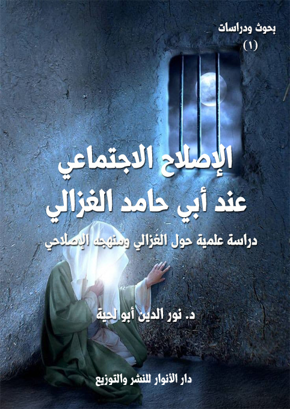

الكتاب: الإصلاح الاجتماعي عند أبي حامد الغزالي
المؤلف: أ.د. نور الدين أبو لحية
الناشر: دار الأنوار للنشر والتوزيع
الطبعة: الثانية، 1437 هـ
عدد الصفحات: 457
ISBN: 978-3-330-96937-7
لمطالعة الكتاب من تطبيق مؤلفاتي المجاني وهو أحسن وأيسر: هنا

التعريف بالكتاب
ظهر لنا الغزالي في هذه الرسالة بصورة إنسان مؤمن حزين لما أصاب الدين في عصره، وما أصاب ممثليه من العلماء، فهو لذلك يمارس دوره في جميع الميادين: في العقيدة بتنقيتها من الأهواء والبدع والانحرافات، وفي التصوف بتبيين محاسنه ومساوئه، وفي سلوكات الناس بالبحث عن جذورها العميقة، وفي الملل والنحل بالرد عليها، والكشف عن أباطيلها..
وهو أثناء ذلك قد ينقل عن صوفي أو فقيه أو فيلسوف من المعاني ما يراه مناسبا، فلذلك اتهم بالنقل، ورمي بالفلسفة، وشنع عليه بالتكرار والمبالغة.
وقد حاولنا أن نبين إمكانية الاستفادة من آراء الغزالي في إصلاح واقعنا الاجتماعي الذي يكاد يمر بنفس الظروف التي مر بها عصر الغزالي من ضعف إيماني وانهيار خلقي وتشتت في الوحدة الاجتماعية وغفلة عن القضايا الأساسية.
الإصلاح الاجتماعي عند أبي حامد الغزالي (13)
لقد لقيت آراء الغزالي وتوجهاته الفكرية اهتمام الكثير من الدارسين منذ بداية هذا القرن، ابتداء من منصور فهمي وزكي مبارك وسليمان دنيا وغيرهم، بحيث شملت بحوثهم جوانبه العقدية والفلسفية والصوفية والأخلاقية وغيرها.
ومن التساؤلات الهامة التي أفرزتها تلك الدراسات ما يتعلق بتأثر الغزالي الاجتماعي، وهل كان ما رآه من آراء، أو ما اختاره من اتجاهات، أو ما قام به من أعمال ترفا فكريا وبحثا نظريا لا صلة له بواقعه، فهو يعيش بفكره في عصر غير عصره وبيئة غير بيئته، أم أنها نتيجة لبيئته، وأثر لها، ولكن من جانبها السلبي فهي تمثل العصر الذي أنتحها، وما الغزالي بذلك إلا اسقاط لعصره، منطو فيه.. أو أن الغزالي ـ كما اعتبر نفسه ـ مجدد ديني، ومصلح اجتماعي، اطلع على ما في واقعه من علل وعمل لاصلاحه، وكان له دور إيجابي في ذلك؟
وقد كانت الإجابة على هذه التساؤلات مختلفة لدى الباحثين فبينما نجد من يعتبره مجدد قرون لا قرن واحد، ومصلح أجيال لا جيله فقط، نرى من يعتبره سلبيا منطويا غارقا في حلوته، واذا ما خرج الى المجتمع فهو ينشر أفكاره عن الزهد وبغض الدنيا والفقر مما يزيد في تخلف المجتمع وإفساده.
وقد رأينا أن الإجابة الموضوعية على هذه الأسئلة تتطلب البحث في علاقة فكر الغزالي بالإصلاح الاجتماعي، لا في علاقة شخصه به، وأن المرجع في ذلك كتبه، لا حياته، لأن الذين اتهموه بالسلبية انطلقوا من توجهه الصوفي، وركونه إلى العزلة، ولم ينظروا إلى صلة ماكتبه في عزلته بالمجتمع سلبا أو إيجابا، فقط كان موقفهم منه نابعا عن موقف مسبق من التصوف وحكم مسبق على رجاله.
ولذلك اخترت (الإصلاح الاجتماعي عند الغزالي) عنونا لهذا البحث مدفوعا بما يلي:
الإصلاح الاجتماعي عند أبي حامد الغزالي (14)
1 ـ أن معظم الدراسات المتعلقة بالإصلاح الاجتماعي تكاد تقتصر على الفترة ما بين القرنين التاسع عشر والعشرين، وعلى أشخاص معينين أو حركات معينة، بحيث أصبحت هذه الوضيفة الأساسية في الإسلام قصرا على مدارس محدودة، وهذا غمط لحق كثير من رجال الإصلاح السابقين من جهة، وتوجيه لمسيرة الإصلاح في إتجاه معين من جهة أخرى.
و أكبر ما يدلي به هؤلاء من حجج هو الواقعية التي يدعمها قرب الزمان، مع أن كثيرا من الأنظمة الحديثة ترجع منابعها إلى أسس نظرية أو فلسفية قديمة.
2 ـ أن مجتمعنا المعاصر بسبب ما سلطت عليه من مؤامرات استهدفت أصالته، أو ما حوى من متناقضات شوهت خصائصه، يشبه في كثير من نواحيه مجتمع الغزالي، نلاحظ ذلك سواء في كتابات الغزالي أو كتابات المؤرخين لعصره، وهو مما يعطي هذا البحث بعدا واقعيا زيادة على البعد التاريخي.
3 ـ أن الغزالي يمثل في تاريخ الفكر الإسلامي مدرسة شملت الكثير من الأعلام، ويحظى بشعبية قل من وصل إليها من العلماء والمصلحين، ويشكل منعرجا في التوجهات العلمية والتربوية امتد إلى أجيال كثيرة، فلذلك لا زال ـ مع كثرة الدراسات المؤلفة حوله ـ يحتاج إلى مزيد بحث وتعمق خاصة في هذا الجانب.
4 ـ أن تأصيل العمل الإصلاحي في الميدان الاجتماعي يقتضي ربطه بمصادره الشرعية، وذلك يتطلب مراجعة ماكتبه العلماء والمصلحون الذين جمعوا بين العلم الشرعي كإطار مرجعي، والنظر في الواقع ومحاولة تغييره.
5 ـ أن أكثر الحركات الإسلامية المعاصرة انشغلت عن الإصلاح الاجتماعي بتفريغ جهودها في محاولة الوصول الى الإصلاح السياسي، وقد أثبتت التجارب عقم هذا السبيل وعدم جدواه.
هذه بعض الدوافع لاختيار هذا الموضوع، والذي تكمن أهميته في محاولة معرفة موقف
الإصلاح الاجتماعي عند أبي حامد الغزالي (15)
الغزالي من الإصلاح الاجتماعي، عن طريق عرض آرائه في ذلك، وبيان إمكانية الإستفادة منها في واقعنا.
وقد كان الاهتمام بهذه الناحية من فكر الغزالي ضئيلا من قبل الباحثين حيث انصب التركيز على الجانب الفلسفي أو الصوفي أو العقدي فقط، دون محاولة ربط ذلك بغرضه الإصلاحي، بل انصب جهد بعضها ككتاب (الأخلاق عن الغزالي) لزكي مبارك على إظهار الغزالي في صورة المفكر السلبي المنطوي على نفسه، وقد طغى جانبا النقد فيه على البحث، وتغلبت الذاتية على الموضوعية، وكان له أثر سلبي على الدراسات التي أتت بعده، وتأثرت بمواقفه، دون البحث في مدى صحتها.
وقد استفدنا من تلك الدراسات ـ بغض النظر عن مواقفهاـ مع ربطها بموضوع بحثنا، ولعل أهمها كتاب (الحقيقة في نظر الغزالي) لسليمان دنيا الذي وضع في حسابه عنصر الإصلاح الاجتماعي أثناء تحليله لآراء الغزالي العقدية وكتاب (الفيلسوف الغزالي) لعبد الأمير الأعسم الذي بحث في الدراسات الغزالية مصنفا لها، وكتاب (الفلسفة التوازنية القرآنية عند الغزالي) لزكريا بشير امام الذي أعاد الاعتبار لآراء الغزالي الإشراقية مع ربطها بالنصوص الشرعية، وغيرها من البحوث والدراسات.
وقد حاولت أن ألتزم في هذا البحث بالمنهج التحليلي التركيبي، حيث جمعت آراء الغزالي المتعلقة بموضوع الإصلاح الاجتماعي، ثم رددتها إلى عناصرها الأساسية، مع موازنتها بآراء غيره من المصلحين عند الضرورة، ثم التعقيب عليها بعد ذلك.
وقد جاءت الرسالة في أربعة فصول بالإضافة إلى مقدمة وخاتمة.
ففي الفصل الأول درست عصر الغزالي وحياته باعتبارهما مدخلا أساسيا لفهم آرائه ومواقفه، وقد ركزت على ما يتعلق منها بالجوانب الاجتماعية.
وفي الفصل الثاني بينت تصور الغزالي العام لمفهوم الإصلاح الاجتماعي محاولا استنباط
الإصلاح الاجتماعي عند أبي حامد الغزالي (16)
تعريف جامع لأركانه، ومن خلاله تناولت ضوابط الإصلاح الاجتماعي الشرعية حسب اجتهادات الغزالي واختياراته الفقهية.
وفي الفصل الثالث تناولت الأصوال التي اعتمد عليها منهج الغزالي في الإصلاح الاجتماعي، وهي القرآن والسنة والتصوف والعقل والثقافات الأجنبية. فقد اهتم الكثير ببيان مصادر فكر الغزالي، وكان تصنيفهم له باعتبارها، فلذلك حاولت أن أبين استمداد الغزالي من كل تلك المصادر، وأنه لا تنافر بينها، وأن الإصلاح الشامل يستدعي الجمع بينها.
وفي الفصل الرابع عرضت أسس بيناء المجتمع عند الغزالي باعتبارها الميدان الأول لعمل المصلح الاجتماعي، وقد بينت أنها تنطلق من الفرد فتربيته على الإيمان، وتؤديه بالعلوم والمعارف، وتزكية بالتربية الروحية العالية، ثم تربط بينه وبين أفراد المجتمع بالأخوة الإيمانية، ومايصدر عنها من سلوكيات إجتماعية.
وقد رجعت لإنجاز البحث إلى حملة من المصادر والمراجع منها:
أولاـ المصادر: وهي معظم كتب الغزالي ورسائله وخاصة:
1 ـ إحياء علوم الدين وهو أهم كتبه وأجمعها لآرائه وخاصة ما يتعلق منها بالإصلاح الاجتماعي، فلذلك جعلناه مصدرنا الأساسي.
2 ـ المنقذ من الضلال، وفيه التأريخ لفكر الغزالي وتطوره وبيان موقفه من بعض القضايا المتعلقة بالإصلاح الاجتماعي.
3 ـ جواهر القرآن، وفيه بيان مواقفه من طريقة التعامل مع المصادر الشرعية.
4 ـ المستصفى من علم الأصول، وهو إن كان كاتبا في أصول الفقه إلا أنه يؤصل كثيرا من آرائه الفقهية
وغيرها من كتب الغزالي الكثيرة، أما بعض كتبه المشكوك في نسبتها إليه كـ (مشكاة الأنوار) و(الرسالة اللدنية) و(روضة الطالبين) و(منهاج العابدين) و(معارج القدس) وغيرها
الإصلاح الاجتماعي عند أبي حامد الغزالي (17)
فقد استندت إليها واقتبست منها ما رأيته متناسبا مع تفكير الغزالي العام، والمصرح به في كتبه الصحيحة، وخاصة (إحياء علوم الدين) ومع ذلك فإن هناك من يرجح صحة نسبة الكثير من تلك الكتب إليه بأدلة لا يمكن رفضها، ومنهم عبد الرحمن بدوي، وأبو العلا العفيفي، وسليمان دنيا وغيرهم، وكلهم باحثون مختصون في دراسة الغزالي.
ثانيا ـ المراجع: وهي الكتب التي رجعت إليها للتأريخ، أو التعريف، أو الموازنة، كالكتب التاريخية والإجتماعية والتربوية والفلسفية بالإضافة للموسوعات والقواميس والدراسات المتعلقة بالغزالي.
والحمد لله رب العالمين.
الإصلاح الاجتماعي عند أبي حامد الغزالي (18)
اتفق المترجمون للغزالي على أن مولده كان سنة 450 هـ، وأن مكان ولادته هو مدينة طوس، وكانت ثاني مدينة في خراسان بعد نيسابور، وكانت تتألف من مدينتين، يقال لإحداهما (الطابران)، وبها قبر الغزالي، والثانية (نوقان)، وبها قبر الإمام الرضا، وقبر هارون الرشيد إلى جواره، وقد كانت طوس في ذلك العهد مدينة كبيرة حسنة المباني كثيرة الأسواق شاملة الأرزاق عامرة الأمكنة رائعة الجهات بها منابر (1)، ولكن جحافل المغول دمرتها سنة 607 ه تدميرا شنيعا، ولم يبق منها إلا بعض الآثار تشهد على ما كان فيها من حضارة وعمران، وقد كان لطوس أكثر من ألف قرية. ومنها قرية الغزالي المسماة ب (الغزالة) وقد تخرج من هذه القرى ما لا يحصى من أئمة العلم والفقه (2).
ولا تذكر لنا المصادر شيئا ذا بال عن أسرة الغزالي، وجل ماهناك أن أباه كان فقيرا صالحا لا يأكل إلا من كسب يده في العمل غزل الصوف، ويطوف على المتفقهة، ويجالسهم، ويتوفر على خدمتهم، ويجد في الإحسان إليهم، وأنه كان إذا سمع كلامهم بكي وتضرع وسأل الله تعالى أن يرزقه ابنا، ويجعله فقيها، ويحضر مجالس الوعظ، فإذا طاب وقته بكى، وسأل الله أن يرزقه ابنا واعظا. قال السبكي: (فاستجاب الله دعوتيه، فأما أبو حامد فكان أفقه أقرانه.. وأما أحمد
__________
(1) محمد الحميري، الروض المعطار، تحقيق إحسان عباس، لبنان، دار القلم، 1975، ص 398، وتسمى اليوم مشهد، وهي مدينة في أقصى الشمال الشرقي من إيران، وعاصمة مقاطعة خراسان، تعد مركزا دينيا مرموقا لمشهد الرضا بها، والذي يقصده الشيعة من كل مكان، نقلا عن: د. محمد إبراهيم الفيومي، الإمام الغزالي وعلاقة اليقين بالعقل، القاهرة، دار الفكر العربي، ص 215.
(2) ياقوت. معجم البلدان، ج 4، ص 49.
الإصلاح الاجتماعي عند أبي حامد الغزالي (19)
فكان واعظا تلين الصخور الصم عند سماع تحذيره، وترعد فرائص الحاضرين في مجالس تذكيره) (1)
أما أصل أسرته، فالظاهر أنها فارسية، إذا لو كانت عربية لانتسبت إلى القبيلة التي تنتمي إليها كعادة أهل ذلك العصر، وخاصة من يقطنون بلاد العجم، ومع ذلك فقد كانت عربية اللسان كشأن معظم أهل خرسان في ذلك الوقت (2)
ويمكن تقسيم حياة الغزالي إلى أربع مراحل هي:
وتمتد هذه المرحلة إلى سنة 478 هـ، أي حتى توليه التدريس بنظامية بغداد، وقد بدأ تلقي العلم في بلده، والظاهر أنه كان ما يبدأ به المسلمون جميعا، في ذلك الوقت، من حفظ القرآن الكريم، وتعلم للقراءة والكتابة، وما يتبع ذلك من نحو وصرف ولغة.
وقد ذكر السبكي قصة بداية تلقيه العلم، وهي أنه لما حضرت والده الوفاة أوصى به وبأخيه أحمد إلى صديق له متصوف من أهل الخير، وقال له: (إن لي لتأسفا عظيما على تعلم الخط، وأشتهي استدراك ما فاتني في ولدي هذين، فعلمهما، ولا عليك أن تنفذ في ذلك جميع ما خلفته لهما)، فلما مات أقبل الصوفي على تعليمهما إلى أن فني ذلك النزر اليسير الذي خلفه لهما أبوهما، وتعذر على الصوفي القيام بقوتهما، فقال لهما: (اعلما أني قد أنفقت عليكما ما كان لكما، وأنا رجل من الفقر والتجريد بحيث لا مال لي، فأواسيكما به، وأصلح ما أرى لكما أن تلجآ إلى مدرسة، فإنكما من طلبة العلم، فيحصل لكما قوت يعينكما على وقتكما)
قال السبكي: (وكان الغزالي يحكي هذا، ويقول: (طلبنا العلم لغير الله، فأبى أن يكون
__________
(1) السبكي. الطبقات الكبرى، ج 4، ص 102.
(2) شمس الدين المقدسي، أحسن التقاسيم في معرفة الأقاليم، (د. ط) (د. ت)، ص 334.
الإصلاح الاجتماعي عند أبي حامد الغزالي (20)
إلا الله) (1)
ثم قرأ، وهو في صباه، طرفا من الفقه ببلده على (أحمد بن محمد الراذكاني) (2)، وبعدها انتقل إلى (جرجان) (3)، وقد تلقى الغزالي العلم فيها عن الشيخ (أبي نصر الإسماعيلي) (4)، وعلق عنه (التعليقة) ثم رجع إلى طوس.
ومن طوس انتقل إلى نيسابور (5)، وفيها التقى الغزالي بالشخصية التي كان لها تأثير كبير في حياته العقلية، وهي شخصية إمام الحرمين (أبي المعالي الجويني). الذي قال عنه معاصروه: (إن ما يوجد في مصنفاته من العبارات قطرة من سيل كان يجريه لسانه على شفتيه عند المذاكرة، وغرفة من بحر كان يفيض من فمه في مجلس المناظرة (6).
وكان يقعد بين يديه كل يوم نحو من ثلاثمائة رجل من الأئمة ومن الطلبة، وكان من بين هؤلاء، بل أشدهم ملازمة (أبو حامد الغزالي) وقد بدت حينذاك ينابيع عبقريته تتفجر عن ذكاء شديد، وفطرة عجيبة، وإدراك مفرط، وحافظة قوية، وغوص على المعاني الدقيقة، مما جعل إمام الحرمين يقول عنه: (الغزالي بحر مغدق) (7)
__________
(1) السبكي، الطبقات الكبرى، ج 4،ص 102.
(2) المرجع السابق، ج 4،ص 102.
(3) تقع بين طبرستان وخرسان، يقول عنها ياقوت: (ليس بالمشرق بعد أن تجاوز العراق مدينة أجمع ولا أظهر حسنا من جرجان على مقدارها)، انظر: ياقوت، معجم البلدان، ج 4،ص 49.
(4) هو إسماعيل بن مسعدة الإسماعيلي الجرجاني، ولد سنة 407 هـ، وتوفي سنة 477 ه، انظر: السبكي، الطبقات الكبرى، ج 4، ص 294.
(5) كانت من أشهر مدن خرسان وأجملها وأكثرها علماء حتى لقبت بعروس خرسان، انظر، الحميري، الروض المعطار، ص 588.
(6) السبكي، الطبقات الكبرى، ج 5، ص 103.
(7) المرجع السابق، ج 5، ص 103.
الإصلاح الاجتماعي عند أبي حامد الغزالي (21)
وقد جد واجتهد حتى برع في المذهب والخلاف والجدل والأصلين والمنطق، وشرع يصنف فيها، ويقال: (إن الجويني لما رأى كتابه المسمى ب (المنخول)، قال له: (دفنتني، وأنا حي، هلا صبرت حتى أموت) (1)
وقد بقي الغزالي ملازما لشيخه إلى أن توفي سنة 478 هـ، وبذلك انتهى ما يمكن تسميته بمرحلة الدراسة، ولو أن حياة الغزالي كانت كلها تعلما وتعليما.
و تبدأ من سنة 478 هـ حين ارتحل الغزالي إلى المعسكر ــ وقد كان ميدانا فسيحا يجوار نيسابور أقام فيه (نظام الملك) ـ وقد كان مجلسه مجمع أهل العلم وملاذهم، وهناك، وبحضرته ناظر الغزالي الأئمة والعلماء، فظهر كلامه عليهم، فاعترفوا بفضله، وأقروا بنبوغه، وكأن (نظام الملك) قد وجد فيه الشخصية التي يمكنها أن تسد الفراغ الذي تشكو منه مدرسته في بغداد، فأمره بالتوجه إليها، وفوضه شؤونها، فباشر إلقاء الدرس بها في جمادى الأولى سنة 484 هـ (2).
قال (عبد الغافر الفارسي) (3) –معاصر الغزالي ـ: (وهناك أعجب الكل تدريسه ومناظرته، وصار بعد إمامة خرسان إمام العراق) (4).
وقد علت حشمته ودرجته في بغداد حتى كانت تغلب حشمة الأكابر والأمراء ودار
__________
(1) ابن الجوزي، المنتظم ج 9، ص 103.
(2) السبكي، الطبقات الكبرى، ج 4، ص 107.
(3) تعتبر ترجمة عبد الغافر الفارسي التي أودعها كتابه (السياق في تاريخ نيسابور) أول ترجمة للغزالي، وهذا الكتاب ضائع، المتبقي منه نقله ابن عساكر في (تاريخ دمشق) وعنه نقل السبكي وكل المترجمين (انظر: د. عبد الأمير الأعم، الفيلسوف الغزالي إعادة تقويم لمنحى تطوره الروحي، ط 2، بيروت: الأندلس،1981، ص 12). وتمتاز ترجمته ببيان موقف المعاصرين للغزالي منه، سواء المادحين أو الطاعنين.
(4) السبكي، الطبقات الكبرى، ج 4،ص 107.
الإصلاح الاجتماعي عند أبي حامد الغزالي (22)
الخلافة، وظل مقيما على التدريس ونشر العلم والفتيا والتصنيف أربع سنوات (تضرب به الأمثال، وتشد إليه الرحال) (1)
وكان يحضر مجلسه الجلة من العلماء كابن عقيل (2) وأبي الخطاب (3) وينقلون كلامه في مصنفاتهم (4).
واهتم في هذه المرحلة –زيادة على التدريس ـ بدراسة الفلسفة، فحصلها في أقل من سنتين – مع انشغاله بتدريس ما ينوف عن ثلاثمائة من طلبة العلم (5) – وكتب فيها، ثم رد عليها، وكتب في ذلك وغيره كتبا جمة.
وهي أدق مراحل حياته وأغناها وأهمها، ولولاها ما كان لأبي حامد ذلك الدور الكبير الذي قام به في الإصلاح، وقد بلغت مدتها إحدى عشرة سنة ابتداء من ذي القعدة سنة 499 هـ، كما نص على ذلك في (المنقذ من الضلال) (6)
أما سببها فقد ذكرها الغزالي في كتابه القيم (المنقذ من الضلال)، وهو من أهم الوثائق المبينة لحياته الفكرية والروحية، ولذلك سنتخذه المصدر الوحيد لمعرفة سبب هذه العزلة:
__________
(1) المرجع السابق، ج 4،ص 107.
(2) هو أبو الوفا علي بن عقيل بن محمد [431 ـ 513 هـ]. كان شيخ الحنابلة في بغداد وكان واعظا عظيما التدين يجتمع بجميع العلماء من كل مذهب، انظر: ابن كثير، البداية والنهاية، ج 11،ص 677.
(3) هو محفوظ بن أحمد الكلواذي، أحد أئمة الحنابلة في الأصول والفروع، توفي سنة 510 ه، انظر: الذهبي، تذكرة الحفاظ، ج 4،ص 69.
(4) ابن الجوزي المنتظم، ج 9، ص 69.
(5) الغزالي، المنقذ من الضلال، ص 93.
(6) المرجع السابق، ص 140.
الإصلاح الاجتماعي عند أبي حامد الغزالي (23)
لقد مر الغزالي نتيجة لعقله الوقاد من جهة، وللبيئة والعصر الذي عاش فيه من جهة أخرى إلى مرحلة شك استغرقت فترة ذات بال من حياته.
قال الغزالي –بعد أن ذكر اختلاف الفرق والملل ـ: (ولم أزل في عنفوان شبابي منذ راهقت البلوغ قبل بلوغ العشرين إلى الآن، وقد أناف السن على الخمسين أقتحم لجة البحر العميق، وأخوض غمرته خوض الجسور لا خوض الجبان الحذور) (1)
وكان لذلك يتفحص عقيدة كل فرقة، ويستكشف أسرار كل طائفة حتى انحلت عنه رابطة التقليد، وانكسرت عليه العقائد الموروثة، وهنا بدأت مرحلة شك زجت به إلى السفسطة (2) بحكم الجال لا يحكم اللسان والمقال، ولكن الله خلصه منها بنور الإيمان الذي قذفه في قلبه لتبدأ مرحلة الشك الثانية.
قال الغزالي: (ولما شفاني الله تعالى من هذا المرض بفضله وسعة جوده انحصرت أصناف الطالبين عندي في أربع فرق: المتكلمون والباطنية والفلاسفة والصوفية) (3)
وقد بدأ يعلم الكلام فحصله، وصنف فيه، ولكنه وجده ـ كما يذكر ـ علما وافيا بمقصودهم غير واف بمقصوده، فانتقل إلى الفلسفة فبحث فيها، وسرعان ما بان له عوارها، وظهر له أن العقل ليس مستقلا بالإحاطة بجميع المطالب، ولا كاشفا للغطاء عن جميع المعضلات، فرد عليهم (4)، وانتقل إلى مذهب الباطنية فوجدهم لا حاصل عندهم، ولا طائل
__________
(1) الغزالي، المنقذ من الضلال، ص 81.
(2) مأخوذ من اللفظ اليوناني [سفرما]، ويعني التميز بالمهارة والحذق، ثم أخذت بعد ذلك تدل على القول المموه والقياس الخادع الذي يلتمس منه التلبيس على الناس والتغرير بهم، انظر، مراد وهبة، المعجم الفلسفي، ص 11.
(3) الغزالي، المنقذ من الضلال، ص 81.
(4) المرجع السابق، ص 87.
الإصلاح الاجتماعي عند أبي حامد الغزالي (24)
لكلامهم، فرد عليهم (1)، ثم أقبل بهمته على طريق (الصوفية)، وقد بدأ بتحصيل علمهم من مطالعة كتبهم مثل (قوت القلوب) لأبي طالب المكي (2)، وكتب (الحارث المحاسبي) (3)، والمتفرقات المأثورة عن (الجنيد) (4) و(الشبلي) (5) و(البسطامي) (6)، فظهر له أن أخص خصائصهم ما لا يمكن الوصول إليه بالتعلم، بل بالذوق والحال، وتبدل الصفات (7)، ثم قارن ما علمه بما هو فيه من جاه.
قال معبرا عن حاله تلك الفترة: (وكان قد ظهر عندي أنه لامطمع في سعادة الآخرة إلا بالتقوى، وكف النفس عن الهوى، وأن رأس ذلك كله قطع علاقة القلب عن الدنيا بالتجافي عن دار الغرور والإنابة إلى دار الخلود والإقبال بكنه الهمة على الله تعالى، وأن ذلك لا يتم إلا بالإعراض عن الجاه والمال، والهرب من الشواغل واللواحق) (8)
__________
(1) المرجع السابق، ص 92.
(2) هو محمد بن عطية الحارثي العجمي (ت 386 ه)، رجع الغزالي إلى كتابه (قوت القلوب) كثيرا في (الإحياء) انظر: ابن العماد، شذرات الذهب، ج 3، ص 210.
(3) هو الحارث بن أسد المحاسي (ت 243 ه)، رجع الغزالي إلى كتبه، وخاصة (الرعاية لحقوق الله) كثيرا في (الإحياء)، انظر: أبو نعيم، حلية الأولياء، ط 1، القاهرة: مطبعة السعادة، ج 10، ص 74.
(4) هو أبو القاسم الجنيد بن محمد (ت 298 هـ) أصله من نهاوند، لقبه المتأخرون [سيد الطائفة]، و[شيخ المشايخ]، و[طاووس الفقراء]، انظر: أبو نعيم، حلية الأولياء، ج 10، ص 255.
(5) هو أبو بكر الشبلي (ت 334 هـ) صحب الجنيد، وكان شيخ وقته علما وحالا وظرفا، وكان شديد التعظيم للشريعة، انظر: أبو نعيم، حلية الأولياء، ج 10،ص 366.
(6) هو طيفور بن عيسى (ت 261 هـ) من كبار الصوفية أصحاب الأحوال، انظر أبو نعيم، حلية الأولياء، ج 10 ص 33.
(7) الغزالي، المنقذ من الضلال، ص 123.
(8) المرجع السابق، ص 124.
الإصلاح الاجتماعي عند أبي حامد الغزالي (25)
ولكنه لاحظ أحواله فوجدها منغمسة في العلائق، وقد أحدقت به من كل الجوانب، ولاحظ أعماله، فإذا هو مقبل على علوم غير مهمة ولا نافعة في طريق الآخرة، وبحث في نيته فوجدها غير خالصة لوجه الله تعالى، بل باعثها ومحركها طلب الجاه وانتشار الصيت.
ويصور لنا حاله في ذلك الحين بقوله: (فتيقنت أني على شفا جرف هار، وأني أشفيت على نار إن لم أشتغل بتلافي الأحوال) (1)
وبقي يتردد بين تجاذب شهوات الدنيا ودواعي الآخرة قريبا من ستة أشهر، وهو حينذاك يقدم رجلا ويؤخر أخرى إلى أن أقفل على لسانه، وضعف عن التدريس.
لقد كان منادي الإيمان يناديه: (الرحيل الرحيل، فلم يبق من العمر إلا القليل، وبين يديك السفر الطويل، وجميع ما أنت فيه من العلم والعمل رياء وتخييل، فإن لم تستعد للآخرة الآن فمتى تستعد؟ وإن لم تقطع هذه العلائق، فمتى تقطع؟) (2)
وهنا، ولما أحس بعجزه، وسقط بالكلية اختياره التجأ إلى الله تعالى، فسهل على قلبه العزلة.
هذا هو السبب الذي ذكره الغزالي، ولا نرى فيه أي غرابة تجعلنا ننكره أو نحيد عنه، فاعتزال أهل العلم أو السلطان عن الجاه وأسبابه طلبا للآخرة شيء عادي، ونماذجه في التاريخ كثيرة.
وقد ذكر الزبيدي سببا يؤيد ما ذكره الغزالي فقال: رأيت في بعض المجامع أن سبب سباحته وزهده أنه كان يوما يعظ الناس، فدخل عليه أخوه أحمد، فأنشده:
أخذت بأعضادهم إذا ونوا... وخلفك الجهد إذ أسرعوا
وأصبحت تهدي ولا تهتدي... وتسمع وعظا ولا تسمع
وأصبحت تهدي ولا تهتدي... وأصبحت تهدي ولا تهتدي
فيا حجر الشح حتى متى... تسن الحديد ولا تقطع
قال: فكان ذلك سببا في تركه علائق الدنيا (3).
ومع ذلك فقد اختلفت آراء الباحثين في سبب عزلته، فمنهم من أعاد ذلك إلى مرض أصيب به، وقد فسره ديورانت على أنه انهيار في قواه العقلية (4)، وفسرة عمر فروخ على أنه الكنط (5)، ومنهم من أرجع ذلك إلى خطر الباطنية، يقول صلاح الدين عبد اللطيف: (ولعل الباطنية أحرجت موقفه فهددته، ولوحت له بالحساب على مافرط في حقهم في الثورة على الخلافة العباسية، وتفويض دعمائمها، فضاق به المقام في بغداد) (6)
وقد أشار الغزالي إلى أن معاصريه – أيضا – قد احتاروا في سبب عزلته (وارتبكوا في الاستنباطات، وظن من بعد عن العراق أن ذلك كان الإستشعار من جهة الولاة، وأما من قرب من الولاة وكان يشاهد إلحاحهم في التعلق بي ولاانكباب علي، وإعراضي عنهم، وعن الالتفات إلى قولهم، فيقولون: (هذا أمر سماوي، وليس له سبب إلا عين أصابت أهل الإسلام وزمرة العلم) (7).
هذا عن سبب عزلته، أما حاله فيها فيمكننا تقسيم عزلته بحسه إلى مرحلتين:
__________
(1) الغزالي، المنقذ من الضلال، ص 124.
(2) المرجع السابق، ص 124.
(3) الزبيدي، إتحاف السادة المتقين شرح أسرار علوم الدين، دط، دت، 1/ 8.
(4) وول ديورانت، قصة الحضارة، ترجمة زكي نجيب محمود، القاهرة، 1950، مج 4، 2/ 363.
(5) هو مرض وراثي من أعراضه هبوط في القوى الجسمانية والعقلية، ينتج اضطرابا نفسيا (انظر: د. عمر فروخ، رجوع الغزالي إلى اليقين [ضمن كتاب: مهرجان الغزالي، إشراف المجلس الأعلى لرعاية الفنون والآداب والعلوم الاجتماعية، القاهرة، مطابع كونستا توماس وشركاه]، ص 307)..
(6) د. صلاح الدين عبد اللطيف الناهي، الحوائد من آراء حجة الإسلام الغزالي. ط 1، بيروت: دار الجيل، دار عمار 1407 ه، 1987 م، ص 45.
(7) الغزالي، المنقذ من الضلال، ص 126.
الإصلاح الاجتماعي عند أبي حامد الغزالي (26)
ودامت مايقرب السنتين لا شغل له فيها إلا العزلة والخلوة والرياضة اشتغالا يتزكية النفس وتهذيب الأخلاق (1)، وكان يكثر الجلوس في زاوية الشيخ (نصر المقدسي) بالجامع الأموي، والتي صارت تعرف ب (الغزالية) (2)، وكان يصعد أحيانا منارة المسجد الأموي، ويعتكف فيها، ثم رحل منها إلى (بيت المقدس) يدخل كل يوم الصخرة ويغلق بابها على نفسه (3).
وقد ذكر عتبد الغافر الفارسي – حكاية عن الغزالي – حاله في تلك الخلوات، فقال: (وحكى لنا في ليال كيفية أحواله، وابتداء ماظهر له من سلوك طريق التآله) (4)، وكان من جملة ذلك: أنه ابتدأ بصحبة (الفارمذي) (5)، وامتثل ماكان يشير عليه من القيام بوظائف العبادات، والإمعان في النوافل، واستدامة الأذكار، ثم ذكر أنه راجع العلوم وخاض في الفنون وعاود الجد في كتب العلوم الدقيقة، واقتفى تأويلها حتى انفتحت له أبوابها، ثم ذكر أنه فتح عليه باب من الخوف بحيث شغله عن كل شيء، وحمله على الإعراض عما سواه حتى ارتاض كل الرياضة (6). وقد ذكر الزبيدي للغزالي شيخا آخر في التربية – زيادة على ما ذكره عبد الغافر – هو (يوسف
__________
(1) المرجع السابق، ص 126.
(2) السبكي، الطبقات الكبرى، ج 4، ص 104.
(3) الغزالي، المنقذ من الضلال، ص 126.
(4) السبكي الطبقات الكبرى، ج 4، ص 108.
(5) هو أبو علي الفارمذي الطوسي، من أعيان تلامذة أبي القاسم القشيري، توفي بطوس سنة 497 ه، انظر: الزبيدي، إتحاف السادة المتقين، ج 1، ص 19.
(6) السبكي، الطبقات الكبرى، ج 4،ص 108.
الإصلاح الاجتماعي عند أبي حامد الغزالي (27)
النسلج) (1)
ودامت ما يقارب عشر سنوات، وتتميز عن الأولى بأنه لم يكن معتكفا فيها اعتكافا كليا، وإنما هو يدرس أحيانا ويعظ، ويسبح في الأرض، ويخالط الناس، وييسعى في مهمات أهله، ولكنه مع ذلك ينقطع أحيانا للخلوة (2).
وللمترجمين له في هذه المرحلة زيادات على ماذكره الغزالي، منها سفره إلى الإسكندرية، وعزمه على ركوب البحر للقاء (يوسف بن تاشفين) (3) لما بلغه من عدله، لكنه عدل عن ذلك حين بلغه موته (4)، وهي زاوية منحولة للأدلة التالية:
1 ـ أن الغزالي بعد أن ذكر رحيله إلى بيت المقدسن ذكر بعده خروجه إلى الحجاز لزيارة مكة والمدينة.
2 ـ أن عبد الغافر الفارسي، معاصر الغزالي، لم يذكرها في ترجمته، مع اهتمامه برحلاته وتفاصيلها.
3 ـ أن (يوسف بن تاشفين) توفي سنة 500 هـ، والرواية المذكورة تفترض أن الغزالي كان في الإسكندرية سنة 500 هـ، مع أن جمع الروايات تؤكد أنه كان في تلك السنة في خراسان.
يقول الغزالي – بعد ماذكر عزلته الأولى ـ: (ثم تحركت بي داعية فريضة الحج، والاستمداد من بركات (مكة) و(المدينة)، وزيارة رسول الله صلى الله عليه وآله وسلم بعد الفراغ من زيارة (الخليل)
__________
(1) الزبيدي، إتحاف السادة المتقين، ج 1، ص 19.
(2) الغزالي، المنقذ من الضلال، ص 126.
(3) هو يوسف بن تاشفين المصالي المتوفي [410 ـ 500 ه] أكبر سلاطين المرابطين، أسس مدينة مراكش، أول من تلقب بأمير المسلمين، صاحب وقعة الزلاقة المشهورة، انظر: الزركلي الأعلام، ج 8، ص 222.
(4) ابن كثير، البداية والنهاية، ج 12،ص 142.
الإصلاح الاجتماعي عند أبي حامد الغزالي (28)
– صلوات الله عليه ـ فسرت إلى الحجاز) (1).
وبعدها سار عائدا إلى وطنه، وفي طريقه مر على بغداد، ونزل برباط (أبي سعيد) إزاء (المدرسة النظامية)، وقد لقيه فيها (أبوبكر بن العربي) (2) الذي وصف حاله حينذاك بقوله: (ورد علينا أنشمند (يعني الغزالي) فنزل برباط أبي سعيد بإزاء المدرسة النظامية معرضا عن الدنيا مقبلا على الله تعالى، فمشينا إليه، وعرضنا أمنيتنا عليه، وقلت له: (أنت ضالتنا التي كنا ننشد، وإمامنا الذي به نسترشد، فلقينا لقاء المعرفة، وشاهدنا منه ما كان فوق الصفة) (3).
وقد ذكر ابن العربي أنه سمع منه في هذا اللقاء (إحياء علوم الدين)، وهو يؤيد ماذكره المترجمون من أن الغزالي صنف كتابه هذا وهو في الخلوة (4).
ومما روي عنه في هذه الفترة، وجزم به المترجمون، مانقله ابن العماد عن أبي بكر بن العربي، قال: (رأيت الغزالي في البرية، وبيده عكازة، وعليه مرقعة، وعلى عاتقه ركوة، وقد كنت رأيته ببغداد يحضر دروسه أربعمائة عمامة من أكابر الناس وأفاضلهم يأخذون عنه العلم، فدنوت منه، فسلمت عليه، وقلت له: (يا إمام، أليس التدريس ببغداد خيرا من هذا؟)، فنظرإلي شزرا وقال: (لما بزغ بدر السعادةفي فلك الإرادة، وجنحت شمس الوصول في مغارب الأصول:
تركت هوى ليلي وسعدي بمنزل... وعدت إلى مصحوب أول منزل
ونادتني الأشواق مهلا فهذه... منازل من تهوى، زويدك فانزل
غزلت لهم غزلا دقيقا فلم أجد... لغزلي نساجا، فكسرت مغزلي (5)
وهي مع جمالها وشاعريتها لايمكن قبولها، فابن العربي لم يلق الغزالي إلا في سنة 490 هـ، كما نص على ذلك في (العواصم من القواصم) بقوله: (ولقد فاوضت فيها أبا حامد حين لقائي له بمدينة السلام في جمادى الآخرة سنة تسعين وأربعمائة) (6)، ونص لقائه له يدل على أنه كان أول لقاء، فكيف يكون قد رآه ببغداد قبل عزلته؟
بعد إحدى عشر سنة من العزلة قرر الغزالي أن يخرج منها ليتفرغ للعمل الإصلاحي، وهو في تبريره لترك عزلته يكاد يصدر من نفس المنبع الذي دعاه قبل ذلك إليها، وهو (الإيمان)
يقول عن ذلك: (فلما رأيت أصناف الخلق من ضعف إيمانهم إلى هذا الحد بهذه الأسباب، ورأيت نفسي ملبة بكشف هذه الشبهة حتى كان فضح هؤلاء أيسر عندي من شربة ماء لكثرة خوضي في علومهم وطرقهم، انقدح في نفسي أن ذلك متعين في هذا الوقت محتوم) (7)
وكما حصل له عند عزمه على العزلة من حيرته بين تلبية دواعي إيمانه أو دواعي نفسه حتى اعتقل لسانه عن التدريس، حصل له –هنا – عند عزمه على العودة بين دواعي إصلاح الخلق، وهو متعين محتوم، وبين بقائه على عزلته.
يقول – مخاطبا نفسه، معبرا عن حاله في تلك الفترة ـ: (فما تغنيك الخلوة والعزلة، وقد عم الداء، ومرض الأدباء، وأشرف الخلق على الهلاك) (8).
__________
(1) الغزالي، المنقذ من الضلال، ص 126.
(2) هو العلامة الحافظ أبو بكر محمد بن عبد الله الأشبلي، من كبار علماء المالكية، توفي سنة 543 ه، انظر: الذهبي، تذكرة الحفاظ، ج 4، ص 1294.
(3) نقلا عن: عمار طالبي، آراء بن بكر العربي الكلامة، الجزائر: الشركة الوطنية للنشر والتوزيع، ج 1، ص 53.
(4) ابن العربي، العواصم من القواصم، الجزائر: الشركة الوطنية للنشر والتوزيع، ص 30.
(5) ابن العماد الحنبلي، شذرات الذهب في اخبار من ذهب، القاهرة: مكتبة القدسي،1350 ه، ج 4، ص 13.
(6) ابن العربي، العواصم من القواصم، ص 30.
(7) الغزالي، المنقذ من الضلال، ص 138.
(8) المرجع السابق، ص 139.
الإصلاح الاجتماعي عند أبي حامد الغزالي (29)
ولكنه يعود، فيقول لنفسه: (متى تشتغل أنت بكشف هذه الغمة، ومصادفة هذه الظلمة، والزمان زمان فترة، والدور دور الباطل؟ ولو اشتغلت بدعوة الخلق عن طرقهم إلى الحق لعاداك أهل الزمان بأجمعهم، وأنى تقاومهم؟ فكيف تعايشهم؟) (1)
ولكن خاطر الإيمان يجيبه، فيقول: (لا ينبغي أن يكون باعثك على ملازمة العزلة الكسل والإستراحة وطلب عز الننفس وصونها عن أذى الخلق، والله تعالى يقول: {ألم (1) أَحَسِبَ النَّاسُ أَنْ يُتْرَكُوا أَنْ يَقُولُوا آمَنَّا وَهُمْ لَا يُفْتَنُونَ} (العنكبوت: 1، 2) (2)
هذا هو المحرك الأصلي للغزالي لترك عزلته، وقد ذكره عبد الغافر الفارسي في ترجمته له في قوله: (ثم سألناه عن كيفية رغبته في الخروج من بيته، والرجوع إلى ما دعي إليه من أمر نيسابور)، فقال – معتذرا عنه ـ: (ما كنت أجوز في ديني أن أقف عن الدعوة ومنفعة الطالبين بالإفادة، وقد حق علي أن أبوح بالحق، وأنطق به، وأدعو إليه) (3)
وأضيف إلى هذا أسباب أخرى كانت مساعدة على رجوعه للتدريس ذكرها الغزالي منها:
1 ـ ورود أمر إلزامي له من السلطان بالتدريس في المدرسة النظامية بنيسابور.
2 ـ مشاورته جماعة من (أرباب القلوب)، فاتفقوا على الإشارة بترك العزلة والخروج من الزاوية.
3 ـ رؤى كثيرة متواترة من الصالحين تشهد بأن هذه الحركة مبدأ خير ورشد قدرها الله سبحانه على رأس المائة الخامسة (4).
__________
(1) المرجع السابق، ص 139.
(2) المرجع السابق، ص 139.
(3) السبكي، الطبقات الكبرى، ج 4، ص 109.
(4) الغزالي، المنقذ من الضلال، ص 140.
الإصلاح الاجتماعي عند أبي حامد الغزالي (30)
وأهم أعمال الغزالي في هذه الفترة:
1 ـ تدريسه في المدرسة النظامية، ولم تجدد لنا المصادر مدتها، ولكن ذلك ربما يكون قد امتد من سنة 499 هـ إلى سنة 500 هـ، وبذلك تكون فترة تدريسه قصيرة قد لا تتجاوز بضعة أشهر (1).
وقد قارن الغزالي بين تدريسه من قبل في نظامية بغداد، وبين تدريسه في نظامية نيسابور قائلا: (وأنا أعلم إني إن رجعت إلى نشر العلم فما رجعت، لأن الرجوع عود إلى ما كان، وكنت في الزمان أنشر العلم الذي يكسب الجاه، وأدعو إليه بقولي وعملين وكان ذلك قصدي ونيتي، وأما الآن فأدعو إلى العلم الذي به يترك الجاه، ويعرف به سقوط رتبة الجاه) (2) ويضيف: (هذا هو الآن نيتي وقصدي وأمنيتي يعلم الله ذلك مني)
2 ـ تأسيسه مدرسة للعلم وخانقاه للصوفية، بعد ما لاحظ أن السياسة كانت تلقي بأوزارها على التعليم، فبتغير الحاكم يتغير الأستاذ، ويتغير البرنامج، وتتغير المذاهب نفسها، فهذه مصر كانت سنية إبان الحكم العباسي، ولكنها في زمانه فاطمية تدين بالمذهب الإسماعيلي، وتنشره في جميع أروقة مدارسها بدءا من الأزهر الشريف، فأراد أن يؤسس مدرسة لا يكون للحكام عليها سلطة، فأسس مدرسته، وأسس بجوارها الخانقاه ليجمع بين العلم والتربية.
وقد ذكر ابن كثير أنه اتخذ في بلده طوس دارا حسنة، وغرس فيها بستانا أنيقا (3)، وقد كان لطلبته نعم القدوة، فهو (موزع أوقاته على وظائف الحاضرين من ختم للقرآن ومجالسة أهل القلوب والقعود للتدريس، بحيث لا تخلو لحظة من لحظاته ولحظات من معه من الفائدة)
__________
(1) ابن كثير، البداية والنهاية، ج 12، ص 663.
(2) الغزالي، المنقذ من الضلال، ص 140.
(3) ابن كثير، البداية والنهاية، ج 12، ص 663.
الإصلاح الاجتماعي عند أبي حامد الغزالي (31)
(1).
وكانت خاتمة أمره –كما يذكر عبد الغافر الفارسي ـ: (إقباله على حديث المصطفى صلى الله عليه وآله وسلم، مجالسة أهله، ومطالعة الصحيحين، وذلك لا يعني أنه لم يسمع الأحاديث قبل ذلك، وإنما اشتغل بها في آخر عمره وتفرغ لها)، ويضيف عبد الغافر: (ولو عاش لسبق الكل في ذلك الفن بيسير من الأيام يستفرغه في تحصيله) (2)
في يوم الاثنين الرابع عشر من جمادى الاخرة سنة 505 هـ مضى إلى رحمة الله تعالى، وقد نقل السبكي قصة وفاته قائلا: (قال أحمد أخو الإمام الغزالي: لما كان يوم الاثنين وقت الصبح توضأ أخي أبو حامد، وصلى وقال: علي بالكفن)، فأخذه وقبله ووضعه على عينيه، وقال (سمعا وطاعة للدخول في الملك)، ثم مد رجليه واستقبل القبلة، ومات قبل الإسفار –قدس الله روحه ـ (3).
وروى ابن كثير أن سائلا سأله، وهو في حال الاحتضار، فقال: أوصني، فأجابه الغزالي: عليك بالإخلاص، ولم يزل يكررها حتى مات –رحمه الله (4).
وقد رثاه الشعراء، ومن أفضل المراثي مرثية (أبي المظفر الأبيوردي) التي يقول فيها:
بكى على حجة الإسلام حين ثوى ولإضافة شطر... من كل عظيم القدر أشرفه
ومنها:
مضى وأعظم مفقود فجعت به ولإضافة شطر... من لا نظير له في الخلق يخلفه (5)
رحم الله أبا حامد الغزالي، وأسكنه فسيح جنانه.
__________
(1) ابن خلكان، وفيات الأعيان، ج 4، ص 219.
(2) المرجع السابق، ج 4، ص 219.
(3) السبكي، الطبقات الكبرى، ج 4، ص 105.
(4) ابن كثير، البداية والنهاية، ج 12،ص 663.
(5) السبكي، الطبقات الكبرى، ج 4، ص 105.
الإصلاح الاجتماعي عند أبي حامد الغزالي (32)
مفهوم الإصلاح الاجتماعي وضوابطه عند الغزالي
نتناول في هذا الفصل مقدمتين أساسيتين للتعرف على تصور أبي حامد الغزالي لماهية الإصلاح الاجتماعي والضوابط التي تحكمه من الناحية الشرعية، وذلك من خلال مبحثين:
1. مفهوم الإصلاح الاجتماعي.
2. ضوابط الإصلاح الاجتماعي.
أولا ـ مفهوم الإصلاح الاجتماعي
يعني الإصلاح الاجتماعي ـ في مفهومه البسيط، وبحسب ما تدل عليه اللغة (1) ـ مناقضة الفساد الاجتماعي، وإقامة مجتمع بديل عنه يبنى على أسس فكرية وعقدية سليمة، تنشأ عنها سلوكيات صحيحة، تشمل جميع المظاهر الاجتماعية (2).
ويختلف هذا المفهوم بين المصلحين نتيجة للاختلاف في تحديد العناصر الأساسية المكونة للإصلاح الاجتماعي، والاختلاف في علاقة الإصلاح الاجتماعي بالأمر بالمعروف والنهي عن المنكر والحسبة، لأنه على أساس ذلك تكون المواقف التفصيلية من القضايا المرتبطة بهذا الجانب.
__________
(1) لغة: الصلاح، ضد الفساد، وأصلح الشيء بعد فساده أقامه، وأصلح الدابة أحسن إليها فصلحت، والصلح: السلم وتصالح القوم بينهم (ابن منظور، لسان العرب، بيروت: دار صادر، 1995، 2/ 516، رقم: 1758)
(2) انظر على سبيل المثال: د. عبد الكريم زيدان، أصول الدعوة. البليدة: قصر الكتاب. 1990، ص 138.
الإصلاح الاجتماعي عند أبي حامد الغزالي (33)
وسنتاول كل هذه الأمور من وجهة نظر الغزالي في المطالب التالية:
من خلال استقراء ما ذكره الغزالي عند حديثه عن الإصلاح الاجتماعي يمكن أن نجد المكونات الأساسية التالية:
هو الركن الأساسي في كل عمل إصلاحي، ويرى الغزالي شموليته للنواحي التالية:
وهو تبيين تفاصيل الأحكام الشرعية، وكيفية التعامل معها، والاستدلال لها، والحكم والمقاصد المناطة بها، ولذلك، فإن العلماء باختلاف مراتبهم من مفتين ووعاظ ومعلمين هم أول من يتعلق بهم هذا النوع من الجهد الإصلاحي.
لكن الغزالي مع ذلك يرى تعلقه بالعامة من الناس بحسب معارفهم الممكنة، يقول في ذلك: (كل عامي عرف شروط الصلاة فعليه أن يعرف غيره، وإلا فهو شريك في الإثم، ومعلوم أن الإنسان لا يولد عالما بالشرع، وإنما يجب التبليغ على أهل العلم) (1)، ثم يعطي قاعدة لذلك هي: (أن كل من تعلم مسألة واحدة، فهو من أهل العلم بها) (2)
ويبرر الغزالي ما ذكر من اختصاص هذا التكليف بالعلماء بأن الإثم عليهم أشد، والتبعة عليهم أعظم، وذلك لسببين:
1 ـ أن قدرة العلماء في ذلك أظهر، وهو بصناعتهم أليق، فإن من شروط التعريف العلم بتفاصيل المعرف، وفي ذلك دقائق لا يقدر عليها إلا العلماء، ولهذا فـ (العامي ينبغي له أن لا
__________
(1) إحياء علوم الدين: 2/ 342.
(2) المرجع السابق.
الإصلاح الاجتماعي عند أبي حامد الغزالي (34)
يحتسب إلا في الجليات المعلومة كشرب الخمر والزنا وترك الصلاة، وأما ما يعلم كونه معصية بالإضافة إلى ما يطيف به من الأفعال، ويفتقر إلى اجتهاد، فالعامي إذا خاض فيه كان ما يفسده أكثر مما يصلحه) (1)
ولأجل هذا يدعو الغزالي إلى نشر العلوم المعلومة من الدين بالضرورة بين العامة، وتكوينهم فيها حتى تشتهر وتنتشر، باعتبارها لاعذر لأحد بجهلها.
2 ـ أن شأن الفقيه والعالم وحرفتهما تبليغ ما بلغهما عن رسول الله صلى الله عليه وآله وسلم، باعتبارهم ورثة الأنبياء، ويعبر الغزالي عن هذه الوظيفة بكونها حرفة، وشأن المحترف أن يبحث عن مظان اشتغاله بحرفته، يقول ـ معبرا عن دور الفقيه نحو هذه الحرفة ـ: (وليس للإنسان أن يقعد في بيته، ولا يخرج إلى المسجد لأنه يرى الناس لا يحسنون الصلاة، بل إذا علم ذلك وجب عليه الخروج للتعليم والنهي، وكذا كل ما تيقن أن في السوق منكرا يجري على الدوام أو في وقت بعينه، وهو قادر على تغييره، فلا يجوز له أن يسقط ذلك عن نفسه بالقعود في البيت، بل يلزمه الخروج، فإن كان لا يقدر على تغيير الجميع ويقدر على البعض لزمه الخروج، وأما العامة والمحترفون فلو تركوا حرفهم واشتغلوا بالحسبة لبطلت المعايش) (2)
ولهذا، فإن الغزالي يعتبر المدارس أهم المؤسسات الإصلاحية لكونها مراكز التعريف بالدين وأحكامه وتربية المصلحين عليه، فمن الإصلاح التعليمي ينطلق الإصلاح الاجتماعي في رأي الغزالي.
كالوعظ والترغيب والترهيب والقصص ونحوها، والغزالي يعتبر كل ذلك من الجهد
__________
(1) المرجع السابق: 2/ 320.
(2) المرجع السابق: 2/ 342
الإصلاح الاجتماعي عند أبي حامد الغزالي (35)
الإصلاحي، ولكنه يشتد على القصاصين الذين اتخذوا القص في النوادي والمساجد حرفة، ويعتبره بدعة.
ويستدل لذلك بما ورد من نهي السلف عن الجلوس إلى القصاصين، وينقل في ذلك عن (الأعمش) (1) أنه دخل جامع البصرة، فرأى قاصا يقول: حدثنا الأعمش، فتوسط الحلقة وجعل ينتف شعر إبطه، فقال القاص: يا شيخ، ألا تستح؟ فقال: لم؟ أنا في سنة، وأنت في كذب، أنا الأعمش وما حدثتك (2).
ويعلل النهي عن ذلك بأن من القصص ما ينفع سماعه، ومنها ما يضر وإن كان صدقا، ومن فتح هذا الباب على نفسه اختلط عليه الصدق بالكذب والنافع بالضار، ولذلك لا يرى بأسا إن كان القاص صادقا صحيح الرواية مبتعدا عن الحكايات التي تومئ إلى هفوات أو مساهلات يقصر فهم العوام عن إدراكها، فإن العامي يتمسك بذلك في مساهلاته وهفواته، ويمهد لنفسه عذرا فيه، ويحتج بأنه حكي فيه كذا وكذا.
ويذكر الغزالي بأن من الناس من يستجيز وضع الحكايات المرغبة في الطاعات، ويزعم أن قصده منها دعوة الخلق إلى الحق، وذلك من نزغات الشيطان، فإن في الصدق مندوحة عن الكذب، وفيما ذكر الله تعالى ورسوله صلى الله عليه وآله وسلم غنية عن الاختراع في الوعظ (3).
وكذلك الأمر بالنسبة للوعاظ، فالغزالي ينفي عن معظم وعاظ زمانه وصف الإصلاح،
__________
(1) هو أبو محمد سليمان بن مهران الأسدي، من علماء التابعين، حافظ ثقة، توفي سنة 148 ه انظر: الذهبي، تذكرة الحفاظ، بيروت: دار الكتب العلمية 1/ 154.
(2) إحياء علوم الدين: 1/ 34
(3) المرجع السابق 1/ 35
الإصلاح الاجتماعي عند أبي حامد الغزالي (36)
باعتبارهم عدلوا عن الأسلوب الأمثل في الوعظ، فاشتغلوا بالطامات (1) والشطح (2) وتلفيق كلمات خارجة عن قانون الشرع والعقل طلبا للإغراب، أو شغفوا بتسجيع الألفاظ وتلفيقها، مع أن همة الواعظ ينبغي أن تكون مصروفة إلى (أن يدعو الناس من الدنيا إلى الآخرة، ومن المعصية إلى الطاعة، ومن الحرص إلى الزهد، ومن البخل إلى السخاء، ومن الغرور إلى التقوى) (3)
فالتأثير عند الغزالي يرتبط بمدى علمية وسيلة ذلك، فالحق وحده مهما كان ظاهره قاسيا أو جافا أو غير محبب إلى النفس هو الوسيلة الوحيدة للتأثير، وهو يرينا مدى الخطأ الذي وقعت فيه كتب المواعظ والرقائق من اعتماد الأحاديث الموضوعة والقصص الطويلة الغريبة، والكلمات المنمقة المسجوعة، ولم تسلم من ذلك بعض كتب الغزالي المنسوبة إليه أو المشكوك في نسبتها كالدرة الفاخرة، ومنهاج العابدين وغيرها، وهي من دلائل دسها عليه.
ولكن الغزالي مع ذلك يذكر أحيانا بعض القصص المستغربة التي أنكرها عليه بعض العلماء كابن الجوزي وابن القيم والفيض الكاشاني وغيرهم، وهي قليلة جدا مقارنة بما كانت تعج به كتب الرقائق، ولعل ما دعا الغزالي إلى ذكرها هو محاولته اجتذاب العامة والبسطاء إلى كتبه، وهو معنى مقصود في كل كتبه، فلذلك نراه يكثر من الأمثلة والتكرار والإطناب، بل ويؤلف رسائل وكتبا يمكن اعتبارها بحسب مستواها مؤلفات شعبية.
__________
(1) عبارة عن كلمة عليها رائحة رعونة ودعوى، وهي من زلات المحققين انظر: الجرجاني، التعريفات، تحقيق محمد بن عبد الحكيم القاضي، ط 1، القاهرة: دار الكتاب المصري، بيروت: دار الكتاب اللبناني، 1411 ه ـ 1991 م، ص 139، رقم 952.
(2) يريد بها الغزالي معنى الشطح زيادة على صرف الألفاظ الشرعية عن معانيها المفهومة بغير دليل ولغير حاجة، انظر: إحياء علوم الدين: 1/ 37.
(3) رسالة أيها الولد (ضمن القصور العوالي)، القاهرة: مكتبة الجندي، ص 140.
الإصلاح الاجتماعي عند أبي حامد الغزالي (37)
وهو لأجل ذلك قد يروي أحيانا، وخاصة في غمرة تحقيقاته قصصا تدعو إلى الإنكار عليه، ولكنه لا يلبث أن يعقب عليها بما يبين موضع الاستشهاد منها، ويحذر من عواقب الفهم السيئ لها، فقد حكى ـ مثلاـ أن من الصالحين من وضع الأسد يده على كتفه ولم يتحرك، ثم عقب على ذلك بقوله: (فقد حكي عن جماعة أنهم ركبوا الأسد وسخروه، فلاينبغي أن يغرك ذلك المقام؛ فإنه وإن كان صحيحا في نفسه فلا يصلح للاقتداء بطريق التعلم من الغير، بل ذلك مقام رفيع في الكرامات، وليس ذلك شرطا في التوكل) (1)
ومما يلفت النظر هنا أن الغزالي تجنب كثيرا ذكر قصص الكرامات وغيرها مما اهتم به المتأخرون، وأفردوا له التصانيف، وذلك باعتبار الكرامات قضايا فردية ليس لها حكم العموم، وموضع الشاهد منها لا يعدو كونها دلائل على عناية الله بعباده، وتدبيره لأمر خلقه، ولذلك اقتصر الغزالي على ذكرها في كتاب التوكل من الإحياء لاقتضاء المقام لذلك.
ومع ذلك كله فإن القصص لا تعبر بالضرورة عن رأي أوفكرة، فيتوجه النقد إلى الفكر من خلالها، كما فعل د. زكي مبارك في نقده للغزالي من خلال قصصه، لأن في كل قصة موضع استشهاد أواستئناس، وقد يكون فيها ما يرفض، ومن هذا الباب روى ابن عباس وغيره من الصحابة الكثير من الإسرائيليات مع احتوائها أحيانا على مواضع استهجان ودلائل تحريف.
ويراه الغزالي جهدا إصلاحيا معتبرا إذا ما روعيت المراتب السابقة، يقول عن طريقة معالجته لأهل الشغب والمجادلين بعد تعريفهم الحق ودلالتهم عليه: (فإن لم يقنعه لبلادته وإصراره على تعصبه ولجاجه وعناده عالجته بالحديد، فإن الله تعالى جعل الحديد والميزان قريني
__________
(1) إحياء علوم الدين: 4/ 279 ـ 280.
الإصلاح الاجتماعي عند أبي حامد الغزالي (38)
الكتاب) (1)
و يستدل لذلك بفعل السلف، فقد سأل رجل عمر عن آيتين متشابهتين في القرآن الكريم، فعلاه بالدرة، قال الغزالي: (وكذلك فعل السلف كلهم) (2)
ومع قول الغزالي بجواز استعمال الشدة لكل المكلفين إلا أنه يرى أن السلاطين أولى بذلك، يقول عند بيانه لعلاقة العلماء بالسلاطين: (العلماء أطباء، والسلاطين قوام دار المرضى، فكل مريض لم يقبل العلاج بمداواة العالم يسلم إلى السلطان ليتصرف فيه كما يسلم الطبيب المريض الذي لا يحتمي أو الذي غلب عليه الجنون إلى القيم ليقيده بالسلاسل والأغلال، ويكف شره عن نفسه وعن سائر الناس) (3).
وهذا النص يبين المقصد الذي يراه الغزالي من استعمال الشدة، فهي علاج للداء، لا عقاب لمريض؛ وهو يرجح بذلك كون الحدود الشرعية زواجر عن الإثم وتطبيب للآثم، لا انتقام منه أو تشديد عليه.
هذه هي النواحي الثلاثة المكونة للجهد المثمر في نظر الغزالي، وهي بذلك تجمع كل الوسائل الإصلاحية الممكنة، من كل أصناف الناس بدءا بالعامة وانتهاء بالعلماء والحكام.
ب ـ الأسس الفكرية والعقدية المكونة للمجتمع البديل
إن كل مجتمع لابد أن يقوم على أسس فكرية وعقدية تنبثق منها سلوكياته ومواقفه الاجتماعية، وبحسب تلك الأسس يكون تصنيفه، فالمجتمع الإسلامي هو المجتمع القائم على أساس العقيدة الإسلامية المنطلقة من المصادر الشرعية، والمتغلغلة في جميع الكيان الإنساني
__________
(1) القسطاس المستقيم، تحقيق فيكتور شلحت، ط 2، بيروت: دار المشرق، ص 90، 91.
(2) المرجع السابق.
(3) إحياء علوم الدين: 4/ 51.
الإصلاح الاجتماعي عند أبي حامد الغزالي (39)
والاجتماعي.
و قد أصاب هذه العقيدة في نظر الغزالي الكثير من الانحرافات تحت تأثير الانحرافات التي تسربت للأمة نتيجة اختلاطها بالأمم الأخرى، وما نشأ في الرد عليها من جدل أبعد المجتمع عن الفهم الحقيقي لها ولمقاصدها، فأصبحت علما يدرس أو جدلا تعقد له المناظرات وتؤلف فيه المصنفات بدل أن تكون روحا تقلب الفرد والمجتمع وتبعث فيهما الحياة، ولذلك يرى الغزالي ضرورة جعل الإيمان أو العقيدة أو المعرفة منطلقا وغاية لكل عمل إصلاحي، وإلا كان مجرد هدر للجهد لا طائل من ورائه.
وقد اختار الغزالي التصوف بديلا للطروحات العقدية القائمة في عصره، وذلك بعد جولا نه في الطوائف وبحثه في أسرار الفرق ومقاصدها (1)، لأن التصوف اهتم بالجانب التحققي والذوقي من العقيدة، وهو تصوف ـ كما سنرى ـ سني النزعة، يعتمد في طريق التصوف أو ثماره على المصادر الشرعية من الكتاب والسنة، وما كان عليه السلف الصالح معتبرا ذلك هو الركن الغائب الذي بسببه حل الفساد الاجتماعي.
فتصور الغزالي للأسس الفكرية سلفي من حيث رجوعه الدائم إلى المصادر الشرعية، وصوفي من حيث اهتمامه بالحياة الروحية، وعقلي من حيث تحكيمه الدائم للعقل واعتماده عليه في الاستنباط والبرهنة ونصرة الشريعة، وسنرى ذلك ببعض التفصيل في الفصل الثالث من هذا البحث.
وهي منبثقة من الأسس العقدية التي يبنى عليها المجتمع، وتختلف نظرات المصلحين في توجيه تلك الظواهر أو الاهتمام بها، وإن اتفقت في الأساس الفكري، والغزالي بنزعته
__________
(1) المنقذ من الضلال، ص 81.
الإصلاح الاجتماعي عند أبي حامد الغزالي (40)
الصوفية يرى وجوب الاهتمام بالأخلاق الباطنة باعتبارها ممدة للسلوكيات الظاهرة، فالخلق عنده (هيئة في النفس راسخة تصدر عنها الأفعال بسهولة ويسر من غير حاجة إلى فكر وروية) (1)
فلا يكفي تطهير ظاهر المجتمع دون الولوج إلى بواطن أفراده ونزع الصفات المهلكة التي قد تسبب خراب المجتمعات، كما وصف رسول الله صلى الله عليه وآله وسلم الشح، وهو مرض واحد من أمراض القلوب بأنه قد تسبب في هلاك أمم من الناس، يقول الرسولصلى الله عليه وآله وسلم: (اتقوا الظلم فإن الظلم ظلمات يوم القيامة، واتقوا الشح، فإن الشح أهلك من كان قبلكم، حملهم على أن سفكوا دمائهم واستحلوا محارمهم) (2)
ومع اهتمام الغزالي بالباطن تطهيرا أو تحقيقا دعا إلى إصلاح الظاهر كثمرة طيبة للقلب السليم أو طريقا للتحقق، أما إن كان مجردا عن الأخلاق الباطنية فهو رياء أو غرور، ولذلك ينتقد الغزالي الكثير من الظواهر الاجتماعية التي قد تبدو إيجابية، باعتبار أصحابها لا ينطلقون من نيات سليمة، فمن أصناف المغترين الذين يذكرهم الغزالي (المغترين من أرباب الأموال)، فمنهم (من يحرص على بناء المساجد والمدارس والرباطات والقناطر وما يظهر للناس كافة، ويكتبون أساميهم بالآجر عليها ليخلد ذكرهم، ويبقى بعد الموت أثرهم) (3)، ومن المغترين من (ينكر على الناس ويأمرهم بالخير وينسى نفسه، وإذا أمرهم بالخير عنف وطلب الرياسة
__________
(1) إحياء علوم الدين: 3/ 53.
(2) مسلم، الجامع الصحيح، القاهرة: دار الكتاب المصري، بيروت: دار الكتاب اللبناني (كتاب البر والصلة والآداب)، 4/ 1996، رقم 4675.
(3) إحياء علوم الدين: 3/ 407.
الإصلاح الاجتماعي عند أبي حامد الغزالي (41)
والعزة، وإذا باشر منكرا رد عليه غاضبا) (1)
وهكذا يدخل الغزالي في صميم الظواهر الاجتماعية محللا نفسيات الناس مبينا منابع سلوكياتهم، فالإصلاح عنده هو البحث في الأعماق وتطهيرها وزرع الخصال الطيبة فيها.
انطلاقا من هذا فإن الإصلاح الاجتماعي يعني عند الغزالي: [بذل جميع الجهود الممكنة من كل أصناف الناس، كل حسب طاقته وعلمه للقضاء على الفساد الاجتماعي ظاهره وباطنه، وإقامة مجتمع صالح قائم على عقيدة صحيحة وإيمان متين تنبثق عنه سلوكيات إيمانية طيبة كتلك السلوكيات التي كان عليها الصالحون الذين هم النموذج المثالي للمجتمع الإسلامي]
وقد استعمل الغزالي مصطلح (الإصلاح) كثيرا في كتبه (2)، وإلى جانبه استعمل مصطلحي (الأمر بالمعروف والنهي عن المنكر) و(الحسبة)،وسنرى ـ فيما يلي ـ علاقتهما بالإصلاح الاجتماعي.
2 ـ علاقة الإصلاح بالأمر بالمعروف والنهي عن المنكر والحسبة
أ ـ تعريف الأمر بالمعروف والنهي عن المنكر
المعروف: ضد النكر، وهو كل ما تعرفه النفس من الخير وتطمئن إليه، وهو اسم جامع لكل ما عرف من طاعة الله والتقرب إليه والإحسان إلى الناس.
ويعني كذلك النصفة وحسن الصحبة مع الأهل وغيرهم من الناس، ويأتي بمعنى الجود. وعرفه: طيبه وزينه. والتعريف التطيب من العرف، وقوله تعالى: {وَيُدْخِلُهُمْ الْجَنَّةَ
__________
(1) المرجع السابق: 3/ 42.
(2) انظر: على سبيل المثال: إحياء علوم الدين: 3/ 396.
الإصلاح الاجتماعي عند أبي حامد الغزالي (42)
عَرَّفَهَا لَهُمْ} (محمد:6) أي زينها (1).
المنكر: النكر والنكراء: الدهاء والفطنة. ورجل نكر من قوم مناكير: داه فطن. والإنكار: الجحود. والمناكرة: المحاربة. وناكره: قاتله، لأن كل واحد من المتحاربين يناكر الآخر: أي يداهيه ويخادعه، ويقال فلان يناكر فلانا وبينهما مناكرة: أي معاداة. وأنكر الأصوات أقبح الأصوات. والنكرة: إنكارك الشيء وهو نقيض المعرفة. وأنكره: جهله. والمنكر من الأمر خلاف المعروف، وهوكل ما قبحه الشرع وحرمه وكرهه. والتنكر: التغير عن حال تسرك إلى حال تكرهها منه. والنكير والإنكار: تغيير المنكر. (2)
المعروف والمنكر عامان كما هو متبادر، يتناول أولهما كل ما هو صلاح وخير ونفع من أخلاق وعادات وأعمال تعود فائدتها على الأفراد والمجموع معا، ليس فيها جنف ولا بغي ولا إفراط ولا تفريط، ويتناول الثاني كل ما هو متعارف على أنه شر وضار من أخلاق وعادات وأعمال يعود ضررها على الأفراد والمجموع معا، وهما بهذا يتناولان جميع مظاهر الحياة ما يتعلق منها بالدين، وما يتعلق منها بالدنيا، فهما من الكثرة كما يقول الغزالي: (بحيث لا مطمع في حصرها واستقصائها) (3)
ونشير إلى أن الجزء الذي خصه الغزالي في (الإحياء) و(الأربعين في أصول الدين)
__________
(1) ابن منظور، لسان العرب 9/ 236، رقم 5774.
(2) المرجع السابق: 5/ 232، رقم 3288.
(3) إحياء علوم الدين: 2/ 335.
الإصلاح الاجتماعي عند أبي حامد الغزالي (43)
لدراسة النواحي الفقهية للإصلاح الاجتماعي أطلق عليه هذا الاصطلاح (1)، فالنواحي الفقهية عند الغزالي تمتزج بغيرها من النواحي النفسية أو الفلسفية أو الاجتماعية، ولذلك يمكن استنتاج الكثير من النظرات الإصلاحية في ثنايا تلك الدراسات.
الحٍسبة: مصدر احتسابك الأجر على الله، تقول: فعلته حسبة، واحتسبت فيه احتسابا؛ والاحتساب: طلب الأجر، والاسم الحسبة، وهو الأجر، وتأتي مادة [حسب] بمعنى الكرم والشرف الثابت في الآباء أو في الفعل، والحسَب: الفعل الصالح، والحسْب العد والإحصاء، وقدر كل شيء كقولك: الأجر بحسْب ماعملت، وحسْبك ذلك أي كفاك ذلك (2).
هي نظام من أنظمة الدولة الإسلامية غرضه تخصيص دعاة مهمتهم الأمر بالمعروف إذا ظهر تركه، والنهي عن المنكر إذا ظهر فعله (3)، وقد كان المحتسب عاملا من عمال الدولة له ولاية تسمى ولاية المحتسب، لها من السلطات ما ليس للقاضي نفسه.
فللمحتسب من السلطة فيما يتعلق بالمنكرات الظاهرة ما ليس للقاضي، لأن الحسبة تقوم على الرهبة، فلا تجافيها الغلظة واتخاذ الأعوان، أما القضاء فموضوع لإنصاف الناس، واستماع البينات حتى يتبين المحق من المبطل، فكان الملائم له الأناة والوقار والبعد عن الغلظة والخشونة
__________
(1) انظر: إحياء علوم الدين: 2/ 307 ـ 357، والأربعين في أصول الدين، الجزائر: شركة الشهاب 65 ـ 68.
(2) ابن منظور، لسان العرب 1/ 310، رقم: 341.
(3) عبد الكريم زيدان، أصول الدعوة، ص 174.
الإصلاح الاجتماعي عند أبي حامد الغزالي (44)
والرهبة (1)، وقد امتدت واجبات المحتسب لتشمل مساعدة الفقراء وإنشاء الملاجئ للضعفاء والمحتاجين، بالإضافة إلى منع المنكر الظاهر كتعاطي المسكرات والتجسس والغيبة وترك الصلاة والفطر في رمضان.
وللمحتسب الإشراف على أهل الحرف والتجار ليراقب التقصير والخيانة، وكذلك أصحاب الحرف كالأطباء والمعلمين ومنع أئمة المساجد من إطالة الصلاة، ويمنع والي الحسبة وضع المقاعد في الأسواق على نحو يضر بالمارة (2).
بل إن للمحتسب أحيانا التدخل في التصرفات الشخصية البحتة والاستعانة بالقضاء لتنفيذ الأحكام الصالحة لذلك، ويضرب الغزالي مثالا على ذلك بمن لا يملك إلا مائة دينار وله عيال ولا منفق عليهم سواه، ومع ذلك يبالغ بالإنفاق في الولائم وغيرها، فإن للمحتسب منعه، وللقاضي الحجر عليه (3).
وهنا نرى مدى التكامل القائم بين السلطتين الشرعيتين: سلطة الحسبة، وسلطة القضاء، وهو ما يمنح المصلح سندا ماديا، زيادة على السند المعنوي المتمثل في الأجر الأخروي الذي يحتسبه عند الله، والاحترام الذي يلقاه في المجتمع الإسلامي لشخصه ولوظيفته.
والغزالي يمنح هذه السلطة لكل من توفرت فيه الأهلية حتى ولو لم يكن معينا من طرف الولاة (4)، كما سنرى عند الحديث عن شروط القائم بالإصلاح.
ج ـ العلاقة بين المصطلحات الثلاثة
__________
(1) المرجع السابق: ص 120.
(2) إحياء علوم الدين: 2/ 339.
(3) المرجع السابق: 2/ 341.
(4) المرجع السابق 2/ 315.
الإصلاح الاجتماعي عند أبي حامد الغزالي (45)
من خلال هذا العرض المختصر لكل من هذه المصطلحات الثلاثة التي استعملها الغزالي نرى تطابقها جميعا من حيث الهدف العام لكل منها (1)، خاصة إذا علمنا أن الغزالي لا يقصر ولاية المحتسب على إذن السلطة، بل يجعلها حقا لكل مكلف (2)، ولو أن الغزالي يستعمل عادة (الأمر بالمعروف والنهي عن المنكر) و(الحسبة) في الأمر بالمعروفات الظاهرة والنهي عن المنكرات الظاهرة، أما مصطلح (الإصلاح)، فلا يستعمله إلا في الإصلاح الجذري التدريجي العميق، ولذلك اخترنا هذا الاصطلاح.
إن أي إصلاح اجتماعي يستدعي بالضرورة توفر أربعة أركان هي: القائم به، وموضوعه، والمخاطبون به، ومراتبه المكونة لحقيقته.
وقد تحدث الغزالي عن هذه الأركان الأربعة محددا ضوابطها الشرعية، فأصالة الإصلاح عنده تقتضي ربط فروعه ومسائله بالأحكام الفقهية المستندة للأدلة الشرعية التفصيلية، ونلاحظ مسبقا كثرة تفريعات الغزالي في هذا الميدان، فهو كما يقول أبو زهرة: (لو لم يشتهر بالحكمة والتصوف وعلم الكلام لاشتهر بالفقه، فإن الفقه كان الأمر الذي اتجه إليه في صدر
__________
(1) إن جاز أن يكون هناك خلاف بين المصطلحات الثلاثة فهو لا يتعدى المعاني اللفظية لها دون أن يكون له أثر في المصطلح عليه، وذلك لأن لفظ (الإصلاح الاجتماعي) يدل على الغاية من العمل الإصلاحي، وهو حصول الصلاح في المجتمع، أما (الأمر بالمعروف والنهي عن المنكر) فيتعرض إلى تفاصيل الإصلاح المراد تنفيذه في المجتمع، وأما مصطلح (الحسبة) فيتعرض إلى الغاية الشخصية للمحتسب من وراء عمله الإصلاحي.
(2) إحياء علوم الدين: 2/ 315.
الإصلاح الاجتماعي عند أبي حامد الغزالي (46)
حياته العلمية، ولم يتركه حتى في حياة التصوف التي عاشها من بعد) (1)، كما نلاحظ أيضا ربطها بالنواحي النفسية والاجتماعية، وهذا ما يخرجها عن كونها مجرد فروع فقهية اتفق أو اختلف فيها الفقهاء.
يفرق الغزالي بين الإصلاح العميق الجذري الذي يحتاج إلى علوم كثيرة وخبرة واسعة وإيمان عظيم ويعبر عن القائم به بـ (الشيخ المربي) (2)، ويشتد في شروطه، ويرى أنه أندر وأعز من الكبريت الأحمر (3)، وبين الإصلاح العام الذي يتناول الأمر بالمعروف الظاهر والنهي عن المنكر الظاهر.
وهنا نلاحظ الغزالي يقول بعموم الإصلاح (4)، وشموله لكل المكلفين به، وهو ينطلق في رأيه ذلك من النصوص الشرعية الدالة على التكليف به، كقوله صلى الله عليه وآله وسلم: (من رأى منكم منكرا فليغيره بيده، فإن لم يستطع فبلسانه، فإن لم يستطع فبقلبه، وذلك أضعف الإيمان) (5)، فإن لفظ (من) كما يقرر الأصوليون من ألفاظ العموم (6)، وذلك يقتضي الوجوب بكل حال، ولا
__________
(1) محمد أبو زهرة، الغزالي الفقيه (ضمن: مهرجان الغزالي)، ص 527.
(2) إحياء علوم الدين: 3/ 64.
(3) رسالة أيها الولد (ضمن القصور العوالي) ص 192.
(4) العموم في أصول الفقه هو شمول الحكم لكل فرد من أفراد الحقيقة، والعام هو اللفظ الموضوع لمعنى كلي بشرط شمول الحكم لكل فرد من أفراده، انظر المستصفى من علم الأصول، ط 2، بيروت: دار الكتب العلمية، 2/ 32 ـ 34.
(5) الجامع الصحيح (كتاب الإيمان) 1/ 50 رقم 70.
(6) المستصفى من علم الأصول، ط 2، بيروت: دار الكتب العلمية 2/ 61، وانظر: ابن جزي، تقريب الوصول إلى علم الأصول، ط 1، الجزائر: دار التراث الإسلامي 1410 ه، ص 75.
الإصلاح الاجتماعي عند أبي حامد الغزالي (47)
يخصص العام إلا بدليل شرعي، يقول الغزالي: (وعموم الأمر بالمعروف والنهي عن المنكر تقتضي الوجوب بكل حال، ونحن إنما نستثني بطريق التخصيص ما إذا علم أنه لا فائدة فيه) (1)
ولكن تلك المخصصات قد تجد مجالا رحبا للآراء المعطلة لذلك الوجوب، فلذلك لا يدخل في المخصصات عند الغزالي إلا ما ظهر ظهورا جليا، وكان دليله قويا، وذلك لا يكون إلا في أمرين:
الإجماع:
وهو لقوته من المخصصات لكل العموميات باتفاق (2)، والغزالي ينقل الإجماع بالتخصيص لثلاثة شروط هي الإسلام والعقل والبلوغ.
ولكنه مع ذلك يجيز للصبي المميز ـ وإن لم يكن مكلفا ـ إنكار المنكر ولو باليد، وإذا فعل ذلك نال به ثوابا، ولم يكن لأحد منعه من حيث أنه ليس بمكلف، وقد كان الغزالي في هذا الحكم مخيرا بين جعل الحسبة قربة محضة كالصلاة والإمامة، فلا يشترط فيها البلوغ لصحة الفعل، أو يجعلها ولاية كالقضاء والحكم لما للمحتسب من ولاية شرعية تخول له تغيير المنكر، فيشترط لها البلوغ، وقد اختار جعلها قربة لتغليبه المقصد الشرعي بعمومية الإصلاح، بل إنه يستحبها حتى ولو كانت ولاية (3).
القياس:
وذلك لأن الإصلاح حكم تعليلي مفهوم العلة؛ والحكم ـ كما يعبر الفقهاء ـ يدور مع علته وجودا وعدما، ويعبر الغزالي عن علة الإصلاح بقوله: (إن الأمر ليس يراد لعينه بل
__________
(1) إحياء علوم الدين: 2/ 320.
(2) يعتبر الغزالي الإجماع من أقوى الأدلة الشرعية، فيه يعرف ثبوت النص وبه تحدد دلالته، ولذلك لا يجوز خلافه، انظر: المستصفى، ط 2، 1/ 198.
(3) إحياء علوم الدين: 2/ 315.
الإصلاح الاجتماعي عند أبي حامد الغزالي (48)
للمأمور، فإذا علم اليأس عنه، فلا فائدة فيه) (1)
انطلاقا من هذا، يناقش الغزالي بعض الشروط التي انتشرت بين الناس وكان لها سهم في الحد من تعميم الإصلاح، وتلك الشروط هي:
وفي تعريفها خلاف بين الفقهاء ذكره الغزالي، خلاصته أن الحنفية ذهبوا إلى أن العدالة عبارة عن إظهار الإسلام فقط مع سلامته عن كل فسق ظاهر، فكل مسلم مجهول عندهم عدل، أما الشافعية، ومنهم الغزالي، فقد ربطوا العدالة بخبرة باطنه، ومعرفة سيرته وسريرته، والتأكد من سلامته من كل ما يحكم عليه بالفسق (2).
ولترجيح الغزالي قيمة كبرى من حيث التأكد من سلامة المعرفين بالدين من محدثين وفقهاء وغيرهم، وعدم الانخداع بظاهر سلوكهم، يقول الغزالي: (إن المفتي المجهول الذي لايدرى أنه بلغ الاجتهاد أم لا، لايجوز للعامي قبول قوله، وكذلك إذا لم يدر أنه عالم أم لا) (3)
وهذا يدل على اشتراط الغزالي للعدالة في الجانب التعريفي من الإصلاح، أما في غيره من الجوانب فإنه يرى جواز الإصلاح بل وجوبه، وينتقد توقف الكثير من الورعين أو ممن يتذرع بالورع عن الدعوة إلى الإصلاح بحجة عدم صلاح نفوسهم واستقامتها، مستدلين على ذلك ـ كما يذكر الغزالي ـ بما يلي:
1. بعض النصوص الشرعية الدالة على قبح ذلك، كقوله تعالى: {أَتأمُرُونَ النَّاسَ باِلبِر وَتَنسوْنَ أَنفُسَكُمْ} (البقرة:43)، وقوله تعالى: {كبرمقتاًعِندَ الله أن تَقُولُوا مَا لَا
2.
__________
(1) المرجع السابق: 2/ 320.
(2) المستصفى 1/ 157.
(3) المرجع السابق: 1/ 158.
الإصلاح الاجتماعي عند أبي حامد الغزالي (49)
3. تَفْعَلُونَ} (الصف:3)،وبما روي عن رسول الله صلى الله عليه وآله وسلم أنه قال: (مررت ليلة أسري بي بقوم تقرض شفاههم بمقاريض من نار، فقلت: ما هؤلاء؟ قال: هؤلاء خطباء أمتك من أهل الدنيا، كانوا يأمرون الناس بالبر وينسون أنفسهم) (1)
4. بقياس مفاده كما يذكر الغزالي: (أن هداية الغير فرع للاهتداء وكذلك تقويم الغير فرع للاستقامة، والإصلاح زكاة عن نصاب الصلاح) (2)
5. استبشاع الطبع السليم لذلك وكراهيته له.
والغزالي يرد على هذه الاستدلالات معتبرا أنها مجرد توهمات، ويرى أن للفاسق أن يحتسب، ويستدل لذلك بما يلي:
1. أن اشتراط العدالة حسم لباب الاحتساب، فلا عصمة للصحابة فضلا عمن دونهم، ولا يخلو إنسان من ذنب إلا من عصمه الله، وقد تنبه السلف إلى خطورة اشتراط ذلك فقال سعيد بن جبير (3): (إن لم يأمر بالمعروف، ولم ينه عن المنكر إلا من لا يكون فيه شيء لم يأمر أحد بشيء) (4).
2. أن تلك النصوص التي استدلوا بها تنكر عليهم من حيث تركهم للعمل بالمعروف لا من حيث أمرهم به، لأن (أمرهم به يدل على قوة علمهم، وعقاب العالم أشد، لأنه لا
3.
__________
(1) أحمد، المسند، بيروت: دار الفكر 3/ 313.
(2) الإحياء 2/ 320.
(3) هو أبو عبد الله من كبار علماء التابعين وصالحيهم له حكم ومواقف كثيرة، منها موقفه البطولي مع الحجاج، استشهد سنة 94 ه، انظر: ابن الجوزي، صفة الصفوة، بيروت: دار الجيل 2/ 50.
(4) إحياء علوم الدين: 2/ 314.
الإصلاح الاجتماعي عند أبي حامد الغزالي (50)
4. عذر له مع قوة علمه (1).
5. أن القول بترتب إصلاح الغير على صلاح النفس تحكم، وذلك لأن الشرع، وهو المرجع في ذلك، لم يرتب أحدهما على الآخر كما رتب كثيرا من التكاليف على بعضها.
6. أن استنكار الطبع لذلك واستشناعه له غير معتبر، وذلك (لأن الحق قد يكون شنيعا، والباطل قد يكون مستحسنا بالطبع، والمتبع هو الدليل دون نفرة الأوهام والخيالات، يقول الغزالي مستغربا: (من الغريب أن يصير الواجب حراما بسبب ارتكاب حرام آخر) (2).
7. أنه لا يبعد عقلا ولا عادة، كما لم يبعد شرعا أن يفعل الإنسان منكرا، ثم ينهى غيره عنه حرصا عليه، واحتسابا لله في ذلك؛ وينقل الغزالي هنا صورة عن حال هذا النوع من الناس بقوله: (بل من أين يبعد أن يشرب ويمنع غلمانه وخدمه من الشرب؛ ويقول يجب علي الانتهاء والنهي، فمن أين يلزمني من العصيان بأحدهما أن أعصي الله تعالى بالثاني؟ وإذا كان النهي واجبا علي فمن أين يسقط وجوبه بإقدامي؟) (3)
ومع ترجيح الغزالي لعدم اشتراط العدالة في الإصلاح إلا أنه يقر أن لها تأثيرا في بعض أنواعه، ومن ثم يكون لاشتراطها وجه مقبول، وذلك لأن النهي قد يكون بالموعظة أو بالقهر، وبما أن الفسق يؤثر في إسقاط فائدة كلامه وبالتالي عدم تأثير وعظه، فليس عليه الحسبة في ذلك لعدم جدواها.
أما النهي بالقهر والتغيير باليد للقادر عليه فإن ذلك لا يسقط عليه وجوب الحسبة،
__________
(1) المرجع السابق: 2/ 320.
(2) المرجع السابق.
(3) المرجع السابق.
الإصلاح الاجتماعي عند أبي حامد الغزالي (51)
ويستدل الغزالي على ذلك بقياس الحسبة على الجهاد (إذ جنود المسلمين لم تزل مشتملة على البر والفاجر وشارب الخمر وظالم الأيتام، ولم يمنعوا من الغزو لا في عصر رسول الله صلى الله عليه وآله وسلم ولا بعده) (1)، ووجه قياسه هذا اعتباره الجهاد نفسه حسبة بالنهي عن الكفر.
وهذا من الغزالي غاية الإنصاف، فإن تصدر الفاسق للوعظ والدعوة مهدر لقيمتها، ومضعف لأثرها، ولكن ذلك لا يعني الاستغناء عنه فهو مسلم، وفي استطاعته أن ينصر الدين بماله من إمكانيات، وقد قالصلى الله عليه وآله وسلم: (إن الله ليؤيد هذا الدين بالرجل الفاجر) (2)
وقد كان هذا الشرط من أهم الأسباب التي جعلت فريضة الإصلاح قصرا على فئة معينة، مع أن المحتسب المعين من طرف الوالي أثناء قيام الخلافة الإسلامية لم يكن إلا جزءا من أدوات الإصلاح، وقد كان بجانب هذا المحتسب من أطلق عليه اسم (المتطوع)، وهو كل من يقوم بالإصلاح من غير إذن الوالي (3).
والغزالي يرد اعتبار هذا الشرط ويرى فساده لأنه ينافي قوله بعمومية الإصلاح، ويستدل على فساده بما يلي:
1. أن تخصيص العموم الوارد في النصوص الشرعية بشرط التفويض من الإمام تحكم لا أصل له، فليس في النصوص ما يدل على ذلك، ولا تخصيص بدون مخصص. أما اعتقاد أن المخصص هنا هو كون الحسبة ولاية، وهي لا تثبت لأحد داخل الدولة إلا
2.
__________
(1) المرجع السابق 2/ 313.
(2) البخاري، الجامع الصحيح، المطبعة السلطانية، (كتاب التفسير)، 6/ 179، رقم 3062، ومسلم، (كتاب الإيمان)، 1/ 105، رقم 178.
(3) عبد الكريم زيدان، أصول الدعوة ص 180.
الإصلاح الاجتماعي عند أبي حامد الغزالي (52)
3. بتعيين من حاكمها، فيرى الغزالي فساده لأن (آحاد المسلمين يستحقون هذا العز بالدين والمعرفة، وما فيه من عز السلطنة والاحتكام لا يحوج إلى تفويض كعز التعليم والتعريف) (1)، وذلك لأنه لا خلاف في أن تعريف الأحكام الشرعية لمن يجهلها لا يحتاج إلى إذن الوالي، مع أن في ذلك عز الإرشاد، وعلى المعرف ذل التجهيل.
4. أن الوالي نفسه يحتاج إلى الحسبة فكيف ينتظر تفويضه؟ وذلك لأن موقف الحاكم من تلك الحسبة إما أن يكون رضا أو سخطا، فإن كان راضيا فذاك، (وإن كان ساخطا له، فسخطه له منكر يجب الإنكار عليه فيه، فكيف يحتاج إلى إذنه في الإنكار عليه؟) (2)
5. ورود الروايات الكثير عن السلف في الحسبة على الولاة مما يقطع بإجماعهم على الاستغناء عن التفويض، وقد جمع الغزالي الكثير من تلك الروايات، وضمنها (كتاب الأمر بالمعروف والنهي عن المنكر) من (إحياء علوم الدين)، وله فيها مصنف آخر سماه (مقامات العلماء بين أيدي الخلفاء والأمراء)
هذه بعض الأدلة التي يستند إليها الغزالي في قوله بعد ما ذكر اشتراط إذن السلطة للإصلاح، ولكن السؤال الذي يطرح نفسه بعد هذا هو: ما دامت الحسبة ذات مراتب كثيرة، وفي بعضها ما قد يؤدي إلى الفتنة إن لم يكن هناك إذن من السلطة، فهل يحتسب في ذلك أيضا من غير إذن؟
وجواب الغزالي عن هذا السؤال دليل على سعة أفقه، وتقديمه للمصلحة المنجرة عن الإصلاح على كل مصلحة، فهو يرى بأن المحتسب لا يحتاج إلى الإذن في جميع مراتب الإصلاح، سواء كانت بالوعظ أو القهر أو التخويف والتهديد، أو حتى بمباشرة الضرب له
__________
(1) إحياء علوم الدين: 2/ 315.
(2) المرجع السابق.
الإصلاح الاجتماعي عند أبي حامد الغزالي (53)
حتى يمتنع العاصي عما هو عليه (1)، ولكن كل ذلك مرتبط بمدى علمه بنجاعة حسبته وتأثيرها مع عدم حصول مفسدة أكبر من المفسدة التي يريد إزالتها.
بل إن الغزالي يقرر اجتهادا رائدا بقوله بجواز الاستعانة على إزالة المنكر، يقول في (الإحياء): (لا يحتاج إلى الإذن ـ وهو الأقيس ـ لأنه إذا جاز للآحاد الأمر بالمعروف، وأوائل درجاته تجر إلى ثوان، والثواني إلى ثوالث، وقد ينتهي لا محالة إلى التضارب، والتضارب يدعو إلى التعاون، فلا ينبغي أن يبالي بلوازم الأمر بالمعروف، ومنتهاه تجنيد الجنود في رضا الله ودفع معاصيه) (2)
ثم يعطي قاعدة تبين مذهبه في كل ذلك، وهي: (كل من قدر على دفع منكر، فله أن يدفع ذلك بيده وبسلاحه وبنفسه وبأعوانه) (3)
لقد اعتبرت الشريعة القدرة أو الاستطاعة شرطا في أداء الكثير من الأحكام الشرعية إما بنصوص خاصة، أو بحجج عامة كقوله تعالى: {لَا يُكَلِّفُ اللَّهُ نَفْسًا إِلَّا وُسْعَهَا} (البقرة:286)، وقوله تعالى: {وَلَا تُلْقُوا بِأَيْدِيكُمْ إِلَى التَّهْلُكَةِ} (البقرة:195)
والغزالي يرى أن الناس قد حملوا هذه النصوص ما لا تحتمل وخاصة في مجال الحسبة، حتى أن البعض قد يكره كلمة تسيء إليه، فيظن أن ذلك كاف لسكوته عن المنكر (4)، ولذلك يقسم العجز إلى ثلاثة أنواع:
__________
(1) المرجع السابق.
(2) المرجع السابق: 2/ 333.
(3) المرجع السابق.
(4) المرجع السابق: 2/ 321.
الإصلاح الاجتماعي عند أبي حامد الغزالي (54)
وهو أن تعتري المكلف آفة تمنعه عن الإصلاح باليد أو باللسان أو بالانتقال إلى محل الفساد لإصلاحه، وذلك يسقط عنه وجوب الحسبة، وعليه تفسر الآيات، ولكنه يبقى مطالبا بحسبة القلب، وهي تغيره عند رؤية المنكر، وينقل الغزالي في ذلك عن ابن مسعود قوله: (جاهدوا الكفار بأيديكم، فإن لم تستطيعوا إلا أن تكفهروا في وجوههم فافعلوا) (1).
وله عند الغزالي ضابطان:
طريق العلم به: وذلك إما أن يكون عن تحقق أو عن شك وتوهم، والغزالي يشترط أن يكون ناتجا عن علم أو ظن غالب، ولا يكفي فيه مجرد الشك أو التوهم.
تحديد المكروه: ويرى أن التعويل فيه على اعتدال الطبع وسلامة العقل والمزاج، أما من فسد مزاجه، وخرج عن حد الاعتدال، فلا عبرة بتحديده؛ فإن الجبان ضعيف القلب يرى البعيد قريبا حتى كأنه يشاهده، ويرتاع منه، والمتهور يبعد وقوع المكروه بحكم ما جبل عليه من حسن الأمل وكلاهما نقصان، (وإنما الكمال في الاعتدال الذي يعبر عنه بالشجاعة) (2)
أما ما يعتبره الكثير من الناس أذية مثل الغيبة والسب ونحوها، فإن الغزالي يقول في ذلك: (لو تركت الحسبة بلوم لائم، أو باغتياب فاسق أو شتمه أو تعنيفه أو سقوط المنزلة عن قلبه وقلب أمثاله لم يكن للحسبة وجوب أصلا) (3)
__________
(1) المرجع السابق 2/ 319.
(2) المرجع السابق:2/ 323.
(3) المرجع السابق 2/ 323.
الإصلاح الاجتماعي عند أبي حامد الغزالي (55)
ثم يعقب على ذلك بقاعدته في عموم الحسبة، وهي: (وقد دلت العمومات على تأكد وجوب الحسبة، وعظم الخطر في السكوت عنها؛ فلا يقابله إلا ما عظم في الدين خطره؛ والمال والنفس والمروءة قد ظهر في الشرع خطرها، فأما مزايا الجاه ودرجات التجمل وطلب ثناء الخلق فكل ذلك لا خطر له) (1).
وهذا كله إن كان المكروه متعلقا به، أما إن كان عارضا لغيره فهو دفع لمنكر يفضي إلى منكر آخر، وهو لا يجوز، فيسقط عنه الوجوب لذلك.
والغزالي يعتبره، مستدلا بأن مقصد الشارع من الأمر بالصلاح هو حصول الصلاح؛ فإن تيقن المصلح عدم جدوى إصلاحه رخص له في السكوت (2).
ويظهر أن مراد الغزالي بحصول المقاصد لا يعني حصولها في الحين، فإن ذلك لا يمكن كل حين، وقد قص الله تعالى علينا في القرآن الكريم دعوات الأنبياء ـ عليهم السلام ـ وإلحاحهم مع صدود أقوامهم وتكبرهم.
بعد هذا البيان لأقسام العجز، وحكم كل قسم؛ فإنه يحصل من اعتبار القسمين الأخيرين أربعة صور:
الصورة الأولى: أن يجتمع كلا القسمين، بأن يعلم أنه لا ينفع تغييره، ومع ذلك يناله مكروه، وهذا لا تجب عليه الحسبة عند الغزالي، بل تحرم في بعض المواضع، لأنه زج بنفسه إلى التهلكة في غير مصلحة شرعية.
__________
(1) المرجع السابق: 2/ 319.
(2) المرجع السابق.
الإصلاح الاجتماعي عند أبي حامد الغزالي (56)
ومع ذلك، فإن الغزالي يرى أنه يلزمه أن لا يحضر مواضع المنكر، لأن في ذلك تكثيرا لسواد العاصين، وربما جره الحضور إلى الانغماس في المعصية، ويرى كذلك أنه لا تجب عليه الهجرة إلى موضع آخر إلا إذا كان يرهق إلى الفساد، أو يحمل على مساعدة الظلمة من الحكام وغيرهم، وحينذاك تلزمه الهجرة إن قدر عليها، فإن الإكراه لا يكون عذرا بحق من يقدر على الهروب منه (1).
الصورة الثانية: أن ينتفي كلا المعنيين، بأن يعلم بأنه يمكن أن يؤثر في إزالة المنكر بقوله أو بفعله، ومع ذلك لا يناله مكروه، وهذه هي (القدرة المطلقة) (2) كما يعبر الغزالي، ولا عذر لصاحبها في ترك الحسبة.
الصورة الثالثة: أن يعلم أنه لا يفيد بحسبته ولا يستطيع التأثير في المنكر بالإزالة، ومع ذلك لا يخاف مكروها، وهذا لا تجب عليه الحسبة لعدم جدواها، ولكنها تستحب لـ ((إظهار شعائر الإسلام، وتذكير الناس بأمر الدين) (3).
الصورة الرابعة: أن يعلم أنه يصاب بمكروه نتيجة احتسابه، ولكن المنكر يبطل بفعله، وهو بذلك متردد بين عدم الوجوب لأن المكلف هنا في حكم العاجز، وعدم الحرمة لأن حسبته قربة، والغزالي يرى نتيجة لذلك أنه مستحب بدليل ما ورد في فضل قول كلمة الحق عند السلطان الجائر (4)، فهي قد لا تؤثر في إصلاح السلطان، ومع ذلك قد ينتج عنها إذية كبيرة للداعية، فكيف إذا أيقن تأثير إصلاحه، فإن الاستحباب حينئذ يشتد.
__________
(1) المرجع السابق.
(2) المرجع السابق 2/ 319.
(3) المرجع السابق.
(4) الترمذي، السنن، ط 1، بيروت دار الكتب العلمية، (كتاب الفتن)، رقم 2100.
الإصلاح الاجتماعي عند أبي حامد الغزالي (57)
يرى الغزالي هنا ـ أيضا ـ اتساع مجال الأفراد الذين يشملهم خطاب الإصلاح، فلا يشترط فيهم التكليف (1)، بل يرى مجرد كونهم بشرا يكفي لأن يحتسب عليهم لأن المنكر أعم من المعصية، يقول الغزالي: (وقد عدلنا عن لفظ المعصية إلى هذا [لفظ المنكر] لأن المنكر أعم من المعصية، إذ من رأى صبيا أو مجنونا يشرب الخمر فعليه أن يريق خمره ويمنعه) (2)
وليس الغرض من ذلك هو صفاء صورة المجتمع الإسلامي الظاهرة فقط، وإنما تربية المجتمع الإسلامي بجميع أفراده على الغيرة من أن تنتهك محارم الله تعالى فيه حتى ولو كان ذلك من صبي لم يكلف أو مجنون لا يعقل، يقول الغزالي: (وليس ذلك لتفاحش صورة الفعل وظهوره بين الناس، بل لو صادف هذا المنكر في خلوة لوجب المنع منه) (3)، وفي هذا الإنكار احترام لإنسانية الصبي والمجنون، وصيانة له من التدنس بالمعصية، ولو لم يكن مكلفا (4).
وما دام الشرط الوحيد للمحتسب عليه هو (الإنسانية) فإن الإصلاح يشمل كل أفراد المجتمع بدءا بالأقارب وانتهاء بأعلى جهاز في الدولة، يقول الغزالي مبينا شمولية الإصلاح في هذا الجانب: (فتثبت ولاية الحسبة للولد على الوالد، والعبد على المولى، والزوجة على الزوج، والتلميذ على الأستاذ، والرعية على الوالي.. كما تثبت للوالد على الولد، والسيد على العبد،
__________
(1) شروط التكليف التي نص عليها الفقهاء هي: العقل والبلوغ وحضور الذهن وعدم الإكراه والإسلام أو بلوغ الدعوة، انظر: المستصفى 1/ 83 وما بعدها.
(2) إحياء علوم الدين: 2/ 327.
(3) المرجع السابق: 2/ 324.
(4) المرجع السابق 2/ 328.
الإصلاح الاجتماعي عند أبي حامد الغزالي (58)
والزوج على الزوجة، والأستاذ على التلميذ، والسلطان على الرعية) (1)
والفرق الوحيد بين حسبة الأدنى على الأعلى، وحسبة الأعلى على الأدنى هو في مراعاة مراتب النهي حفظا للحرمات، وإعطاء للولايات الشرعية حقها من الاحترام.
فللولد أن ينكر على والده، ولكن في المرتبتين الأوليين فقط: التعريف، ثم النصح باللطف، وليس له الحسبة بالسب والتعنيف والتهديد أو بمباشرة الضرب.
ونفس الأمر ينطبق على الزوجة مع زوجها أو العبد مع سيده، فهما قريبان من الولد في الولاية (2)، وذلك لأن مقصد الشارع هو حفظ قيام بناء المجتمع على ما هو عليه، فإذا ما أدى إنكار المنكر أو الأمر بالمعروف إلى تهد يم هذا البناء وجب السكوت؛ لأن المضرة المنجرة عن الإنكار أكبر من المصلحة المتوقعة منه.
والأمر بالنسبة للولاة أشد، فليس للرعية معهم ـ في رأي الغزالي ـ إلا التعريف والنصح، ويبرر ذلك بقوله: (من حيث أن الهجوم على أخذ الأموال من خزانته وردها إلى الملاك، وكسر آنية الخمور في بيته، يكاد يفضي إلى خرق هيبته، وإسقاط حشمته، وذلك محظور ورد النهي عنه، كما ورد النهي عن السكوت عن المنكر) (3)
زيادة على أن ذلك قد يفضي إلى إذية كبيرة للمنكر، والشرع قد جعله في حل حين يتعرض لذلك، أما الإنكار باللسان فواجب على العلماء لا مندوحة عنه، وقد روي من إنكار الغزالي على أمراء عصره وحكامه الشيء الكثير، ومن ذلك كتابه (التبر المسبوك في نصيحةالملوك) الذي ألفه بالفارسية للسلطان محمد بن ملكشاه السلجوقي، ويعتبر من الكتب
__________
(1) المرجع السابق 2/ 318،317 (بتصرف).
(2) المرجع السابق 2/ 318.
(3) إحياء علوم الدين: 2/ 318.
الإصلاح الاجتماعي عند أبي حامد الغزالي (59)
الرائدة في الفقه الدستوري مما يكسب الغزالي مع كتبه السياسية الأخرى لقب (الفيلسوف السياسي) (1)، وقد بين في هذا الكتاب عشرة من أصول العدل والإنصاف تتضمن كثيرا من النظريات في السياسة الشرعية (2).
ولا بد من التنبيه هنا إلى قضيتين يركز عليهما الغزالي كثيرا في كتبه هما:
فالمصلح ليس مدرسا ينتظر مجيء تلاميذه، وإنما هو داعية يبحث عن مجال لدعوته وإصلاحه، يقول الغزالي: (وليس للإنسان أن يقعد في بيته، ولا يخرج للمسجد لأنه لا يرى الناس لا يحسنون الصلاة، بل إذا علم ذلك وجب عليه الخروج للتعليم والنهي، وكذا كل من تيقن أن في السوق منكرا يجري على الدوام، أو في وقت بعينه، وهو قادر على تغييره، فلا يجوز أن يسقط ذلك عن نفسه بالقعود في البيت، بل يلزمه الخروج، فإن كان لا يقدر على تغيير الجميع ويقدر على البعض لزمه الخروج) (3)، وذلك اقتداء بالأنبياء ـ عليهم السلام ـ فإنهم ما تركوا الناس على جهلهم، بل كانوا ينادونهم في مجامعهم، ويدورون على أبواب دورهم في الابتداء، ويطلبون واحدا واحدا ويرشدونهم (4)، فقد كان صلى الله عليه وآله وسلم يأتي مجالس قريش، ويدعوهم ويخرج إلى القبائل في منازلها، ويدعوها، ولو استدعى ذلك الرحلة أو السير لمسافات الطويلة (5).
ب ـ انتهاج الأساليب المناسبة لكل صنف من الناس
__________
(1) د. محمد عبد المعز نصر، فلسفة السياسة عن الغزالي، (ضمن مهرجان الغزالي)، ص 428.
(2) إحياء علوم الدين: 2/ 342.
(3) المرجع السابق 3/ 45.
(4) المرجع السابق.
(5) انظر: ابن هشام، السيرة النبوية، القاهرة: مطبعة بولاق 2/ 31 ـ 32.
الإصلاح الاجتماعي عند أبي حامد الغزالي (60)
وذلك لأن البشر مختلفو المشارب والتصورات، ومختلفو الطبائع والعادات، ولذلك، فإن (على كل ناصح أن تكون عنايته مصروفة إلى تفرس الصفات الخفية، وتوسم الأحوال اللائقة ليكون انشغاله بالمهم، فإن حكاية جميع مواعظ الشرع مع كل واحد غير ممكنة، والاشتغال بوعظه فيما هو مستغن عن التوعظ فيه تضييع زمان) (1)
ولأجل هذا الاختلاف نجد الغزالي في جميع كتبه يهتم بالبحث عن طوائف الناس ومواقفهم حول كل قضية من القضايا ليعطي بعد ذلك العلاج الذي يراه مناسبا لكل طائفة.
ففي (معراج السالكين) مثلا يجعل عدد الناطقين بكلمة الشهادة سبع فرق، ولكل فرقة ما تساس به (2).
وفي (فيصل التفرقة بين الإسلام والزندقة) يذكر مقامين للحديث عن المتشابهات، ولكل مقام حكمه اللائق به (3).
وفي (الاقتصاد في الاعتقاد) قسم الناس باعتبار اعتقادهم للحق إلى أربعة فرق، ولكل فرقة سياستها النافعة لها (4).. وهكذا في جميع كتبه ورسائله.
والذي يهمنا هنا هو تبيين أصناف الناس بحسب أسلوب الإصلاح الممارس نحوهم، وقد ذكر الغزالي ذلك ببعض التفصيل في كتابه (القسطاس المستقيم) حين سأله رفيق التعليم عن أصناف الخلق وكيفية علاجهم، فذكر أنهم ثلاثة: (عوام، وهم أهل السلامة، وخواص
__________
(1) إحياء علوم الدين: 4/ 55.
(2) معراج السالكين (ضمن الرسائل الفرائد) ص 222.
(3) فيصل التفرقة بين الإسلام والزندقة (ضمن القصور العوالي) ص 160.
(4) الاقتصاد في الإعتقاد، تحقيق عادل الغوا، ط 1، بيروت: دار الأمانة، 1388 ه، ص 76،75.
الإصلاح الاجتماعي عند أبي حامد الغزالي (61)
هم أهل البصيرة وخواص الذكاء، ويتولد بينهم طائفة هم (أهل الجدل والشغب) (1)، وتكاد معظم التقسيمات الأخرى التي ذكرها الغزالي ترجع إلى هذه الأصناف.
وهو يستند في هذا التقسيم إلى قوله تعالى: {ادْعُ إِلَى سَبِيلِ رَبِّكَ بِالْحِكْمَةِ وَالْمَوْعِظَةِ الْحَسَنَةِ وَجَادِلْهُمْ بِالَّتِي هِيَ أَحْسَنُ إِنَّ رَبَّكَ هُوَ أَعْلَمُ بِمَنْ ضَلَّ عَنْ سَبِيلِهِ وَهُوَ أَعْلَمُ بِالْمُهْتَدِينَ} (النحل:125) قال الغزالي: (فأدعو هؤلاء [العوام] بالموعظة، وأهل البصيرة بالحكمة، وأدعو أهل الشغب بالمجادلة) (2)
وسنرى هنا طريقة تعامل الغزالي مع هذه الأصناف:
و يعرفهم الغزالي بأنهم أصحاب السلامة الذين ليست لهم فطنة لفهم الحقائق، ولو كانت لهم هذه الفطنة ليس لهم معها داعية الطلب لأن الحرف والصناعات شغلتهم عن ذلك، وليس فيهم أيضا داعية الجدل.
والأفضل لهم في رأيه هو الاشتغال بالحرف والصناعات عن البحث في المتشابه من أصول الدين أو المختلف فيه من فروعه، وذلك لأنهم بالسؤال متعرضون لما لا يطيقونه، وخائضون فيما ليسوا أهلا له (3).
ويبين علة هذا الوجوب بـ (أن العامي لا يخلو من سؤال عالم أو جاهل)، فإن سأل جاهلا زاده جوابه جهلا، بل ربما ورطه في الكفر من حيث لا يشعر، وإن سأل عالما عجز عن
__________
(1) القسطاس المستقيم ص 85.
(2) المرجع السابق.
(3) إلجام العوام عن علم الكلام ص 63.
الإصلاح الاجتماعي عند أبي حامد الغزالي (62)
تفهيمه، وذلك لأنه صرف عمره لغير العلم، فكيف يكون أهلا للخوض فيه؟) (1)
وانطلاقا من هذا يعطي الغزالي قاعدة لا تزال تتردد وهي (كل كبيرة تجري على العامي أهون من أن يخوض في العلم، فيكفر من حيث لا يدري) (2)
ومن خلالها يحدد إطارا لدعوة العوام وتعليمهم يقيهم غوائل الخوض فيما لا يطيقون، وذلك في أصول الدين وفروعه.
أما في أصول الدين، فليس على العامي أن يعتقد إلا ما في القرآن الكريم من (أن الله واحد حي عالم خبير سميع بصير غفار ليس كمثله شيء، إلى جميع ما ورد في القرآن الكريم، والسنة الشريفة، واتفقت عليه الأمة، فذلك كاف في صحة الدين.. وأما إن خطر له متشابه، فليس عليه إلا أن يقول: آمنا بالله، كل من عند ربنا) (3)
فإن أخذ هذا العامي يجادل في هذه الصفات، أي يثير الشبه نحوها كأن يقول: علمت أن الله عالم، ولكن لا أدري هل هو عالم بالذات، أم بعلم زائد عليه؟ أو أخذ يتكلم في صفات الله تعالى، فقد خرج عن كونه عاميا والتحق بأهل الجدل، ولهم علاجهم الخاص بهم.
أما في فروع الدين، فينهى الغزالي أن يخاض مع العامة في الخلاف الوارد فيها، لأن في المتفق عليه غنية (وقد اتفقت الأمة على أن زاد الآخرة هو التقوى والورع، وأن الكسب الحرام والمال الحرام والغيبة والنميمة والزنا والسرقة والخيانة وغير ذلك من المحظورات حرام، وأن الفرائض كلها واجبة، فلذلك يقتصر معهم على تعليم العبادات والأمانة في الصناعات التي
__________
(1) القسطاس المستقيم ص 86.
(2) المرجع السابق.
(3) المرجع السابق.
الإصلاح الاجتماعي عند أبي حامد الغزالي (63)
هم بصددها، وتملأ قلوبهم بالرغبة والرهبة دون أن تحرك في نفوسهم شبهة (1)، فإن طالب بالمختلف فيه قبل أداء المتفق عليه فهو جدلي وليس بعامي.
وأما إن فرغ من حدود التقوى، وأشكلت عليه بعض الخلافات الفقهية فإن الغزالي ينصحه بالأخذ بالأحوط، لأن جميع المذاهب تشترك في القول به (2)، فإن ثقل عليه، أو لم يمكن الجمع، فإن الغزالي ينصحه أن يجتهد مع نفسه، فينظر أي الأئمة أفضل عنده، أو صوابه أغلب على قلبه، فيلتزم مذهبه، كما يلتزم كل شخص الطبيب الذي يثق فيه أو يراه مناسبا له (3).
وما ذكره الغزالي وغيره، بل كاد يجمع عليه المتأخر ون من ضرورة التزام العوام ومن هو في حكمهم المذاهب الفقهية المعتبرة حل لكل الإشكالات الفقهية التي تعترضهم وتنظيم للمجتمع الإسلامي وتوحيد له، فإنه لو فتح باب الاجتهاد للعوام، أو لكل من يشم في نفسه رائحة العلم من غير تمكن منه لجر ذلك إلى خطر عظيم على الفقه الإسلامي، بل الشريعة الإسلامية نفسها.
وهم عند الغزالي من اجتمعت فيهم القريحة النافذة والفطنة القوية مع خلو باطنهم عن التقليد والتعصب، مع الثقة في المصلح (فلا هداية إلا بعد إيمان.. ومن لم يؤمن بأنك تعرف الحساب لا يمكن أن يتعلم منك) (4)
__________
(1) إلجام العوام عن علم الكلام ص 53.
(2).القسطاس المستقيم ص 87
(3) المرجع السابق.
(4) المرجع السابق ص 85.
الإصلاح الاجتماعي عند أبي حامد الغزالي (64)
والغزالي يدعو إلى التعامل مع هؤلاء بالحكمة، وهي عنده وصف للعلم اللدني (1) الذي هو هبة من الله تعالى، قال تعالى: {يُؤْتِي الْحِكْمَةَ مَنْ يَشَاءُ وَمَنْ يُؤْتَ الْحِكْمَةَ فَقَدْ أُوتِيَ خَيْرًا كَثِيرًا وَمَا يَذَّكَّرُ إِلَّا أُولُو الْأَلْبَابِ} (البقرة:269)، يقول الغزالي: (وحقيقة الحكمة تنال من العلم اللدني، وما لم يبلغ الإنسان هذه المرتبة لا يكون حكيما، لأن الحكمة من مواهب الله تعالى) (2)
ويحرم الغزالي أن توضع هذه الحكمة في غير أهلها، وذلك لعدم قدرتهم على فهمها، وقد سمى كتبه ورسائله الحاوية على ذلك بـ: (المضنون به على غير أهله) (3)
وقد أشار إلى هذه الرسائل في كثير من كتبه، ونهى أن توضع بين أيدي العامة، فإنه (تكل عنه أكثر الأفهام، ويستضر به الضعفاء، بل لا يصلح إظهاره إلا لمن أتقن علم الظاهر، وسلك في قمع الصفات المذمومة من النفس وطرق المجاهدة، فاستقامت نفسه على سواء السبيل، فلم يبق له حظ في الدنيا، ولم يبق له طلب إلا الحق، ورزق مع ذلك فطنة وقادة وقريحة منقادة وذكاء
__________
(1) استمد الصوفية، ومن بينهم الغزالي هذا المصطلح من قوله عن الخضر عليه السلام: {وَعَلَّمْنَاهُ مِنْ لَدُنَّا عِلْمًا} (الكهف: 65)، فهم يعتبرون الخضر عليه السلام غير موحى إليه، وإنما حصلت له تلك العلوم بالتعليم الرباني، انظر: الرسالة اللدنية ص 117.
(2) الرسالة اللدنية (ضمن القصور العوالي) ص 118.
(3) بقيت مجموعة من هذه الرسائل ولكن الكثير من الباحثين يشكك في صحة نسبتها إلى الغزالي لاحتوائها على بعض المسائل التي أنكرها أو رد عليها كالقول بقدم العالم، ونفي العالم القديم بالجزئيات، وقد أشار إلى ذلك ابن الصلاح وأيده السبكي (انظر: السبكي، الطبقات الكبرى،4/ 132)، ولذلك فإن الرسائل التي بين أيدينا والمسماة (المضنون به على غير أهله) لا تحتوي على أي إشارة لذلك، بل تتحدث عن الربوبية والملائكة والروح والمعجزات وغيرها، (انظر: المضنون به على غير أهله، (ضمن القصور العوالي)، ص 302 ـ 362).
الإصلاح الاجتماعي عند أبي حامد الغزالي (65)
بليغا وفهما صافيا) (1)،ويضيف قائلا: (وحرام على من يقع ذلك الكتاب بيده أن يظهره إلا على من استجمع هذه الصفات) (2)
ويستند الغزالي لذلك بالأخبار والآثار الكثيرة، كقول عيسى ـ عليه السلام ـ: (لا تعلقوا الجواهر في أعناق الخنازير، فإن الحكمة خير من الجوهر، ومن كرهها فهو شر من الخنازير) (3)، وسئل بعض العلماء عن شيء فلم يجب فقال السائل: أما سمعت رسول الله صلى الله عليه وآله وسلم قال: (من كتم علما نافعا جاء يوم القيامة ملجما بلجام من نار) (4)، فقال: (اترك اللجام واذهب، فإن جاء من يفقه وكتمته فليلجمني، فقد قال الله تعالى:: {وَلَا تُؤْتُوا السُّفَهَاءَ أَمْوَالَكُمُ} (النساء:5) تنبيها على أن حفظ العلم ممن يفسده ويضره أولى) (5)
وينبه الغزالي إلى أن هذه الحكمة أو الحقائق والأسرار التي يحرم منها غير أهلها لا تناقض الظاهر (فمن قال: إن الحقيقة تخالف الشريعة، أو الباطن يناقض الظاهر، فهو إلى الكفر أقرب منه إلى الإيمان) (6)،ولكن سر إخفائها أو منعها غير مستحقيها يرجع عنده إلى سببين:
سبب ذاتي: يرجع إلى دقة بعض العلوم الحكمية بحيث تكل أكثر الأفهام عن إدراكها، ويستحيل مع ذلك تبسيطها، أو أن تبسيطها يزيل نضارتها وقوتها، فيختص بإدراكها الخواص
__________
(1) جواهر القرآن ص 43.
(2) المرجع السابق.
(3) إحياء علوم الدين: 1/ 58.
(4) ابن ماجة، السنن، القاهرة: دار الكتاب المصري، بيروت: دار الكتاب اللبناني، (المقدمة)،ص 1/ 93. رقم 261.
(5) إحياء علوم الدين: 1/ 58.
(6) المرجع السابق 1/ 100.
الإصلاح الاجتماعي عند أبي حامد الغزالي (66)
حديدو الذكاء، شفافو الأرواح، ولهذا لم يذكر رسول الله صلى الله عليه وآله وسلم من صفات الله تعالى إلا ما ظهر ظهورا جليا للأفهام، ولو ذكر ما ليس للخلق مما يناسبه بعض المناسبة لم يفهموه (1)، وكان في مخاطبته يفرق بين مستويات الناس في ذلك.
سبب مصلحي: وهو لا يعود إلى دقة المعلوم أو صعوبة فهمه فهو مفهوم في نفسه، لكن ذكره يضر بالعامة، ومن هو في حكمهم، كما يضر نور الشمس أبصار الخفافيش، ويضرب الغزالي مثلا لذلك بالحديث عن القدر (فإنه لو أفشي لأوهم عند أكثر الخلق عجزا، إذ تقصر أفهامهم عن إدراك ما يزيل ذلك الوهم عنهم) (2)
وهم عند الغزالي أحد اثنين: (إما من فيهم فطانة ظاهرة ترقوا بها عن العوام ولكنها ناقصة، أو كانت في الفطرة كاملة، ولكن باطنهم مشحون بالخبث والعناد والتعصب والتقليد) (3)
ووجود مثل هذا الصنف خطر على المجتمع باعتبارهم مصدر الشبهات والأباطيل المنتشرة فيه، وهم أيضا مطلب لدعاة السوء، يتخذونهم مطية لمحاربة الحق، أو إشاعة الفساد، ولذلك ينصح الغزالي معاملتهم بما يلي:
ويعني بها الغزالي أخذ الأصول التي يسلم بها المجادل، واستنتاج الحق منها، مع الإبتعاد
__________
(1) المرجع السابق.
(2) المرجع السابق 1/ 101.
(3) القسطاس المستقيم ص 90.
الإصلاح الاجتماعي عند أبي حامد الغزالي (67)
عن اللجاجة والمراء والجدال المنهي عنه (1).
وفي هذا التعريف تفريق دقيق بين الجدل الذي نص عليه القرآن الكريم، وبين المراء المنهي عنه في النصوص الكثيرة، وقد ذكر الغزالي مستنده في هذا التعريف وهو إبراهيم ـ عليه السلام ـ مع خصمه الكافر، يقول الغزالي: (وليته كانت له أسوة حسنة بإبراهيم الخليل ـ صلوات الله عليه ـ حيث حاج خصمه، فقال: {رَبِّيَ الَّذِي يُحْيِي وَيُمِيتُ} (البقرة:257)، فلما رأى أن ذلك لا يناسبه، وليس حسنا عنده عدل إلى الأوفق بطبعه والأقرب لفهمه، فقال: {فَإِنَّ اللَّهَ يَأْتِي بِالشَّمْسِ مِنَ الْمَشْرِقِ فَأْتِ بِهَا مِنَ الْمَغْرِبِ فَبُهِتَ الَّذِي كَفَرَ} (البقرة:257)) (2)
والمجادلة الحسنة تحتاج إلى مران طويل وصبر عظيم، وقد جعل الغزالي كتابه (القسطاس المستقيم) نموذجا لها، فقد جاء على شكل حوار بينه وبين رجل من الباطنية، وقد استهله بقوله: (إخواني، هل فيكم من يعيرني سمعه لأحدثه بشيء من أسماري، فقد استقبلني رفيق من رفقاء (أهل التعليم)، وغافصني (3) بالسؤال والجدال مغافصة من يتحدى باليد البيضاء والحجة الغراء) (4)، ثم ذكر الحوار الذي دار بينهما، والذي شمل الكتاب جميعا.
والذي يدل على أن قصد الغزالي ليس الرد على ((التعليمية) فحسب، وإنما ذكر نموذج للمجادلة الحسنة قوله في آخر الكتاب: (وهاكم ـ إخواني ـ قصتي مع رفيقي، تلوتها بعجرها
__________
(1) المرجع السابق ص 90،89.
(2) المرجع السابق ص 42.
(3) المغافصة: هي الأخذ على غرة، انظر: ابن منظور، لسان العرب 7/ 61، رقم 4424.
(4) القسطاس المستقيم ص 41.
الإصلاح الاجتماعي عند أبي حامد الغزالي (68)
وبجرها (1) لتقضوا منها العجب، وتنتفعوا في تضاعيف هذه المحادثات بالتفطن لأمور هي أجل من تقويم مذهب أهل التعليم، فلم يكن ذلك من غرضي) (2).
وكتابه (تهافت الفلاسفة) نموذج جيد لها أيضا، فقد كان يلزمهم بأقوالهم وأقوال غيرهم التي لا يعتقدها حتى يبين تهافت ما ذهبوا إليه، لأن مقصد المجادلة لا ينحصر في دعوة المجادل إلى الحق، فتلك غاية عليا، وتعصب المجادل يحول ـ أحيانا كثيرة ـ دون تحقيقها، ولكنها مع ذلك تقصد إلى رد الشبهات وتفنيدها وحماية المجتمع منها.
ولرد الشبهات التي تحاول الانحراف بالمجتمع الإسلامي عن مساره الصحيح يجعل الغزالي وجود المتكلمين الذين يتكفلون بمحاجة الكفار ورد الضلالات والبدع وإزالة الشبهات فرضا كفائيا يجب أن لا يخلو منه المجتمع الإسلامي، يقول في (الاقتصاد في الاعتقاد): (فوجب أن يكون في كل قطر من الأقطار أو صقع من الأصقاع مشتغل بهذا العلم يقاوم دعاة المبتدعة، ويستميل المائلين عن الحق ويصفي قلوب أهل السنة عن عوارض الشبهة، فلو خلا عنه القطر حرج به أهل القطر كافة، كما لو خلا عن الطبيب والفقيه) (3).
وتعريفه به والبرهنة له عليه وتعليمه موازين ذلك، وذلك كله إن كانت فيه فطنة، وكان فيه نوع من القبول للحق (4)، وهو بذلك يكاد يلتحق بقسم الخواص.
__________
(1) تعبير شائع في اللغة العربية يقصد به: أفضيت بأمري كله، انظر: ابن منظور، لسان العرب، 4/ 39 رقم:2637.
(2) القسطاس المستقيم ص 101.
(3) الاقتصاد في الاعتقاد ص 77.
(4) القسطاس المستقيم ص 90.
الإصلاح الاجتماعي عند أبي حامد الغزالي (69)
فإن أصر هذا المجادل على عناده، وتعدى خطره إلى المجتمع فينبغي في رأي الغزالي أن يشتد معه، يقول الغزالي: (فإن لم يقنعه لبلادته وإصراره على تعصبه ولجاجه وعناده عالجته بالحديد، فإن الله تعالى جعل الحديد والميزان قريني الكتاب) (1).
هذا هو تقسيم الغزالي لأصناف المخاطبين بالإصلاح بحسب الأسلوب الممارس نحوهم، ولهذا التقسيم قيمة كبيرة في تفهم آراء الغزالي ومواقفه، والتي قد تبدو متعارضة ظاهر الأمر، وذلك أنه يتكلم في كل مسألة بحسب الصنف الذي يتوجه إليه، وقد أشار إلى هذا العامل ابن طفيل في قوله: ((وأما كتب الشيخ أبي حامد الغزالي، فهو بحسب مخاطبته للجمهور يربط في موضع ويحل في آخر، ويكفر بأشياء ثم ينتحلها) (2)
يختلف موضوع الإصلاح في رأي الغزالي بحسب مستوى المخاطبين، فلكل صنف من الناس الموضوع الذي يناسبه، ولكن الغزالي مع ذلك يضع ضوابط للمنكر العام الذي تتعلق به الحسبة الشرعية، وسنذكر هنا تلك الضوابط، ثم نعقب عليها بنماذج لمواضيع طرقها الغزالي في نقده لواقعه الاجتماعي كتصوير لشمولية الإصلاح عنده.
__________
(1) المرجع السابق.
(2) ابن طفيل، حي بن يقظان، تحقيق جميل صليبا وكامل عباد، دمشق: مطبعة جامعة دمشق،1962، ص 14، وهو ما اختاره الكثير من الباحثين المتأخرين متأثرين في ذلك برأي د. سليمان دنيا في كتابه الحقيقة في نظر الغزالي، حيث يقول: (لقد فهمت الغزالي باحثا يشرف على الناس من عل، فيراهم مختلفين في الإستعداد والمدارك، ويرى أن ما يليق بواحد منهم أو بجماعة قد لا يليق بالآخرين، فيقدم لكل منهم ما يليق به)، انظر: د. سليمان دنيا، الحقيقة في نظر الغزالي، ط 4، القاهرة: دار المعارف ص 89.
الإصلاح الاجتماعي عند أبي حامد الغزالي (70)
يشترط الغزالي للمنكر الذي تجب إزالته أربعة شروط هي:
لا العقل ولا العادة ولا الهوى، والمتكلمون والأصوليون تبع لهم يبحثون هنا مسألة (التحسين والتقبيح) (1)، وهل هي بالعقل أم بالشرع، والغزالي ينتصر فيها للمذهب الأشعري القائل بأن التحسين والتقبيح من الله تعالى، وأنه لا تكليف قبل ورود الشرع (2)، ويهتدي أثناء تلك النصرة إلى نظرية (سبق الوهم إلى العكس الاقترانية الشرطية) (3)، يقول فائز الحاج ـ الباحث المتخصص في هذه النظرية ـ: (فالغزالي صاحب نظرية سبق الوهم إلى العكس الاقترانية الشرطية، قد سبق بافلوف (4) وغيره من علماء الاشتراط بقرون طويلة) (5).
وليس هذا مجال البحث في التحسين والتقبيح وأدلة ذلك، وإنما غرضنا بيان أن الشرع هو المحتكم إليه في التحسين والتقبيح، والمفتي بذلك هم العلماء، وهذا يجعل من العلماء قادة للأمة وأهل التوجيه فيها، وهو ينبهنا إلى خطورة تسارع الكثير من الدعاة إلى الفتوى بعلم أو بغير علم.
__________
(1) ذكر الغزالي لهذا المصطلح ثلاث مدلولات هي: ـ الحسن ما وافق غرض الفاعل، والقبيح ما خالفه – الحسن ماحسنه الشرع والقبيح ما نهى عنه – الحسن ما أباحه الشرع والقبيح ما نهى عنه، انظر: المستصفى 1/ 56.
(2) إحياء علوم الدين: 2/ 325.
(3) يريد الغزالي بهذا المصطلح ما تجده النفس من اقتران بين الأشياء، كنفرة من نهشته حية عن الحبل المبرقش اللون لتذكره عند رؤيته الأذى الذي عرض له، انظر: المستصفى 1/ 59.
(4) إيقاف بافلوف (1849 ـ 1936)، عالم بيولوجي روسي نال جائزة نوبل سنة 1904 م لأبحاثه في الغدد الهضمية، انظر: منير البعلبكي، معجم أعلام المورد، بيروت: دار العلم للملايين، ص 91
(5) د. فائز الحاج، نظرية سبق الوهم إلى العكس، د. ت، د، ط، ص 355.
الإصلاح الاجتماعي عند أبي حامد الغزالي (71)
فلا ينبغي الحسبة على منكر لم يحدث بعد إلا إذا علم عزم المنكر عليه على ارتكابه، وحينذاك يكتفى بوعظه بلين، وبدون تشدد، بل إن الغزالي لا يرى جواز ذلك إن أنكر عزمه على فعل تلك المعصية (فإن فيه إساءة ظن بالمسلم، وربما صدق في قوله، وربما لا يقدم على ما عزم عليه) (1)، وللمعصية عند الغزالي بهذا الاعتبار ثلاث صور:
الصورة الأولى: أن تكون قد مضت، فليس للمحتسب إلا أن يعظ مرتكبها بعدم العودة، وليس له أن يقيم الحد أو التعزير لأن ذلك للولاة لا للآحاد (2)، وهذه مسؤولية القضاء لا المحتسب.
الصورة الثانية: أن تكون تلك المعصية راهنة، وصاحبها مباشر لها (فإبطال هذه المعصية واجب بكل ما يمكن، ما لم يؤد إلى معصية أفحش منها أو مثلها) (3).
الصورة الثالثة: أن يكون المنكر متوقعا، فلا يجوز الإنكار ـ كما بينا ـ إلا إذا علمت منه تلك المعصية بالعادة، ويضرب الغزالي لذلك مثالا بوقوف الأحداث على أبواب حمامات النساء (فإنهم، وإن لم يضيقوا الطريق لسعته، فتجوز الحسبة عليهم لإقامتهم من الموضع، ومنعهم من الموقف) (4)
والغزالي يطلق الحكم في هذه المسألة قياسا على الخلوة بالأجنبية، فإنها في نفسها معصية،
__________
(1) إحياء علوم الدين: 2/ 324.
(2) المرجع السابق.
(3) المرجع السابق.
(4) المرجع السابق.
الإصلاح الاجتماعي عند أبي حامد الغزالي (72)
لأنها مظنة الوقوع في المعصية (وتحصيل مظنة المعصية معصية) (1)، وهذا ما يطلق عليه الأصوليون (سد الذرائع) (2)
وذلك من غير تجسس، لأن المضار التي قد تترتب على ذلك التجسس أكبر من المنكر نفسه، ففيه إساءة ظن بالمسلم، واقتحام لحرزه الذي جعله الله له، ولو فتح باب ذلك لانتشرت الفوضى، وتسور كل واحد بيت من شاء متى شاء بحجة إزالة المنكر.
ويروي الغزالي في هذا قصة عمر حين تسلق دار رجل فرآه على حالة مكروهة، فأنكر عليه، فقال: (يا أمير المؤمنين، إن كنت أنا قد عصيت الله من وجه واحد، فأنت قد عصيته من ثلاثة أوجه)، فقال: (وما هي؟)، فقال: (قد قال الله تعالى: {وَلَا تَجَسَّسُوا} (الحجرات:12)، وقد تجسست، وقال تعالى: {وَأْتُوا الْبُيُوتَ مِنْ أَبْوَابِهَا} (البقرة:189)، وقد تسورت من السطح، وقال: {يَاأَيُّهَا الَّذِينَ آمَنُوا لَا تَدْخُلُوا بُيُوتًا غَيْرَ بُيُوتِكُمْ حَتَّى تَسْتَأْنِسُوا وَتُسَلِّمُوا عَلَى أَهْلِهَا} (النور:27)، وما سلمت)، فتركه عمر، وشرط عليه التوبة (3).
وهذا يدل على ما للآداب والأخلاق من قيمة في الإصلاح، فإصلاح الغاية يستلزم إصلاح الوسيلة، فالغاية في الإصلاح لاتبرر الوسيلة.
__________
(1) المرجع السابق.
(2) عرفه الأصوليون بأنه: جسم مادة الفساد بقطع وسائله، والذرائع هي الوسائل، وهي إما معتبرة إجماعا كسب الأصنام عند من يعلم من حاله أنه يسب الله، أو غير معتبرة إجماعا كالمنع من الشركة في سكنى الدار مخافة الزنا، أو مختلف فيه كبيوع الإجال، انظر: محمد بن علي الشوكاني. إرشاد الفحول في تحقيق الحق من علم الأصول، بيروت: دار المعرفة، 1399 ه،1979 م، ص 246 ـ 247. وابن جزي، تقريب الوصول إلى علم الأصول ص 149.
(3) إحياء علوم الدين: 2/ 325.
الإصلاح الاجتماعي عند أبي حامد الغزالي (73)
ولكن ما حد الظهور والاستتار الذي يناط به وجوب الإزالة؟
يجيب الغزالي على ذلك بإعطاء قاعدة عملية هي أن (التجسس طلب الأمارات المعرفة، فالأمارة المعرفة إن حصلت وأورثت المعرفة جاز العمل بمقتضاها، فأما طلب الأمارة المعرفة فلا رخصة فيه أصلا) (1)
ولتوضيح ذلك ذكر بعض الأمثلة، ومنها أن من أغلق باب داره، أو تستر بحيطانه، فلا يجوز الدخول عليه بغير إذنه لتعرف المعصية إلا إذا ظهرت ظهورا يعرفه من هو خارج الدار، كارتفاع أصوات السكارى بالكلمات المألوفة بينهم، أو فاحت رائحة الخمر، أو إذا رئي فاسق، وتحت ثوبه شيء، ولا يجوز أن يكشف عنه ما لم يظهر بعلامة خاصة؛ فإن فسقه لا يدل على أن الذي معه خمر (2).
وهذا كله حذرا من اختلاط الإصلاح بأي إساءة للأدب، أو تعرض لحريات المسلمين التي كفلها الله لهم في الحدود المشروعة.
فأما إن كان محل اجتهاد، أو وقع فيه الخلاف بين العلماء، فلا يجوز الإنكار فيه، يقول الغزالي ضاربا بعض الأمثلة على ذلك: (ليس للحنفي أن ينكر على الشافعي أكله الضب والضبع ومتروك التسمية، ولا للشافعي أن ينكر على الحنفي شربه النبيذ الذي ليس بمسكر، وتناوله ميراث ذوي الأرحام) (3)
وقد اشتهر عن الغزالي في هذه المسألة القول بأن (كل مجتهد في الظنيات مصيب وأنها
__________
(1) المرجع السابق.
(2) المرجع السابق.
(3) المرجع السابق.
الإصلاح الاجتماعي عند أبي حامد الغزالي (74)
ليس فيها حكم معين من الله) (1)
وهنا يحتد الخلاف بين من يرى رأي الغزالي من أن جهود الإصلاح ينبغي أن توجه إلى الأصول قبل الفروع، وإلى القطعي قبل الظني، وإلى المجمع عليه قبل المختلف فيه، بل إنه لا يحتسب في المختلف فيه أصلا، وتدعوا إلى احترام الرأي الآخر مادام مؤسسا على أدلة، أو قال به أحد علماء الأمة المعتد بهم، وبين المدرسة السلفية الحديثة التي تنطلق من أن الحق واحد، والمصيب بالتالي واحد، ولذلك تدعو إلى الأرجح الذي تراه من المختلف فيه، وتدعو إلى الاجتهاد العام، وتعتقد أن الانتماء المذهبي بدعة حادثة في الدين يجب إزالتها.
وهذه المسائل وجدت حقها من العناية عند الغزالي، بل إن رأيه فيها، مع اشتداد التعصب المذهبي في عصره، وقيام المناظرات بين العلماء لنصرة مذاهبهم، وانتقال ذلك إلى العامة، وتخاصمهم أحيانا في سبيل ذلك من الغرابة بمكان، بل لعله الرأي الأمثل الذي يرفع حدة الخلاف ويوجه عناية الأمة إلى الأجدى والأصلح، ويقضي على التعصب بجميع أشكاله.
وقد ذكر الغزالي الشبهات التي ينطلق منها الذين يرون الحسبة في المختلف فيه من الفروع، ومن تلك الشبهات:
1. أن القول بتصويب جميع المجتهدين محال، لأنه يؤدي إلى الجمع بين نقيضين، فيكون قليل النبيذ حلالا وحراما، والنكاح بلا ولي صحيحا وباطلا (2).
2. دلالة بعض النصوص الشرعية الذامة للاختلاف كقوله تعالى: {وَاعْتَصِمُوا بِحَبْلِ اللَّهِ جَمِيعًا وَلَا تَفَرَّقُوا} (آل عمران:103)، وقوله: {وَلَا تَكُونُوا كَالَّذِينَ تَفَرَّقُوا وَاخْتَلَفُوا مِنْ بَعْدِ مَا جَاءَهُمُ الْبَيِّنَاتُ} (آل عمران:105)، وبإجماع الأمة على الحث
3.
__________
(1) المستصفى من علم الأصول 2/ 364.
(2) المرجع السابق 2/ 367.
الإصلاح الاجتماعي عند أبي حامد الغزالي (75)
4. على الألفة والموافقة، والنهي عن الفرقة والاختلاف (1).
5. ما ورد عن السلف الصالح من الحذر من الخطأ وإجماعهم على ذلك (2).
ومن أجوبة الغزالي عن تلك الشبهات:
أولا ـ أن الحكم الشرعي يتعلق بأفعال المكلفين، لا بأعيان الأشياء، وبذلك قد يحل لشخص ما يحرم على غيره، فالميتةـ مثلا ـ تحل للمضطر دون المختار، والصلاة تجب على الطاهر وتحرم على الحائض.
وما دام الأمر كذلك، فليس هناك تناقض، لأن التناقض يحصل عندما (يجتمع التحليل والتحريم في حالة واحدة لشخص واحد في فعل واحد من وجه واحد، فإذا تطرق التعدد والانفصال إلى شيء من هذه الجملة انتفى التناقض) (3)، وما أوهم التناقض هو اعتقاد تعلق التحليل والتحريم بأعيان الأشياء، وذلك غير ممكن، لأنه لو كان الأمر كذلك لما حرم الشيء بعد تحليله، فأعيان الأشياء ثابتة، وما يعرض لها هو المتغير.
ويضرب الغزالي مثالا على ذلك بقوله: (لو صرح [الشرع]، وقال: من غلب على ظنه أن النبيذ بالخمر أشبه فقد حرمته عليه، ومن غلب على ظنه أنه بالمباحات أشبه فقد حللته له لم يكن هذا التصريح متناقضا) (4)
ثانيا ـ أن التفرق المنهي عنه هو التفرق في الأصول لا الفروع، بدليل تفرق الصحابة واختلافهم، وزيادة على ذلك (إجماع الأمة على أنه يجب على المختلفين في المسائل الاجتهادية
__________
(1) المرجع السابق 2/ 374.
(2) المرجع السابق 2/ 375،374.
(3) المرجع السابق 2/ 367.
(4) المرجع السابق.
الإصلاح الاجتماعي عند أبي حامد الغزالي (76)
أن يحكم كل واحد بما هداه إليه دليله، ولو كان مخالفا لغيره، (والأمر باتباع المختلف أمر بالاختلاف) (1)
ثالثا ـ أن ما ورد عن السلف من الحذر من الخطأ يرد إلى جملة اعتبارات كخوفهم من مخالفة دليل قطعي، أو عدم استفراغ تمام وسعهم في البحث، أو خوفهم أن لا يكونوا أهلا للنظر.. وغير ذلك من الاعتبارات (2).
ولعل رأي الغزالي بأن (كل مجتهد مصيب) مهما توجه إليه النقد، أو تطرق إليه احتمال الخطأ أقرب قول لرفع الخلاف بين الأمة في المختلف فيه، لأنه إذا قلنا بأن الحق واحد، وأن الراجح أحد المذاهب دون غيره أدى ذلك إلى الشحناء والتعصب، أو إلى تفريغ الجهود في غير مواضعها.
وقد قرر كل العلماء المنصفين أن الإنكار لا يكون إلا في المجمع عليه، لا في المسائل المختلف فيها، يقول (عبد الوهاب الشعراني) (3): (ووسع على الأمة كما وسع عليهم نبيهم صلى الله عليه وآله وسلم واعتقد أن الإنسان لو ترك العمل بكل ما لم تصرح به الشريعة المطهرة، فلا حرج عليه ولا لوم
__________
(1) المرجع السابق 2/ 374.
(2) المستصفى 2/ 375.
(3) هو أبو المواهب عبد الوهاب الشعراني (ت 973 هـ)، فقيه شافعي، وقف جهده على التصوف، له (الجواهر والدرر الكبرى) و(لوقح الأنوار) وغيرها من الكتب في الحديث والتصوف والفقه وقد تبع الشعراني الغزالي في قوله بأن كل مجتهد في الفروع مصيب. بل حاول أن يطبقه على جميع الفروع الفقهية في كتابه العظيم (ميزان مذاهب الأئمة الأربعة)، يقول عن هذا الميزان: (وصاحب الذوق لهذا الميزان يرى جميع مذاهب الأئمة المجتهدين وأقوال مقلديهم كأنها شريعة واحدة لشخص واحد، لكنها ذات مرتبتين كل من عمل بمرتبة منها بشرطها أصاب) (عبد الوهاب الشعراني، ميزان مذاهب الأئمة الأربعة، مخطوط بمكتبة الأستاذ عمر محمد عبد الكريم بأولاد جلال، ص 12)
الإصلاح الاجتماعي عند أبي حامد الغزالي (77)
في الدنيا والآخرة إلا أن تجمع عليه الأمة فحينئذ يحرم خرقه) (1)
هذا فيما يتعلق بالخلاف في الظنيات والفروع، أما الخلاف البدعي المتعلق بأصول الدين، فإن الغزالي يرى وجوب الإنكار فيه، يقول في ذلك: (والبدع كلها ينبغي أن تحسم أبوابها، وتنكر على المبتدعين بدعهم، وإن اعتقدوا أنها الحق، كما يرد على اليهود والنصارى كفرهم، وإن كانوا يعتقدون أن ذلك حق، لأن خطأهم معلوم على القطع بخلاف الخطأ في مظان الاجتهاد) (2)
ولكن إنكار البدع مع أهميته ووجوبه وكون الحسبة فيه أهم من الحسبة في كل المنكرات، فيه تفصيل من حيث عمومية الحسبة أو الاحتياج إلى إذن السلطان، فالغزالي يرى أن البدعة إن كانت غريبة، والناس كلهم على السنة، فلهم الحسبة عليها بغير إذن السلطان، وأما إذا انقسم أهل البلد إلى مبتدعة وسنيين، وكان الاعتراض مثيرا للفتن، فالغزالي يرى حرمة الاعتراض إلا لمن توفرت فيهم الشروط اللازمة لإنكار البدع (3).
ب ـ نماذج عن نقد الغزالي لواقعه الاجتماعي
نظرا لحاجة المحتسب إلى معرفة المعروف الذي يتعين عليه الدعوة إليه والمنكرالذي يتعين عليه النهي عنه، فقد اهتم الغزالي ببيان ذلك، فهو في معظم كتبه ينقد الظواهر السلبية في مجتمعه، وهو في نقده ذلك لا يكتفي بالظاهر، وإنما يعبر منه إلى الباطن، فيحلل نفسيات أصناف الناس، ويبين مكامن الخطأ في بواطنهم، وما يظهر منها بعد ذلك على سلوكهم، وهو لا يكتفي كذلك بالجلائل، بل يعبر منها إلى الدقائق، فالكل عنده يجب إصلاحه، مع مراعاة المراتب في
__________
(1) عبد الوهاب الشعراني، كشف الغمة عن جميع الأمة، ط 1/ مصر: مكتبة المشهد الحسيني 1/ 8.
(2) إحياء علوم الدين: 2/ 327.
(3) المرجع السابق.
الإصلاح الاجتماعي عند أبي حامد الغزالي (78)
ذلك، وسننقل هنا نماذج عن نقده لواقعه الاجتماعي كأمثلة على شمولية موضوع الإصلاح عنده.
اهتم الغزالي بنظافة محيط المجتمع الإسلامي وسريان النظام فيه، فلذلك اعتبر من المنكرات التي يجب تغييرها (وضع الأسطوانات وبناء الدكات متصلة بالأبنية المملوكة.. ووضع الخشب وأحمال الحبوب والأطعمة على الطرق، فكل ذلك منكر إن كان يؤدي إلى تضييق الطرق واستضرار المارة (1)،ويعلل ذلك بأن الشوارع مشتركة المنفعة، وليس لأحد أن يختص بها إلا بقدر الحاجة)
ومن المنكرات (طرح القمامة على الطرق، وتبديد قشور البطيخ، أو رش الماء بحيث يخشى منه التزلق والتعثر، وإرسال الماء من الميازيب المخرجة من الحائط في الطريق الضيقة، فإن ذلك ينجس الثياب، أو يضيق الطرق (2)..
وغيرها من الأمثلة التي عبر عنها الغزالي بأنها من (منكرات الشوارع)، وهي لا تختص بواقعه فقط، بل إن الكثير منها موجود في مجتمعاتنا ومدننا، ويضيف الغزالي إلى ذلك (منكرات الضيافة) و(منكرات الأسواق) و(منكرات الحمامات) وغيرها.
وغرض الغزالي من التدقيق في هذه القضايا هو عدم اهتمام الناس بها أو عدم تنبههم لها من جهة، ومن جهة ثانية اشتهار المنكرات الدينية الصرفة كترك الصلاة وترك الصيام وغير ذلك مما علم من الدين بالضرورة.
__________
(1) المرجع السابق 2/ 339.
(2) المرجع السابق.
الإصلاح الاجتماعي عند أبي حامد الغزالي (79)
خصص الغزالي الربع الثالث من (الإحياء) لعد وتحليل المنكرات الباطنة باعتبارها أعظم خطرا من المنكرات الظاهرة، ولذا وجب أن يكون في الأمة من يحتسب لهذا النوع من المنكرات، فقد قال تعالى: {وَذَرُوا ظَاهِرَ الْإِثْمِ وَبَاطِنَهُ} (الأنعام:120)
ومن أمثلة المنكرات الباطنة التي اهتم بها الغزالي (الغرور)، فمن الغرور مثلا غرور العصاة من المؤمنين بقولهم: إن الله كريم، وإنا نرجو عفوه، واتكالهم على ذلك، وتسميتهم غرورهم وأمانيهم رجاء (1)، مع أن الرجاء مقام محمود في الدين، ولكنه لا يصدق إلا على (محبوب تمهدت جميع أسبابه الداخلة تحت اختيار العبد، ولم يبق إلا ما ليس يدخل تحت اختياره، وهو فضل الله تعالى بصرف القواطع والمفسدات) (2)
ومن المغترين من العباد فرقة أهملوا الفرائض، واشتغلوا بالنوافل، وربما تعمقوا في الفضائل حتى خرجوا إلى العدوان والسرف، وفرقة غلبت عليهم الوسوسة في نية الصلاة، فلا يدعهم الشيطان يعقدون نية صحيحة، بل يشوش عليهم حتى تفوتهم الجماعة وتخرج الصلاة عن وقتها، وفرقة تغلب عليهم الوسوسة في إخراج حروف الفاتحة وسائر الأذكار من مخارجها، وفرقة ارتضوا بقراءة القرآن يهذونه هذا، وربما يختمونه في اليوم والليل مرة، ولسان أحدهم يجري به، وقلبه يتردد في أودية الأماني، وفرقة اغتروا بالصوم، وربما صاموا الدهر أو صاموا الأيام الشريفة، وهم فيها لا يحفظون ألسنتهم عن الغيبة وخواطرهم عن الرياء، وبطونهم عن الحرام، وفرقة اغتروا بالحج فيخرجون إلى الحج من غير خروج عن المظالم وقضاء الديون واسترضاء الوالدين وطلب الزاد الحلال وغيرهم من فرق المغترين (3).
__________
(1) المرجع السابق 3/ 384.
(2) المرجع السابق 4/ 143.
(3) المرجع السابق 3/ 400 ـ 402.
الإصلاح الاجتماعي عند أبي حامد الغزالي (80)
يضع الغزالي للإصلاح ثماني مراتب، لابد من مراعاة التسلسل بينها، وهي:
وهو البحث عن أدلة وجود المنكر، لأن الإنكار ـ كما علمنا ـ لا يكون إلا على منكر معلوم واقع، ولذلك البحث عند الغزالي طريقان:
شرعي: وهو العلم اليقيني بوجود المنكر، وذلك إن اشتهر وجهر به أو دلت عليه الأدلة الظاهرة، وفي هذه الحالة يجب التغيير بحسب مراتبه، يقول الغزالي: (وكل من تيقن أن في السوق منكرا يجري على الدوام أو في وقت بعينه، وهو قادر على تغييره، فلا يجوز أن يسقط ذلك عن نفسه بالقعود في البيت) (1)
غير شرعي: وهو الظن أو الشك في جريان المنكر الذي لم يدل عليه دليل ظاهر، فليس للمصلح أن يسترق السمع على دار غيره ليسمع صوت الأوتار، ولا أن يستنشق ليدرك رائحة الخمر، ولا أن يستفسر من جيرانه ليخبروه بما يجري في داره، فإن ذلك كله من التجسس المنهي عنه، وهو هتك لحرمة المسلم بدليل ظني (2).
وهو دلالة المنكر عليه على حرمة ما يفعله، لأنه يقدم عليه بجهله، وإذا عرف أنه منكر تركه (3)، ولما في التعريف من إيذاء للمعرف بنسبته إلى الجهل، فإن الغزالي يدعو إلى نصحه باللطف من غير عنف، ويضرب مثالا على ذلك بتعريف جاهل بوجوب الطمأنينة في الصلاة،
__________
(1) المرجع السابق 2/ 342.
(2) المرجع السابق: 2/ 329.
(3) المرجع السابق.
الإصلاح الاجتماعي عند أبي حامد الغزالي (81)
فيقول له: إن الإنسان لا يولد عالما، ولقد كنا ـ أيضا ـ جاهلين بأمر الصلاة، ولعل قريتك خالية من أهل العلم.. وهكذا يترفق به ليحصل التعريف من غير إيذاء.
ويشبه الغزالي من يعرف غيره بغير أدب بمن يغسل الدم بالبول، يقول في ذلك: (ومن اجتنب محظور السكوت على المنكر، واستبدل عنه محذور الإيذاء للمسلم مع الاستغناء عنه، فقد غسل الدم بالبول على التحقيق) (1)
وينصح الغزالي بأن يعتمد المصلح كل الوسائل التوضيحية لتعريف الناس الحق وأمرهم به، فإن كان الخطاب مع نجار لا يحسن إلا النجر، وكيفية استعمال الآلة (وجب على مرشده أن لا يضرب له المثل إلا بصناعة النجارة ليكون ذلك أسبق إلى فهمه، وأقرب إلى مناسبة عقله) (2)
وذلك فيمن يقدم على المنكر مع علمه بكونه منكرا، أو من أصر عليه بعد أن عرف كونه منكرا، وقد ذكر الغزالي الطريق الذي ينبغي أن يسلكه الواعظ مع الخلق منتقدا ما صار إليه الوعظ في عصره، ومن تلك الطرق:
الاعتماد على ما ورد في القرآن الكريم والأخبار والآثار من مواعظ
فالقرآن الكريم مليء بالمواعظ كقوله تعالى عن لقمان ـ عليه السلام ـ: {وَإِذْ قَالَ لُقْمَانُ لِابْنِهِ وَهُوَ يَعِظُهُ يَابُنَيَّ لَا تُشْرِكْ بِاللَّهِ إِنَّ الشِّرْكَ لَظُلْمٌ عَظِيمٌ} (لقمان:12)، وكذا الأخبار والآثار، (فعلى الواعظ أن يستكثر منها إن كان وارث الرسول صلى الله عليه وآله وسلم، فإنه ما خلف دينارا ولا
__________
(1) المرجع السابق 2/ 330.
(2) معيار العلم، ط 2 بيروت: دار الأندلس 1978، ص 25.
الإصلاح الاجتماعي عند أبي حامد الغزالي (82)
درهما، وإنما خلف العلم والحكمة، ووراثة كل عالم بقدر ما أصابه) (1)
فإن لها تأثيرا كبيرا على النفوس، ولذلك أولاها القرآن الكريم قيمة كبيرة، بل أمر بها، يقول تعالى: {فَاقْصُصِ الْقَصَصَ لَعَلَّهُمْ يَتَفَكَّرُونَ} (الأعراف:176)، وكذلك في السنة، فقد وردت قصص كثيرة في أحاديث الرسول صلى الله عليه وآله وسلم، وعلى ضوء هذا الهدي القرآني والنبوي أولى الغزالي اهتماما كبيرا بالقص، مع انتقاده للقصاصين الذين اتخذوا القص حرفة، ويعلل ذلك بأن من القصص ما ينفع سماعه، ومنها ما يضر ولو كان صدقا، ومن فتح ذلك الباب على نفسه اختلط عليه الصدق بالكذب والنافع بالضار، ولذلك لا يرى بأسا إن كان القاص صادقا صحيح الرواية (2).
وذلك لأن تعجيل العقوبات في الدنيا متوقع على الذنوب، فما يصيب العبد من المصائب هو بسبب جناياته، وهذا من الغزالي فقه للواقع وإدراك لنفسيات الناس، فإن منهم (من يتساهل في أمر الآخرة، ويخاف من عقوبة الله في الدنيا أكثر لجهله) (3)، ولذلك ورد عن السلف الصالح الآثار الكثيرة في بيان تعجيل الله العقوبة في الدنيا على المعاصي.
ذكر ما ورد من العقوبات على آحاد الذنوب
كالخمر والزنا وغيرها مع من يراه متصفا بها مستدلا على ذلك بقرائن الأحوال، فـ
__________
(1) إحياء علوم الدين:1/ 35.
(2) المرجع السابق.
(3) المرجع السابق 4/ 53.
الإصلاح الاجتماعي عند أبي حامد الغزالي (83)
(العالم كالطبيب الحاذق يستدل بالنبض والسحنة ووجود الحركات على العلل الباطنة) (1)، وذلك اقتداء بالرسول صلى الله عليه وآله وسلم الذي كان يعامل وينصح كل فرد بحسب ما يصلح له، ولهذا اختلفت الآثارـ حتى أنها قد تبدو متعارضة ـ في بيان فضائل الأعمال ومراتبها.
أما إن كان الواعظ يتكلم في جمع، أو من لا يعلم حاله، فإن عليه (أن يعظهم بما يشترك كافة الخلق في الحاجة إليه، إما على العموم، أو على الأكثر، لأن في الشرع أغذية وأدوية، (فالأغذية للكافة، والأدوية لأرباب العلل) (2)
وفي الأخير يحذر الغزالي أن يكون هم الواعظ أن يتأثر الناس تأثرا عاطفيا محدودا، بل ينبغي أن تكون همته (أن يدعو الناس من الدنيا إلى الآخرة، ومن المعصية إلى الطاعة، ومن الحرص إلى الزهد، ومن البخل إلى السخاء، ومن الغرور إلى التقوى) (3).
ولا يعدل إليه إلا عند العجز عن المنع باللطف، أو حين تظهر مبادئ الإصرار والاستهزاء بالوعظ والنصح، ويستدل الغزالي لذلك بقوله تعالى عن إبراهيم عليه السلام: {أُفٍّ لَكُمْ وَلِمَا تَعْبُدُونَ مِنْ دُونِ اللَّهِ أَفَلَا تَعْقِلُونَ} (الأنبياء:67)،ولهذه الرتبة أدبان:
الأدب الأول: أن لا يقدم عليها إلا عند الضرورة، مع يقينه بتأثيرها في ردع المنكر عليه، فإن علم أن خطابه بهذه الكلمات الزاجرة لا يؤثر فيه، فلا ينبغي أن يطلقها، بل يقتصر على إظهار الغضب، والاستحقار له، والازدراء لمحله لأجل معصيته.
الأدب الثاني: أن لا ينطق إلا بالصدق مقتصرا على قدر الحاجة، فإن تطويل اللسان
__________
(1) إحياء علوم الدين: 4/ 55.
(2) المرجع السابق.
(3) رسالة (أيها الولد)، (ضمن القصور العوالي)، ص 139.
الإصلاح الاجتماعي عند أبي حامد الغزالي (84)
بالكذب أو فوق الحاجة ربما يزيد من ترسيخ المنكر، ومن الأمثلة التي ذكرها الغزالي على ذلك: (يا فاسق، يا أحمق، يا جاهل، ألا تخاف الله)، فـ (كل فاسق أحمق وجاهل، ولو لا حمقه ما عصى الله تعالى) (1)
وهو أن يستعمل القوة في دفعه ككسر الملاهي وإراقة الخمر ومنعه من الجلوس على الحرير وإخراجه من الدار المغصوبة، وذلك لا يمكن إلا في المعاصي الظاهرة، أما معاصي اللسان والقلب فلا يقدر على مباشرة تغييرها، وكذلك كل معصية تقتصر على نفس العاصي وجوارحه الباطنة (2)، ولهذه المرتبة ـ أيضا ـ أدبان:
الأدب الأول: أن لا يباشر التغيير بيده ما لم يعجز عن تكليف المحتسب عليه بذلك، فإن قدر على أن يكلفه بإراقة الخمر أو كسر الملاهي، وغير ذلك فلا ينبغي له أن يفعل ذلك بنفسه.
الأدب الثاني: أن يقتصر في تغييره على القدر المحتاج إليه، فإن زيادة الأذى مستغنى عنها، (فيتوقى عند إراقة الخمر كسر الأواني، ولا يأخذ بلحيته في الإخراج، ولا برجله إذا قدر على جره) (3)
و ـ التهديد بالضرب والتخويف به
إذا لم تجد كل المراتب السابقة، فحينذاك يلجأ معه إلى أسلوب التهديد والتخويف بقوله
__________
(1) المرجع السابق 2/ 331،330.
(2) إحياء علوم الدين: 2/ 331.
(3) المرجع السابق.
الإصلاح الاجتماعي عند أبي حامد الغزالي (85)
ـ مثلا ـ: (دع عنك هذا أو لأكسرن رأسك، أو لأضربن رقبتك) (1)، فإن من الناس من لا يعتبر إلا بهذا، ولا حرج عليه في الكذب في ذلك الوعيد إذا لم ينفذه إذا علم أن ذلك يقمعه ويردعه.
وليس ذلك ـ كما يرى الغزالي ـ من الكذب المحظور، بل المبالغة في ذلك معتادة، ومثله مبالغة المؤمن في الإصلاح بين شخصين والتأليف بين الضرتين، وذلك مما قد رخص فيه للحاجة، وهذا في معناه، وأدب هذه الرتبة أن لا يهدده بوعيد لا يجوز له تحقيقه، كقوله: (لأنهبن دارك، أو لأضربن ولدك، أو لأسبين زوجتك، وما يجري مجراه) (2)
ز ـ مباشرة الضرب من غير إشهار سلاح
يرى الغزالي جواز ذلك من غير إذن السلطة بشرط الضرورة مع الاقتصار على قدر الحاجة، وهذا مع مراعاة التدرج في كل المراتب السابقة، مع أمن الفتنة.
ويضرب مثالا على ذلك بفاسق يريد اغتصاب امرأة، (وكان بينه وبين المحتسب حائل، (فيأخذه قوسه ويقول له: خل عنها، أو لأرمينك؛ فإن لم يتخل عنها له أن يرمي، وينبغي أن لا يقصد المقتل، بل الساق والفخذ وما شابهه) (3)
يرى الغزالي أنه عند عجز المنكر للمنكر عن مباشرة الإنكار بنفسه يجوز له الاستعانة، بل وجوبها خاصة عند استعانة الفاسق بأعوانه (لأنه إذا جاز للآحاد الأمر بالمعروف، وأوائل درجاته تجر إلى ثوان، والثواني إلى ثوالث، وقد ينتهي لا محالة إلى التضارب والتضارب يدعو
__________
(1) المرجع السابق 2/ 332.
(2) المرجع السابق.
(3) المرجع السابق.
الإصلاح الاجتماعي عند أبي حامد الغزالي (86)
إلى التعاون، فلا ينبغي أن يبالي بلوازم الأمر بالمعروف) (1)،وهذا بشرط عدم أدائه إلى فتنة أكبر من المنكر الذي يريد تغييره ـ كما سبق بيانه ـ
هذه هي المراتب التي يراها الغزالي للإصلاح الاجتماعي وهي ترينا مدى اتساع مفهوم الإصلاح عنده، فليس هو بالتعريف الفقهي وحده، ولا بالوعظ المؤثر فقط، وإنما بكل ما يمكن اتخاذه من وسائل وهو ما يعبر عنه بقوله: (كل من قدر على دفع منكر، فله أن يدفع ذلك بيده وبسلاحه وبنفسه وبأعوانه) (2)
هذه هي الضوابط التي يضعها الغزالي للإصلاح الاجتماعي، وهي ترينا مدى اتساع تصوره لمفهوم الإصلاح، بحيث يتعلق التغيير عنده بكل المنكرات، ويعم القيام به كل المكلفين، ويشمل خطابه جميع البشر، وينتهج في سبيل تحقيقه كل الوسائل.
__________
(1) إحياء علوم الدين: 2/ 333.
(2) المرجع السابق.
الإصلاح الاجتماعي عند أبي حامد الغزالي (87)
نتناول في هذا الفصل الأصول الكبرى التي يعتمد عليها الغزالي في عمله الإصلاحي، وهي أربعة أصول:
1. حقائق القرآن الكريم ومقاصده.
2. السنة النبوية علما وعملا.
3. التصوف: سلوكا ومعرفة.
4. أحكام العقل، والانفتاح الثقافي.
وقد خصصنا كل أصل منها بمبحث من المباحث.
أولاـ حقائق القرآن الكريم ومقاصده
لاحظ الغزالي ما آل إليه التعامل مع القرآن الكريم في عصره، وما قبله من العصور، من حصر معانيه في ظواهر التفسير المتلقاة بالنقل، أو المجتهد فيها بالرأي، والتوقف عندها، وعدم الغوص في حقائقه الكبرى التي تشير إليها مبانيه وظواهره.
وقد زاد في عزلة حقائق القرآن عن عامة الأمة ومتطلبات حياتها تلك العلوم الكثيرة المرتبطة به، وهي وإن كانت الضرورة دعت إليها إلا أن زيادة التعمق فيها باعتبارها مقصودة لذاتها جعلها حجابا دون تفهم حقائقه المرتبطة بكل فرد على حدة، وبكل شأن من شؤون الحياة، فأصبح القرآن بذلك كتابا تاريخيا أو أثرا أدبيا لاموجها وهاديا ومربيا.
وقد دعا الغزالي إلى تعامل جديد مع القرآن ا لكريم بدل ذلك يقوم على تدبر آياته واستنباط المعارف الإيمانية منها، وإلى رعاية مقاصد ه وعدم الانشغال عنها بالدراسات المتعلقة
الإصلاح الاجتماعي عند أبي حامد الغزالي (88)
به، باعتباره منبع العلوم بظاهره وباطنه، وتصريحاته وإشاراته.
1 ـ العلاقة بين مباني القرآن وحقائقه
يقسم الغزالي العلوم المرتبطة بالقرآن الكريم إلى قسمين: علوم آلية، يعبر عنها بالصدف، باعتبارها الغشاء الخارجي الذي يحمي الجوهر، ولا يتوصل إلى الجواهر إلا بفتقه، وتلك العلوم هي المواد الأساسية المكونة للتفسير الظاهر.
وهي ـ عند الغزالي ـ خمسة علوم: علم اللغة، وعلم النحو، وعلم القراءات، وعلم مخارج الحروف، وعلم التفسير الظاهر.
والغزالي ينتقد الاقتصار على هذه العلوم باعتبارها مقصودة لذاتها وإهمال معاني القرآن الأساسية التي أنزل من أجلها (1).
ومن مظاهر هذا الاقتصار ما انتهى إليه جهل طائفة ظنوا أن القرآن هو الحروف وبنوا عليها أنه مخلوق، لأن الحروف والأصوات مخلوقة (2)، أما التفسير الظاهر فبه ـ كما يرى الغزالي ـ قنع أكثر الخلق (وما أعظم غبنهم وحرمانهم إذ ظنوا أنه لا رتبة وراء رتبتهم) (3)
ولذلك يدعو الغزالي إلى الاقتصاد في هذه العلوم، والاقتصار منها على ما تمس إليه الحاجة، لأن كل ما يطلب لغيره لا ينبغي أن ينسى فيه المطلوب ويستكثر منه.
و هو يوصي بأن يقتصر من علم اللغة على ما يفهم منه كلام العرب وينطق به، ومن غريبها على غريب القرآن والحديث، دون التعمق في ذلك، ومن النحو على ما يتعلق بالكتاب والسنة، أما التفسير فيكتفى بما يبلغ ضعف القرآن الكريم أو ثلاثة أضعافه، أما ما زاد على ذلك
__________
(1) جواهر القرآن ص 21.
(2) إحياء علوم الدين: 1/ 287.
(3) المرجع السابق 1/ 288.
الإصلاح الاجتماعي عند أبي حامد الغزالي (89)
فهو ـ كما يقول الغزالي ـ (استقصاء مستغنى عنه) (1)
وقد دعا بدل ذلك إلى النظر في مقاصد القرآن الكريم وحقائقه الباطنة باعتبارها الجوهر الذي يغطيه الصدف، أو اللباب الذي يحميه القشر.
الرد على المحرمين للتفسير بالرأي
لكن الغزالي يصطدم في دعوته هذه مع القائلين بتحريم تفسير القرآن بغير ما ورد في التفسير الظاهر المنقول عن الرسول صلى الله عليه وآله وسلم والسلف من الصحابة وغيرهم، والذين يستدلون ببعض النصوص الشرعية الدالة على تحريم التفسير بالرأي، والتشديد في ذلك كقوله صلى الله عليه وآله وسلم: (من قال في القرآن برأيه فليتبوأ مقعده من النار) (2) وقوله: (من قال في القرآن برأيه، فأصاب فقد أخطأ) (3)، ومنها موقف السلف من التشدد في البعد عن هذا الاتجاه، وأقوالهم الكثيرة في ذلك (4)، وقد رد الغزالي على ذلك بأدلة كثيرة منها:
أن الاعتصام بالنقل وحده لا يكفي، بدليل ما روي من آثار عن اتساع مجال الفهم في القرآن الناتج عن التدبر، ومن الآثار التي ينقلها الغزالي قول علي: (ما أسر إلي رسول الله صلى الله عليه وآله وسلم شيئا كتمه على الناس إلا أن يؤتي الله عبدا فهما في كتابه) (5)، وقوله: (من فهم القرآن فسر به جمل
__________
(1) المرجع السابق 1/ 288.
(2) الترمذي، السنن، (أبواب التفسير) 2/ 157، رقم: 2874.
(3) المرجع السابق (أبواب التفسير) 2/ 157، رقم 2875.
(4) إحياء علوم الدين: 1/ 288، وانظر في ذلك: بكري الشيخ أمين، التعبير الفني في القرآن، بيروت: دار الشرق ص 113.
(5) إحياء علوم الدين: 1/ 289.
الإصلاح الاجتماعي عند أبي حامد الغزالي (90)
العلم) (1)، وعقب الغزالي على ذلك بقوله: (أشار به إلى أن القرآن الكريم يشير إلى مجامع العلوم كلها) (2)
وفسر ابن عباس الحكمة في قوله تعالى: {وَمن يؤتَ الْحِكْمَةَ فَقَدُ اوتِيَ خَيْرًا كَثِيرًا} (البقرة:269) بالفهم في القرآن (3)،وقول بن مسعود: (من أراد علم الأولين والآخرين فليتدبر القرآن) (4)
أن النبي صلى الله عليه وآله وسلم دعا لابن عباس بقوله: (اللهم فقهه في الدين، وعلمه التأويل) (5)، والتأويل هو الرجوع إلى الأصل (6)، وفي (لسان العرب): (الأول، الرجوع، آل الشيء يؤول أولا ومآلا: رجع. وأول إليه الشيء رجعه، وأول الكلام وتأوله: دبره وقدره... والمراد بالتأويل نقل ظاهر اللفظ عن وضعه الأصلي إلى ما يحتاج إلى دليل، ولولاه ما ترك ظاهر اللفظ) (7).
وقد أشار الجر جاني إلى الفرق بين التفسير والتأويل في قوله: (التأويل في الأصل الترجيع، وفي الشرع صرف الآية عن معناها الظاهر إلى معنى يحتمله إذا كان المحتمل الذي يراد موافقا بالكتاب والسنة مثل قوله تعالى: {يخرج الحْيَّ مِنَ الْمَيِّتِ} (الأنعام:95)، إن أراد
__________
(1) المرجع السابق.
(2) المرجع السابق.
(3) المرجع السابق 1/ 290.
(4) المرجع السابق 1/ 289.
(5) أحمد، المسند، (مسند بني هاشم) 2/ 450، رقم 2393.
(6) الجرجاني، التعريفات، بيروت: مكتبة لبنان 1978.ص 71.
(7) ابن منظور، لسان العرب 11/ 32، رقم 6637.
الإصلاح الاجتماعي عند أبي حامد الغزالي (91)
به إخراج الطير من البيضة كان تفسيرا، وإن أراد إخراج المؤمن من الكافر أو العالم من الجاهل كان تأويلا) (1)
فالتأويل غير التفسير، ولذلك خص به النبي صلى الله عليه وآله وسلم ابن عباس، يقول الغزالي: (فإن كان التأويل مسموعا كالتنزيل، فما معنى تخصيصه بذلك؟) (2)
أن الصحابة والمفسرين اختلفوا في تفسير الكثير من آيات القرآن الكريم، فقالوا فيها أقوالا مختلفة لا يمكن الجمع بينها، ويستحيل سماع جميعها من الرسول صلى الله عليه وآله وسلم، فتبين بذلك أن كل مفسر قال في المعنى بما رجح له، فقالوا مثلا في الحروف المقطعة في أوائل السور: (إن {ألر} (يوسف: 1) هي حروف من الرحمان، وقيل إن الألف: الله، واللام: لطيف، والراء: رحيم، وقيل غير ذلك والجمع بين الكل غير ممكن، فكيف يكون الكل مسموعا؟) (3).
أن الله عز وجل قال: {لعلمه الذِينَ يَسْتَنْبِطُونَهُ مِنْهُمْ} (النساء:83)، فأخبر أن لأهل العلم استنباطا، وهو غير مرتبط بالنقل (4).
ونتيجة لهذا، فإن الغزالي يحمل (الرأي) في الحديث على الرأي المذموم وينزله على أحد
__________
(1) الجرجاني، التعريفات ص 71.
(2) إحياء علوم الدين: 1/ 289، وانظر: القرطي، الجامع لأحكام القرآن، ط 4، بيروت: دار الكتب العلمية 1988، 1/ 109.
(3) المرجع السابق.
(4) إحياء علوم الدين: 1/ 289.
الإصلاح الاجتماعي عند أبي حامد الغزالي (92)
وجهين:
أ ـ أن يكون للمفسر في الشيء رأي، وإليه ميل من طبعه وهواه، فيتأول القرآن على وفق رأيه وهواه، وذلك إما مع العلم كاحتجاج المبتدعة لآرائهم مع علمهم أنه ليس ذلك مراد الآية، أو مع الجهل بذلك، بأن يميل إلى الوجه الذي يراه موافقا له، فيكون رأيه هو الذي حمله على ذلك التفسير (1).
ب ـ أن يتسارع إلى تفسير القرآن بظاهر العربية من غير استظهار بالسماع والنقل فيما يتعلق بغرائب القرآن، وما فيه من الألفاظ المبهمة والمبدلة (فلا مطمع في الوصول إلى الباطن قبل إحكام الظاهر، ومن ادعى فهم أسرار القرآن ولم يتقن التفسير الظاهر فهو كمن يدعي البلوغ إلى صدر البيت قبل مجاوزة الباب، لأن ظاهر التفسير يجري مجرى تعليم اللغة التي لا بد منها للفهم) (2)
ومن العلوم القرآنية الظاهرية التي يشترطها الغزالي تعلمها ومراعاتها:
قد ورد كثيرا في القرآن الكريم، وهو حذف كلمة أو جملة أو حرف لدلالة باقي الكلام عليها، ومن الأمثلة التي يذكرها الغزالي لذلك قوله تعالى: {وَءَاتَيْنَا ثَمُودَ النَّاقَةَ مُبْصِرَةً فَظَلَمُوا بِهَا} (الإسراء:59)، يقول الغزالي: (معنى ذلك: آية مبصرة، فظلموا أنفسهم بقتلها، الناظر إلى ظاهر العربية يظن أن المراد به أن الناقة كانت مبصرة ولم تكن عمياء، ولم يدر كذلك أنهم
__________
(1) المرجع السابق 1/ 290.
(2) المرجع السابق 1/ 291.
الإصلاح الاجتماعي عند أبي حامد الغزالي (93)
بماذا ظلموا غيرهم أو أنفسهم) (1)
ومثله قوله تعالى: {وَأُشْرِبُوا فِي قُلُوبِهِمُ الْعِجْلَ بِكُفْرِهِمُ} (البقرة:93) أي حب العجل، ومثله قوله تعالى: {إِذًا لَأَذَقْنَاكَ ضِعْفَ الْحَيَاةِ وَضِعْفَ الْمَمَاتِ} (الإسراء:75) أي ضعف عذاب الأحياء وضعف عذاب الموتى.
أي المنقول عن اللفظ الذي ورد به أولا، كقوله تعالى: {وِطُورِ سِينِيَن} (التين:2) أي طور سيناء وقوله تعالى: {سَلَامٌ عَلَى إِلْ يَاسِينَ} (الصافات:130) أي على إلياس عليه السلام.
كقوله تعالى: {وَلَوْ لَا كَلِمَةٌ سَبَقَتْ مِنْ رَّبِّكَ لَكَانَ لِزَامًا وأَجَلٌ مُسَمًّى} (طه:127) معناه لولا الكلمة وأجل مسمى، وقوله تعالى: {يَسْئَلُونَكَ كَأَنَّكَ حَفِيٌّ عَنْهَا} (الأعراف:187) أي يسألونك عنها كأنك حفي بها.
وهو اللفظ المشترك بين معان من كلمة أو حرف، كلفظة القرين، قال الله تعالى: {وَقَالَ قَرِينُهُ هَذَا مَا لَدَيَّ عَتِيدٌ أَلْقِيَا فِي جَهَنَّمَ كُلَّ كَفَّارٍ عَنِيدٍ} (ق:23 ـ 24) أراد به الملك الموكل به، وقال تعالى: {قَالَ قَرِينُهُ رَبَّنَا مَا أَطْغَيْتُهُ وَلَكِنْ كَانَ فِي ضَلَلٍ بَعِيدِ} (ق: 27) أراد به الشيطان، ولفظ الأمة ورد على ثمانية أوجه، فالأمة هي الجماعة وأتباع الأنبياء والدين والزمان والقامة، وغيرها (2).
فهذه العلوم وغيرها يشترط الغزالي سماعها وتعلمها لتجنب التفسير بالرأي المذموم،
__________
(1) المرجع السابق.
(2) المرجع السابق 1/ 291 ـ 291.
الإصلاح الاجتماعي عند أبي حامد الغزالي (94)
يقول الغزالي: (كل من اكتفى بفهم ظاهر العربية وبادر إلى تفسير القرآن، ولم يستظهر بالسماع والنقل في هذه الأمور، فهو داخل فيمن فسر القرآن برأيه) (1)
ضوابط الاستفادة من الحقائق القرآنية
والنتيجة التي نخلص إليها من علاقة الباطن القرآني بظاهره في رأي الغزالي هي أنه يلزم المتدبر للقرآن والمتفهم له أمران:
أي أن لا يفهم من القرآن الكريم أمرا يخالف العقل أو النصوص الشرعية أو يحمل ألفاظ القرآن ما لا تحتمل (فإن الألفاظ إذا صرفت عن مقتضى ظواهرها بغير اعتصام فيه بنقل من صاحب الشرع، ومن غير ضرورة تدعو إليه من دليل العقل اقتضى ذلك بطلان الثقة بالألفاظ، وسقط به منفعة كلام الله تعالى وكلام رسوله صلى الله عليه وآله وسلم) (2)
و يضيف: (وبهذا الطريق توصل الباطنية إلى هدم جميع الشريعة بتأويل ظواهرها وتبديلها على رأيهم) (3)
وهو يشبه من يستجير هذه التأويلات مع علمه بأنها غير مراده بالألفاظ، ويزعم أن قصده منها دعوة الخلق إلى الخالق بمن يستجير وضع الأحاديث على رسول الله صلى الله عليه وآله وسلملما هو في نفسه حق ولكن لم ينطق به الشرع)، فذلك ظلم وضلال ودخول في الوعيد المفهوم من قوله صلى الله عليه وآله وسلم: (من كذب علي متعمدا فليتبوأ مقعده من النار) (4)
__________
(1) المرجع السابق.
(2) المرجع السابق 1/ 37.
(3) المرجع السابق.
(4) البخاري، (كتاب العلم)، 1/ 200 رقم 1071، ومسلم (المقدمة) 1/ 10، رقم 5،4.
الإصلاح الاجتماعي عند أبي حامد الغزالي (95)
بل إنه يرى أن الشر في تأويل هذه الألفاظ أعظم خطرا لأنها مذهبة للثقة في الألفاظ وقاطعة لطريق الاستفادة من القرآن الكريم (1).
أي أن لا يعتقد أن فهمه واستنباطه هو عين المراد دون غيره، بل يبقي الظاهر على حاله، ويعبر منه إلى الباطن، يقول الغزالي في (مشكاة الأنوار) بعد كلام له في الموازنة بين الظاهر والباطن: (لا تظنن من هذا الأنموذج وطريق ضرب الأمثلة رخصة مني في رفع الظواهر واعتقادا في إبطالها حتى أقول مثلا: لم يكن مع موسى نعلان، ولم يسمع الخطاب بقول: اخلع نعليك؛ حاشا لله، فإن إبطال الظواهر رأي الباطنية الذين نظروا بالعين العوراء إلى أحد العالمين، وجهلوا جهلا بالموازنة بينهما، فلم يفهموا وجهه، كما أن إبطال الأسرار مذهب الحشوية (2)، فالذي يجرد الظاهر حشوي، والذي يجرد الباطن باطني، والذي يجمع بينهما كامل) (3)
ولكن هذه الفهوم الراقية العميقة التي يصفها الغزالي لا تنال بمجرد حضور القلب مع القرآن، أو بمجرد التدبر الظاهر لألفاظه، بل بوجود محل مستعد لذلك الفهم، وإنما حرمت العقول والقلوب من إدراك معاني القرآن ـ كما يرى الغزالي ـ بأربعة حجب:
الحجاب الأول: انصراف الهم إلى ظاهر التلاوة بتحقيق مخارج الحروف والتعمق فيها، والتعبد بالألفاظ دون ملاحظة المعاني.
الحجاب الثاني: التقليد، ويعتبره الغزالي الحجاب الأعظم الحائل بين القلب وإدراك الحقائق، فمن جمد على مذهب سمعه بالتقليد، وثبت في نفسه التعصب له بمجرد الاتباع من
__________
(1) إحياء علوم الدين: 1/ 38.
(2) لقب أطلق على المحدثين الذين جمدوا على الظاهر في العقيدة، وانطلقوا القول بالتأويل. وهو بالنسبة للعقيدة كالظاهرية بالنسبة للفقه، انظرا: الغزالي، مشكاة الأنوار، (ضمن القصور العوالي)، ص 210.
(3) مشكاة الأنوار ص 210.
الإصلاح الاجتماعي عند أبي حامد الغزالي (96)
غير تحقيق وتبصرة، يصير نظره موقوفا على سمعه (فإن لمع برق على بعد وبدا له معنى من المعاني حمل عليه شيطان التقليد حملة، وقال: كيف يخطر هذا ببالك وهو خلاف معتقد آبائك؟) (1)، وهو يحمل هذا المعنى على قول الصوفية كما ينقله: (إن العلم حجاب) مريدين بذلك العلم (العقائد التي استمر عليها أكثر الناس بمجرد التقليد أو بمجرد كلمات جدلية حررها المتعصبون للمذاهب وألقوها إليهم) (2)، أما العلم الحقيقي، الذي هو الكشف والمشاهدة بنور البصيرة، فكيف يكون حجابا وهو غاية المطالب؟
الحجاب الثالث: الإصرار على الذنوب، وخاصة الكبر وحب الدنيا، فقد قال تعالى {سَأَصْرِفُ عَنْ آيَاتِيَ الَّذِينَ يَتَكَبَّرُونَ فِي الْأَرْضِ بِغَيْرِ الْحَقِّ} (الأعراف:146)، يقول الغزالي: (وقد شرط الله عز وجل الإنابة في الفهم والتذكير، فقال تعالى: {تَبْصِرَةً وَذِكْرَى لِكُلِّ عَبْدٍ مُنِيبٍ} (ق:8)، وقال: {وَمَا يَتَذَكَّرُ إِلَّا مَنْ يُنِيبُ} (غافر:13)،وقال: {إِنَّمَا يَتَذَكَّرُ أُولُو الْأَلْبَابِ} (الزمر:9)، فالذي آثر غرور الدنيا ليس من ذوي الألباب، ولذلك لا تنكشف له أسرار الكتاب) (3)
الحجاب الرابع: الاقتصار على التفسير الظاهر.
2 ـ مراتب العبور إلى حقائق القرآن
كعادة الغزالي في إعطاء الطرق العملية لتحصيل المعاني الشرعية المجملة، فإنه يصف الطريق الذي به يتدرج قارئ القرآن من الترتيل الظاهرـ الذي حدد آدابه ـ إلى المعاني الباطنة غير المحدودة، وتلك المراتب هي:
__________
(1) إحياء علوم الدين: 1/ 284.
(2) المرجع السابق.
(3) المرجع السابق 1/ 285.
الإصلاح الاجتماعي عند أبي حامد الغزالي (97)
لما لها من تأثير نفسي على القارئ، لأن عظمة الرسالة بقدر عظمة مرسلها، والقرآن الكريم هو رسالة الله وكلامه إلى عباده، ولو لا لطف الله سبحانه بخلقه في إيصال معاني كلامه الذي هو صفة قديمة قائمة بذاته لما أطاق كلامه شئ (1).
وهذا الاستحضار النفسي له عند الغزالي خصوصا، والصوفية عموما، تأثير كبير في تلقي التالي واستعداده للفهوم التي يفيضها الله على عباده العارفين بعظمة كلامه، وذلك لأن فيها فتحا لمجالات مطلقة للقرآن الكريم لا يحدها التركيب اللغوي المحدود (2).
وذلك بأن يعلم أن ما يقرؤه ليس من كلام البشر، ولهذا كان بعض الصحابة ـ كما ينقل الغزالي ـ إذا نشر المصحف غشي عليه، ويقو ل: (هو كلام ربي، هو كلام ربي) (3)
وطريق ذلك ـ كما يرى الغزالي ـ هو أن يحضر بباله عند بداية التلاوة العرش والكرسي والسماوات والأرض وما بينهما من الجن والإنس والدواب والأشجار، ويعلم أن الخالق لجميعها والقادر عليها والرازق لها واحد، وأن الكل في قبضته، مترددون بين فضله ورحمته، وبين نقمته وسطوته، إن أنعم فبفضله، وإن عاقب فبعدله (4).
__________
(1) المرجع السابق 1/ 281.
(2) يقول شهاب الدين السهرودي: (للصوفي بكمال الزهد في الدنيا وتجريد القلب عما سوى الله تعالى مطلع من كل آية، وله بكل مرة في التلاوة مطلع جديد وفهم عتيد، وله بكل فهم عمل جديد) انظر: شهاب الدين السهرودي، عوارف المعارف، (ملحق الإحياء)، 5/ 50.
(3) إحياء علوم الدين: 1/ 281.
(4) المرجع السابق.
الإصلاح الاجتماعي عند أبي حامد الغزالي (98)
وهذا التعظيم التمهيدي هو غاية ـ عند الغزالي ـ في نفس الوقت، لأنه بقدر تعظيمه عند القراءة يكون فهمه عن الله، وبقدر فهمه عن الله تكون معرفته ويزداد تعظيمه.
وهو ترك حديث النفس والانشغال بالقرآن عن غيره، وذلك ـ كما يرى الغزالي ـ يتولد عما قبله من التعظيم، فإن المعظم للكلام الذي يقرؤه يسر به ويستأنس ولا ينتقل عنه، زيادة على احتواء القرآن الكريم على كل ما يستأنس به القلب إن كان التالي أهلا له (فكيف يطلب الأنس بالفكر في غيره، وهو في متنزه ومتفرج؟، والذي يتفرج في المتنزهات لا يتفكر في غيرها) (1)
وهو أيضا مرتبط بمدى علم القارئ بسعة القرآن الكريم التي هي فيض من مصدره الإلهي، فلذلك يقرأ كل مرة كلاما جديدا، ويفهم فهما جديدا، وتفاض على قلبه أحوال جديدة، وذلك كله ناف لصفة التكرار المسببة للغفلة وعدم حضور القلب، وذلك كله لا يكون ـ كما عبر عنه الغزالي في كل مناسبةـ إلا بالجد، وهو التجرد له عند القراءة وانصراف الهم له عن غيره، ويفسر قوله تعالى: {يَايَحْيَى خُذِ الْكِتَابَ بِقُوَّةٍ} (مريم:12) بالجد والاجتهاد (2).
وهو المقصود الأصلي من القراءة، وكل ما قبله تمهيد نفسي وعقلي له، لأن القرآن الكريم يحوي ـ كما يعبر الغزالي ـ كل العلوم، ولكنه لا يمنح علومه إلا لمن يتأمله ويفكر فيه، أو كما يقول ابن مسعود: (من أراد علم الأولين والآخرين فليثور القرآن) (3)
__________
(1) المرجع السابق 1/ 282.
(2) المرجع السابق 1/ 281.
(3) المرجع السابق 1/ 283.
الإصلاح الاجتماعي عند أبي حامد الغزالي (99)
ويضرب الغزالي الأمثلة الكثيرة عن كيفية استنباط الفهوم من القرآن الكريم، فإذا قرأ القارئ قوله تعالى: {أَفَرَأَيْتُمْ مَا تُمْنُونَ} (الواقعة:58) يتأمل المني، وهو نطفة متشابهة الأجزاء، ثم ينظر في كيفية انقسامها إلى اللحم والعظم والعروق والعصب، وكيفية تشكل أعضائها بالأشكال المختلفة من الرأس واليد والرجل والكتف وغيرها، ثم إلى ما ظهر فيها من الصفات الشريفة أو الدميمة، ويتأمل هذه العجائب ليرقى منها إلى ما هو أعجب، وهو الصفة التي صدرت منها تلك الأعاجيب (فلا يزال ينظر إلى الصنعة، فيرى الصانع) (1)
وإذا قرأ أسماء الله تعالى (يتأمل معاني هذه الأسماء والصفات لينكشف له أسرارها، فتحتها معان مدفونة لا تنكشف إلا للموقنين) (2)
والغزالي ـ كالصوفية جميعا ـ يعتبرون أسماء الله الحسنى المفاتيح التي تفهم بها حقائق الكون وتستكنه أسراره، فلذلك يوليها العناية التامة لتفهم حقائق القرآن الكريم.
وهكذا إذا قرأ القارئ أحوال الأنبياء، وما حصل لهم من أنواع البلاء يستنبط منه صفة الاستغناء لله عز وجل عن الرسل والمرسل إليهم، وأنه لو أهلك جميعهم لم يؤثر ذلك في ملكه شيئا (3).
وهو أن يقدر أنه المخصوص بكل خطاب في القرآن، فإن سمع أمرا أو نهيا قدر أنه المنهي والمأمور، وإن سمع وعدا أو وعيدا فمثل ذلك، (وكيف لا يقدر هذا، والقرآن ما أنزل على
__________
(1) المرجع السابق.
(2) المرجع السابق.
(3) المرجع السابق.
الإصلاح الاجتماعي عند أبي حامد الغزالي (100)
رسول الله صلى الله عليه وآله وسلم لرسول الله صلى الله عليه وآله وسلم خاصة، بل هو شفاء ورحمة ونور للعالمين) (1)
ونتيجة ذلك ـ كما يرى الغزالي ـ أن لا تتخذ دراسة القرآن عملا، بل يقرؤه كما يقرأ العبد كتاب مولاه الذي كتبه إليه ليتأمله، ويعمل بمقتضاه، وينقل الغزالي في ذلك عن مالك بن دينار (2) قوله: (ما زرع القرآن في قلوبكم يا أهل القرآن؟.. إن القرآن ربيع المؤمن، كما أن القرآن ربيع الأرض) (3)
ولا يكون ذلك إلا بالتعامل الجدي مع القرآن الكريم، واعتبار كل ما فيه حكمة وفائدة في حق كل شخص بعينه، فليست قصصه ـ مثلاـ سمرا غير مقصود، وإنما هي عبر وتثبيت لمن تأملها، ولأجل هذا أمر الله تعالى الكافة بشكر نعمة القرآن الكريم باعتبار نزوله غير مختص به صلى الله عليه وآله وسلم، بل هو متعلق بكل مكلف، فقد قال تعالى: {وَاذْكُرُوا نِعْمَتَ اللَّهِ عَلَيْكُمْ وَمَا أَنْزَلَ عَلَيْكُمْ مِنَ الْكِتَابِ وَالْحِكْمَةِ يَعِظُكُمْ بِهِ} (البقرة:231) (4)
وهو تفاعل النفس مع القرآن الكريم بحيث يتأثر بآثار مختلفة بحسب اختلاف الآيات، فيكون له بحسب كل فهم حال ووجد يتصف به قلبه من الحزن والخوف والرجاء وغيرها.
__________
(1) إحياء علوم الدين: 1/ 284.
(2) هو أبو يحي مالك بن دينار من كبار عباد البصرة وصالحيها، له حكم كثيرة، توفي سنة 131 ه، انظر: ابن الجوزي، صفة الصفوة 2/ 165.
(3) إحياء علوم الدين: 1/ 285، وانظر أقوالا له أخرى في ذلك في: ابن الجوزي، صفة الصفوة 2/ 166،165.
(4) إحياء علوم الدين: 1/ 285.
الإصلاح الاجتماعي عند أبي حامد الغزالي (101)
ويذكر الغزالي أمثلة توضيحية لذلك: فعند الوعيد وتقييد المغفرة بالشروط يتضاءل من خيفته كأنه يكاد يموت، وعند التوسع ووعد المغفرة يستبشر كأنه يطير من الفرح، وعند ذكر الله تعالى وصفاته وأسمائه يتطأطأ خضوعا لجلاله واستشعارا لعظمته، وعند ذكر الكفار وما يستحيل على الله عز وجل يغض صوته وينكسر في باطنه، وعند ذكر الجنة ينبعث بباطنه شوقا إليها، وعند وصف النار ترتعد فرائصه خوفا منها (1).
وبذلك يشترك في القراءة اللسان والعقل والقلب، فحظ اللسان تصحيح الحروف بالترتيل، وحظ العقل تفسير المعاني، وحظ القلب الاتعاظ والتأثر بالانزجار والائتمار، فاللسان يرتل، والعقل يترجم، والقلب يتعظ.
وهذا التفاعل الوجداني مع القرآن الكريم هو ما كان عليه رسول الله صلى الله عليه وآله وسلموأصحابه، فقد روي أن رسول الله صلى الله عليه وآله وسلم أمر ابن مسعود أن يقرأ عليه القرآن، فقرأ عليه من سورة النساء إلى قوله تعالى: {فَكَيْفَ إِذَا جِئْنَا مِنْ كُلِّ أُمَّةٍ بِشَهِيدٍ وَجِئْنَا بِكَ عَلَى هَؤُلَاءِ شَهِيدًا} (النساء:41)، فالتفت إليه، فرأى عينيه تذرفان بالدمع (2)، ويعلق الغزالي على هذا الحديث بقوله: (وهذا لأن مشاهدة تلك الحالة استغرقت قلبه بالكلية) (3)
وهو عدم التوقف عند حد معين أو مقام مخصوص لا يتجاوزه، فكما أنه في تفهم القرآن يترقى عند كل قراءة إلى فهم جديد ومعان جديد لم تكن تخطر له، فكذلك في علاقته مع القرآن
__________
(1) المرجع السابق.
(2) الزبيدي، مختصر صحيح البخاري، تحقيق إبراهيم عكاشة، الجزائر: الشركة الجزائرية، (كتاب التفسير)، 2/ 404 رقم 1733.
(3) إحياء علوم الدين: 1/ 286.
الإصلاح الاجتماعي عند أبي حامد الغزالي (102)
الكريم يترقى إلى أن يستشعر سماعه من الله تعالى، فيرى في الكلام المتكلم، وفي الكلمات الصفات، فلا ينظر إلى نفسه، ولا إلى قراءته، بل يكون مقصور الهم على المتكلم موقوف الفكر عليه كأنه مستغرق بمشاهدته عن غيره (1).
وهذه الدرجة كما يرى الغزالي هي درجة المقربين، ودونها درجة أصحاب اليمين، وهي أن يقدر العبد كأنه يقرؤه على الله عز وجل، فيكون حاله عند هذا التقدير السؤال والتملق والضراعة، أو أن يشهد بقلبه كأن الله عز وجل يراه ويخاطبه بألفاظه ويناجيه بإنعامه، فمقامه عند ذلك الحياء والتعظيم والإصغاء والفهم، وما خرج عن هذا يعبر عنه الغزالي بدرجات الغافلين، وهم الذين ليس لهم حظ من القرآن غير ترتيل اللسان (2).
وهو خاتمة مراتب التدبر المكونة لحقيقته، وفيها يعود العبد إلى أصله بعدما ترقى في معارج العرفان والفهوم، فيستشعر حياء العبودية، فيتبرأ من حوله وقوته والالتفات إلى نفسه بعين التعظيم والرضا، فإذا قرأ آيات الوعد ومدح للصالحين لا يشهد نفسه عند ذلك، بل يشهد الموقنين والصديقين، ويتشوف إلى أن يلحقه الله عز وجل بهم (3).
وهذا الشعور، وهو عودة التالي إلى عبوديته، هو الباب الذي منه تلوح أنوار الكشوفات والفهوم، فهي كما يقول الغزالي: (لا تكون إلا بعد التبري عن النفس وعدم الالتفات إليها وإلى
__________
(1) المرجع السابق 1/ 287.
(2) المرجع السابق.
(3) المرجع السابق 1/ 288.
الإصلاح الاجتماعي عند أبي حامد الغزالي (103)
هواها) (1)، فالعبد إذا رأى نفسه بصورة التقصير في القراءة كانت رؤيته سبب قربه (2).
هذه هي المراتب التي يضعها الغزالي للعبور إلى الحقائق القرآنية، وهي ـ كما رأينا ـ تنبع من منهجه الإصلاحي المعتمد على إعطاء الطرق العملية للحقائق التي يتحدث عنها دون الغلو في المسائل النظرية، وذلك ما يتيح للعامة والخاصة ـ على حد سواء ـ الاستفادة من الحقائق التي لا يكفي فيها مجرد الإجمال أو الوعظ.
رأينا في المطلب السابق ضرورة استعمال آلية التدبر بمراتبها المختلفة للوصول إلى حقائق القرآن الكريم، ولكن تلك الحقائق تختلف بحسب مقاصد المتدبرين واهتماماتهم، ولذلك قد توصف بالعمق أحيانا والسطحية أحيانا أخرى، والسبيل الذي يراه الغزالي لتعميق الحقائق القرآنية هو ربطها بمقاصدها، لأن شتات الفروع تتوحد في نقطة المقصد.
وربما يكون للغزالي السبق فيما يسمى ـ اليوم ـ بالتفسير الموضوعي للقرآن الكريم، وذلك أثناء تقسيمه القرآن إلى محاور أساسية تدور عليها آياته، ثم الحديث عن تلك المحاور كما وردت فيه، وقد جمع في كتابه (جواهر القرآن) سبعمائة وثلاث وستين آية تتعلق بالمعرفة الإلهية، وسبعمائة وإحدى وأربعين آية تتعلق بالسلوك لله تعالى، وقد سمى النوع الأول بالجواهر، وسمى النوع الثاني بالدرر، و(الأول علمي، والثاني عملي، وأصل الإيمان العلم والعمل) (3)
__________
(1) المرجع السابق.
(2) وقد اتفق على هذا المبدأ السلوكي كل الصوفية كما يعبر على ذلك ابن عطاء الله السكندري في حكمة بقول: (أصل كل معصية وغفلة وشهوة الرضا عن النفس وأصل كل طاعة ويقظة وعفة عدم الرضا منك عنها)، انظر: عبد المجيد الشرلولي، شرح الحكم العطائية، تحقيق عبد الفتاح البزم، ك 1، عين مليلة: دار الهدى 1991،ص 45.
(3) جواهر القرآن ص 85.
الإصلاح الاجتماعي عند أبي حامد الغزالي (104)
ثم شرح جمل القسم الثاني في كتابه (الأربعين في أصول الدين) وضمه إلى كتابه (جواهر القرآن)، وأجاز كتابته مفردا (1).
وهو ينطلق في تحديده لمحاور القرآن ومقاصده من هدف القرآن الكريم الأساسي ـ في رأيه ـ وهو (دعوة العباد إلى الجبار الأعلى رب الآخرة والأولى) (2)، فالقرآن هو المعرف بالله والداعي له، ولذا يحصر مقاصد القرآن ـ على أساس ذلك ـ في ستة أنواع، ثلاثة هي الأصول المهمة، وثلاثة هي التوابع المتمة، وهذه المقاصد هي:
وهي التي تهدف إليها آيات القرآن الكريم بالدرجة الأولى، وتشمل في رأي الغزالي المعارف الأساسية الدالة على الحقائق الكلية الكبرى، وهي:
فالقرآن الكريم هو الدليل الأكبر على الله، والمعرف الأعظم به، وهو كما يقول الإمام جعفر الصادق (3): (والله لقد تجلى الله عز وجل لخلقه في كلامه، ولكنهم لا يبصرون) (4) والمقاصد القرآنية المتعلقة بالله عند الغزالي هي:
وهي أهم المعارف وأعزها وأضيقها مجالا وأعسرها منالا وأعصاها على الفكر، ولا
__________
(1) الأربعين في أصول الدين ص 6.
(2) جواهر القرآن ص 23.
(3) هو جعفر بن محمد الباقر (80 ـ 148 هـ)،من أئمة آل البيت، كان مشهورا بالعلم والصلاح والتسامح، لقي الاحترام من كل الطوائف سنية وشيعية، انظر: الزركلي، الأعلام 2/ 26.
(4) إحياء علوم الدين: 1/ 287.
الإصلاح الاجتماعي عند أبي حامد الغزالي (105)
يحوي القرآن الكريم منها إلا على تلميحات وإشارات ترجع في رأي الغزالي إلى أمرين:
التقديس المطلق:
وهو تنزيه الله تعالى عن كل وصف يدركه الحس، أو يتصوره الخيال، أو يسبق إليه الوهم، أو يختلج به ضمير، أو يقضي به تفكير (1)، ولذلك عرف الله تعالى ذاته لعباده بقوله: {لَيْسَ كَمِثْلِهِ شَيْءٌ} (الشورى:11)، وقوله تعالى: {قُلْ هُوَ اللَّهُ أَحَدٌ (1) اللَّهُ الصَّمَدُ (2) لَمْ يَلِدْ وَلَمْ يُولَدْ (3) وَلَمْ يَكُنْ لَهُ كُفُوًا أَحَدٌ (4)} (الإخلاص:1 ـ 4)
التعظيم المطلق:
وهو امتلاء القلب مهابة لله وشعورا بالعجز والضآلة أمامه، نتيجة لفرط عدم إحاطة العقل بكنه حقيقته (2)،كما قال تعالى: {سُبْحَانَهُ وَتَعَالَى عَمَّا يَصِفُونَ (100) بَدِيعُ السَّمَاوَاتِ وَالْأَرْضِ} (الأنعام: 100، 101)
والتفكر في جلال الله وعظمته بالجمع بين هذين الأمرين هو الذي يثمر المعارف ولأحوال الإيمانية، دون التفكر في المتشابه من الصفات، فإنه لا يثمر عند الجمهور من الناس إلا التشبيه والتمثيل، ولهذا لم يرد في الأذكار الشرعية المسنونة عن رسول الله صلى الله عليه وآله وسلم إلا ما يشير إلى ذلك.
وقد أشار الدهلوي إلى ما ذكره الغزالي، وأيده بأن ما ورد من الأذكار عن رسول اللهصلى الله عليه وآله وسلم لا يشير إلا للتنزيه والتعظيم فيما يتعلق بذات الله تعالى، يقول الدهلوي: (.. ومنها [أي من الأذكار الشرعية] سبحان الله وحقيقته تنزيهه عن الأدناس والعيوب والنقائص، ومنها الحمد لله، وحقيقته إثبات الكمالات والأوصاف التامة له؛ فإذا اجتمعتا في كلمة واحدة كانت أفصح
__________
(1) المقصد الأسنى ص 55.
(2) المقصد الأنى ص 96.
الإصلاح الاجتماعي عند أبي حامد الغزالي (106)
تعبير عن معرفة الإنسان بربه، لأنه لا يستطيع أن يعرفه إلا من صفات ذات يسلب عنها ما نشاهده فينا من النقائص، ويثبت لها ما نشاهده فينا من كمالات من جهة كونه كمالا) (1)
والغزالي ينتقد بشدة المشبهة الذين ينكرون التنزيه المطلق لله عن كل صفات الحوادث (حتى قال بعض الحمقى من العوام: إن هذا وصف لبطيخ هندي لا وصف إله، لظن المسكين أن الجلالة والعظمة في هذه الأعضاء) (2)
ويرد سبب ذلك إلى أن الإنسان لا يعرف إلا نفسه ولا يعظم إلا نفسه، وكل ما لا يساويه في صفاته لا يفهم العظمة فيه، (بل لو كان للذباب عقل، وقيل له: ليس لخالقك جناحان ولا يد ولا رجل ولاطيران، لأنكر ذلك وقال: كيف يكون خالقي أنقص مني؟) (3)
وهي المجال الفسيح الذي يمكن الاطلاع عليه دون إمكانية الإلمام به، ولذلك كثرت الآيات المشتملة على العلم والقدرة والحياة والكلام والسمع والبصر وغيرها، هي ـ أيضا ـ تستدعي الأمرين السابقين: التنزيه والتعظيم، فإن صفات الله تعالت وتقدست أن تشابه صفاتنا، فلذلك يغلب على هذه المعرفة الإيهام والتشبيه، ولهذا (ينبغي أن تقترن بنفي المشابهة، ونفي أصل المناسبة) (4)
وقد أشار إليه قوله تعالى في: {لَيْسَ كَمِثْلِهِ شَيْءٌ} (الشورى:11)، ثم عقب ببيان صفتين من صفاته قد توهمان التشبيه هما السمع والبصر، لارتباطهما بالنسبة لنا بالأذن والعين،
__________
(1) الدهولي، حجة الله البالغة، بيروت: دار المعرفة 2/ 72.
(2) إحياء علوم الدين: 4/ 434.
(3) المرجع السابق.
(4) المقصد الأسنى ص 40.
الإصلاح الاجتماعي عند أبي حامد الغزالي (107)
قال تعالى: {وَهُوَ السَّمِيعُ الْبَصِيرُ} (الشورى:11)
ويرى الغزالي أنه بقدر معرفة المؤمن لصفات الله تعالى وتنزيهها وتعظيمها تكون معرفته بذاته تعالى، فمعرفة الصفات هي مدد معرفة الذات، ولذلك كثرت الأسماء الحسنى الدالة على عظمة صفات الله تعالى.
و هو يرى وجوب القول بتوقيفها بحيث لا نسمي الله إلا بما سمى به نفسه، أو سماه به رسوله، مستدلا على ذلك بقياس مفاده أنه (إذا لم يكن لنا أن نسمي إنسانا، أي نضع له اسما، فكيف نضع لله اسما؟) (1)
أما القول في الصفات فمتسع، لأن الوصف إخبار، ويجوز الإخبار مادام صادقا وحاويا صفات المدح والجلال، (فلا نقول: يا موجود يا محرك يا مسكن، بل نقول: يا مقيل العثرات، يا منزل البركات، ويا ميسر كل عسير، وما يجري مجراه) (2)
وهي المجال الأفسح والأيسر لمعرفة الله، فمنها يرقى المتفكر لمعرفة الصفات التي هي المعراج لمعرفة الذات، ولذلك حوى القرآن الكريم (الكثير من آيات الله وأفعاله، كذكر السماوات والكواكب والأرض والجبال والشجر والحيوان والبحار والنبات وإنزال الماء الفرات وسائر أسباب الحياة) (3)، وقد أمر الله تعالى بالتفكر في هذه المخلوقات، قال تعالى: {إِنَّ فِي خَلْقِ السَّمَاوَاتِ وَالْأَرْضِ وَاخْتِلَافِ اللَّيْلِ وَالنَّهَارِ لَآيَاتٍ لِأُولِي الْأَلْبَابِ} (آل
__________
(1) نقل الغزالي الخلاف في إطلاق الأسماء والصفات على الله تعالى والواقع بين الأشعري والباقلاني، فالباقلاني يرى جواز ذلك إلا ما منع منه الشرع، أو أشعر بما يستحيل معناه على الله تعالى، وذهب الاشعري إلى القول بتوفيقها، واختار الغزالي التفصيل، انظر: المقصد الأسنى ص 164.
(2) المرجع السابق: ص 167.
(3) جواهر القرآن ص 26.
الإصلاح الاجتماعي عند أبي حامد الغزالي (108)
عمران:190)
وقد انطلق الغزالي من الآيات التي تتحدث عن مخلوقات الله تعالى في كتابه (الحكمة في مخلوقات الله) إلى الحديث عن حكم تلك المخلوقات، بأسلوب يمتزج فيه العلم بالتذكير، وهو أسلوب القرآن الكريم في عد نعم الله على خلقه، وهو يستخدم هذا الأسلوب في (الإحياء) وغيره كلما دعت الضرورة إلى ذلك (1).
وينبه الغزالي إلى سعة عالم الملكوت والغيب مقارنة بعالم الشهادة، يقول في مشكاة الأنوار: (اعلم أن عالم الشهادة بالإضافة إلى عالم الملكوت كالقشرة بالإضافة إلى اللب، وكالصورة والقالب بالإضافة إلى الروح، وكالظلمة بالإضافة إلى النور، وكالسفل بالإضافة إلى العلو، ولذلك يسمى عالم الملكوت، والعالم العلوي، والعالم الروحاني، والعالم النوراني) (2)
و هو ينبه إلى دور معرفة أفعال الله تعالى، سواء ما ظهر منها في عالم الشهادة، أو ما بطن في عالم الغيب والملكوت، في التحقق بمعرفة الله تعالى بقوله: (ليس من يعلم أنه تعالى عالم قادر على الجملة كمن شاهد عجائب آياته في ملكوت السماوات والأرض وخلق الأرواح والأجساد، واطلع على بدائع مملكته وغرائب الصنعة، ممعنا في التفصيل، ومستقصيا دقائق الحكمة، ومستوفيا لطائف التدبير) (3)
وهو الطريق الذي يصفه القرآن الكريم للوصول إلى الله تعالى، ويرى الغزالي اجتماع كل
__________
(1) انظر على سبيل المثال: إحياء علوم الدين: 4/ 435 ـ 448.
(2) مشكاة الأنوار ص 191.
(3) المقصد الأسنى ص 43،42.
الإصلاح الاجتماعي عند أبي حامد الغزالي (109)
سبل القرآن ومناهجه السلوكية في التبتل (1)، وهو الانقطاع التام لله تعالى والتفرغ له كما قال تعالى: {وَتَبَتَّلْ إِلَيْهِ تَبْتِيلًا} (المزمل:8)
وعمدة السلوك القرآني أمران: الملازمة والمخالفة، أما الملازمة فهي الانشغال التام بذكر الله تعالى، وأما المخالفة فهي ترك كل ما يشغل عن الله، ونتيجة هذا السلوك هي بلوغ الفلاح كما قال تعالى: {قَدْ أَفْلَحَ مَنْ تَزَكَّى (14) وَذَكَرَ اسْمَ رَبِّهِ فَصَلَّى} (الأعلى: 14، 15) (2)
وقد جمع الغزالي الآيات المرشدة إلى طريق السلوك في كتابه (جواهر القرآن ودرره)، ثم شرح تفاصيلها في (الأربعين في أصول الدين).
وهو المصير الذي يلقاه العارفون أو الجاحدون، ويشتمل القرآن منه على ذكر النعيم الذي أعده الله لأوليائه والخزي والعذاب الذي يلقاه المبعدون عنه، وفي هذا القسم ـ كما يرى الغزالي ـ مجال كبير للبحث والنظر باعتباره المصير الذي ينتظر البشرية جميعا، ولذلك أولاه القرآن الكريم العناية الكبرى، ويحصي الغزالي ما ورد فيه من الآيات بأنه ثلث القرآن (3).
وهي التي تتفرع عن المقاصد السابقة وتخدمها، وهي ـ عند الغزالي ـ ثلاثة مقاصد هي:
__________
(1) التبتل ـ لغة ـ يعني الانقطاع، يقال للعابد إذا ترك كل شيء، وأقل على العبادة قد تبتل، أي قطع كل شيء إلا أمر الله وطاعته، انظر: ابن منظور، لسان العرب 11/ 42 رقم 6643.
(2) جواهر القرآن ص 28.
(3) المرجع السابق.
الإصلاح الاجتماعي عند أبي حامد الغزالي (110)
سواء ما تعلق منها بالأنبياء والصالحين، أو ما تعلق بالكفار والمنافقين، وفائدة هذا القسم ـ كما يرى الغزالي ـ هي التشويق والترغيب فيما يتعلق بالمجيبين لدعوة الله السالكين سبيله، والاعتبار والترهيب فيما يتعلق بأحوال الناكلين والناكبين عن الإجابة، وكيفية قمع الله لهم وتنكيله بهم (1).
وكأن الغزالي يدعو من خلال هذا القسم إلى استنباط سنن الله في المجتمعات كما ينص عليها القرآن، كما رأينا ـ من قبل ـ دعوته إلى النظر في سنن الله الكونية، فكلاهما ميدان لمعرفة الله وسلوك سبيله، وكلاهما حث القرآن الكريم على النظر فيه والاعتبار به.
وهذا القسم يتعرض لمحاجة الكفار ومجادلتهم وإيضاح أباطيلهم وكشفها، وقد حوى القرآن الكريم كما يرى الغزالي على تفنيد ثلاثة أنواع من الأباطيل تعتبر من أصول الضلال الكبرى، وهي:
أ ـ ذكر الله تعالى بما لا يليق به من أن الملائكة بناته، وأن له ولدا وشريكا، وأنه ثالث ثلاثة.
ب ـ ذكر رسول اللهصلى الله عليه وآله وسلم بأنه ساحر أو كاذب، وإنكار نبوته، وأنه بشر كسائر الخلق فلا يستحق أن يتبع.
ج ـ ذكر اليوم الآخر وجحد البعث والنشور والجنة والنار، وإنكار عاقبة الطاعة والمعصية (2).
ويرى الغزالي إمكانية الاستغناء ببراهين القرآن العلمية ـ إذا ما تحققت آلية التدبر ـ عن
__________
(1) المرجع السابق ص 31.
(2) المرجع السابق: ص 31 ـ 32.
الإصلاح الاجتماعي عند أبي حامد الغزالي (111)
أدلة المتكلمين وبراهينهم، بل يمكن استنباط وجوه الحجج القاطعة التي يمكن الاستدلال بها فيما لم يذكره القرآن الكريم من شبهات (1).
ويشتمل هذا القسم على الحدود الشرعية التي تنظم أمر المعاش بأسباب الحفظ لوجوده، وأسباب الدفع لمفسداته.
وبالتدبر في هذا القسم يمكن استنباط محاسن الشريعة ومصالحها وحكمها مما لا يوجد مثله في كتب الفقهاء (2).
ويبدي الغزالي اهتماما كبيرا ـ في هذا الموضع ـ ببيان مقاصد الشريعة وكلياتها، والتي ترجع إلى تنظيم أمر المعاش في الدنيا حتى يتم أمر التبتل والانقطاع إلى الله تعالى الذي هو المقصد الحقيقي من الوجود الإنساني.
وذلك التنظيم يستدعي أسباب الحفظ لوجود ه، وأسباب الدفع لمفسداته، وكل حدود الشريعة يمكن إرجاعها عند الغزالي إلى هذين القسمين، وهو لهذا يعتبر الفقه من علوم الدنيا فـ (الفقيه هو العالم بقانون السياسة، وطريق التوسط بين الخلق إذا تنازعوا بحكم الشهوات، فكان الفقيه معلم السلطان ومرشده إلى طرق سياسة الخلق وضبطهم لينتظم باستقامتهم أمورهم في الدنيا) (3)
هذه هي المقاصد الستة التي تدور حولها جميع آيات القرآن الكريم في رأي الغزالي، وهو يدعو من خلال عرضها إلى التفكر فيها واستنباط أصناف العلوم منها، فكل العلوم مغترفة من
__________
(1) إحياء علوم الدين: 1/ 34،33.
(2) جواهر القرآن ص 34.
(3) إحياء علوم الدين: 1/ 17.
الإصلاح الاجتماعي عند أبي حامد الغزالي (112)
بحار القرآن الكريم (1).
ثانيا ـ السنة النبوية علما وعملأ
يعتبر الغزالي التزام السنة النبوية الشريفة من أهم أصول منهاجه في الإصلاح الاجتماعي، وذلك لأن دور المجدد أو المصلح ـ كما يتصوره ـ هو إعادة الثقة في النبوة وبما جاءت به علما وفهما وسلوكا.
يقول الغزالي عند بيانه لأسباب خروجه من عزلته: (ثم رأينا فتور الاعتقادات في أصل النبوة، ثم في حقيقة النبوة، ثم في العمل بما شرحته النبوة) (2)
وقد أجرى استبارا (3) لأسباب سريان ذلك الداء في المجتمع الإسلامي، فوجده يكمن في أربع طوائف: الفلاسفة ومبتدعي الصوفية والباطنية والمتعالمين من الناس.
أما المتأثرون بالفلاسفة فأجابوه مبررين انصرافهم عنها بما نقله الغزالي عنهم من قولهم: (لست أفعل هذا تقليدا، ولكني قرأت علم الفلسفة، وأدركت حقيقة النبوة، وأن حاصلها يرجع إلى الحكمة والمصلحة؛ وأن المقصود من تعبداتها ضبط عوام الخلق وتقييدهم عن التقاتل
__________
(1) وذلك من حيث الجملة لا التفصيل فإن إقحام العلوم في القرآن وتحميل ألفاظه ما لا تحتمل تكلف ممقوت، وصرف لألفاظه وتراكيبه عن مراداتها، انظر: الشاطبي، الموافقات في أصول الشريعة، القاهرة: مطبعة المكتبة التجارية 2/ 81.
(2) المنقذ من الضلال ص 136.
(3) هو إحدى الأدوات الهامة التي يستخدمها الباحثون في العلوم الاجتماعية، وله تعاريف كثيرة منها: إنه تفاعل لفظي بين فردين في موقف المواجهة، ويحاول أحدهما أن يستشير بعض المعلومات لدى الآخر حول خبراته وآرائه ومعتقداته، انظر: د. محمد شفيق، البحث العلمي، ط 1، الإسكندرية: المكتب الجامعي الحديث، 1985، ص 105.
الإصلاح الاجتماعي عند أبي حامد الغزالي (113)
والتنازع والاسترسال في الشهوات) (1)، وأما الباطنية، فيزعمون الاكتفاء بالإمام المعصوم، وأما أدعياء التصوف فيزعمون أنهم قد بلغوا مبلغا ترقى عن الحاجة إلى العبادة، وأما المتعالمون من الناس فقد كان انصرافهم عن الحق مع علمهم به هو الداء الأكبر الذي نشر الانحلال الاجتماعي (2).
زيادة على ذلك ظهر في عصر الغزالي وقبله من يجيز وضع الحديث والكذب على رسول الله صلى الله عليه وآله وسلم زاعما أن قصده الإصلاح أو دعوة الخلق إلى الخالق (3).
انطلاقا من هذا الواقع، اعتبر الغزالي إحياء السنة بكل تفاصيلها ظواهرها وحقائقها، علمها وعملها أساسا لإعادة الثقة في النبوة، وأصلا من أصول منهاجه الإصلاحي، يقول في (الأصل العاشر) من (الأصول الأربعين) الذي خصصه لاتباع السنة: (اعلم أن مفتاح السعادة اتباع السنة والإقتداء برسول الله صلى الله عليه وآله وسلم في جميع مصادره وموارده وحركاته وسكناته حتى في هيئة أكله وقيامه ونومه وكلامه، وفي جميع أمور العادات، فبذلك يحصل الاتباع المطلق قال الله تعالى: {قُلْ إِنْ كُنْتُمْ تُحِبُّونَ اللَّهَ فَاتَّبِعُونِي يُحْبِبْكُمُ اللَّهُ وَيَغْفِرْ لَكُمْ ذُنُوبَكُمْ وَاللَّهُ غَفُورٌ رَحِيمٌ} (آل عمران:31)، وقال تعالى: {وَمَا آتَاكُمُ الرَّسُولُ فَخُذُوهُ وَمَا نَهَاكُمْ عَنْهُ فَانْتَهُوا} (الحشر:7) (4)
وبناء على ما أشاعت تلك الطوائف من شبهات أو ما أدخلت في السنة من انحرافات في الفهم أو في التطبيق دعا الغزالي إلى التزام مجموعة من الضوابط العلمية والعملية، تنفي عن
__________
(1) المنقذ من الضلال ص 137.
(2) المرجع السابق.
(3) إحياء علوم الدين: 1/ 38.
(4) الأربعين في أصول الدين، ص 68.
الإصلاح الاجتماعي عند أبي حامد الغزالي (114)
السنة تحريف الغالين وانتحال المبطلين وتأويل الجاهلين (1)، وفي نفس الوقت تكسب الالتزام بالسنة أبعاده التربوية الإصلاحية، وسنتناول في هذا المبحث أهم هذه الضوابط.
1 ـ التثبت من صحة الأحاديث سندا ومتنا
وذلك حسب الموازين العلمية الدقيقة التي وضعها المحدثون، والتي تشمل السند والمتن جميعا:
يرى الغزالي قبول أخبار الآحاد، ووجوب التعبد بها كما ذهب إلى ذلك جمهور المسلمين، يقول الغزالي: (والصحيح الذي ذهب إليه الجماهير من سلف الأمة من الصحابة والتابعين والفقهاء والمتكلمين أنه لا يستحيل التعبد بخبر الواحد عقلا، ولا يجب التعبد به عقلا، وأن التعبد به واقع سمعا) (2)
وعدم وجوب التعبد به عقلا راجع لاحتمالات الضعف أو الوضع أو النسيان الكثيرة التي تتعلق بالحديث (3)، أما وجوب التعبد به سمعا، فينقل الغزالي من أدلة ذلك إجماع الصحابة على قبول أخبار الآحاد، وكذلك ما تواتر من إرسال رسول الله صلى الله عليه وآله وسلم الولاة والرسل إلى البلاد وتكليفه إياهم وتصديقهم فيما نقلوه من الشرع.
__________
(1) جزء من حديث نبوي ذكره ابن القيم، وقواه لتعدد طرقه، انظر: ابن القيم، مفتاح دار السعادة، بيروت: دار الكتب العلمية، 1/ 163 ـ 164.
(2) المستصفى من علم الأصول 1/ 148. وقد ذهب بعض العلماء، منهم الإمام أحمد والحارث المحاسبي والكرابيسي إلا أنه يفيد القطع، انظر: الأمدي، الأحكام، مطبعة المعارف 1914 م، 1/ 108.
(3) علل النووي عدم قطيعة خير الآحاد ولو كان صحيحا بجواز الخطأ والنسيان على الثقة، وغير هذا الرأي لأكثر المحققين، انظر: جلال الدين السيوطي، تدريب الراوي شرح تقريب النواوي، ط، مصر 1307 هـ، ص 41.
الإصلاح الاجتماعي عند أبي حامد الغزالي (115)
وهو يرى وجوب التعبد به، ولو فيما تعم به البلوى (1)، خلافا لأهل الرأي، وتحليله لأسباب ذلك ينبئ عن فهم عميق لما يجب أن يشاع من العلم، وما يمكن أن يظل متداولا بين الفقهاء والخاصة، ولا ضرر على العوام من جهله، يقول في ذلك: (إن الله تعالى لم يكلف رسوله صلى الله عليه وآله وسلم إشاعة جميع الأحكام، بل كلفه إشاعة البعض وجوز له رد الخلق إلى خبر الواحد في البعض) (2)
وهذا بناء على قاعدته في صرف العوام عن فروع العلم لتفريغهم لأصوله، وللصناعات التي هم بصددها، وقد قسم ـ انطلاقا من ذلك ـ السمعيات بعد استقرائها إلى أربعة أقسام:
1. القرآن الكريم، وهو الذي اهتم الشارع بحفظه وإشاعته بالدرجة الأولى حتى ورد النهي عن كتابة الحديث خشية اختلاطه بالقرآن (3).
2. أصول الإسلام الكبرى، كالشهادة والصلاة والزكاة وغيرها، وقد أشاع العلم بها ـ أيضا ـ حتى اشترك في معرفتها العام والخاص.
3. أصول المعاملات غير الضرورية، كأصل البيع والزواج وغيرها من أنواع العقود، ولم يشارك العوام العلماء في ذلك، بل فرض على العوام فيه القبول من العلماء.
4. تفاصيل الأصول السابقة، كمعرفة ما يفسد الصلاة والعبادات وينقض الطهارة وآحاد السنن، ولو كانت فيما تعم به البلوى، فلا استحالة فيه، ولا مانع من اقتصار
5.
__________
(1) هو ما يحتاج الناس إلى بيانه، إذا أن ما شأنه كذلك تتوافر الدواعي على نقله بطريق التواتر أو الشهرة، انظر: وهبة الزحيلي، أصول الفقه الإسلامي، ط 1، دمشق: دار الفكر 1406 ه، 1986، 1/ 470.
(2) المستصفى من علم الأصول 1/ 172.
(3) كقوله (: (لا تكتبوا عني، ومن كتب عني غير القرآن فليمحه، وحدثوا عني ولا حرج)، انظر: مسلم، الجامع الصحيح (الزهد والرقائق)، 4/ 2298 رقم 5326.
الإصلاح الاجتماعي عند أبي حامد الغزالي (116)
6. النقل فيه على الآحاد (1).
ولكن الغزالي مع قبوله خبر الآحاد يشتد في وجوب نقدها، وتمحيص المقبول من المردود منها، وخاصة الموضوع، فهو ينتقد بشدة الوضاعين أومن يروي عنهم مع العلم بذلك، يقول في الإحياء: (وقد ظن ظانون أنه يجوز وضع الأحاديث في فضائل الأعمال، وفي التشديد في المعاصي، وزعموا أن القصد صحيح، وهو خطأ محض، إذ قال رسول الله صلى الله عليه وآله وسلم: (من كذب علي متعمدا فليتبوأ مقعده من النار) (2)) (3)
ويرد على هذا بأن ما ورد في الآيات والأحاديث الصحيحة غنية، أما تلبيس الشيطان للوضاعين بأن النفوس أرغب في الجديد، وأن الملل يقع بسبب تكرار الأحاديث المشتهرة فـ (هوس، إذ ليس هذا من الأغراض التي تقاوم محذور الكذب على رسول الله صلى الله عليه وآله وسلم وعلى الله تعالى ويؤدي فتح بابه إلى أمور تشوش الشريعة، فلا يقاوم خير هذا شره أصلا) (4)،ويعقب على ذلك بقوله: (والكذب على رسول الله صلى الله عليه وآله وسلم من الكبائر التي لا يقاومها شيء) (5)
ولابد من التفريق ـ هنا ـ بين الكذب على رسول الله صلى الله عليه وآله وسلم الذي هو من الكبائر، وبين رواية الموضوع مع الجهل بوضعه، فإن ذلك لم يخلو منه حفاظ الحديث والمتفرغون له، فكيف بالعامة
__________
(1) المستصفى 1/ 172.
(2) مسلم، الجامع الصحيح، (الزهد والرقائق) 8/ 229 رقم 5326.
(3) إحياء علوم الدين: 3/ 139.
(4) المرجع السابق.
(5) المرجع السابق.
الإصلاح الاجتماعي عند أبي حامد الغزالي (117)
وغير المتخصصين من العلماء، وقد أصاب الغزالي من هذا النقد الشيء الكثير (1).
و يمكن تقسيم الأحاديث التي وردت في (الإحياء) بحسب قبولها وردها إلى الأقسام الثلاثة التالية:
وهي الصحيحة بنفسها أو بغيرها، والحسنة بنفسها أو بغيرها (2)، ومثل هذه الأحاديث نجده يذكرها غالبا عند بيانه للأحكام الشرعية وأدلتها، فمثلا في كتاب (آداب السماع والوجد) من (الإحياء) عند بيان الدليل على إباحة الغناء يرجع إلى الصحيحين وينقل الخلاف في الروايات، يقول بعد بيانه ذلك: (فهذه الأحاديث كلها في الصحيحين، وهو نص صريح في أن الغناء واللعب ليس بحرام) (3)
__________
(1) ذكر ابن كثير بعض الذين شعوا على الغزالي إيراده لبعض الأحاديث المنكرة والغريبة والموضوعة، كأبي الفرج بن الجوزي، وابن الصلاح، والمازري، وقد كان من أشدهم إنكار حتى أنه أراد أن يحرق الإحياء مع بعض المغاربة قائلين: هذا كتاب إحياء علوم دينه، أما ديننا فإحياء علومه كتاب الله وسنة رسوله، انظر: ابن كثير، البداية الونهاية، 12/ 663.
(2) الصحيح بنفسه أو لذاته هو ما اشتمل من صفات القبول على أعلاها، أما الصحيح لغيره فهو ما صحح لأمر اجنبي عنه، (انظر: جمال الدين القاسمي، قواعد التحديث من قبول مصطلح الحديث، دمشق: مطبعة ابن زيدون 1925 م ص 56) أما الحسن لذاته فهو ماخف ضبط رحاله، وأما الحسن لغيره فهوا ما في إسناد مستور لم تتحقق أهليته، ولا عدم أهليته، غير أنه ليس مغفلا كثير الخطأ ولا متهما بالكذب، ويكون متنه معضدا بمتابع أو شاهد (الضر: محمد بن إسماعيل الصنعاني، توضيح الأفكار لمعاني تنقيح الأنظار، تحقيق محمد محيي الدين عبد الحميد ط 1، القاهرة، 1/ 188).
(3) إحياء علوم الدين: 2/ 278.
الإصلاح الاجتماعي عند أبي حامد الغزالي (118)
وتشكل نسبة كبيرة من أحاديث (الإحياء) وأغلب مواضعها أبواب الفضائل منه، ويمكن الاعتذار له في روايتها بما يلي:
أ ـ أنه يذكرها استئناسا بعد التقديم لها بالنصوص القرآنية، وإحاطتها بغيرها من الأحاديث المقبولة والآثار عن الصحابة والتابعين، وأخيرا ببيان البرهان العقلي على فضيلة ما يتحدث عنه، وكأنه بذلك يشير إلى قبولها ـ عموما ـ بسبب عدم مصادمتها لنص صريح أو قواعد ثابتة، أو حكم عقلي (1).
ب ـ أن مراجعة أحاديث (الإحياء) الضعيفة من حيث الأسلوب أو المعنى العام لا تشير إلى أي ركاكة لفظية أو معنوية، على خلاف الأحاديث شديدة الضعف الموجودة في كثير من كتب التذكير والوعظ، بل حتى كتب التفسير والحديث.
ج ـ أن الحديث الضعيف غير محكوم عليه بالرد مطلقا، بل هو موضع احتمال لأنه يمكن أن يكون ذلك الراوي قد صدق في ذلك الحديث، أو يكون ما فيه من إرسال أو انقطاع (2) موصول في طرق أخرى، وكثيرا ما نرى المتأخرين يصححون ما ضعفه الأولون، ولهذا فإن كثيرا من الأحاديث التي قال عنها (الحافظ العراقي) ـ مخرج أحاديث (الإحياء) ـ: (لا أصل لها) بين (الزبيدي) ـ شارح (الإحياء) ـ أصلها، وكثيرا من الأحاديث التي حكم العراقي بضعفها بين الزبيدي قبولها من وجه آخر غير الوجه الذي رواها به العراقي.
__________
(1) المشهور أن شروط العمل بالحديث الضعيف ثلاثة وهي: ألا يكون المروي شديد الضعف وأن يندرج تحت أصل كلي ثبت بالكتاب أو السنة الصحيحة. وألا يعارضه دليل أقوى منه. انظر: د. صبحي الصالح، علوم الحديث ومصطلحه، ط 12، بيروت: دار العلم للملايين، 1981، ص 212.
(2) المرسل هو ما سقط من سند الصحابي وسبب ضعفه هو فقد الاتصال في سند (انظر: القاسمي، قواعدي التحديث، ص 114)، أما المنقطع فهو الحديث الذي سقط من إسناده رجل، أو ذكر فيه رجل مبهم (انظر: الصنعاني، التوضيح 1/ 289)
الإصلاح الاجتماعي عند أبي حامد الغزالي (119)
د ـ أن أكثر العلماء يجيزون الاستدلال بالأحاديث الضعيفة في فضائل الأعمال، وقد اشتهر عن الإمام أحمد قوله: (إذا روينا عن رسول الله صلى الله عليه وآله وسلم في الحلال والحرام والسنن والأحكام تشددنا في الأسانيد، وإذا روينا عن النبي صلى الله عليه وآله وسلم في فضائل الأعمال، وما لا يضع حكما ولا يرفعه، تساهلنا في الأسانيد) (1)
وقال الحافظ (المنذري) في مقدمة كتابه (الترغيب والترهيب): (إن العلماء أساغوا التساهل في أنواع من الترغيب والترهيب، حتى إن كثيرا منهم ذكروا الموضوع ولم يبينوا حاله) (2)
وقال (عبد الرحمان بن مهدي) (3): (إذا روينا عن النبي صلى الله عليه وآله وسلم في الحلال والحرام والأحكام شددنا في الأسانيد وانتقدنا الرجال، وإذا روينا في فضائل الأعمال والثواب والعقاب والمباحات والدعوات تساهلنا في الأسانيد) (4)
وقال ابن كثير عن الأحاديث التي يرويها الغزالي بعد ذكره لورود هذا النوع من الأحاديث في الإحياء: (كما يوجد في غيره من كتب الفروع التي يستدل بها على الحلال والحرام، فالكتاب الموضوع للرقائق والترغيب والترهيب أسهل أمرا من غيره) (5)
فهؤلاء كلهم حفاظ للحديث ومتخصصون فيه، ومع ذلك أجازوا الأخذ بالحديث الضعيف، فكيف بالغزالي؟
__________
(1) نقلا عن: الخطيب البغدادي، الكفاية في علم الرواية، حيدر آباد: دائرة المعارف العثمانية، 1357 ه، ص 133.
(2) الحافظ المندري، الترغيب والترهيب تحقيق محمد علي قطب، ط 1،بيروت: دار القلم 1992 م،1/ 13.
(3) هو عبد الرحمن بن مهدي البصري اللؤلؤي (135 ـ 198 ه)، من كبار حفاظ الحديث، أنه تصانيف. انظر: الزر الكلي، الأعلام 3/ 339.
(4) نقلا عن الحاكم النيسابوري، المستدرك، جيدر آ باد: دار المعارف العثمانية.1334 ه 1/ 490.
(5) ابن كثير، البداية والنهاية 2/ 663.
الإصلاح الاجتماعي عند أبي حامد الغزالي (120)
وتشكل نسبة قليلة من (الإحياء)، مع الملاحظة التي أثبتناها من ضرورة مراجعة الزبيدي في شرحه (الإحياء) لأنه بين الأصول التي لم يتنبه لها العراقي، أما الأحاديث الموضوعة ظاهرة الوضع أو التي أجمع العلماء ـ بمدارسهم المختلفة ـ على وضعها فهذه يمكن طرحها من (الإحياء) بالتهذيب ـ وخاصة في النسخ المتبادلة بين العامة ـ فالغزالي أجاز التصرف في كتبه وتصحيح ما فيها، ويمكن الاعتذار للغزالي بأن التمكن من علم الحديث في ذلك العصر يستدعي التفرغ التام، فلم تظهر المراجع الميسرة للبحث والتخريج إلا عند المتأخرين المتفرغين.
وقد كان الغزالي مخيرا بين التفرغ للحديث نقلا وتصحيحا وبين الاهتمام بالجانب الثاني من الحديث، وهو الفهم والبحث عن الحقائق والأسرار، وذلك ما ارتضاه لنفسه وما ارتضاه له من بعده، وقد قال معتذرا عن نفسه: (أنا مزجي البضاعة في الحديث) (1).
أما أمر الأحاديث فهين لأن كل مطالع للإحياء ـ في هذا العصر وقبله ـ يجد تخريج الأحاديث أمامه، وبكل سهولة، فالضعيف مبين ضعفه، والموضوع مصرح بوضعه، فانتفى الخطر، ولا معنى للتحذير من (الإحياء) بعد هذا بهذه الحجة.
وهو سماع الراوي بالرواية كما يجب، وفهمه لها فهما دقيقا، وحفظه لها حفظا كاملا لا تردد فيه، وثباته على هذا كله من وقت السماع إلى وقت الأداء (2)، وأهم مرتبة في الضبط هي السماع لتوقف غيرها من المراتب عليها، وقد أصبح في عصر الغزالي ـ كما يعبر عنه ـ مجرد رسوم وضعها المحدثون، (فترى الصبي يحضر في مجلس الشيخ، والحديث يقرأ، والشيخ ينام،
__________
(1) المرجع السابق: 12/ 663.
(2) المستصفى 1/ 165.
الإصلاح الاجتماعي عند أبي حامد الغزالي (121)
والصبي يلعب، ثم يكتب اسم الصبي في السماع؛ فإذا كبر تصدى ليسمع منه، والبالغ الذي يحضر ربما يغفل ولا يسمع ولا يصغي ولا يضبط، وربما يشتغل بحديث أو نسخ، والشيخ الذي يقرأ عليه لو صحف وغير ما يقرأ عليه لم يشعر به، ولم يعرفه) (1).
والغزالي يحرم التصريح بهذا النوع من السماع لأنه كذب صريح، ولو جاز ذلك لجاز أن يكتب سماع المجنون والصبي في المهد (2)، والسبب الذي يراه الغزالي في انتشار هذه الظاهرة هو ما كان للمحدثين من جاه وقبول، (فخاف المساكين أن يشترطوا ذلك، فيقل من يجتمع لذلك في حلقهم فينقص جاههم، وتقل أيضا أحاديثهم التي سمعوها بهذا الشرط) (3)
والسماع الذي يصح ويعتمد في النقل ـ كما يرى الغزالي ـ هو أن يصير (سماعك عن الراوي كسماع من سمع من رسول الله صلى الله عليه وآله وسلم، وهو أن تصغي لتسمع فتحفظ وتروي كما حفظت، وتحفظ كما سمعت، بحيث لا تغير منه حرفا، ولو غير غيرك منه حرفا، أو أخطأ علمت خطأه) (4)
ويلي السماع الحفظ، وله طريقان: (أن تحفظ بالقلب وتستديمه بالذكر، وهذا هو المقصود الأصلي من الحفظ، أو أن تكتب كما تسمع، وتصحح المكتوب، وتحفظه حتى لا تصل إليه يد من يغيره) (5)، وهو يستدل لهذا التشدد في الضبط بقوله تعالى: {وَلَا تَقْفُ مَا لَيْسَ لَكَ بِهِ عِلْمٌ إِنَّ السَّمْعَ وَالْبَصَرَ وَالْفُؤَادَ كُلُّ أُولَئِكَ كَانَ عَنْهُ مَسْئُولًا} (الإسراء:36)
ولكنه مع ذلك، وللضرورة، يرى جواز رواية الأحاديث بالمعنى للعالم بمواقع الخطاب
__________
(1) إحياء علوم الدين: 3/ 397.
(2) المرجع السابق 3/ 398.
(3) المرجع السابق.
(4) المرجع السابق 3/ 397.
(5) المرجع السابق.
الإصلاح الاجتماعي عند أبي حامد الغزالي (122)
ودقائق الألفاظ، ويستدل على جوازه بالإجماع على جواز شرح الشرع للأعاجم بلسانهم، (فإذا جاز إبدال العربية بعجمية ترادفها فلأن يجوز عربية بعربية ترادفها وتساويها أولى، وكذلك كان سفراء رسول اللهصلى الله عليه وآله وسلم في البلاد يبلغونهم أوامره بلغتهم) (1)، ولكن ذلك لا يكون إلا فيما لم نتعبد بلفظه كالتكبير والتشهد ونحوها.
2 ـ تفهم المعاني العميقة للأحاديث النبوية
يرى الغزالي أن العلوم المرتبطة بالحديث الشريف تنقسم إلى قسمين ـ مثلها مثل العلوم المرتبطة بالقرآن الكريم ـ: علوم الصدف، وعلوم الجوهر.
أما علوم الصدف أو القشر، فهي العلوم المرتبطة برواية الحديث وشرحه، (فدرجة الحافظ الناقل كدرجة معلم القرآن الحافظ له، ودرجة من يعرف ظاهر معانيه كدرجة المفسر، ودرجة من يعتني بعلم أسامي الرجال كدرجة أهل النحو واللغة، لأن السند والرواية آلة النقل، وأحوالهم في العدالة شرط لصلاح الآلة للنقل) (2)
وهو ينتقد استغراق محدثي عصره في سماع الأحاديث وجمع الروايات الكثيرة منها، وطلب الأسانيد الغريبة العالية، (فهمة أحدهم أن يدور في البلاد، ويرى الشيوخ ليقول: (أنا أروي عن فلان، ولقد رأيت فلانا، ومعي من الإسناد ما ليس مع غيري) (3)
وكل ذلك مع الغفلة عن طلب المعاني وتفهم الحقائق، فهم كما يعبر الغزالي (كحملة الأسفار، فإنهم لا يصرفون العناية إلى فهم معاني السنة) (4)
__________
(1) المستصفى 1/ 169.
(2) جواهر القرآن ص 38.
(3) إحياء علوم الدين: 3/ 297.
(4) المرجع السابق.
الإصلاح الاجتماعي عند أبي حامد الغزالي (123)
وأما علوم الجوهر واللباب فآليتها التدبر ـ مثلما سبق بيانه عند الحديث عن القرآن الكريم ـ، وثمراتها العلوم والمعارف والفهوم، والأساس النفسي لذلك هو التعظيم بشقيه:
تعظيم الرسول صلى الله عليه وآله وسلم واعتقاد منزلته وكرامته عند الله تعالى
تلك الكرامة التي لا يمكن تصورها أو التعبير عنها إلا بما عبر به القرآن الكريم أو رسول اللهصلى الله عليه وآله وسلم فـ (يستحيل أن يعرف النبي إلا النبي،، وأما من لا نبوة له، فلا يعرف من النبوة إلا اسمها، وأنها خاصية موجودة لإنسان بها يفارق من ليس نبيا، ولكن لا يعرف ماهية تلك الخاصة إلا النبي خاصة) (1)،ونلاحظ ـ في هذا المجال ـ تركيز الغزالي على خاصية (النبوة)، لأن شرف الرسل ـ عليهم الصلاة والسلام ـ وكرامتهم عند الله والعلوم الوهبية الحاصلة لهم، كلها نتيجة لتك الموهبة العظمى موهبة النبوة، وتفهم هذه الموهبة ـ والتي هي الأساس الأول في التفهم العميق للسنة الشريفة ـ يستدعي السلوك وتطهير القلب أو (التصوف) كما يفهمه الغزالي فمن لم يرزق منه شيء بالذوق، لا يدرك من حقيقة النبوة إلا الاسم (2).
تعظيم ما جاء به واعتقاد أنه ليس كلاما أو تصرفا عاديا
قد يصدر من أي شخص، بل إن كل كلمة من كلماته بحر من بحار العلم، يقول الغزالي: (إذا فهمت معنى النبوة، فأكثرت النظر في القرآن والأخبار يحصل لك العلم الضروري بكونه على أعلى درجات النبوة) (3)
وهذا هو الطريق الذي يراه الغزالي سبيلا للإيمان بالنبوة، وبكل ما جاءت به، يقول الغزالي: (فمن هذا الطريق اطلب اليقين بالنبوة، لا من قلب العصا ثعبانا، وشق القمر، فإن
__________
(1) المقصد الأسنى في شرح أسماء الله الحسنى ص 40.
(2) المنقذ من الضلال ص 128.
(3) المرجع السابق ص 133.
الإصلاح الاجتماعي عند أبي حامد الغزالي (124)
ذلك إذا نظرت إليه وحده ولم تنضم إليه القرائن الكثيرة الخارجة عن الحصر ربما ظننت أنه سحر وتخييل) (1)
انطلاقا من هذا الشعور النفسي بالقيمة الكبرى لرسول اللهصلى الله عليه وآله وسلم ولكلامه ـ في رأي الغزالي ـ تبدأ الفهوم والمعاني العميقة والأسرار تتنزل على قلوب المهتمين بالسنة المعظمين لها، لأن أكثر المعاني العميقة وهبية لا كسبية، ومحل الكسب منها هو التطهير ورفع الحجب والتعظيم فقط ـ كما سبق بيانه ـ
ولا يشترط في هذه الفهوم إمكانية التعبير عنها أو تحديدها بالألفاظ لأن أكثرها ذوقي و(الذوق كالمشاهدة والأخذ باليد) (2)، فهو علاقة وجدانية مع الرسول صلى الله عليه وآله وسلم وكلامه بحيث يظل طالب الفهم يستمد منه كل مرة فوائد تقصر العبارة عنها.
ويشترط الغزالي لصحة الفهم عدم (صرف ألفاظ الشرع عن ظواهرها المفهومة [لأن] الألفاظ إذا صرفت عن مقتضى ظواهرها بغير اعتصام فيه بنقل عن صاحب الشرع، وبغير ضرورة تدعو إليه من دليل العقل، اقتضى ذلك بطلان الثقة بالألفاظ) (3)
ومن الأمثلة التي يضربها الغزالي على ذلك تأويل قوله صلى الله عليه وآله وسلم: (تسحروا، فإن في السحور بركة) (4) بحمل السحور على الاستغفار، لأن مورد الحديث يدل على أن المراد بالتسحر طعام السحور، فقد كان صلى الله عليه وآله وسلم يتناول الطعام ويقول: (تسحروا) (5)، فمثل هذا التأويل يقول عنه
__________
(1) المرجع السابق.
(2) المنقذ من الضلال ص 134.
(3) إحياء علوم الدين: 1/ 37.
(4) مسلم، الجامع الصحيح (كتاب الصيام) 2/ 770 رقم 18351.
(5) إحياء علوم الدين: 1/ 37.
الإصلاح الاجتماعي عند أبي حامد الغزالي (125)
الغزالي: (وكل ذلك حرام وضلالة وإفساد للدين على الخلق، ولم ينقل شئ من ذلك عن الصحابة ولا عن التابعين) (1)
ويرى الغزالي أن أكثر الأخطاء في الفهم وأشنعها يرجع إلى تبديل معاني الألفاظ الشرعية التي تعارف عليها أهل القرن الأول بغيرها من المعاني حتى أصبحت الألفاظ الشرعية كسوة الانحرافات والبدع والضلالات، وأصبحت السنة بذلك دليلا لتك الانحرافات، يقول الغزالي: (اعلم أن منشأ التباس العلوم المذمومة بالعلوم الشرعية تحريف الأسامي المحمودة وتبديلها ونقلها بالأغراض الفاسدة إلى معان غير ما أراده السلف الصالح والقرن الأول) (2)
ومن الألفاظ التي كان لتبديل معانيها أثر سيئ على المجتمع الإسلامي ـ في رأي الغزالي ـ مصطلح (التذكير) و(مجالس الذكر) التي وردت الأحاديث الكثيرة في فضلها كقوله صلى الله عليه وآله وسلم: (إذا مررتم برياض الجنة فارتعوا) (3)، قيل: وما رياض الجنة؟ قال: (مجالس الذكر) (4)، حيث نقل معناها إلى (ما ترى أكثر الوعاظ في هذا الزمان يواظبون عليه، وهو القصص والأشعار والشطح والطامات) (5)، أما معناها في عهد السلف ـ وكنموذج على ذلك ينقله الغزالي من الآثار المنقولة عن الحسن البصري ـ (فكان في الكلام في علم الآخرة والتفكير بالموت والتنبيه على عيوب النفس وآفات الأعمال وخواطر الشيطان ووجه الحذر منها، والتذكير بآلاء الله ونعمه
__________
(1) المرجع السابق.
(2) المرجع السابق 1/ 31 ـ 32.
(3) الرتع: الأكل بشره، شبه الخوض في ذكر الله بالرتع في الخصب، انظر: ابن منظور، لسان العرب، 8/ 112 رقم 5114.
(4) الترمذي، السنن، (كتاب الدعوات)، 5/ 2317، رقم 3432.
(5) إحياء علوم الدين: 1/ 34.
الإصلاح الاجتماعي عند أبي حامد الغزالي (126)
وتقصير العبد في شكره وتعريف حقارة الدنيا وعيوبها وخطر الآخرة وأهوالها) (1).
والخلاصة أن تعظيم رسول اللهصلى الله عليه وآله وسلم واستشعار أهمية وعمق وسعة كل حديث أو سنة تصدر عنه مع المحافظة على ظواهر الألفاظ الشرعية ينتج العلوم الكثيرة والفهوم العميقة، فقد كان صلى الله عليه وآله وسلملا ينطق عن الهوى {إِنْ هُوَ إِلَّا وَحْيٌ يُوحَى} (النجم:4)
3 ـ تتبع مواضع القدوة من السنن
يعتبر الغزالي العمل بالسنة وتتبع مواضع القدوة منها الهدف الأصلي والثمرة الأخيرة من طلب علمها، ويحكي في ذلك عن بعض المشايخ أنه حضر مجلس سماع فكان أول حديث روي قوله صلى الله عليه وآله وسلم: (من حسن إسلام المرء تركه ما لا يعنيه) (2)، فقام وقال: يكفيني هذا حتى أفرغ منه ثم أسمع غيره (3).
وهو لذلك يفسر الاتباع المقصود في قوله تعالى: {قُلْ إِنْ كُنْتُمْ تُحِبُّونَ اللَّهَ فَاتَّبِعُونِي يُحْبِبْكُمُ اللَّهُ وَيَغْفِرْ لَكُمْ ذُنُوبَكُمْ وَاللَّهُ غَفُورٌ رَحِيمٌ} (آل عمران:31) بالاتباع المطلق للرسول صلى الله عليه وآله وسلم في جميع مصادره وموارده وحركاته وسكناته.
ولهذا يذكر في كل باب من أبواب العبادات أو العادات دقائق السنن الواردة فيها (فلا ينبغي أن تتساهل في ذلك، فتقول: هذا مما يتعلق بالعادات، فلا معنى للاتباع فيه، لأن ذلك يغلق عليك بابا عظيما من أبواب السعادة) (4)
__________
(1) المرجع السابق 1/ 35.
(2) ابن ماجة، السنن، القاهرة: دار الكتاب المصري، بيروت: دار الكتاب اللبناني، (كتاب الفتن) 2/ 1316،رقم 3976.
(3) إحياء علوم الدين: 3/ 398.
(4) الأربعين في أصول الدين ص 69.
الإصلاح الاجتماعي عند أبي حامد الغزالي (127)
وهو يعتبر الوارث الكامل للنبيصلى الله عليه وآله وسلم من (اطلع على جميع معاني الشريعة حتى لا يكون بينه وبين النبي صلى الله عليه وآله وسلم إلا درجة واحدة هي درجة النبوة، وهي الدرجة الفارقة بين الوارث والموروث) (1)
ومع هده الدعوة للالتزام بالسنن يناقش الغزالي الشبه التي يقع فيها الكثير من الحرفيين الذين لا يفرقون بين مواضع القدوة من السنن، وبين ما هو فعل للرسول صلى الله عليه وآله وسلم خاصة، وليس مقصودا به الاقتداء، ومن تلك الشبه:
1. الاحتجاج بقوله تعالى: {لَقَدْ كَانَ لَكُمْ فِي رَسُولِ اللَّهِ أُسْوَةٌ حَسَنَةٌ لِمَنْ كَانَ يَرْجُو اللَّهَ وَالْيَوْمَ الْآخِرَ وَذَكَرَ اللَّهَ كَثِيرًا} (الأحزاب:21)
2. أن رسول اللهصلى الله عليه وآله وسلم نبي، وتعظيم النبي واجب، والتأسي به تعظيم.
3. أنه لو لم يتابع في أفعاله لجاز أن لا يتابع في أقواله، وذلك تصغير لقدره وتنفير للقلوب عنه.
4. الاحتجاج ببعض الأخبار عن السلف في اقتدائهم بأفعال الرسول صلى الله عليه وآله وسلم كتقبيل ا بن عمر للحجر الأسود وقوله: (إني لأعلم أنك حجر لا تضر ولا تنفع، ولو لا أني رأيت رسول الله صلى الله عليه وآله وسلم يقبلك ما قبلتك) (2)
ومن الردود التي ذكرها الغزالي، ونستطيع من خلالها تصور موقفه من هيئة الالتزام بالسنة ما يلي:
1. أن الآية أمرت بالتأسي به صلى الله عليه وآله وسلم في الفعل الذي أوقعه على ما أوقعه، فإذا فعلنا على قصد الندب ما فعله صلى الله عليه وآله وسلم بنية الوجوب أو الإباحة لم نكن مقتدين به، كما أنه إذا قصد الندب
2.
__________
(1) إحياء علوم الدين: 1/ 142.
(2) الزبيدي، مختصر صحيح البخاري، الدزائر: مكتبة الشهابة (كتاب الحجج) 1/ 184 رقم: 808.
الإصلاح الاجتماعي عند أبي حامد الغزالي (128)
3. فأوقعناه واجبا خالفنا التأسي (فلا سبيل إلى التأسي به قبل معرفة قصده، ولا يعرف قصده إلا لقوله أو بقرينة) (1)
4. أن تعظيم النبي صلى الله عليه وآله وسلم بالاقتداء به لا يكون في تلك الأمور، وإنما في طاعته فيما يأمر به، أو ينهى عنه، كما أن تعظيم الملك في الانقياد له، (لا في التربع إذا تربع، ولا في الجلوس على السرير إذا جلس عليه) (2)، فلو نذر الرسول صلى الله عليه وآله وسلم أشياء لم يكن تعظيمه في أن تنذرها مثلما نذرها، ولو طلق أو باع أو اشترى لم يكن تعظيمه في التشبه به (3).
5. أن عدم متابعته صلى الله عليه وآله وسلم في بعض أفعاله لا يعني عدم التعظيم له، ولو كان الأمر كذلك (لكان تركنا للوصال، وتركنا نكاح تسع، بل تركنا دعوى النبوة تصغيرا) (4)
6. أن الآثار المنقولة عن الصحابة في إقتدائهم بأفعاله صلى الله عليه وآله وسلم أكثرها متعلق بالشعائر التعبدية كالصلاة والصوم والوضوء والحج غيرها، وقد كان صلى الله عليه وآله وسلم بين لهم أن شرعهم فيها هو شرعه.
فالالتزام بالسنة إذا ـ كما يتصوره الغزالي ـ هو الاقتداء به صلى الله عليه وآله وسلم في أوامره ونواهيه، فأما غير ذلك من هيئات مما لم يدل دليل على كونه مقصودا به الاقتداء، فينظر إلى معناه وحقيقته وروحه، والسنة بهذا المفهوم لا تعني النقل الحرفي لما كان عليه صلى الله عليه وآله وسلم في بيئته وعصره مع تناسي التغيرات البيئية أو الزمنية، واعتبار كل مخالفة لذلك بدعة؛ بل تعني البحث عن المقاصد الكلية والخصائص العامة وتطبيقها في كل مجتمع وكل عصر بحسب الحاجة إلى ذلك.
__________
(1) المستصفى 2/ 217.
(2) المرجع السابق 2/ 218.
(3) المرجع السابق.
(4) المرجع السابق.
الإصلاح الاجتماعي عند أبي حامد الغزالي (129)
فالبدعة إذا هي مصادمة السنة ومعارضتها، أما غير ذلك فإن الغزالي لا يعتبرها بدعة، ولو لم تكن في عهده صلى الله عليه وآله وسلم أو عهد أصحابه، يقول الغزالي عند بيانه لجواز النقط والعلامات بالحمرة وغيرها على المصاحف بعد نقله لكراهية الكثير من العلماء لذلك (1): (ولا يمنع من ذلك كونه محدثا، كما قيل في إقامة الجماعات في التراويح إنها من محدثات عمر، وإنها بدعة حسنة) (2)، ثم يعقب مقررا: (إنما البدعة المذمومة ما يصادم السنة القديمة أو يكاد يفضي إلى تغييرها). (3)
ومع ذلك فإن الاقتداء به صلى الله عليه وآله وسلم في ذلك من باب المحبة والشغف بما يحب دون اعتقاده سنة، أو إلزام الناس به من المستحبات المشروعة، وهو ما كان عليه الكثير من الصحابة (4).
يعتبر التصوف من أهم أصول منهج الغزالي الإصلاحي، فهو الاتجاه الذي توجه إليه بعد جولا نه في الطوائف، وسبره لأغوار الفرق، وهو كذلك النتيجة التي خلص بها من فترة عزلته الطويلة، يقول في (المنقذ من الضلال): (وانكشف لي في أثناء هذه الخلوات أمور لا يمكن إحصاؤها واستقصاؤها، والقدر الذي أذكره لينتفع به: أني علمت يقينا أن الصوفية هم
__________
(1) من الذين كرهو ذلك إبراهيم النخعي والشعبي، وذلك سدا لذريعة إحداث زيادات في القرآن، باعتبارهم مقاربين لزمن نزوله، أما في العصور التي تلتهم فقد ارتفع الحرج، بل إن من المعاصرين هم من أجاز ذلك للفائدة الرجوة منه ومنهم الحسن البصري، انظر: إحياء علوم الدين: 1/ 277،276.
(2) إحياء علوم الدين: 1/ 276.
(3) المرجع السابق.
(4) انظر على سبيل المثال: إحياء علوم الدين: 2/ 371،370.
الإصلاح الاجتماعي عند أبي حامد الغزالي (130)
السالكون لطريق الله تعالى خاصة، وأن سيرتهم أحسن السير وطريقهم أصوب الطرق وأخلاقهم أزكى الأخلاق) (1)
وهو يقف بالتصوف في وجه التيار العقلي الجارف الذي غلب على المباحث العقدية الكلامية، والتي أحالت الإيمان إلى قضايا عقلية مجردة جافة لا يفهمها العامة، ولا يتأثر لها الخاصة، ويقف به كذلك في وجه العقلية الفقهية التي غلب عليها التفريع والجدل والبحث في ظواهر الشريعة دون الغوص في حقائقها وأسرارها.
وسنتحدث في هذا المبحث عن تصوف الغزالي في جانبيه السلوكي أو المعرفي:
وهو الطريق الذي يسلكه المريد لطلب المعرفة الإلهية، وقد اختلفت المدارس الصوفية قديما وحديثا في تحديده، وبالرجوع إلى كتب الغزالي نجد نوعين من السلوك:
و يرى الغزالي فرضيته على كل مكلف، فالتصوف عنده نوعان: عام وخاص، فأما العام فيتعلق بمجموع المكلفين من حيث القيام بأداء الفرائض كما أمر الشارع بها أداء وتحققا، واجتناب النواهي ظواهرها وبواطنها.
و كل ذلك لا يتم إلا بالممارسة الصوفية والتتلمذ على المشايخ، ولهذا اشتهر عن الغزالي ـ كما ينقل المتأخر ون ـ القول بالفرضية العينية للتصوف (2) وهو كما يظهر من خلال كتبه ورسائله
__________
(1) المنقذ من الضلال، ص 127.
(2) نقل ذلك عنه ابن عجيبة الحسني في شرحه للحكم العطائية معللا ذلك بقوله: إذا لا يخلو أحد من عيب أو مرض إلا الأنبياء ـ عليهم السلام ـ، ونقل ـ أيضا ـ عن أبي الحس الشاذلي في قول المؤيد لرأي الغزالي، وهو: (من لم يتغلغل في علمنا هذا مات مصرا على الكبائر وهو لا يشعر) انظر: ابن عجيبة، ايقاظ الهمم في شرح الحكم، بيروت: دار الفكر 1/ 7.
الإصلاح الاجتماعي عند أبي حامد الغزالي (131)
لا يقصد من ذلك إلا هذا الجانب، أما الجوانب الأخرى كالسلوك الخاص أو المعرفة الصوفية، فهي إما ممارسات اجتهادية للخاصة، أو ثمرات وهبات ربانية لا دخل للكسب فيها إلا من جهة الاستعداد لحصولها.
ولذلك نجده يفرق أحيانا بين التصوف والسلوك، فالسلوك (هو تهذيب الأخلاق والأعمال والمعارف، وذلك اشتغال بعمارة الظاهر والباطن، والعبد في جميع ذلك مشغول عن ربه إلا أنه مشتغل بتصفية باطنه ليستعد للوصول) (1)
و يسمي السلوك العام بـ (علم المعاملة)، وهو العلم المكمل لعلم الفقه باعتبار الفقه ـ كما أصطلح عليه المتأخر ون (2) ـ متعلق بظواهر الأعمال دون بواطنها وحقائقها، وهو يعتب على الفقهاء قصرهم الفقه على تلك الجوانب دون مراعاة مقاصده وحقائقه، يقول في ذلك: (ولو سئل فقيه عن معنى هذه المعاني حتى عن الإخلاص مثلا، أو عن التوكل، أو عن وجه الاحتراز عن الرياء لتوقف فيه مع أنه فرض عينه الذي في إهماله هلاكه في الآخرة، ولو سألته عن اللعان والظهار والسبق والرمي لسرد عليك مجلدات من التفريعات الدقيقة التي تنقضي الدهور ولا يحتاج إلى شئ منها) (3)
وهو يضرب مثلا على حاجة الفقه إلى هذا العلم التكميلي الفرضي كفرضية الأحكام الفقهية نفسها بالأركان الشرعية التي يقوم عليها بناء الدين، فالفقيه يفتي بصحة الصلاة إذا
__________
(1) روضة الطالبين وعمدة السالكين، بيروت: دار النهضة الحديثة ص 23.
(2) اصطلح المتأخرون على تعريف الفقه بأنه (العلم بالأحكام الشرعية العلمية المكتسب منه الأدلة التفصيلية)، فهو مختص في الأحكام العملية فقط في الحين الذي عرفه أبو حنيفة بانه (معرفة النفس ما لهما وما عليها)، وقد أخذ عليه بأنه تعريف عام، ولكن مع ذلك كان هو الفقه المعروف في عصره، انظر: د. وهبة الزحيلي، أصول الفقه الإسلامي 1/ 19.
(3) إحياء علوم الدين: 1/ 21.
الإصلاح الاجتماعي عند أبي حامد الغزالي (132)
أتي بصورة الأعمال مع ظاهر الشروط وإن كان المصلي غافلا في جميع صلاته من أولها إلى آخرها، مع أن هذه الصلاة لا تنفع صاحبها تزكية في الدنيا ولا أجرا في الآخرة (أما الخشوع وإحضار القلب الذي هو عمل الآخرة، وبه ينفع العمل الظاهر فلا يتعرض له الفقيه، ولو تعرض له لكان خارجا عن فنه) (1)
وقد بلغ تحكم الظواهر بالفقهاء إلى درجة التلاعب بالأحكام الشرعية والاحتيال عليها لتحليل الحرام أو تحريم الحلال أو التنصل من الواجبات (2)، وقد نقل الغزالي من ذلك عن بعض الحنفية أنه كان يهب ماله لزوجته آخر الحول ويستو هب مالها إسقاطا للزكاة (3).
وقد حاول الغزالي في (إحياء علوم الدين) أن يستدرك حاجة الفقه إلى (علم المعاملة) (4)، فجمع بين الأحكام الفقهية الظاهرة كما تنص عليها كتب الفقه، مع كلام الصوفية في دقائق الآداب الباطنة، كما نص عليها أكابر الصوفية، مثل الجنيد والحارث المحاسبي وأبي طالب المكي وأبي القاسم القشيري وغيرهم.
وقد كان للغزالي أثر كبير في جمع الكثير من المتفرقات المتعلقة بعلم المعاملة ـ كما يسميه ـ من كلام الصوفية وترتيبها وتحقيق القول فيها بما يغني عن الرجوع لغيره، وقد اعترف هو نفسه بأنه قد سبق في تصنيفه (لعلم المعاملة)، ولكن كتابه يتميز عن غيره بـ (حل ما عقدوه، وكشف
__________
(1) المرجع السابق 1/ 18.
(2) المرجع السابق.
(3) المرجع السابق.
(4) ينص الغزالي كثيرا على أن مراده من الإحياء هو جمع كل ما يتعلق بعلم المعاملة، ولذلك يثكر من الوصية به في كل مناسبة تدعو إلى ذلك، كقوله (وهذا الفن من العلم النافع قد جمعناه في كتاب (إحياء علوم الدين)، فإن كانت من أهله فحصله، واعمل به، ثم علمه، وادع اليه)، بداية الهداية (مجموعة منهاج العابدين) مصر: مكتبة الجندي ص 229.
الإصلاح الاجتماعي عند أبي حامد الغزالي (133)
ما أجملوه، وترتيب ما بددوه، ونظم ما فرقوه، وإيجاز ما طولوه، وضبط ما قرروه، وحذف ما كرروه، واثبات ما حرروه، وتحقيق أمور غامضة لم يتعرض لها في الكتب أصلا) (1)
ولذلك فإن توجيه اللوم للغزالي لاعتماده كثيرا على المصادر السابقة عليه كـ (قوت القلوب) لأبي طالب المكي و(الرعاية) للحارث المحاسبي، لا ينفي الآثار التجديدية التي خلفتها كتبه، فقد كان لصورة التصنيف، وبراعة التحقيق، وجودة التلخيص، وسهولة الأسلوب، وغناه بالأمثلة التوضيحية، وربط كل ذلك بالمصادر الأصلية، وما كان عليه السلف الصالح الأثر الكبير في فهم التصوف العملي وسلوك سبيله من لدن عامة الناس وخاصتهم.
وقد نقل الشيخ عبد القادر العيدروس (2) إجماع العلماء على الثناء على كتب الغزالي، وتأثيرها، فقال: (أجمع العلماء والعارفون بالله على أنه لا شئ أنفع للقلب وأقرب إلى رضا الرب من متابعة حجة الإسلام الغزالي، ومحبة كتبه، فإن كتب الإمام الغزالي لباب الكتاب والسنة، ولباب المعقول والمنقول) (3)
وقد كان ذلك سببا في أن تجتمع الأمة بطوائفها جميعا على الاستفادة منه، فبالإضافة إلى اعتبار الطرق الصوفية للغزالي وكتبه مرجعا في السلوك، نجد الشيعة تهتم بإحياء علوم الدين، بل وتؤيد الكثير مما في ورد فيه بما ورد من الروايات عن أهل بيت النبوة، وقد قام الفيض الكاشاني بذلك أحسن قيامه في كتابه القيم (المحجّة البيضاء)، والذي يعتبر من مراجع الشيعة الكبرى خاصة في العرفان العملي.
__________
(1) إحياء علوم الدين: 1/ 3.
(2) هو عبد القادر بن شيخ (978 ـ 1038 ه)، مؤرخ يمني، من كتبه: (النور السافر عن أخبار القرن العاشر) و(تعريف الأحياء بفضائل الأحياء) انظر: الزركلي، الأعلام 2/ 39.
(3) عبد القادر العيدروس، تعريف الإحياء بفضائل الإحياء (ملحق الإحياء) 5/ 5.
الإصلاح الاجتماعي عند أبي حامد الغزالي (134)
ويمكننا انطلاقا من (الإحياء) أن نحصر السلوك الصوفي العام في الميادين التالية:
أداء الشعائر التعبدية بدقائق آدابها وسننها
والاقتداء في كل ذلك برسول الله صلى الله عليه وآله وسلم، مع محاولة الغوص لاستنباط حكم ظواهر تلك العبادات باعتبارها رموزا وإشارات إلى معان جليلة يتحقق الإنسان بالقرب من الله ـ الذي هو الغاية الكبرى ـ بقدر علمه بتلك المعاني.
وقد جمع الغزالي في (ربع العبادات) من الإحياء من دقائق الآداب الباطنة لكل العبادات ما فيه الغنية، وقد جعلها بشكل التفاريع الفقهية لتلقى القبول لدى المتعلمين، ويسهل عليهم تحصيلها، ولهذه الآداب تأثير ملحوظ على قرائها، يقول سعيد حوى: (ليحاول أحدنا أن يمسك الجزء الأول من الإحياء.. وليقرأ كتاب (تلاوة القرآن) فيه، ثم ليجرب أن يقرأ القرآن بعد ذلك، إنه لاشك سيجد أن حضور قلبه مع القرآن قد اختلف عما كان قبل ذلك) (1)
التزام الآداب الإسلامية في جميع الأحوال
من أكل وشرب وسفر وتجارة وعزلة وخلطة وزواج وكسب... وغيرها حتى تصير الحياة جميعا منسجمة مع قوله تعالى: {قُلْ إِنَّ صَلَاتِي وَنُسُكِي وَمَحْيَايَ وَمَمَاتِي لِلَّهِ رَبِّ الْعَالَمِينَ (162) لَا شَرِيكَ لَهُ وَبِذَلِكَ أُمِرْتُ وَأَنَا أَوَّلُ الْمُسْلِمِينَ} (الأنعام: 162، 163)
وقد وضع الغزالي لأجل هذا الغرض (الربع الثاني) من الإحياء الذي سماه (ربع العادات) متناولا فيه (أسرار المعاملات الجارية بين الخلق وأغوارها ودقائق سننها وخفايا الورع في مجاريها، وذلك مما لا يستغني عنه متدين) (2)
__________
(1) سعيد حوى، تربيتنا الروحية، الجزائر: مكتبة رحاب ص 164.
(2) إحياء علوم الدين: 1/ 3.
الإصلاح الاجتماعي عند أبي حامد الغزالي (135)
التي تحول بينه وبين الله سبحانه وتعالى، وأول ذلك أمراض القلوب، أو كما يسميها الغزالي (المهلكات)، وهي الأخلاق المذمومة التي ورد القرآن الكريم بالدعوة إلى تطهير القلب منها (1)، وهي أول السير الباطني إلى الله تعالى، لأن القلب المشحون بالغل والحسد والكبر والرياء والعجب والغرور قلب محجوب عن الله بصفات نفسه، ولن يسلك هذا القلب السلوك القويم إلا بعد تخلصه من تلك الآفات.
وقد ذكر الغزالي في (الربع الثالث) من الإحياء هذه المهلكات معرفا بها مفصلا أسبابها، وما ينشأ عنها من مضار مبينا طريق العلاج منها.
تحلية القلب بالأحوال الإيمانية
والمقامات التي ورد الحث عليها في النصوص الشرعية من التوبة والخوف والرجاء والصبر والشكر وغيرها، وقد خصص الغزالي الربع الأخير من (الإحياء) لذلك مسميا إياه (ربع لمنجيات) (2)، وهو يدعو من خلاله إلى إنشاء علاقة وجدانية بين العبد وربه تملأ القلب محبة له ورضا عنه وإنابة إليه.
هذه هي الخطوات التي يرى الغزالي وجوب سلوكها للوصول إلى درجة المتقين، وأهلها هم أهل الولاية العامة، أما المقربون والصديقون فلهم ـ زيادة على ما سبق ـ سلوكهم الخاص، فنهاية التقوى بداية القرب.
نجد في كتب الغزالي ـ كما نجد في كتب الصوفية عموما ـ التفريق بين درجات المؤمنين، فهم بين عوام وخواص وخواص الخواص، أو أهل اليمين والمقربين، ولكل درجة من تلك
__________
(1) المرجع السابق 3/ 79.
(2) المرجع السابق 1/ 3.
الإصلاح الاجتماعي عند أبي حامد الغزالي (136)
الدرجات فهمها وتوجهها وسلوكها الخاص، فللورع ـ مثلا ـ أربع مراتب:
1. الورع العام: وهو الذي يشترط في عدالة الشهود، وهو الاحتراز من الحرام الظاهر.
2. ورع الصالحين: وهو التوقي من الشبهات التي تتقابل فيها الاحتمالات كما قال رسول الله صلى الله عليه وآله وسلم: (دع ما يريبك إلى ما لا يريبك) (1).
3. ورع المتقين: وهو ترك الحلال المحض الذي يخاف منه أداؤه إلى الحرام كما قال صلى الله عليه وآله وسلم: (لايبلغ العبد أن يكون من المتقين حتى يدع ما لا بأس به حذرا لما به البأس) (2)
4. ورع الصديقين: وهو الإعراض عما سوى الله تعالى (3).
وللصوم ـ كذلك ـ ثلاث درجات: صوم العموم وصوم الخصوص وصوم خصوص الخصوص:
1. أما صوم العموم فهو كف الجوارح عن الشهوات كما نصت على ذلك كتب الفقه.
2. وأما صوم الخصوص فهو كف السمع والبصر وسائر الجوارح عن الآثام.
3. وأما صوم خصوص الخصوص فهو كما يعبر الغزالي: (صوم القلب عن الهمم الدنية والأفكار الدنيوية، وكفه عما سوى الله تعالى بالكلية) (4)، ثم يعقب على ذلك بقوله: (ويحصل الفطر في هذا الصوم بالفكرفيما سوى الله تعالى) (5).
ونستطيع أن نستنبط من هذا التقسيم رؤية الغزالي للسلوك الخاص، فهو يرى أن خاصة
__________
(1) الترمذي، السنن، (صفة القيامة) 4/ 577 رقم: 4080.
(2) الترمذي، السنن، (صفة القيامة والرقائق والورع)،ج 2 رقم 2451.
(3) إحياء علوم الدين: 1/ 19،18.
(4) المرجع السابق 1/ 238.
(5) المرجع السابق.
الإصلاح الاجتماعي عند أبي حامد الغزالي (137)
الخاصة أو المقربين مستغرقون في سلوكهم بالله تعالى قاصرون همهم عليه، فلا يحبون إلا الله، ولا يخافون إلا منه، ولا يتوقعون الرزق من غيره ولا ينظرون إلى شئ إلا ويرون الله تعالى فيه، ولذلك لم يفتقروا إلى المجاهدات الكثيرة، ولا إلى تنويع الأوراد لأن وردهم بعد الفرائض واحد وهو (حضور القلب مع الله تعالى في كل حال، فلا يخطر بقلوبهم أمر، ولا يقرع سمعهم قارع، ولا يلوح لأبصارهم لائح إلا كان لهم فيه عبرة وفكر ومزيد) (1)
وهذا التوجه هو الذي يفرق بين العباد والعارفين، فهمة العابد مقصورة على العبادة الظاهرة من صلاة وصيام وأذكار لا شغل له بغيرها، فهو يتردد بين فرائضها ونوافلها في جميع أوقاته (2)، أما همة العارف فهي التوجه إلى الله تعالى ومراعاة الأنفاس في ذلك ونفي الخواطر حتى لا يكون قلبه إلا مع الله، فسير الأول حسي وسير الثاني معنوي، ومطلوب الأول الحسنات والدرجات ومطلوب الثاني معرفة الله.
وهذا هو الإخلاص الحقيقي الذي يراه الغزالي ـ كما يراه الصوفية جميعا ـ (أما من يعمل لرجاء الجنة وخوف النار فهو مخلص بالإضافة إلى الحظوظ العاجلة، وإلا فهو في طلب حظ البطن والفرج، وإنما المطلوب لذوي الألباب وجه الله تعالى فقط) (3)
و قد نقل الغزالي ـ هنا ـ حكم القاضي أبي بكر الباقلاني بتكفير من يدعي البراءة من الحظوظ لأن ذلك من صفات الألوهية، وعقب على ذلك بقوله (وما ذكره حق، ولكن القوم إنما أرادوا البراءة عما يسميه الناس حظوظا، وهو الشهوات الموصوفة في الجنة فقط، فأما التلذذ
__________
(1) المرجع السابق 1/ 350.
(2) المرجع السابق 1/ 348.
(3) المرجع السابق 4/ 381.
الإصلاح الاجتماعي عند أبي حامد الغزالي (138)
بمجرد المعرفة والمناجاة والنظر إلى وجه الله تعالى فهذا حظ هؤلاء، ولا يعده الناس حظا) (1)
بعد هذا، فإن القول الشائع بأن طريقة الغزالي في السلوك تعتمد على المجاهدات الحسية بخلاف طريقة أبي الحسن الشاذلي (2) المعتمدة على السير القلبي وتسميتها بسبب ذلك بطريقة الشكر (3) غير مقبول ـ على إطلاقه ـ فقد ذكرنا تمييز الغزالي بين أصناف الناس ودرجاتهم، فللعوام سيرهم الحسي ومجاهداتهم الحسية، وللخواص الذين ترقت نفوسهم وعلت هممهم سيرهم القلبي المعتمد على رفع الهمة عن الأكوان والتوجه بها نحو الله تعالى.
ولكن رفع الهمة ـ مع ذلك ـ يحتاج تحققه إلى المداومة على الأوراد والمحافظة عليها (فلا ينبغي أن يغتر المريد بما سمعه من ذلك، فيدعيه لنفسه، ويفتر عن وظائف عبادته، فذلك علامته أن لا يهجس في قلبه وسواس، ولا يخطر في قلبه معصية) (4)
وقد فصل الغزالي المراتب الأولى للسلوك الخاص المعتمد على الشيخ المرشد والذكر، حيث يلزم الشيخ السالك زاوية ينفرد بها، ويوكل من يقوم له بقدر يسير من القوت الحلال (فإن أصل طريق الدين القوت الحلال)، وعند ذلك يلقنه ذكرا من الأذكار يشتغل به لسانه وقلبه، فيجلس مرددا ـ مثلا ـ (الله، الله)، أو (سبحان الله، سبحان الله) أو ما يراه الشيخ من الكلمات... فلا يزال مواظبا على ذلك حتى تسقط حركة اللسان وتكون الكلمة وكأنها جارية على اللسان من غير تحريك، ثم يسقط الأثر عن اللسان وتبقى صورة اللفظ في القلب، ثم لا
__________
(1) المرجع السابق.
(2) من كبار رجال الطرق الصوفية، إليه تنسب الطريقة الشاذلية المنتشرة في جميع أنحاء العالم الإسلامي، توفي سنة 656 هـ انظر: ترجمته بالتفصيل في: ابن عطاء الله الإسكندري، لطائف المنن، تحقيق: عبد الحليم محمود، ط 2، بيروت: دار الكاتاب اللبناني 1985.
(3) عبد العزيز الدباغ، الإبريز، جمع ابن مبارك، القاهرة: مكتبة محمد علي صبيح وأولاده ص 211.
(4) إحياء علوم الدين: 1/ 350.
الإصلاح الاجتماعي عند أبي حامد الغزالي (139)
يزال كذلك حتى تمحى عن القلب حروف اللفظ وصورته وتبقى حقيقة معناه لازمة للقلب غالبة عليه، ومنتهى ذلك أن يجد قلبه مع الله تعالى دائما، فإذا حصل له ذلك (انكشف له جلال حضرة الربوبية، وتجلى له الحق، وظهر له من لطائف الله تعالى ما لا يجوز أن يوصف، بل لا يحيط به الوصف أصلا) (1)
وبعد خروج السالك من خلوته يحافظ على ورد قلبه الدائم الذي هو الاستغراق في التوجه إلى الله، كما نقل الغزالي عن الشبلي (2) قوله لأحد مريديه: (إن كان يخطر بقلبك من الجمعة التي تأتيني فيها إلى الجمعة الأخرى شئ غير الله تعالى فحرام عليك أن تأتيني) (3)
ويسميها الغزالي (علم المكاشفة)، ويعرفها بأنها عبارة عن (نور يظهر في القلب عند تطهيره وتزكيته من صفاته المذمومة يرفع الغطاء عن القلب حتى تتضح له جلية الخلق، فتنكشف له حقيقة الأشياء التي كان من قبل يسمع أسماءها، ويتوهم لها معاني مجملة غير متضحة) (4)
فتحصل له بذلك النور المعرفة الحقيقية بذات الله سبحانه وتعالى وصفاته وأفعاله وحكمته في خلق الدنيا والآخرة، ومعنى النبوة والوحي ومعنى الملائكة والشياطين، وكل
__________
(1) المرجع السابق 3/ 77.
(2) هو أبو بكر بن جحدر، صجب الجنيد وأقرانه، وصار أوحد أهل وقته علما وحالا، توفي سنة 334 هـ، انظر: الشعراني، الطبقات الكبرى، القاهرة: دار الفكر العربي 1952، ص 89.
(3) إحياء علوم الدين: 1/ 77.
(4) إحياء علوم الدين: 1/ 20 وهو يفرق بين العلم والمعرفة في أن العلم إدراك، والمعرفة تحقق، فرؤية النار مثلا علم، والصطلاء بها معرفة (انظر: روضة الطالبين ص 54)
الإصلاح الاجتماعي عند أبي حامد الغزالي (140)
الحقائق الاعتقادية (1).
وهو ـ كما يرى الغزالي ـ علم ذوقي لا يمكن التعبير عنه، وحصوله في القلب يكون بغير استدلال أو تعلم، ولذلك يسميه: (إلهاما)، و(علما لدنيا) (2)، ويقسم العلوم غير الضرورية الحاصلة في القلب باعتبار حاجتها إلى التعلم والاستدلال إلى ثلاثة أقسام:
1. الإلهام: ويختص بع الأولياء والأصفياء.
2. الوحي: ويختص به الأنبياء.
3. التعلم: ويختص بع العلماء.
والقسم الأول والثاني لا يحتاجان إلى تعلم واستدلال بخلاف القسم الثالث (3).
وهو في مناسبات كثيرة ينبه إلى أن الإلهام أثر للوحي، لا شيء قائم بذاته منفصل عنه، يقول في (الرسالة اللدنية): (الإلهام أثر الوحي؛ فإن الوحي هو تصريح الأمر الغيبي، والإلهام هو تعريضه، والعلم الحاصل عن الوحي يسمى (علما نبويا) والذي يحصل عن الإلهام يسمى (علما لدنيا).. وهو الذي لا واسطة في حصوله بين النفس، وبين الباري) (4)
وهو يرى أنه لا يجوز للعقل أن ينكر وجود المعرفة الإلهامية، باعتبارها لا تخضع لمقاييسه يقول في (مشكاة الأنوار): (.. لا يبعد، أيها المعتكف في عالم العقل أن يكون وراء العقل طور آخر يظهر فيه ما لا يظهر في العقل، كما لم يبعد كون العقل طورا وراء التمييز والإحساس
__________
(1) المرجع السابق.
(2) الرسالة اللدنية ص 117،116.
(3) إحياء علوم الدين: 3/ 19،18.
(4) الرسالة اللدنية ص 116.
الإصلاح الاجتماعي عند أبي حامد الغزالي (141)
ينكشف فيه غرائب وعجائب يقصر عنها الإحساس والتمييز) (1)
ويضرب مثالا على ذلك بتذوق الشعر، وكيف أنه يختص به نفر من الناس، مع أنه إدراك من الإدراكات، ويحرم منه آخرون حتى لا تتميز عندهم الألحان الموزونة من المزحفة (2)، ثم كيف عظمت قوة الذوق عند آخرين حتى استخرجوا منها الموسيقى والأغاني (3).
وما دام أمر جواز وقوعه أو عدمه غير خاضع للعقل، فإن الغزالي يستشهد بالنصوص الشرعية والحكايات الكثيرة الدالة على جواز ذلك ـ باعتبارها أدلة سمعية معتدا بها ـ كقوله تعالى: {وَالَّذِينَ جَاهَدُوا فِينَا لَنَهْدِيَنَّهُمْ سُبُلَنَا} (العنكبوت:69)
يقول الغزالي ـ معقبا على الآية الكريمة ـ: (فكل حكمة تظهر من القلب بالمواظبة على العبادة من غير تعلم، فهو بطريق الكشف والإلهام) (4)
والأحاديث في ذلك كثيرة، وأما الحكايات الواردة عن الصحابة والتابعين ومن بعدهم، فلا تعد ولا تحصى، وقد ذكر الغزالي بعضها، وهي بمجموعها تفيد جواز الوقوع.
زيادة على هذه الأدلة العقلية والنقلية السابقة يستدل الغزالي بـ (عجائب الرؤيا الصادقة، فإنه ينكشف بها الغيب، فإذا جاز بها ذلك في النوم، فلا يستحيل أيضا في اليقظة، فلم يفارق النوم اليقظة إلا في ركود الحواس وعدم انشغالها بالمحسوسات) (5)
__________
(1) مشكاة الأنوار ص 215.
(2) هي الأوزان الموصوفة بالزحاف، وهو التغير في الأجزاء الثمانية من البيت إذا كان في الصدر أو في الإبتداء، أو في الحشو، انظر: الجرجاني، التعريفات ص 127 رقم 856.
(3) مشكاة الأنوار ص 215.
(4) إحياء علوم الدين: 3/ 24.
(5) المرجع السابق 3/ 25.
الإصلاح الاجتماعي عند أبي حامد الغزالي (142)
وهو يستدل بذلك على وجود منفذين للمعرفة: منفذ من الخارج، وهو الحواس ومنفذ إلى العالم الغيبي من داخل القلب وهو الإلهام والنفث في الروع والوحي.
وهو مع قوله بالاشتراك بين الإلهام والوحي في الحصول على العلم من غير استدلال، يستدرك بأن علم الوحي خاص بالرسل ـ عليهم السلام ـ موقوف عليهم (فالولي دون النبي، فكذلك الإلهام دون الوحي، فهو ضعيف بالنسبة للوحي قوي بالإضافة للرؤيا والعلم) (1)
ولذلك فإن الإلهام يأتي تأييدا وتحقيقا وزيادة كشف لما جاء به الوحي، وهو لذلك لا ينقطع ما دامت الرسالة ثابتة مستقرة، يقول الغزالي: (اعلم أن الوحي إذا انقطع، وباب الرسالة إذا انسد، استغنى الناس عن الرسل وإظهار الدعوة بعد تصحيح الحجة وتكميل الدين، أما باب الإلهام فلا ينسد لدوام ضرورة النفوس وحاجتها إلى تأكيد وتجديد وتذكير) (2)
وهو يرى من خلال ذلك ضرورة وجود هؤلاء الملهمين المؤيدين لأن الناس، وإن استغنوا عن الوحي لكمال الدين وتمامه، إلا أنهم محتاجون (إلى التذكير والتنبيه لاستغراقهم في هذه الوساوس وانهماكهم في هذه الشهوات، فالله تعالى أغلق باب الوحي، وهو آية العباد، وفتح باب الإلهام رحمة، وهيأ الأمور، ورتب المراتب ليعلموا أن الله لطيف بعباده يرزق من يشاء بغير حساب) (3)
ومع انتصار الغزالي للإلهام الصوفي واعتباره أرقى درجات الإيمان يعود إلى طبيعته العقلية المنطقية، فيحكم العقل في بعض الأحوال حيث (ينتهي الأمر إلى قرب يكاد أن يتخيل
__________
(1) الرسالة اللدنية ص 116.
(2) المرجع السابق ص 118.
(3) المرجع السابق.
الإصلاح الاجتماعي عند أبي حامد الغزالي (143)
منه طائفة الحلول (1) وطائفة الاتحاد (2) وطائفة الوصول (3) وكل ذلك خطأ) (4)
ونقد الغزالي لهذه الدعاوى نقد علمي منطقي يكشف أن للعقل عنده منزلة يمكن بها الحكم على بعض قضايا المكاشفة (5)، وهو لذلك ينفي عن الصوفية تلك الدعاوى، ويتأول ما ورد منها عنهم، يقول عن أبي يزيد البسطامي: (وقول أبي يزيد إن صح عنه: (سبحاني، ما أعظم شأني) إما أن يكون ذلك جاريا على لسانه في معرض الحكاية عن الله تعالى، وإما أن يكون قد شاهد حظه من صفة القدس فأخبر عن قدس نفسه فقال: سبحاني، ورأى عظم شأنه بالإضافة إلى شأن عموم الخلق فقال: (ما أعظم شأني) (6)
وهو يحمل كل ذلك منهم على التوسع والتجوز على عادة الشعراء لأجل تحسين موقع الكلام من الأفهام دون إرادة حقيقة اللفظ، وهو يقسم العارفين على هذا الأساس إلى قسمين:
1. من حصلت لهم هذه الحالة معرفة علمية، فنفوا حقيقة الاتحاد، وإن حصل لهم ذوقه، وهي الحالة التي تسميها الصوفية بـ (البقاء).
2. من صار لهم ذلك ذوقا وحالا، وانتفت عنهم الكثرة، واستغرقوا بالله تعالى فصاروا
3.
__________
(1) هو النسبة التي بين الجسم ومكانه، كقيام الأعراض بالجواهر، وهو مستحيل عقلا بين كل ما يقول بذاته، انظر: المقصد الأسنى ص 150.
(2) وهو تصيير الذاتين واحدة ولا يكون إلا في الأعداد، انظر: الجرجاني، التعريفات ص 26، المقصد الأسنى ص 146.
(3) الوصول الذي يريده الغزالي هنا هو الوصول المكاني، أما المعنى الآخر له، وهو أن ينكشف له جلية الحق، ويصير مستغرقا به لاهمه له في سواه، فهو غاية السلوك الصوفي، المقصد الأسنى 151،150.
(4) المنقذ من الضلال ص 128.
(5) د. محمود قاسم، دراسات في الفلسفة الإسلامية، ط 5، مصر: دار المعارف، 1973، ص 59 ـ 60.
(6) المقصد الأسنى ص 49.
الإصلاح الاجتماعي عند أبي حامد الغزالي (144)
4. كالمبهوتين فيه، فلم يبق فيهم متسع لذكر غير الله، وهؤلاء نطقوا بما نطقوا به في تلك الحال، (وكلام العشاق في حال السكر يطوى ولا يحكى، فلما خف عنهم سكرهم، وردوا إلى سلطان العقل الذي هو ميزان الله في أرضه عرفوا أن ذلك لم يكن حقيقة الاتحاد، بل يشبه الاتحاد) (1)
ولكن الغزالي مع هذا النفي والتأويل يعود لطبيعته الفقهية، فيسد الذرائع حاكما بالتشديد على من يطلق هذه الدعاوى، يقول في (الإحياء): (فهذا ومثله مما قد استطار في البلاد شرره، وعظم في العوام ضرره، حتى من نطق بشيء منه، فقتله أفضل لدين الله من إحياء عشرة) (2)
من هذا البيان المختصر للتصوف الذي مارسه الغزالي ودعا إليه بشقيه السلوكي والمعرفي نستطيع أن ندرك ونجزم بأن تصوف الغزالي معتمد أساسا على النصوص الشرعية، والتجارب الروحية للمعتد بهم من أئمة هذا الشأن، ولذلك أخذت معظم الطرق الصوفية بمنهجه، وانتشرت بشدة، وكان لها الدور المعروف في نشر الإسلام، أو في الإصلاح الاجتماعي.
رابعا ـ أحكام العقل والانفتاح الثقافي
__________
(1) مشكاة الأنوار ص 197.
(2) إحياء علوم الدين: 1/ 36.
الإصلاح الاجتماعي عند أبي حامد الغزالي (145)
يعتبر الغزالي من المصلحين الذين جمعوا بين خصائص قد تبدو متناقضة بادئ الرأي، فهو مع توجهه الروحي العالي، واستغراقه الكلي في التصوف وحكمه بعجز العقل وقصوره، نجده يثق في العقل ثقة تكاد تكون مطلقة، بل يعتبره ميزان الله في أرضه (1).
وفي نفس الوقت الذي نجده يدعو إلى الاعتماد على المصادر الأصلية والعودة إلى ما كان عليه السلف الصالح، نجده يستند إلى تراث الفلاسفة وغيرهم، ويعترف بذلك، ولا يرى بأسا من النقل عنهم، في الحين الذي ينتقدهم بشدة، ويعتبر أفكارهم تهافتا يدعو لنبذه.
وهذا النظر المبدئي الذي يحكم بتناقض الغزالي هو ما دعا ابن رشد إلى قوله: (إنه [أي الغزالي] لم يلزم مذهبا من المذاهب في كتبه، بل هو مع الأشعرية أشعري، ومع الصوفية صوفي، ومع الفلاسفة فيلسوف، وحتى أنه كما قيل:
يوما يمان إذا لاقيت ذا يمن وإن لقيت معديا فعدناني) (2)
ونرى أن هذه الأحكام ناتجة عن سوء فهم لمنهج الغزالي، وعدم تكامل صورته الفكرية في أذهان هؤلاء الناقدين.
وسنرى في هذا المبحث أهمية أحكام العقل عند الغزالي، وضرورة استعمالها في كل المعارف، ومن ثم إمكانية الاستفادة من كل تراث ثقافي أجنبي ما دام متلائما معها، وهو ما سيحاول أن يزيل بعض تلك الصورة المتناقضة التي يرسمها له نقاده.
__________
(1) مشكاة الأنوار ص 197.
(2) ابن رشد، فصل المقال، مصر: دار المعارف، ص 53،25.
الإصلاح الاجتماعي عند أبي حامد الغزالي (146)
يرى الغزالي أن الأحكام العقلية إذا تجردت من سلطة حكم الحس (1)، والوهم (2) لا تكاد تخطئ، لأنها فطرة فطر الناس عليها {فِطْرَتَ اللَّهِ الَّتِي فَطَرَ النَّاسَ عَلَيْهَا لَا تَبْدِيلَ لِخَلْقِ اللَّهِ ذَلِكَ الدِّينُ الْقَيِّمُ وَلَكِنَّ أَكْثَرَ النَّاسِ لَا يَعْلَمُونَ} (الروم:30)، يقول الغزالي معقبا على هذه الآية: (فسمى العقل دينا) (3)
ولكون أحكام العقل المجرد دينا، فإن التناقض بين أحكام العقل وأحكام الشرع مستحيل، بل إن أساس الشرع العقل، (فهو كالأس والشرع كالبناء، ولن يغني أ س ما لم يكن بناء، ولن يثبت بناء ما لم يكن أ س) (4)
وهو يسمي الشرع ـ بسبب مراعاته الضرورية للأحكام العقلية ـ عقلا، فالشرع عقل من الخارج، والعقل شرع من داخل، وهما متعاضدان بل متحدان (5).
__________
(1) الحاكم الحسي: هو الحس المشترك الذي تجتمع فيه الصور الحسية بعد غياب المحسوسات (ولولا ذلك كان من رأى العسل الأبيض، ولم يدرك حلاوته إلا بالذوق، إذا رآه ثانية لا يدرك حلاوته ما لم يذقه كالمرة الأولى) (الغزالي، تهافت الفلاسفة، تحقيق موريس بويج، بيروت: دار المشرق ص 207) وهذا الحاكم يخطئ كثيرا، فلذلك لا يعتمد العقل مطلقا على أحكامه، يقول الغزالي بعد ذكر أمثلة عن أخطاء الحواس: (فهذا وأمثاله يكذبه حاكم القل ويخونه) (معيار العلم، ط 2،بيروت: دار الأندلس ص 309).
(2) هو كالحس المشترك إلا أنه يدرك المعاني، كالعداوة التي تدركها الشاة من الذئب، ومخافته لها، والمحبة التي تدركها من أمها وموافقتها لها (تهفات الفلاسفة ص 207)، وسبب أخطاءه حكمه لغير المحسوسات بأحكام المحسوسات، كإنكاره شيئا لا يناسب أجسام العالم بانفصال واتصال، ولا يوصف بأنه داخل العالم ولا خارجه (معيار العلم ص 32)
(3) معارج القدس في مدارج معرفة النفس، باتنة: دار الشهاب ص 58.
(4) المرجع السابق ص 57.
(5) المرجع السابق ص 58.
الإصلاح الاجتماعي عند أبي حامد الغزالي (147)
و بسبب هذا الاتحاد بين أحكام العقل وأحكام الشرع، فإن تمجيد العقل تمجيد للشرع، وإعماله أعمال للشرع، ونبذه نبذ للشرع، لأن كليهما من وضع الله تعالى.
أما ذم الصوفية له فيرد الغزالي سببه إلى أن الناس نقلوا اسم العقل إلى المجادلة والمناظرة بالمناقضات والإلزامات، فاستخدموا العقل في غير ما خلق له، فكان ذم الصوفية منصبا على الاستخدام السيئ لا على المحل، فإن (نور البصيرة [العقل] التي بها يعرف الله تعالى، ويعرف صدق رسله، فكيف يتصور ذمه؟، وقد أثنى الله تعالى عليه؛ وإن ذم فما الذي بعده يحمد؟) (1)
وللتوفيق بين توجهه الصوفي الذي يقول بالكشف، ويرى أن العلوم الوهبية لا تحتاج إلى استدلال، وبالتالي تستغني عن أحكام العقل، أو تخالفه، فإنه يختار من جملة تعاريف العقل الكثيرة التي يرددها أنه (الوصف الذي يفارق الإنسان به سائر البهائم، وهو الذي استعد به لقبول العلوم النظرية وتدبير الصناعات الخفية) (2)
وهو يشبهه بالعين من حيث كونها ذات هيئات وصفات بها استعدت للرؤية، فنسبة هذا المحل إلى العلوم كنسبة العين إلى الرؤية.
وهذا التوفيق يطبقه على جميع ما يتحدث عنه الفلاسفة أو الصوفية من لطائف، كالقلب والروح والنفس، فهي عنده ألفاظ مختلفة لمعنى واحد، هو تلك الغريزة أو اللطيفة التي تعرف بها حقائق الأشياء، يقول الغزالي: (ولأجل اختلاف الأسماء ظن البعض اختلاف المسميات، وأكثر الأغاليط منشؤها الجهل بمعاني هذه الأسامي، واشتراكها بين مسميات مختلفة) (3)
والغزالي يجعل لهذه اللطيفة التي تتوارد عليها الأسامي المختلفة خمس مراتب تتدرج
__________
(1) إحياء علوم الدين: 1/ 89.
(2) المرجع السابق 1/ 86.
(3) المرجع السابق 3/ 3.
الإصلاح الاجتماعي عند أبي حامد الغزالي (148)
بحسب عمر الإنسان وطبيعته التي خلقه الله عليها، فهي تبدأ بالحس، ويشترك فيه الإنسان والحيوان، ثم تنشأ قوة الخيال، وهي التي تحفظ ما أوردته الحواس لتعرضه على العقل عند الحاجة إليه، ثم ينشأ إدراك المعاني الخارجة عن الحس والخيال، وهي التي تسمى الأوليات العقلية (1)، ثم يتم التزاوج بين تلك الأوليات بالتفكر والنظر لاستنتاج المعارف، وتتسلسل تلك الاستنتاجات بحسب قوة العقل إلى ما لانهاية.
وكل هذه المراتب كسبية، وطبيعة الإنسان التي جبل عليها هي التي تحدد مدى استعداده لحصولها، وبعدها تأتي المرتبة الأخيرة من مراتب العقل كما يرى الغزالي، وهي المرتبة التي تتجلى فيها لوائح الغيب وأحكام الآخرة وجملة من معارف ملكوت السماوات والأرض، بل من المعارف الربانية التي يقصر دون إدراكها أو تصورها العقل والفكر، كما يقصر الحس أو الخيال عن إدراك أحكام العقل والفكر (2).
وهذا العقل هو الذي يتحدث عنه الصوفية ويسميه الغزالي نور البصيرة (3)، ولهذا فإن جميع الأحكام والعلوم صادرة أو منتقشة في جوهر الإنسان وعقله، وإنما تختلف طريقة ظهورها ومدى وضوحها باختلاف طبائع الناس واستعداداتهم ومجاهداتهم.
أما الخواص فإنهم يتحققون ـ كما يرى الغزالي ـ بتلك المعارف كشفا وعيانا، وغيرهم يعرفها بيانا وبرهانا، مع أن الحقائق واحدة، ولهذا يحتاج غير المكاشف إلى كثرة أدلة ووصف، بخلاف من حصل له ذلك كشفا وذوقا وتحقق به، فإنه يتعجب من الحاجة إلى الدليل
__________
(1) هي التي لا يفتقر العقل بعد معرفتها إلى دليل لا من حدس أو تجربة أو نحو ذلك، كقولهم الواحد نصف الاثنين، والكل أكبر من الجزء، فإن هذا الحكم لا يتوقف إلا على تصور الطرفين وهو أخص من الضرور (الجرجاني، التعريفات ص 53).
(2) مشكاة الأنوار ص 214،213.
(3) إحياء علوم الدين: 1/ 89.
الإصلاح الاجتماعي عند أبي حامد الغزالي (149)
والوصف، بل يرى في الوصف إخلالا بحق الموصوف (1).
ولهذا فإن إقحام الأحكام العقلية المحكومة بالحس والوهم في مجال معرفة الألوهية أو عالم الغيب خطأ فادح وخطر جسيم، لأنه قياس للغائب بالشاهد، وحكم على الله بصفات عباده، يقول الغزالي: (أما ميزان الرأي والقياس، فحاشا لله أن أعتصم به، فذلك ميزان الشيطان، ومن زعم من أصحابي أن ذلك ميزان المعرفة، فأسأل الله تعالى أن يكفي شره عن الدين، فإنه للدين صديق جاهل، وهو شر من عدو عاقل) (2)
وفي غير هذا المجال، ينتصر الغزالي للمنطق، ويعتبره غير غريب عن الإسلام أو الفكر الإسلامي، وليس دخيلا مع الفلسفة كما يتصور البعض، يقول الغزالي: (ولكن المنطق ليس مخصوصا بهم [أي بالفلاسفة]، وإنما هو الأصل الذي نسميه في فن الكلام (كتاب النظر)، وقد نسميه (كتاب الجدل)، وقد نسميه (مدارك العقول)؛ فإذا سمع المتكايس المستضعف اسم (المنطق) ظن أنه فن غريب لا يعرفه المتكلمون، ولا يطلع عليه إلا الفلاسفة) (3)، ومع ذلك فإن المنطق المترجم مع الفلسفة اليونانية نفسه لا يمكن رفضه لأنه لا تعلق له بالدين نفيا أو إثباتا، بل هو النظر في طرق الأدلة والمقاييس، وأن العلم إما تصور أو تصديق، وليس في هذا ما ينبغي إنكاره (4).
__________
(1) المرجع السابق 4/ 320.
(2) القسطاس المستقيم ص 41.
(3) التهافت ص 71.
(4) المنقذ من الضلال ص 103،102.
الإصلاح الاجتماعي عند أبي حامد الغزالي (150)
ولهذا فإن الغزالي ألف في المنطق مجموعة كتب (1)، وأدخل المنطق كتمهيدات لبعض العلوم كعلم الأصول، فقد كان يقدم له قبل الغزالي بمقدمات كلامية كتأسيس فكري لقضايا أصول الفقه وربطها بأصول الدين، فرأى الغزالي أن الأولى ربطها بالمنطق لحاجة علم الأصول لقضايا المنطق، يقول الغزالي عن مقدمة المستصفى: (وليست هذه المقدمة من جملة علم الأصول ولا من مقدماته الخاصة به، بل هي مقدمة العلوم كلها، ومن لا يحيط بها، فلا ثقة بعلومه أصلا) (2)،وقد بدأ بهذا الاهتمام بالمنطق عند الغزالي عهد جديد للثقافة الإسلامية، امتزجت فيه بقضايا وأساليب المناطقة (3).
وقيمة منطق الغزالي ترجع إلى توجيهه الوجهة الإسلامية، وتخليصه من ظلال التصور اليوناني، وتوظيفه توظيفا يتلاءم مع العقائد الإسلامية، كما نجد ذلك في كتابه (معيار العلم) الذي عرض فيه مباحث المنطق عرضا مبسطا مستعملا الأمثلة الفقهية، هادفا من ذلك إلى أمرين:
1. تفهيم طرق الفكر والنظر باعتبار المنطق بالنسبة إلى أدلة العقول كالعروض بالنسبة إلى الشعر، والنحو بالإضافة إلى الإعراب.
2. بيان أن النظر في الفقهيات لا يخالف النظر في العقليات في ترتيبه وشروطه، وإنما يخالفه في مآخذ المقدمات فقط (4).
__________
(1) هي: معيار العلم في فن المنطق، ومحك النظر، والقسطاس المستقيم، وبعض فصول من مقدمة مقاصد الفلاسفة، ومقدمة المستصفى من علم الأصول، ومقدمة الاقتصاد في الإعتقاد.
(2) المستصفى 1/ 10.
(3) د، علي سامي النشار، منهاج البحث عند مفكري الإسلام، القاهرة: دار الفكر العربي 1947،ص 130.
(4) معيار العلم ص 59 ـ 60 وسبب الخلاف بين المآخذ الشرعية والمآخذ العقلية أن المقدمات العقلية تؤسس على البديهيات بخلاف المقدمات الفقهية المؤسسة على مسلمات شرعية.
الإصلاح الاجتماعي عند أبي حامد الغزالي (151)
ولكن أهم كتاب ألفه فيه، وأشار إليه كثيرا معتبرا إياه الميزان الذي ينفي الخلاف عن الخلق هو (القسطاس المستقيم) الذي وضعه في الأصل ردا على الباطنية.
يقول عنه في المنقذ من الضلال ـ مع التذكير بأنه ألفه في المرحلة الأخيرة من حياته ـ: (أقول: قواعد العقائد يشتمل عليها الكتاب والسنة وما وراء ذلك من التفصيل والتنازع فيه يعرف الحق فيه بالوزن بالقسطاس المستقيم، وهي الموازين (1) التي ذكرها الله تعالى في كتابه، وهي خمسة، ذكرتها في كتاب القسطاس المستقيم) (2)
ومع أن تلك الموازين التي وضعها الغزالي مطابقة للموازين المنطقية اليونانية إلا أن للغزالي أهدافا أخرى وراء تلك الصياغة الجديدة لعلم المنطق لعل أهمها تقريب المنطق والاحتجاج له بالأمثلة من القرآن الكريم لصنفين من الناس:
1. الذين استهوتهم الفلسفة بما فيها من علوم عقلية، فخلطوا بين حقها وباطلها، وظنوا التناقض بين العلوم النقلية والأحكام العقلية.
2. العلماء النصيين الذين رفضوا المنطق باعتباره فلسفة وعلما غريبين عن الدين.
وذلك زيادة على الغرض الأصلي، وهو مناقشة الباطنية، يقول الغزالي: (لا يتصور أن يفهم ذلك الميزان ثم يخالف فيه أهل التعليم لأني استخرجته من القرآن وتعلمته منه، ولا يخالف فيه أهل المنطق، لأنه موافق لما شرطوه في المنطق غير مخالف له، ولا يخالف فيه المتكلم، لأنه موافق لما يذكره في أدلة النظريات، وبه يعرف الحق في الكلاميات) (3)
__________
(1) استنبط الغزالي هذا الاصطلاح من قوله تعالى: {لَقَدْ أَرْسَلْنَا رُسُلَنَا بِالْبَيِّنَاتِ وَأَنْزَلْنَا مَعَهُمُ الْكِتَابَ وَالْمِيزَانَ لِيَقُومَ النَّاسُ بِالْقِسْطِ وَأَنْزَلْنَا الْحَدِيدَ فِيهِ بَأْسٌ شَدِيدٌ وَمَنَافِعُ لِلنَّاسِ وَلِيَعْلَمَ اللَّهُ مَنْ يَنْصُرُهُ وَرُسُلَهُ بِالْغَيْبِ إِنَّ اللَّهَ قَوِيٌّ عَزِيزٌ} (الحديد:25)، انظر: القسطاس المستقيم ص 43.
(2) المنقذ من الضلال ص 118.
(3) المرجع السابق.
الإصلاح الاجتماعي عند أبي حامد الغزالي (152)
وهذا العلم الذي استنبطه الغزالي من القرآن الكريم واعتبره حجة في العلوم كلها، لا يقصره على العلوم الكسبية وحدها، بل يضم إليها الوهبية ـ أيضا ـ (.. فكم من صوفي بقي في خيال واحد عشر سنين إلى أن تخلص منه، ولو كان قد أتقن العلوم [أي موازين العقل] أولا لتخلص منه على البديهة) (1)
وهنا نلاحظ جمع الغزالي في تناسق جميل بين القرآن والعقل والتصوف مما يبرهن على وحدته الفكرية، ولا بأس أن نذكر هنا الموازين التي أولاها الغزالي كل ذلك الاهتمام، ودعا إلى تعلمها من القرآن الكريم:
وله ثلاثة أشكال هي:
ومثاله قوله تعالى على لسان إبراهيم عليه السلام (2): {فَإِنَّ اللَّهَ يَأْتِي بِالشَّمْسِ مِنَ الْمَشْرِقِ فَأْتِ بِهَا مِنَ الْمَغْرِبِ} (البقرة:258)، وصياغة هذا الميزان هي: كل من يقدر على إطلاع الشمس فهو الإله، فهذا أصل؛ وإلهي هو القادر على الإطلاع، وهذا أصل آخر؛ فلزم من مجموعهما بالضرورة أن إلهي هو الإله (3).
__________
(1) ميزان العمل، مصر: مطبعة كردستان 1328 ه ص 46.
(2) استدل الغزالي بتلقين الله تعلى إبراهيم عليه السلام الحجة كما قال تعالى: {وَتِلْكَ حُجَّتُنَا آتَيْنَاهَا إِبْرَاهِيمَ عَلَى قَوْمِهِ نَرْفَعُ دَرَجَاتٍ مَنْ نَشَاءُ إِنَّ رَبَّكَ حَكِيمٌ عَلِيمٌ} (الأنعام:83) فكأنه جاز بذلك الاعتماد على حجته لإقرار الله إياها، انظر: القسطاس المستقيم ص 54..
(3) القسطاس المستقيم ص 49.
الإصلاح الاجتماعي عند أبي حامد الغزالي (153)
ويمكن صياغته رمزيا هكذا: أ هي ب، وب هي ج، إذن: أ هي ج (1).
ومثاله قوله تعالى عن إبراهيم عليه السلام: {لَا أُحِبُّ الْآفِلِينَ} (الأنعام:76)، وصياغة هذا الميزان هي: أن القمر آفل، والإله ليس بآفل؛ فالقمر ليس بإله (2).
ويمكن صياغته رمزيا هكذا: أ هي ب، وج ليست ب، إذن: أ ليست ج.
والفرق بين هذا الميزان والميزان الأكبر أن الصفة في الميزان الأكبر عامة تشمل جزئيات الموصوف كلها، بخلاف ما هي عليه في الميزان الأوسط حيث تنحصر في شيئين متباينين كل التباين بحيث ينفي عن أحدهما ما يثبت للآخر (3).
ومثاله من القرآن الكريم قوله تعالى: {وَمَا قَدَرُوا اللَّهَ حَقَّ قَدْرِهِ إِذْ قَالُوا مَا أَنْزَلَ اللَّهُ عَلَى بَشَرٍ مِنْ شَيْءٍ قُلْ مَنْ أَنْزَلَ الْكِتَابَ الَّذِي جَاءَ بِهِ مُوسَى نُورًا وَهُدًى لِلنَّاسِ} (الأنعام:91)، ووجه الوزن بهذا الميزان هو أن موسى عليه السلام بشر، وقد أنزل عليه الكتاب، إذن بعض البشر أنزل عليهم الكتاب (4).
وصياغته الرمزية هي: ب هي أ، وب هي ج، إذن بعض أ هي ج.
والفرق بين هذا الميزان وما قبله أته يستخدم في التخصيص والتمييز بين الصفات الذاتية التي تشترك فيها عموم جزئيات الجنس والصفات العرضية التي لا يشترك فيها إلا قسم من
__________
(1) انظر: د. محمود قاسم، دراسات في الفلسفة الإسلامية، ط 5، مصر: دار المعارف،1973 ص 51 ـ 52.
(2) القسطاس المستقيم ص 55.
(3) انظر: فيكتور سعيد باسيل، منهج البحث عن المعرفة عند الغزالي، بيروت: دار الكتاب اللبناني، ص 73.
(4) القسطاس المستقيم ص 59.
الإصلاح الاجتماعي عند أبي حامد الغزالي (154)
هذه الجزئيات (1).
وهذه الموازين الثلاثة المشكلة لميزان التعادل تشبه ما يعبر عنه في المنطق بأشكال قياس أرسطو الاقتراني الثلاثة (2).
ويعرفه الغزالي بقوله: (هو أن كل ما هو لازم للشيء تابع له في كل حال، فنفي اللازم يوجب بالضرورة نفي الملزوم، ووجود الملزوم يوجب بالضرورة وجود اللازم، أما نفي الملزوم ووجود اللازم فلا نتيجة لهما) (3)
ويضرب له مثالا بقوله تعالى: {لَوْ كَانَ فِيهِمَا آلِهَةٌ إِلَّا اللَّهُ لَفَسَدَتَا} (الأنبياء:22)، وصياغة هذا الميزان هي أنه لو كان في السموات والأرض إلهان لفسدتا، فهذا أصل، ومعلوم أنهما لم تفسدا، وهذا أصل آخر؛ فيلزم منهما ضرورة نفي الإلهين، وإثبات الإله الواحد (4).وهذا الميزان هو المسمى في المنطق بالقياس الشرطي المتصل.
ويعرفه الغزالي بأن (كل ما انحصر في قسمين، فيلزم من ثبوت أحدهما نفي الآخر، ومن نفي أحدهما ثبوت الآخر بشرط أن تكون القسمة منحصرة، لا منتشرة) (5)
ويمثل له من القرآن الكريم بقوله تعالى: {قُلْ مَنْ يَرْزُقُكُمْ مِنَ السَّمَاوَاتِ وَالْأَرْضِ قُلِ
__________
(1) فيكتور سعيد باسيل، منهج البحث عن المعرفة عند الغزالي، ص 74.
(2) د. محمود قاسم، دراسات في الفلسفة الإسلامية، ص 51.
(3) القسطاس المستقيم ص 63.
(4) المرجع السابق ص 62.
(5) المرجع السابق ص 66.
الإصلاح الاجتماعي عند أبي حامد الغزالي (155)
اللَّهُ وَإِنَّا أَوْ إِيَّاكُمْ لَعَلَى هُدًى أَوْ فِي ضَلَالٍ مُبِينٍ} (سبأ:24)، ووجه الاستدلال به هو: إنا أو إياكم لعلى هدى أو في ضلال مبين، ومعلوم أننا لسنا في ضلال، والنتيجة هي: أنتم ضالون (1).
هذه هي الموازين التي دعا الغزالي إلى استعمالها، واستنباط العلوم بواسطتها، وهي ـ كما ذكرنا ـ نفس المقاييس المنطقية، والغزالي يقر بذلك، ولا يرى بأسا به، يقول في (القسطاس المستقيم) بعدما سأله رفيق التعليم عن تلك الموازين: (أما هذه الأسامي فأنا ابتدعتها، وما عندي أني سبقت إلى استخراجها من القرآن؛ وأما أصل الموازين فقد سبقت إلى استخراجها، ولها عند مستخرجيها من المتأخرين أسام سوى ما ذكرتها، وعند بعض الأمم الخالية السابقة على بعثة محمد وعيسى ـ صلوات الله عليهما ـ أسام أخر كانوا قد تعلموها من صحف إبراهيم وموسى عليهما السلام) (2)
وميزة الغزالي ـ هنا ـ تطبيقه بالنسبة لعلم المنطق ما دعا إليه دوما من ضرورة الرجوع إلى القرآن الكريم واستنباط جميع العلوم منه، ولا بأس من الاستفادة خلال ذلك من تراث الأمم الأخرى وثقافاتها ما دامت لا تصادم العقل الخارجي الذي هو الشرع، ولا العقل الداخلي الذي هو موازين الحق المودعة في فطرة الإنسان، وسنرى ذلك في المطلب التالي.
بعد معرفة الموازين العقلية السابقة، والتمرن عليها، وحصول الملكة فيها، مع تجنيب الأحكام الحسية والوهمية، والاعتصام بالمصادر الشرعية، فإن الغزالي لا يرى بأسا من الانفتاح على كل الثقافات والعلوم، والاحتكاك بها، والتأثير فيها، والتأثر بها، وقد كان يجمع الكثير من
__________
(1) المرجع السابق ص 65.
(2) المرجع السابق، ص 67.
الإصلاح الاجتماعي عند أبي حامد الغزالي (156)
تلك الثقافات في عصر الغزالي اسم الفلسفة أو علوم الأوائل (1)، وكانت المواقف حولها كما يرى الغزالي تتراوح بين ثلاث تيارات:
ويرى الرفض الكلي لتلك الثقافات، وتأليب الرأي العام عليها، وتكفير أو تبديع كل من يبحث أو يخوض فيها، فلم تكن علاقة هذا التيار بتلك الثقافات إلا علاقة الحكم المسبق في معظم الأحيان، ولم يكن نقدها إلا نقدا ظاهريا لا يعتمد البرهان العلمي، ولا الحجة المنطقية، لأن المنطق نفسه من الفلسفة (2).
وقد اعتبر الغزالي هذا التيار سببا لانتشار الأفكار المضللة من الفلسفة وغيرها، وهو يسميهم بالصديق الجاهل (3)، وهؤلاء مثلا أنكروا كون خسوف القمر عبارة عن انمحاق ضوء القمر بتوسط الأرض بينه وبين الشمس، وأنكروا الهندسة والحساب والمنطق والفلك وغيرها (4)، لأن مصدر ذلك هو الثقافات الأجنبية، مع أنها لا تصادم النصوص الشرعية، يقول الغزالي: (وأعظم ما يفرح به الملحدة أن يصرح ناصر الشرع بأن هذا وأمثاله على خلاف الشرع،
__________
(1) المنقذ من الضلال، ص 111.
(2) وقد ذكر ابن العربي المعاصر للغزالي هذا الصنف بقوله: (وقد جاء الله بطائفة عاصمة تجردت لهم من أعيان الأمة إلا أنهم لم يكلموهم بلغتهم، ولا ردوا عليهم بطريقتهم، وإنما ردوا عليهم وعلى إخوانهم المبتدعة بما ذكره الله في كتابه، وعلمه لنا على لسان رسوله، فلما لم يفهموا تلك الأغراض، ربما استولى على قلوبهم من صد الباطل طفقوا يهزؤون من تلك العبارات، وينسبون قائلا للجهالات)، ابن العربي، العواصم من القواصم ص 105 ـ 106.
(3) المنقذ من الضلال ص 114.
(4) معراج السالكين، (الرسائل الفرائد) ص 220 ـ 221.
الإصلاح الاجتماعي عند أبي حامد الغزالي (157)
فيسهل عليه طريق إبطال الشرع) (1)، مع أن الشرع لم يتعرض لهذه العلوم نفيا ولا إثباتا، ولا في هذه العلوم تعرض للأمور الشرعية (2).
وقد انجر عن هذا المنهج نوع من الشعور بالتصادم بين العقل والدين، فإن تلك القضايا من الوضوح والدقة، وبراهينها من الوضوح والقوة بحيث لا يمكن رفضها؛ ورفض العلماء لها بحجة منافاتها للدين كذب عليه، وخدمة للملحدين والمشككين، وهو ما حصل في أوروبا عندما أنكرت الكنيسة الكثير من الكشوف العلمية التي تتنافى مع موروثاتها اليونانية وغيرها، مما أدى إلى النفور من الكنيسة، والتمكين للإلحاد.
ويرى القبول الكلي لما ورد في تلك الفلسفات والثقافات، وطرح الدين بسببها، والانخداع بمظاهرها، يقول الغزالي معبرا عن هذا التيار في مقدمة (تهافت الفلاسفة): (أما بعد، فإني رأيت طائفة يعتقدون في أنفسهم التميز عن الأتراب والنظراء بمزيد الفطنة والذكاء قد رفضوا وظائف الإسلام، واستحقروا شعائر الدين، بل خلعوا بالكلية ربقة الدين بفنون من الظنون يتبعون فيها رهطا يصدون عن سبيل الله، ويبغونها عوجا) (3)
والغزالي ينتقد ذوبان هذا التيار في تلك الثقافات، ويرى أن مصدر ذلك الذوبان لا يرجع إلى تحكيم الموازين العقلية بقدر رجوعه إلى أوهام وخيالات وأسباب النفسية، وهو يعد منها:
1. إطناب طوائف من متبعيهم في وصف عقولهم ودقة علومهم، وأنهم مع كل ذلك الذكاء
2.
__________
(1) تهافت الفلاسفة ص 43.
(2) المنقذ من الضلال ص 102.
(3) تهافت الفلاسفة ص 38.
الإصلاح الاجتماعي عند أبي حامد الغزالي (158)
3. منكرون للشرع متنصلون من تكاليفه.
4. مصادرتهم العامة على مطالبهم المعرفية استدراجا لهم، بحيث أنه إذا ما أوردوا عليهم إشكالا تذرعوا بأن هذه العلوم غامضة، وأنها أعصى العلوم على الأفهام الذكية، ولا يمكن التوصل إلى فهمها إلا بتقديم الرياضيات والمنطق، وهذا كله استدراج نفسي للوصول بهم إلى حالة الانبهار التام المؤدي إلى ا لخضوع الكلي.
5. الخلط بين العلوم الطبيعية والهندسية والمنطقية مع الآراء الميتافيزيقية، حتى ظن من ينظر في منطقهم فيراه مستحسنا أن سائر علومهم مؤيدة بتلك البراهين.
6. ما مزجه (إخوان الصفا) (1) بتصانيفهم المستمدة من الفلسفة اليونانية من الحكم النبوية والكلمات الصوفية استدراجا للعامة إلى مقاصدهم، مع العلم أن انتشار آراء تلك الجمعية في ذلك الحين كان واسعا شاملا كل فئات المجتمع، كما تشير إليه رسائلهم (2).
وكل هذه الأسباب التي ذكرها الغزالي وغيرها لذوبان هذا الفريق في تلك الثقافات لا ترجع ـ كما رأينا ـ إلى براهين عقلية، أو حجج منطقية، وإنما هو حالة من الانبهار الساذج، والتأثر العاطفي الذي لا يحكمه العقل، ولا يستند إلى الحجة.
ولعل أحسن من يمثل هذا التيار هو الغزالي نفسه، فقد وقف من الثقافات الأجنبية فلسفية أو باطنية أو (إخوان الصفا) أو غيرهم موقف المحاور والمهاجم والمتعلم في نفس
__________
(1) جمعية سرية ظهرت في القرن الرابع الهجري متخذة الفلسفة منهجا مناوئا للشريعة، وقد نقل التوحيدي ذريعتهم في ذلك، وهي قولهم: (إن الشريعة قد دنست بالجهالات، واختلطت بالضلالات ولا سبيل إلى غسلها وتطهيرها إلا بالفلسفة، لأنها حاوية للحكمة الإعتقادية، ومتى انتظمت الفلسفة اليونانية والشريعة العربية فقد حصل الكمال)، انظر: أبو حيان التوحيدي، الإمتاع والمؤانسة، بيروت: دار مكتبة الحياة 2/ 5.
(2) نقلا عن: د. يوسف فرحات، الفلسفة الإسلامية وأعلامها، جنيف: ترادكسيم، 1986،ص 78.
الإصلاح الاجتماعي عند أبي حامد الغزالي (159)
الوقت.
وقد أثار ذلك الغرابة في كثير من الباحثين، بل حتى من الفلاسفة القدماء كابن رشد الذي يقول عن الغزالي: (أفيجوز لمن استفاد من كتبهم [أي الفلاسفة] وتعاليمهم مقدار ما استفاد هو منها، حتى فاق أهل زمانه، وعظم في ملة الإسلام صيته وذكره أن يقول فيهم هذا القول، وأن يصرح بذمهم على الإطلاق وذم علومهم؟) (1)
وبناء على هذا الأساس قسم الغزالي علوم الفلاسفة إلى ستة أقسام مبينا حكم كل قسم، وهذه الأقسام هي:
وتتعلق بعلم الحساب والهندسة، وعلم هيئة العالم، وحكمها كما يقرر الغزالي أنه (لا يتعلق شيء منها بالأمور الدينية، بل هي أمور برهانية لا سبيل إلى مجا حدتها بعد فهمها) (2)
بل إنه يجعلها من الفروض الكفائية ما دام يحتاج إليها ـ كما بينا سابقا ـ ولكنه مع ذلك يحذر من بعض النتائج السلبية المنجرة عن النظر فيها، ولعل أهمها هو اعتقاد أن جميع الآراء الفلسفية من الدقة والوثوق مثل العلوم الرياضية، (فيكفر يالتقليد المحض) (3)؛ وليس في هذا التحذير من الغزالي إلا تنبيه للسبيل الانتقائي الذي اختاره وبنى عليه مواقفه (4).
__________
(1) ابن رشد، تهافت التهافت، تحقيق سليمان دنيا، ط 2، القاهرة: دار المعارف 1971، ص 43.
(2) المنقذ من الضلال ص 101.
(3) المرجع السابق.
(4) وهذا خلافا لما رآه د. محمد عابد الجابري من أن الغزالي لم يكن بريئا في موقفه من الرياضيات، وأن الغرض من ذلك هو التأليب على الباطنية فقط باعتبارهم تبنوا الفيثاغورية، ونزعتها الرياضية أساسا لفلسفتهم الدينية، (محمد عابد الجابري، بنية العقل العربي، ط 3،بيروت: مركز دراسات الوحدة العربية 1990 ص 491) لأن الغزالي بنى موقفه على اختبار ميداني نص عليه بقوله: (فقل من يخوض فيها (الرياضيات) إلا وينخلع من الدين وينحل عن رأسه لحام التقوى) انظر: المنقذ من الضلال ص 102.
الإصلاح الاجتماعي عند أبي حامد الغزالي (160)
وتتعلق بالنظر في طرق الأدلة والمقاييس وشروط مقدمات البرهان وكيفية تركيبها، ولا يتعلق شيء منها بالدين ـ في رأي الغزالي ـ إلا ما حشيت به من أمثلة تتناقض وتتعارض مع الأصول الدينية، ولأجل ذلك ألف الغزالي كتبه المنطقية، كمعيار العلم وغيره، وحشاها بدلا من ذلك بالأمثلة الفقهية.
وتشمل في مدلولها القديم الطب والكيمياء والفلك وغيرها، ويرى الغزالي عدم تعرضها للدين، ولذلك لا ينبغي مخالفتهم في شيء منها إلا بما هدى إليه الدليل العلمي.
ولكنه مع ذلك ينبه إلى قضية مهمة، وكأنه يدعو من خلالها إلى أسلمة هذه العلوم، فهي إلحادية من حيث جعلها الطبيعة فاعلة بذاتها، ولذلك يجب أثناء مطالعة هذه العلوم (أن تعلم أن الطبيعة مسخرة لله تعالى، ولا تعمل بنفسها، بل هي مستعملة من جهة فاطرها، والشمس والقمر والنجوم والطبائع مسخرات بأمره، لا فعل لشيء منها لذاته) (1)
وكذلك ينتقدهم في حكمهم بأن الاقتران المشاهد في الوجود بين الأسباب والمسببات اقتران ضروري لازم، وليس في الإمكان إيجاد السبب دون المسبب، وذلك لما يلزم عنه من إنكار المعجزات أو تأويلها تأويلا يعطل معناها، كما ينقل الغزالي تأويل بعضهم إحياء الموتى بإزالة موت الجهل بحياة العلم، وتأويل تلقف العصا سحر السحرة على إبطال الحجة الإلهية شبهات المنكرين على يد موسى عليه السلام (2).
__________
(1) المنقذ من الضلال ص 104.
(2) تهافت الفلاسفة ص 192.
الإصلاح الاجتماعي عند أبي حامد الغزالي (161)
وقد رد الغزالي على الفلاسفة هذه الجوانب لاعتمادهم فيها على الظن والتخمين دون التحقيق العلمي المبني على الحجة والدليل، ولذلك تكتسب أدلته النقدية لها قوة علمية تنبئ عن مدى اعتماده المنهج التجريبي في العلوم الطبيعية.
ويبحث فيها الفلاسفة عن الحكم المصلحية المتعلقة بالأمور الدنيوية، ولا يرى الغزالي لذلك أي تعلق بالدين، بل يمكن الاستفادة من أبحاثهم فيها باعتبارها مستمدة ـ كما يرى ـ من كتب الله المنزلة على الأنبياء، ومن الحكم المأثورة عن سلف الأنبياء (1)، وهذا الموقف هو الذي أكسب الغزالي فكرا سياسيا متينا يحتاج إلى مزيد دراسة.
وكلامهم فيها ـ كما يلخصه الغزالي ـ يرجع إلى حصر صفات النفس وأخلاقها وأجناسها وأنواعها وكيفية معالجتها ومجاهدتها، وهو لا يرى ردها باعتبارها لا تناقض الشرع، بل يرى أن كلامهم فيها مأخوذ من كلام الصوفية والمتألهين (2) الذين لم يخلو من وجودهم أي عصر من العصور.
ولذلك فإن الاستفادة منهم تلق لمزيد من التجارب والفوائد التي لم تمنعنا الشريعة من الأخذ بها (3).
وهي التي انصب عليها نقد الغزالي، لأن أكثر أغاليطهم فيها، وقد كان منهج الغزالي في
__________
(1) المنقذ من الضلال ص 108.
(2) التأله: التنسك والتعبد، انظر: ابن منظور، لسان العرب 13 ص 467 رقم: 8664.
(3) المنقذ من الضلال ص 109.
الإصلاح الاجتماعي عند أبي حامد الغزالي (162)
نقدها يعتمد على بيان مخالفتها للمنطق الذي وضعوه هم بأنفسهم، وفي ذلك تمام الحجة عليهم ببيان تناقضهم.
يقول الغزالي في (التهافت): (ونناظرهم في هذا الكتاب بلغتهم، أعني بعباراتهم في المنطق، ونوضح أن ما شرطوه في صحة مادة القياس في قسم البرهان من المنطق، وما شرطوه في صورته في كتاب القياس.. لم يتمكنوا من الوفاء بشيء منه في علومهم الإلهية) (1)
وقد كان من شدة انتباه الغزالي في هذا الميدان هجره لألفاظ المتكلمين ومناظرته إياهم بأسلوبهم واصطلاحاتهم ومنطقهم.
وهو لم ينقدهم كفيلسوف (2)، ولم يحكم عليهم بالكفر أو البدعة كفقيه إلا بعد النظر في علاقة آرائهم بما جاءت به الشريعة، لأنها عقل من الخارج، ويستحيل تصادم العقل الخارجي مع العقل الداخلي، ولذلك جمع من أقوالهم في الإلهيات عشرين مسألة، كفرهم في ثلاثة منها، وبدعهم في الباقي، (وأما ما وراء ذلك من نفيهم الصفات، وقولهم: إنه عليم بالذات، وما يجري مجراه، فمذهبهم فيها قريب من مذهب المعتزلة، ولا يجب تكفير المعتزلة بمثل ذلك) (3)
وقد خص كتابه (تهافت الفلاسفة) بنقض تلك المسائل العشرين، ومن استقراء منهجه في النقد يمكن استخراج الكثير من القواعد المهيئة لملكة المناظرة، ولعل ذلك داخل ـ أيضا ـ في قصد الغزالي.
بعد هذا التقسيم لا يرى الغزالي حرجا أن يستفيد اللبيب من كل علومهم ما عدا ما
__________
(1) تهافت الفلاسفة ص 45.
(2) لعباس محمود العقاد محاضرة في إثبات القدرات الفلسفية للغزالي بين فيها أن نقده للفلسفة هو من النبوغ الفلسفي الذي لا يرضى بالتقليد، ولذلك فإن نقده للفسفة كان من باب الفلسفة، انظر: عباس محمود العقاد، فلسفة الغزالي ضمن: المجموعة الكاملة لمؤلفاته، ط 1،بيروت: دار الكتاب اللبناني 1978 م ص 461 ـ 472.
(3) المنقذ من الضلال ص 107.
الإصلاح الاجتماعي عند أبي حامد الغزالي (163)
عارض الشرع منها، لأن معرفة الحق مطلب كل عاقل، والحكمة ضالة المؤمن أنى وجدها فهو أحق بها.
وهو ينكر على من يرد عليهم بمجرد كونهم فلاسفة، ويشبه ذلك بالذي يسمع من النصراني قول: (لا إله إلا الله عيسى رسول الله) فينكره، ويقول: هذا كلام نصراني، ولا يتوقف ريثما يتأمل أن النصراني كافر باعتبار هذا القول أو باعتبار إنكار نبوة محمد صلى الله عليه وآله وسلم (1).
وبسبب هذا الفكر المتفتح المنتقي استفاد الغزالي من الفلاسفة، وضمن ذلك كتبه بعد مزجه بالنصوص الشرعية، أو بعد أسلمته، وقد لاقى بسبب ذلك النقد اللاذع من كثير من الطاعنين، كقول ابن العربي المالكي: (إن شيخنا هذا [الغزالي] دخل بطون الفلاسفة ثم أراد أن يخرج فما قدر) (2)
وقد حصل له ذلك الاعتراض في حياته، فقال مجيبا: (ولقد اعترض على بعض الكلمات في تصانيفنا في أسرار علوم الدين طائفة من الذين لم تستحكم في العلوم سرائرهم، ولم تنفتح إلى أقصى غايات المذاهب بصائرهم، وزعمت أن تلك الكلمات من كلمات الأوائل، مع أن بعضها من مولدات الخواطر، ولا يبعد أن يقع الحافر على الحافر، وبعضها يوجد في الكتب الشرعية، وأكثرها موجود معتاد في كتب الصوفية) (3).
ثم يعقب على ذلك منكرا: (وهب أنها لا توجد إلا في كتبهم، فإذا كان ذلك الكلام معقولا في نفسه مؤيدا بالبرهان، ولم يكن على مخالفة الكتاب والسنة، فلم ينبغي أن يهجر
__________
(1) المرجع السابق ص 110.
(2) ابن العربي، العواصم من القواصم ص 7.
(3) المنقذ من الضلال ص 111.
الإصلاح الاجتماعي عند أبي حامد الغزالي (164)
وينكر؟) (1)
وقد كان لهذا السلوك العلمي الموضوعي نحو الفلسفة وكل الأفكار الدخيلة أثره الإيجابي، حيث أن حملة الغزالي على الفلسفة ـ كما يشهد الكثير من الباحثين ـ لم تكن إلا المرحلة الأخيرة من النزاع بين الدين والفلسفة، والتي انتهت بفوز الدين وتقلص جميع الحركات التي كانت تأخذ من الفكر اليوناني بطرف كالمعتزلة وغيرهم (2).
وقد نص على هذا التأثير من معاصري الغزالي ابن العربي في قوله: (.. فانتدبت للرد عليهم [الفلاسفة] بلغتهم ومكافحتهم بسلاحهم والنقض عليهم بأدلتهم أبو حامد الغزالي، فأجاد فيما أفاد، وأبدع في ذلك كما أراد الله وأراد، وبلغ في فضيحتهم المراد، فأفسد قولهم من قولهم وذبح بمداهم) (3)
أما كتاب (تهافت التهافت) الذي ألفه بن رشد بعد ذلك، فقد كان مجرد دفاع عن الفلاسفة أكثر منه دفاعا عن الفلسفة، والغزالي نقد الفلسفة كمنهج وفكر، وليس له اهتمام بمن يخوض فيها، فهو يردد دائما: (العاقل يعرف الحق، ثم ينظر في نفس القول، فإن كان حقا قبله سواء كان قائله مبطلا أو محقا، بل ربما يحرص على انتزاع الحق من أقاويل أهل الضلال) (4)
بعد بيان موقف الغزالي العلمي المتحرر من كل قيد سوى القيود التي يفرضها المنهج العلمي نستغرب بعض الكتابات التي ترمي الغزالي بالتعصب في نفس الوقت الذي تصف فيه الفلاسفة الذائبين في أرسطو بالتحرر كقول حسين مروة عنه: (هو الذي سلط سيف الإرهاب
__________
(1) المرجع السابق.
(2) محمد الفيومي، الغزالي وعلاقة اليقين بالعقل، ص 30.
(3) ابن العربي، العواصم من القواصم، ص 105 ـ 106.
(4) المنقذ من الضلال، ص 110.
الإصلاح الاجتماعي عند أبي حامد الغزالي (165)
الفكري الديني على الفلسفة والفلاسفة، وهو الذي حدد ـ إلى مدى بعيد ـ أشكال النظر الوحيد الجانب إلى هذا التراث في مباحث المتكلمين الأشعريين المتأخرين وغيرهم) (1)
وهذا القول وأمثاله أحكام غير موضوعية ناتجة عن توجهات فكرية معينة تفتقر إلى الصدق والدليل.
لقد تبين لنا من خلال هذا الفصل الأصول التي يعتمد عليها منهج الغزالي الإصلاحي، وهي أصول متكاملة مترابطة متناسقة، لاتصادم بينها في تصور الغزالي، لأنها نابعة من عين واحدة، ومتوجهة نحو غاية واحدة، ولعل ما يميز الغزالي في علاقته بها هو اهتمامه بمقاصدها وحقائقها دون انشغاله عنها بما أثير حولها من جدل عقيم أو حشو فارغ.
وبعد هذا نتساءل عن الأسس التي يقوم عليها بناء المجتمع الصالح في تصور الغزالي، وهو ما سنراه في الفصل التالي.
__________
(1) حسين مروة، الترعات المادية في الفلسفة العربية الإسلامية، بيروت دار فارابي 1978، ص 53.
الإصلاح الاجتماعي عند أبي حامد الغزالي (166)
نتناول في هذا الفصل الأسس التي يقوم عليها المجتمع المسلم ـ كما يتصوره الغزالي ـ وهي أربعة أسس كبرى، هي:
1. الإيمان.
2. العلم.
3. التزكية.
4. الروابط الاجتماعية.
وقد خصصنا كل أساس منها بمبحث من المباحث.
يرى الغزالي أن الإيمان هو المقصود الأول لكل إصلاح نفسي أو اجتماعي، لأن كل السلوكيات النفسية أو الاجتماعية ناشئة عن تصورات عقدية، فلهذا كان البحث في الإيمان والسبيل إلى تحققه بأكمل درجاته هدفا مقصودا له منذ شبابه الأول عندما تعرض لمرحلة الشك، ثم بعد ذلك عندما حاول أن ينقل تجربته في البحث عن الإيمان إلى غيره.
وقد جلبت عليه طروحاته الجديدة، والتي تعرض فيها لنقد بعض الطوائف الباحثة في العقائد الكثير من النقد الناتج في أكثر الأحيان عن سوء فهم لمواقفه وآرائه، واعتباره بالتالي متناقضا، ومن أهم تلك الطوائف (المتكلمين من الأشاعرة)، وسنحاول في هذا المبحث أن نكشف موقفه الحقيقي من علم الكلام، ثم نبين عرضه التجديدي للعقيدة، ونختم ذلك ببيان موقفه من ظاهرة التكفير، والتي انتشرت، وبحدة، في عصره، سواء بين المتكلمين أو غيرهم
الإصلاح الاجتماعي عند أبي حامد الغزالي (167)
من الطوائف.
1 ـ موقف الغزالي من منهج المتكلمين في عرض العقيدة
يحرص الغزالي عند بيانه لموقفه من علم الكلام ومن المتكلمين أن يبين الدور الحقيقي المناط بعلم الكلام، وكونه علما محمودا أو فرض كفاية بسببه، ثم علاقة تلك المباحث الكلامية بالإيمان.
وهو يرى لذلك أن الغرض الأصلي من علم الكلام هو (حفظ عقيدة أهل السنة وحراستها عن تشويش البدعة) (1)، ويرى المتكلمين حراسا لتلك العقيدة من شبهات المبتدعة مشبها إياهم بالحرس المستأجرين لحماية الحجاج من قطاع الطرق، فلو ترك قطاع الطرق اعتداءاتهم لم يكن لاستئجارهم معنى، (فلذلك لو ترك المبتدع هذيانه لما افتقر إلى الزيادة على ما عود في عصر الصحابة) (2)
ولهذا، فإن المتكلمين في رأي الغزالي قد قاموا بما وجب عليهم، وانتدبوا له من نصرة العقيدة وحمايتها من الشبهات الحادثة، (فأحسنوا الذب عن السنة والنضال عن العقيدة المتلقاة بالقبول من النبوة والتغيير في وجه ما حدث من البدع) (3)، ويرى كذلك ضرورة وجودهم الدائم في المجتمع الإسلامي كحراس للعقيدة من كل شبهة طارئة أو بدعة حادثة.
وقد مارس الغزالي نفسه هذه الوظيفة، واكتسب بسببها صفة المتكلم الأشعري، فإنه في منهجه العقدي العام (لم يخرج قط عن المخطط الإسلامي، وبخاصة الاتجاه السني الأشعري،
__________
(1) الغزالي، المنقذ من الضلال، ص 87.
(2) الغزالي، الإحياء: 1/ 22.
(3) الغزالي، المنقذ من الضلال، ص 89.
الإصلاح الاجتماعي عند أبي حامد الغزالي (168)
ولم يكن هناك أي تناقض صريح فيما تتضمنه كتبه سواء كانت للعامة أو للخاصة) (1)
ومع ذلك فالغزالي يدعو إلى تطوير علم الكلام ليتناسب مع عصره أو مع العصور التي تليه، وليؤدي الدور الحقيقي المتعلق به، فقد انشغل الكثير من المتأخرين بحكاية أقوال السابقين، وأدخلوا في علم الكلام ما ليس من غرضه، وأوجبوه على العامة، وحكموا بالتفكير والتضليل بناء على ذلك، والغزالي ينتقد كل ذلك، ولعل أهم الملامح العامة لدعوة الغزالي التطويرية لعلم الكلام هي:
أ ـ التفريق بين المقاصد والغايات في علم الكلام
فالإيمان هو المقصد الأول، وما علم الكلام إلا منهج من مناهجه وظيفته حماية الإيمان من تشويشات المبتدعة وشبهاتهم، يقول الغزالي عن علم الكلام بعدما طلب البحث فيه عن الحقيقة: (فصادفته علما وافيا بمقصوده غير واف بمقصودي) (2)
ولهذا، فإن له حكم الوسيلة من حيث الحاجة إليها، لذلك ينتقد الغزالي الطريقة التعميمية في عرض مسائل العقيدة بالمناهج الكلامية لما تثيره من شبهات وتشكيكات، ويرى أن يقتصر في البلاد التي تقل فيها البدعة، ولا تختلف فيها المذاهب على العقائد المعروفة دون التعرض للأدلة إلى أن تقع الشبهة، وحينذاك تذكر الأدلة بقدر الحاجة.
فإن كانت البدعة شائعة، وخيف على العوام ان يخدعوا بها، فلا بأس من عرض الأدلة وتعميم العلم بها بحسب الحاجة إلى ذلك (3)، اما في غير تلك المواضع فإن الغزالي يرى حرمة خوض العوام في علم الكلام وإلجامهم عنه إلا لأحد شخصين:
__________
(1) د. محمد جلال شرف، الله والعالم والإنسان في الفكر الإسلامي، بيروت: دا ر النهضة العربية، ص 47.
(2) الغزالي، المنقذ من الضلال، ص 87.
(3) الغزالي، الإحياء: 1/ 98.
الإصلاح الاجتماعي عند أبي حامد الغزالي (169)
1 ـ رجل وقعت له شبهة لا يمكن إزالتها عنه بكلام وعظي، وعلم أن القول الكلامي المرتب يرفع شبهته ويداويها.
2 ـ شخص كامل العقل راسخ القدم في الدين ثابت الإيمان يريد تحصيله ليداوي به مريضا إذا وقعت له شبهة، أو يفحم به مبتدعا، أو يحرس معتقده إذا أراد المبتدع إغواءه (1)، وهو يرى لذلك حرمة التصدي لتعلمه بتفاصيله كفرض كفائي إلا لمن توفرت فيه الأهلية لذلك، الغزالي يحصرها في ثلاث خصال:
1. التجرد للعلم والحرص عليه، لأن المحترف تمنعه أشعاله عن مواصلة التعلم وإزالة الشكوك إذا عرضت.
2. الذكاء، لأن البليد لا ينتفع بفهمه ولا حججه، فيخاف عليه من ضرر الكلام في نفس الوقت الذي لا يرجى نفعه.
3. أن يكون في طبعه الصلاح والتقوى، لأن الفاسق يرتد عن الدين لأدنى شبهة (2).
وهو لهذا التحديد الوظيفي لعلم الكلام يرى ان المرتبة الإيمانية للمتكلمين لا تختلف عن مراتب العوام، ولهذا ينصح المتكلم بقوله: (فليعلم المتكلم حده ممن الدين، وأن موقعه منه موقع الحارس في طريق الحج، فإذا تجرد الحارس للحراسة لم يكن من جملة الحاج، والمتكلم إذا تجرد للمناظرة والمدافعة، ولم يسلك طريق الآخرة لم يكن من جملة علماء الدين أصلا)
ثم يعقب على ذلك بقوله: (وليس عند المتكل من الدين إلا العقيدة التي شاركه فيها سائر العوام، وإنما يتميز عن العامي بسرعة المجادلة والحراسة) (3)
__________
(1) الغزالي، فيصل التفرقة بين الإسلام والزندقة، ص 173، 174.
(2) الغزالي، الإحياء: 1/ 99.
(3) الغزالي، الإحياء: 1/ 23.
الإصلاح الاجتماعي عند أبي حامد الغزالي (170)
ب ـ تطوير المنهج البرهاني لعلم الكلام
يرى الغزالي أن معظم الحجج التي اعتمد عليها المتكلمون ترجع إلى مقدمات تسلموها من خصومهم تستند إلى مجرد النقل أو التقليد، دون أن تعتمد على ضروريات واضحة، وهم في مناقشاتهم لخصومهم يعتمدون على استخراج مناقضاتهم ومؤاخذتهم بلوازم مسلماتهم، وهذا المنهج قد يؤثر في إبطال أقوال الخصوم وقمع البدعة لكنه غير كاف في إظهار الحق والبرهنة عل صحته، وخاصة في حق من لا يسلم بغير الضروريات (1).
ومع تحديد الغزالي لوظيفة علم الكلام باعتباره وسيلة تعتمد حجج كل بيئة توجد فيها، ولو كانت حججا خطابية جدلية إلا أنه يرى ضرورة البحث العقلي للتوصل إلى حراسة المعتقدات بأدلة منطقية ضرورية تصلح لكل بيئة ويسلم لها كل الناس.
ومع هذا فإن الغزالي نفسه عند مناقضاته للخصوم، وخاصة الفلاسفة، اعتمد على مسلماتهم، وحاربهم بمنطقهم وألزمهم بأقوالهم، ولعل في ذلك إشارة إلى صعوبة التوصل إلى أدلة ضرورية تتفق عليها كل العقول وتنتفي بها كل الشبهات.
وقد حاول المتأخرون من المتكلمين، كما يذكر الغزالي، البحث عن حقائق الأمور، وخاضوا في البحث في الجواهر والأعراض وأحكامها، ولكن لما لم يكن ذلك مقصود علمهم لم يبلغ كلامهم فيه الغاية القصوى، فلم يحصل منه ما يمحو كلية ظلمات الحيرة باختلافات الخلق (2).
ومع هذه الدعوة والقصور عن الوفاء بها في نفس الوقت، تلميح إلى ضرورة الاجتهاد الدائم في هذا العلم، ونهي عن التقليد، أو تحويل علم الكلام عن غرضه الأصلي، الذي هو
__________
(1) الغزالي، المنقذ من الضلال، ص 90.
(2) الغزالي، المنقذ من الضلال، ص 91.
الإصلاح الاجتماعي عند أبي حامد الغزالي (171)
البحث الدائب عن الأدلة لنصرة العقيدة إلى التعصب للآراء والتمذهب بها، وكأنها مقصودة لذاتها.
بما أن مقصد علم الكلام هو حراسة العقيدة من تشويشات المبتدعة وشبهاتهم، فإن الغزالي يرى وجوب تصدية لكل شبهة عارضة، وعدم حصره في الرد على المعتزلة، أو بعض الفرق الإسلامية كما هو حاصل في عصره، لأن آراء المعتزلة، وإن كانت سببا في نشوئه كعلم شرعي إلا أن الشبهات العقدية لا تتوقف عندهم، فهناك الفلسفات المضللة والأديان المحرفة والشبهات التي تنتشر بين العامة داعية إلى التكاسل عن الطاعات وغيرها، وكل ذلك يحتاج إلى نصرة.
ولهذا فإن الغزالي يوسع علم الكلام ليشمل نصرة العقيدة والشريعة معا ضد كل الفرق المنحرفة والأديان المضللة والشبهات العامة، ونجد هذه النصرة صريحة في كل كتبة، ولهذا لا غرابة في وضف جميع كتبة بـ (الكلامية) ما دام هدفها هو النصرة، فرده على الفلاسفة كان ردا كلاميا عقليا دعاه إليه ما رآه من إهمال الكثير من الواجبات الشرعية، والتذرع بطلب الحكمة والفلسفة، وكذلك في رده على الباطنية أو مبتدعي الصوفية أو بتفنيده لألوهية المسيح وبيانه لتحريف الإنجيل او رده على الشبهات التي يعتمد عليها المغترون.
وفي هذا التوسيع دعوة ثانية من الغزالي للمتكلمين إلى الخروج من القوالب التي وضعها أسلافهم، والنهوض بهذا العم لأداء غرضه الأصلي الشرعي.
2 ـ تجديد الغزالي في عرض العقيدة
لا يعني التجديد في الفكر الإسلامي شيئا غير العودة للأصول وتطبيقها في الواقع تطبيقا يلائم العصر ويراعي الحاجات، وقد كان تجديد الغزالي في الميدان العقدي يتمثل هذا المعنى، فهو يدعو إلى العودة إلى (الإيمان) بمفهومه الحقيقي الواسع، بعد أن تحور معناه إلى
الإصلاح الاجتماعي عند أبي حامد الغزالي (172)
(صناعة الكلام، ومعرفة طريق المجادلة والإحاطة بطرق مناقضات الخصوم والقدرة على التشدق فيها بتكثير الأسئلة، وإثارة الشبهات وتأليف الإلزامات) (1)، وحقيقة الإيمان التي يدعو الغزالي إل عرضها والتحقق بها ترتكز على دعامتين:
وهو العلم بالعقائد والتسليم لها، وبما أن كل علم يتطلب موضوعا ومسائل يتعلق بها، والتسليم يقتضي براهين وحججا تؤيده، فإن العلم الإيماني عند الغزالي يستلزم كلا الجانبين:
يحاول الغزالي عند حديثه عن البراهين الإيمانية أن ينقل آثار تجربته الشكية حيث أنجاه الله منها (ولم يكن ذلك بنظم دليل وترتيب كلام، بل بنور قذفه الله تعالى في الصدر) (2)
فالإيمان إذن هبة ربانية، لا يعلم على وجه التحديد سببها (ومن ظن أن مدرك الإيمان الكلام والأدلة المجردة والتقسيمات المرتبة فقد أبدع جد الإبداع، بل الإيمان نور يقذفه الله في قلوب عبيده عطية وهدية من عنده) (3)
ثم يرد ساخرا عل منهج المغالين من المتكلمين قائلا: (فليت شعري متى نقل عن رسول الله صلى الله عليه وآله وسلم أو عن الصحابة إحضار أعرابي أسلم، وقوله له: (الدليل على أن العالم حادث أنه لا يخلو من الحوادث والأعراض، وما لا يخلو عن الحوادث حادث، وأن الله تعالى عالم بعلم، وقادر بقدرة زائدة عن الذات، لا هي هو ولا هي غيره) (4)
ولذلك، فإنه يضع منهجا آخر في التصديق بدل ذلك، وقد أشار إلى هذا المنهج البارون
__________
(1) الغزالي، الإحياء: 1/ 33.
(2) الغزالي، المنقذ من الضلال، ص 85.
(3) الغزالي، فيصل التفرقة بين الإسلام والزندقة، ص 172.
(4) الغزالي، فيصل التفرقة بين الإسلام والزندقة، ص 172.
الإصلاح الاجتماعي عند أبي حامد الغزالي (173)
كارادوفو بقوله: (لم يقم الغزالي مذهبا في علم الكلام بحصر المعنى، وإنما أتى بما هو أعظم من هذا، وهو أنه أحدث روحا، وجدد مذهبا، فهو قد طرد المناقشات غير الجدية وأبعد الفضول الدقيق والزهو العقلي، وأوجب تغلب روح الإيمان) (1)، وروح الإيمان تستدعي التسليم والإذعان ببساطة دون غلو في إعمال العقل أو إهماله.
ولعل ما دعا الغزالي إلى هذا الحكم هو ما شهده من عقيدة أهل الصلاح من العوام مقارنة بعقيدة المتكلمين والمجادلين، (فترى اعتقاد العامي في الثبات كالطود الشامخ وعقيدة المتلكم الخارس اعتقاده بتقسيمات الجدل كخييط مرسل في الهواء تفيئه الريح مرة هكذا ومرة هكذا) (2)
وبذلك، فإن الطريق الذي يرسمه الغزالي للتصديق هو أن يثبت الاعتقاد في نفس العامي، بل في نفوس الصبية حتى تترسخ، وطريق ذلك أن يشتغل بوظائف العبادات، (فلا يزال اعتقاده يزداد رسوخا بما يقرع سمعه من أدلة القرآن وحججه، وبما يرد عليه من شواهد الأحاديث وفوائدها، وبما يسطع عليه من أنوار العبادات ووظائفها، فيكون أول التلقين كإلقاء البذر في الصدر، وتكون هذه الأسباب كالسقي والتربية له) (3)، وبعد هذا ينبغي حراسته عن الجدل والكلام، لأن ما يشوشه الجدل أكثر مما يمهده، وما يفسده أكثر مما يصلحه.
يرى الغزالي أن هذه المسائل محدودة بما جاءت به النصوص الشرعية، ويرى ان أقل ما ينبغي اعتقاده هو ما يترجمه قول (لا إله إلا الله محمد رسول الله) فإذا صدق رسول الله صلى الله عليه وآله وسلم فعليه
__________
(1) البارون كارادوفو، الغزالي، ترجمة عادل زعيتر، ط 2، المؤسسة العربية للدراسات والنشر، 1984، ص 103.
(2) الغزالي، الإحياء: 1/ 94.
(3) الغزالي، الإحياء: 1/ 94.
الإصلاح الاجتماعي عند أبي حامد الغزالي (174)
أن يصدقه في صفات الله تعالى (وليس عليه البحث عن حقيقة هذه الصفات، وأن الكلام والعلم وغيرهما قديم أو حادث، بل لو لم تخطر هذه المسألة عليه حتى مات مات مؤمنا... ولم يكلف رسول الله صلى الله عليه وآله وسلم أكثر من ذلك) (1)
وقد وضع الغزالي رسالة في العقيدة موجهة للصبيان والعامة بغرض حفظها، وهي تجمع بأسلوب متين جميع ما يطلب اعتقاده مستندا إلى النصوص الشرعية في ذلك، وقد سماها (الرسالة القدسية) (2)، ثم وضع رسالة أخرى مكملة لها كاشفة عن براهينها سماها (لوامع الأدلة)، وكلتا الرسالتين تجمعان ما اتفقت عليه الأمة من العقائد، وتغني عن الكتب المطولة في ذلك.
وكما أن منهج البراهين العقدية تعرض لغلو بعض المتكلمين، فكذلك بعض مسائل العقيدة تعرضت لشبهات (الكرامية) (3) و(المشبهة) (4) وغيرهم، فاحتاجت إلى من يقي المجتمع الإسلامي أخطار شبهها، وبما أن كل تلك الطوائف كان تعرضها للإيمان بالله بالدرجة الأولى نتيجة سوء فهم للألوهية ساعد عليه ما تشابه من النصوص، فإن الغزالي قد ناصر، وخاصة بالنسبة للعامة، المنهج الأسلم لذلك، وهو منهج السلف من الصحابة والتابعين، ولهذا لم يقف
__________
(1) الغزالي، الإحياء: 1/ 94.
(2) وهي رسالة صغيرة ومع ذلك تجمع الكثير من تفاصيل العقائد، وقد لقيت العناية من الكثير من العلماء بالشرح والتفصيل لمسائلها، وسميت كذلك لأنها وضعت بالقدس في فترة العزلة الأولى، انظر: الغزالي، الإحياء: 1/ 104/115.
(3) أتباع محمد بن كرام ـ ت 869 م ـ وهي من الفرق المجسمة القائلة بأن الله تعالى محل للحوادث، انظر: عبد القاهر البغدادي، الفرق بين الفرق، ص 202، 214.
(4) وهو طوائف شتى اجتمعت على القول بتشبيه ذات الله تعالى صفاته بغيرها، انظر: عبد القاهر البغدادي، الفرق بين الفرق، ص 214.
الإصلاح الاجتماعي عند أبي حامد الغزالي (175)
منها موقف التأويل أو التعطيل بل دعا إلى معاملتها بسبع وظائف هي:
1. التقديس: وهو تنزيه الله تعالى عن الجسمية وتوابعها من صفات الحوادث.
2. التصديق: وهو الإيمان بأن ما ورد من النصوص حق، وأنه أريد بها معنى يليق بجلال الله وعظمته.
3. الاعتراف بالعجز عن معرفة حقيقتها.
4. السكوت عن السؤال عن معناه، لأن كل ذلك بدعة، كما نص عليه الإمام مالك.
5. الإمساك عن التصرف في ألفاظها بالتصريف والتبديل للغة أخرى والزيادة فيها والنقصان منها والجمع والتفريق... بل لا ينطق إلا بذلك اللفظ وعلى ذلك الوجه من الإيراد والإعراب والصيغة.
6. كف الباطن عن البحث عنها والتفكير فيها.
7. التسليم لأهلها ممن يعلمون ما تشابه منه من الأنبياء والراسخين في العلم (1).
يعبر الغزالي عن هذا الركن من الإيمان باليقين، معتبرا إياه رأس مال الدين، هو لا يقصده منه ما يقصده المتكلمون من التصديق الجازم بالشيء، والذي ينفي عنه الظن أو الشك أو الوهم، فإن ذلك لا يحتل إلا حيزا بسيطا من الإنسان هو حيز الذهن المصدق، أما اليقين الحقيقي، فهو غلبة التصديق على القلب، حتى يصير هو المتحكم والتصرف في النفس بالإجازة والمنع (2).
وهذا الإيمان هو الينبوع الذي تفيض منه كل الخيرات، ويضرب الغزالي لذلك مثلا
__________
(1) انظر تفصيل ذلك في: الغزالي، إلجام العوام عن علم الكلام، ص:54 ـ 85.
(2) الغزالي، الإحياء: 1/ 73.
الإصلاح الاجتماعي عند أبي حامد الغزالي (176)
بتوحيد الأفعال، فالعقل بعد أن يطمئن إلى حقيقة توحيد الأفعال مصدقا بذلك مدعما له يكون قد دخل حيز الإيمان، ونال المرتبة الأولى منه، ولكنه إذا نقل ذلك اليقين العقلي إلى نفسه وقلبه وحواسه جميعا، فصار (يرى الأشياء كلها من مسبب الأسباب، فلا يلتفت إلى الوسائط، بل يرى الوسائط مسخرة لا حكم لها، فإنه ينتقل إلى مرتبة اليقين) (1)
والإيمان بالمعنى الأول ـ الذي هو مجرد التصديق بالتوحيد ـ معتبر، وينفع صاحبه، ولكنه لا يؤثر في سلوكه ولا في حياته، ولا في نيله للدرجات العليا في الآخرة، وأما بالمعنى الثاني، فإنه كما يقول الغزالي: (مهما تحقق أن الشمس والنجوم والجمادات والنباتات مسخرات بأمره، وأن القدرة الأزلية هي المصدر للكل استولى على قلبه غلبة التوكل والرضى والتسليم، وصار موقنا بريئا من الغضب والحقد والحسد وسوء الخلق) (2)
وهذا أثر من آثار نوع واحد من أنواع التوحيد، وهو توحيد الأفعال، ولكل صفة من صفات الله تعالى أو اسم من أسمائه أثره الخاص به، والذي لا يمكن للإنسان الحصول عليه إذا لم يستول على قلبه معنى ذلك الاسم أو تلك الصفة، وهو معنى الإحصاء الذي ورد في قوله صلى الله عليه وآله وسلم: (إن لله تسعة وتسعين اسما مائة غير واحد من أحصاها دخل الجنة) (3)
وليس الإحصاء أن يسمع لفظها أو يفهم في اللغة تفسيرها، أو يعتقد وجودها، فإن سماع اللفظ لا يستدعي إلا سلامة السمع، وأما فهم وضعها اللغوي، فلا يستدعي إلا المعرفة بالعربية، وأما اعتقاد ثبوت معناها لله تعالى فلا يستدعي إلا فهم معاني هذه الألفاظ والتصديق بها، بل إن الإحصاء ـ كما يشرحه الغزالي ـ هو أن ينال المؤمن ثلاثة حظوظ من معاني أسماء الله الحسنى:
1.
2.
__________
(1) الغزالي، الإحياء: 1/ 74.
(2) الغزالي، الإحياء: 1/ 74.
(3) تخريج
الإصلاح الاجتماعي عند أبي حامد الغزالي (177)
3. معرفة معاني تلك الأسماء معرفة كشفية شهودية، ولفظا (المكاشفة والمشاهدة) اللذان يكثر الغزالي من استعمالهما في كتبه لا يريد بهما الرؤية البصرية والحسية، وإنما هما استعارة لغلبة اليقين على البصيرة الباطنة التي هي أقوى من البصر الحسي (1).
4. استعظام ما ينكشف له من صفات الجلال على وجه يشوقه إلى الاتصاف بما يمكن من تلك الصفات، ليؤهله ذلك إلى التقرب من الله تعالى، فالمعرفة ـ كما يرى الغزالي ـ بذر الشوق (2).
5. السعي إلى اكتساب الممكن من تلك الصفات والتخلق بها، والتحلي بمحاسنها، وبذلك يصير العبد (ربانيا) متحققا بالقرب من ربه تعالى.
وهذا وصف جيد لطريق التحقق بالاعتقاد الذي ينطلق من المكاشفة، وينتهي بالتخلق، وهو النتيجة الطبيعية للمعرفة، وبذلك فإن التخلق الناتج عن المعرفة أكمل وأدوم بخلاف التخلق الناتج عن الرياضات والمجاهدات.
والغزالي يحبذ هذا الطريق ويدعو له، وفي نفس الوقت يدعو إلى رياضة النفس في حالة جموحها، لأن صفاءها الممكن شرط أولي للتحقق بالمعرفة.
ولأجل بيان كيفية إحصاء كل اسم من الأسماء ألف الغزالي كتابه (المقصد الأسنى في شرح اسماء الله الحسنى)، وهو كتاب فريد في بابه تكلم فيه كلام الذائق المشاهد الذي عاش الإيمان، واستولى على قلبه، لا كلام من غلبت عليه صناعة المتكلمين وتدقيقاتهم.
3 ـ موقف الغزالي من ظاهرة التكفير
بما أن مفهوم الإيمان يرتبط بتحديد مفهوم نقيضه، وهو الكفر، ونتيجة للأخطار التي
__________
(1) الغزالي، الإحياء: 4/ 312.
(2) الغزالي، المقصد الأسنى، ص 32.
الإصلاح الاجتماعي عند أبي حامد الغزالي (178)
تسببها ظاهرة التكفير، فإن الغزالي يهتم بتحديد ضوابط الكفر، ولعل ما دعاه إلى ذلك هو الطعن الشديد الذي تعرض له بسبب مخالفته الأشعري في بعض المسائل الفرعية، وخاصة من طرف المازري، وقد ألف بسبب ذلك الطعن رسالة تعتبر من أهم الرسائل في هذا المجال، وهي (فيصل التفرقة بين الإسلام والزندقة)، والتي يقول في مقدمتها: (إني رأيتك أيها الأخ المشفق منقسم الفكر لما قرع سمعك من طعن طائفة من الحسدة على بعض كتبنا المصنفة في أسرار معاملات الدين، وزعمهم أن فيها ما يخالف مذاهب الأصحاب المتقدمين والمشايخ المتكلمين، وأن العدول عن مذهب الأشعري ولو في قيد شبر كفر، ومباينته ولو في شيء نزر ضلال وخسر) (1)
ثم يسأل هؤلاء المتعصبين عن الميزان الذي رأوا به أن الحق قاصر على الأشعري أو غيره مع أن الباقلاني نفسه، وهو من أتباع الأشعري، يخالفه في صفة البقاء لله تعالى، وأنه ليس وصفا زائدا على الذات، (لم صار الباقلاني أولى بالكفر بمخالفته الأشعري من الأشعري بمخالفته الباقلاني؟ ولم صار الحق وقفا على أحدهما دون الثاني؟ أكان ذلك لأجل السبق في الزمان، فقد سبق الأشعري غيره من المعتزلة، فليكن الحق للسابق عليه، أم لأجل التفاوت في الفضل والعلم؟ فبأي ميزان ومكيال قدر درجات الفضل؟) (2)
ثم يعقب على ذلك بقوله: (فإن رخص للباقلاني في مخالفته فلم حجر على غيره؟) (3)
وهو يبين أن سبب هذه الظاهرة، والتي لم يخلو منها عصر من العصور الإسلامية، غلبة الجهل، أو ما يسمى بالجهل المركب، وخاصة ممن بضاعتهم الفقه المجرد، يقول في ذلك: (فإذا رأيت الفقيه الذي بضاعته مجرد الفقه يخوض في التكفير والتضليل، فأعرض عنه، ولا تشغل
__________
(1) الغزالي، فيصل التفرقة بين الإسلام والزندقة، ص 147.
(2) المرجع السابق، ص 47.
(3) المرجع السابق، ص 171.
الإصلاح الاجتماعي عند أبي حامد الغزالي (179)
به قلبك ولسانك، فإن التحدي بالعلوم غريزة في الطبع لا يصبر عنه الجهل، ولأجله كثر الخلاف بين الناس) (1)
ويمثل لهؤلاء ببعض المتكلمين في العقائد الذين كفروا عوام المسلمين، و(ضيقوا رحمة الله الواسعة على عباده، وجعلوا الجنة وقفا على شرذمة يسيرة من المتكلمين) (2)
ولذلك يتشدد الغزالي في شروط من له حق التكفير والتضليل حتى لا يبقى مشاعا بين العامة، أو من هو في حكمهم، يقول الغزالي: (ولا ينكشف هذا إلا لقلوب طهرت عن وسخ أوضار الدنيا أولا، ثم صقلت بالرياضة الكاملة ثانيا، ثم نورت بالذكر الصافي ثالثا، ثم غذيت بالفكر الصائب رابعا، ثم زينت بملازمة حدود الشرع خامسا حتى فاض عليها النور من مشكاة النبوة) (3)
واشتراط الغزالي تزكية النفس لمن يتصدى لمثل هذه القضايا يشير إلى أن الكثير من مسائل التفكير المنتشرة يتدخل فيها إلى حد كبير التعصب والحسد وغيرهما من الأمراض النفسية التي تحجب المصاب بها عن رحمة الله الواسعة، ولذلك يقول الغزالي، وبتفتح عجيب قد يستغرب من متكلم: (وأنا أقول: إن الرحمة تشمل كثيرا من الأمم السالفة، وأن أكثرهم يعرضون على النار، إما عرضة خفيفة حتى في لحظة أو ساعة، وإما في مدة حتى يطلق عليهم بعث النار، بل أقول: إن أكثر نصارى الروم والترك في هذا الزمان تشملهم الرحمة ـ إن شاء الله تعالى ـ أعني الذين هم في أقاصي الروم والترك، ولم تبلغهم الدعوة) (4)
ويقسم هؤلاء باعتبار بلوغهم الدعوة وعدم بلوغهم إلى ثلاثة أصناف:
1.
2.
__________
(1) المرجع السابق، ص 171.
(2) المرجع السابق، ص 145.
(3) المرجع السابق، ص 176.
(4) المرجع السابق، ص 177.
الإصلاح الاجتماعي عند أبي حامد الغزالي (180)
3. صنف لم تبلغهم الدعوة، فهم معذورون.
4. صنف بلغتهم الدعوة، ولكنهم جحدوا، فهم الكفار الملحدون.
5. صنف بين الدرجتين: بلغتهم الدعوة، ولكنها شوهت ي أذهانهم، والغزالي يضم هذا الصنف إلى الصنف الأول باعتبار ذلك التشويه لا يحرك في نفوسهم داعية الطلب (1).
هذا رأي الغزالي في التكفير خارج دائرة المسلمين، أما داخل دائرة المسلمين، فإن الغزالي يضع قانونا يساهم إلى حد كبير في تضييق دائرة الكفر إلى أدنى حد مشروع.
ولأهمية هذا القانون ودوره في الحد من الغلو في التكفير، وكون العلم به هو العلاج الأمثل لهذه الظاهرة، فسنختصر شرحه في هذا المقام.
ينطلق الغزالي من قاعدة تطرد وتعكس في التكفير ن وهي (أن الكفر تكذيب رسول الله صلى الله عليه وآله وسلم في شيء مما جاء به، والإيمان تصديقه في جميع ما جاء به) (2)
ومع أن هذا الحد يتفق عليه الجميع إلا أن الخلاف واقع في تطبيقه (فالحنبلي يكفر الأشعري زاعما أنه كذب الرسول في إثبات الفوق لله تعالى، وفي الاستواء على العرش، والأشعري يكفره زاعما أنه مشبه، وكذب الرسول في أنه ليس كمثله شيء، والأشعري يكفر المعتزلي زاعما أنه كذب الرسول في جواز رؤية الله تعالى، والمعتزلي يكفر الأشعري زاعما أن في إثبات الصفات تكثير للقدماء) (3)
هذه هي الشبهة الكبرى في التكفير حتى أن البعض يكفر أخاه إن أنكر سنة آحاد أو أول نصا، ولهذا يضع الغزالي خمسة ضوابط يمكن الحكم انطلاقا منها بالتكفير أو عدمه، وهي:
__________
(1) المرجع السابق، ص 147.
(2) المرجع السابق، ص 49.
(3) المرجع السابق، ص 149.
الإصلاح الاجتماعي عند أبي حامد الغزالي (181)
وهي النظر في قصد المكذب لما جاء به الشارع، هل هو للخبر أم للمخبر؟ فإن كان للمخبر فقد كفر، لا خلاف في ذلك، وأما إن كان للخبر فينظر فيه، فإن لكل موجود خمس مراتب (لأجل الغفلة عنها نسبت كل فرقة مخالفها إلى التكذيب) (1)، وهذه المراتب هي:
الوجود الذاتي: وهو الوجود الحقيقي الثابت خارج الحس، وذلك كإخبار الرسول صلى الله عليه وآله وسلم عن العرش والكرسي والجنة والنار ونحوها.
الوجود الحسي: وهو ما يتمثل في الحواس مما لا وجود له خارجها، وعليه يفسر الغزالي قوله صلى الله عليه وآله وسلم: (من رآني في المنام فسيراني في اليقظة، ولا يتمثل الشيطان بي) (2)، فذلك لا يعني انتقال شخصه صلى الله عليه وآله وسلم من روضة المدينة إلى موضع النائم، بل هي على سبيل وجود صورته في حس النائم فقط (3).
الوجود الخيالي: وهو اختراع صور من المحسوسات في الخيال، فيكون وجودها قاصرا عليه، دون أن يكون له أي أثر خارجي.
الوجود العقلي: لأن لكل شيء روحا وحقيقة ومعنى، يتلقى العقل معناه دون صورته، فاليد مثلا لها وجود ذاتي في نفسها، وحسي برؤيتها، وخيالي باختراع صورتها في المخيلة، وعقلي بحقيقتها، وهي الدور الذي تؤديه من بطش أو كتابة أو إحسان، أو غير ذلك.
الوجود الشبهي: وهي أن لا يكون نفس الشيء موجودا، ولكن يوجد شيء آخر يشبهه (فمن قام عند البرهان على استحالة ثبوت نفس الغضب لله تعالى نزله على ثبوت صفة أخرى
__________
(1) المرجع السابق، ص 150.
(2) رواه البخاري وغيره.
(3) الغزالي، فيصل التفرقة بين الإسلام والزندقة، ص 149.
الإصلاح الاجتماعي عند أبي حامد الغزالي (182)
يصدر منها ما يصدر من الغضب، كإرادة العقاب) (1)
هذه هي المراتب الخمسة للوجود كما يفصلها الغزالي، وهو يرى أن كل من نزل قولا من أقوال صاحب الشرع على درجة منها، فهو من المصدقين، وإنما التكذيب أن ينفي جميعها) (2)
ولكن ذلك ليس مطلقا، فالتأويل الذي يخرج النص عن ظاهره وحقيقته لا بد أن يستند إلى قانون وإلا أمكن تأويل الدين كله، كما فعل الغلاة من الباطنية، وضابط التأويل عند الغزالي هو قيام البرهان على استحال الظاهر، والظاهر الأول هو الوجود الذاتي، فإنه إذا ثبت تضمن الجميع، وإن تعذر، فالوجود الحسي، فإن تعذر فالوجود الخيالي أو العقلي، وإن تعذر فالوجود المجازي (3).
ويجب التكفير عند الغزالي إن تعلق التأويل بأصول العقائد المهمة من غير برهان قاطع، كإنكار حشر الأجساد، أو إنكار العقوبات الحسية في الآخر وغير ذلك، إذا لا برهان على استحالة ذلك، زيادة على الضرر العظيم الذي تحدثه مثل هذه التأويلات على الدين (4).
هذا هو الضابط الأول، ولا يستقل بمعرفته إلا الجهابذة من العلماء ن أما اعتباره تعطيلا للنص، واعتقاد أن ذلك مذهب السلف فهو طعن فيهم، وكذب عليهم، فقد روي من تأويلهم الشيء الكثير، فقد أول ابن عباس الساق في قوله تعالى: {يَوْمَ يُكْشَفُ عَنْ سَاق} (القلم:
__________
(1) المرجع السابق، ص 151.
(2) المرجع السابق، ص 156.
(3) المرجع السابق، ص 159.
(4) المرجع السابق، ص 159.
الإصلاح الاجتماعي عند أبي حامد الغزالي (183)
42) بالشدة (1)، يقول الغزالي: (ما من فريق من أهل الإسلام إلا وهو مضطر إليه، فأبعد الناس عن التأويل أحمد بن حنبل، وأبعد التأويلات عن الحقيقة أن تجعل الكلام مجازا أو استعارة، وهو الوجود العقلي والوجود الشبهي، والحنبلي مضطر إليه وقائل به) (2)
وهو النظر في الطريق الذي ورد به الخبر، هل هو بالتواتر أو بالآحاد، أو بالإجماع؟ فإن كان تواترا، ننظر هل تحققت فيه شروط التواتر أم لا؟ ومعرفة ذلك غامضة جدا إلا على الباحثين في كتب التاريخ والحديث وأحوال الرجال وغيرها من علوم التوثيق، ولذلك كثر الخلاف في تواتر أكثر ما زعم تواتره.
أما الإجماع فهو أصعبها من حيث الوقوف عليه، إذا لا بد من إجماع العلماء في صعيد واحد، مع الاتفاق على امر واحد بلفظ صريح، ثم الاستمرار عليه إللى انقراض العصر (3).
وهو النظر في الطريق الذي وصل فيه الخبر للمكذب، فقد يبلغه الخبر المتواتر بطريق الآحاد، فيكذب به على ذلك الأساس، فيكون مخطئا وجاهلا، لا مكذبا، والاستقلال بمعرفة التحقيق في ذلك ليس يسيرا، لاعتمادها على الاطلاع على حال المكذب ومعارفه (4)
__________
(1) ابن حجر، فتح الباري، ط 2، بيروت: دار إحياء التراث العربي، 1402، 13/ 428، وانظر: ابن الجوزي، دفع شبه التشبيه بأكف التنزيه، تحقيق: حسن السقاف، ط 2، عمان: دار الإمام النووي، 1412 ـ 1992، فقد نقل المحقق النصوص الكثيرة عن ما ورد عن السلف الصالح من التأويل.
(2) الغزالي، فيصل التفرقة بين الإسلام والزندقة، ص 157.
(3) الغزالي، فيصل التفرقة بين الإسلام والزندقة، ص 140، وانظر: الغزالي، المستصفى، 1/ 96.
(4) الغزالي، فيصل التفرقة، ص 170.
الإصلاح الاجتماعي عند أبي حامد الغزالي (184)
د ـ الدليل الباعث على مخالفة الظاهر
فينظر فيه، أهو موافق لشروط الالبرهان الصحيح أم لا؟ لأن البرهان إن كان قاطعا رخص في التأويل، ولا يستقل بهذه المعرفة إلا من عرف البرهان وشروطه، وأتقن ذلك، وهذا ما يفتح مجالا أكبر لحرية الرأي والمناقشة العلمية الهادفة، والبعد عن الأحكام المسبقة.
هـ ـ الخطورة الشرعية، لا العقلية أو العرفية
وهو النظر في الخطر الذي تسببه تلك المقالة على الدين، فما لا يعظم ضرره بأن كان خرافة أو قولا شنيعا ظاهر البطلان لايكفر به، ويضرب الغزالي مثلا لذلك بمقولة الإمام المنتظر عند الشيعة، فهو ـ مهما كان باطلا ـ لا ضرر فيه على الدين، وإنما الضرر على المعتقد لذلك، فلذلك لا يكفر به (1).
ومن هذا الباب كفر الغزالي الفلاسفة القائلين بعدم علم الله بالجزئيات، وعدم حشر الأجساد (2)،لأن مضرة هذا القول ـ زيادة على عدم استنادها إلى حجج واضحة قوية ـ تفتح المجال لأخطار كبيرة على جمهور الأمة، وترفع الثقة على الألفاظ.
هذه هي الضوابط الخمسة عند الغزالي، وهي كما رأينا شديدة الصعوبة لا يستقل بمعرفتها إلا من مارس العلوم الكثيرة، مع الاطلاع الواسع الدقيق على حال المكفر، ويختم الغزالي ذلك، ويسبقه بوصية يقول فيها: (أما الوصية: فان تكف لسانك عن أهل القبلة ما أمكنك، ماداموا قائلين لا إله إلا الله، محمد رسول الله، غير مناقضين لها، والمناقضة تجويزهم الكذب على رسول الله صلى الله عليه وآله وسلم بعذر، أو غير عذر، فإن التكفير فيه خطر. والسكوت لا خطر فيه) (3)
__________
(1) المرجع السابق، ص 171.
(2) المرجع السابق، ص 149.
(3) المرجع السابق، ص 149.
الإصلاح الاجتماعي عند أبي حامد الغزالي (185)
إن أول ما فعله الغزالي بعد خروجه من عزلته وعزمه على التفرغ للإصلاح هو تأسيسه مدرسة للعلماء، وخانقاه للصوفية، ولعل في ذلك إشارة للبداية الصحيحة للإصلاح.
فبالعلماء الذين يمزجون بين العلم الشرعي السليم من كل دخن، والتربية الروحية العالية التي تسير على منهاج النبوة ينطلق الإصلاح، وبهذين الوصفين (تصير الحسبة من القربات، وبها تندفع المنكرات، وإن فقدت لم يندفع منكر، بل ربما كانت الحسبة ـ أيضاـ منكرة لمجاوزة حد الشرع فيها) (1)
وقد كان كلا هذين الجانبين بحاجة إلى الإصلاح لإخراج العلماء الرانيين والمصلحين، ولذلك أخذا قسطا كبيرا من اهتمام الغزالي، وتمحورت حولهما كل كتبه.
وهذان الجانبان لا يتحققان ـ كما يرى الغزالي ـ إلا بإعادة النظر في توجيه التعليم إلى أبعاده الإصلاحية، وهو لا يتم إلا بإصلاح نظام التعليم نفسه، وسنتناول كلا الأمرين في هذا المبحث.
لقد لاحظ الغزالي أن خلو التعليم في عصره من التوجيه الإصلاحي حول العلماء إلى معاول للإفساد، بدل أن يكونوا سببا لتشييد صرح الإصلاح.
وهذا الحكم لم يرسله الغزالي عبثا، وإنما هو نتيجة خبرة وتجربة واستبار ومعاينة لأفراد الناس وسؤالهم عن سبب تقصيرهم في الشريعة، فالكثير منهم أجابه بأن (هذا أمر لو وجبت المحافظة عليه لكان العلماء أجدر بذلك) (2)
__________
(1) الإحياء 2/ 333.
(2) المنقذ من الضلال ص 137.
الإصلاح الاجتماعي عند أبي حامد الغزالي (186)
يقول الغزالي: (إن الأطباء هم العلماء، وقد مرضو في هذه الأعصار مرضا شديدا عجزوا عن علاجه، فاضطروا إلى إغواء الخلق والإشارة عليهم بما يزيدهم مرضا، فبهذا السبب عم الخلق الداء، وعظم الوباء، وانقطع الدواء، وهلك الخلق لفد الأطباء) (1)
ولهذا يدعو إلى عنصرين أساسيين لتحقيق أبعاد العلم الإصلاحية وهما:
و هو توجيهه الوجهة الربانية لا الدنيوية، والقصد به الله لا الجاه أو المال، وتحريره من كل المطالب النفسية أو المادية، وهذا ـ كما يصور الغزالي ـ هو الحال الذي دفعه إلى الإعتزال لأنه بعد البحث في مقصده وجده متوجها لطلب الجاه، ووجد نفسه يعلم العلوم التي بها يكسب الجاه.
ويعبر عن ذلك أثناء تبريره لرجوعه إلى التعليم بالمدرسة النظامية وبقوله: (وأنا أعلم أني إن رجعت إلى نشر العلم فما رجعت، فإن الرجوع عود إلى ما كان، وكنت في الزمان (الماضي) أنشر العلم الذي به يكسب الجاه، وأدعو إليه بقولي وعملي، وكان ذلك قصدي ونيتي، أما الآن فأدعو إلى العلم الذي به يترك الجاه، ويعرف به سقوط رتبة الجاه) (2)
ولهذا يعتبر الغزالي السلوك الروحي شرطا ضروريا لربانية التعليم، وتحقيق أبعاده الإصلاحية في النفس أولا، ثم المجتمع ثانيا، وهذه هي حقيقة العلم ـ في تصوره ـ كما كانت في عهد السلف الصالح.
وقد عقد الغزالي فصلا طويلا في (كتاب العلم) من (الإحياء) بين فيه علامات علماء السوء، وآفاتهم التي يجرونها على المجتمع الإسلامي، وأهم تلك العلامات وأخطرها، هي
__________
(1) الإحياء 4/ 51.
(2) المنقذ من الضلال ص 141.
الإصلاح الاجتماعي عند أبي حامد الغزالي (187)
الإستغراق في حب الدنيا، واتخاذ العلم وسيلة لها، فذلك يجر إلى خطرين:
1 ـ خوف العالم على دنياه فلذلك يضطر إلى المداهنة وعدم الأمر بالمعروف أو النهي عن المنكر خوفا من تغير قلوب الناس أو السلطان عليه، ولذلك ـ كما يعبر الغزالي ـ (لا يخلو عن تكلف في طلب مرضاتهم واستمالة قلوبه مع أنهم ظلمة) (1)
وقد ذكر الغزالي من آداب المحتسب تقليل العلائق حتى لا يكثر خوفه وقطع الطمع عن الخلائق حتى تزول عن المداهنة) (2)
ويذكر قصة في ذلك عن بعض المشايخ أن كا له سنور وكان يأخذ من قصاب كان في جواره كل يوم شيئا من الغدد لسنوره، فرأى على القصاب منكرا، فدخل داره أولا، وأخرج السنور، ثم جاء واحتسب عليه، فقال له القصاب: (لا أعطيك بعد هذا شيئا لسنورك)، فقال الشيخ: (ما احتسبت عليك إلا بعد إخراج السنور، وقطع الطمع منك) (3)
ولذلك كان السلف يتخوفون من ثناء الناس عليهم خوفا من أن يكون مصدر ذلك مداهنتهم لهم.
2 ـ تقصيرهم أو تفريطهم في العمل الصالح، وارتكابهم المعاصي والفواحش بسبب الغلو في كلب الدنيا، فمطالبها يجر بعضها إلى بعض.
وقد بين الغزالي العامل النفسي لذلك التناقض بين علمهم وعملهم فقال: (وفرقة (أي من أهل العلم) أحكمو العلوم الشرعية والعقلية وتعمقوا فيها، واشتغلوا بها، وأهملوا تفقد الجوارح وحفظها عن المعاصي، واعتبر بعلمهم وظنوا أنهم عند الله بمكان، وأنهم قد بلغوا من
__________
(1) الإحياء 1/ 86.
(2) المرجع السابق 2/ 334.
(3) المرجع السابق 2/ 334.
الإصلاح الاجتماعي عند أبي حامد الغزالي (188)
العلم مبلغا لا يعذب الله مثلهم، بل يقبل في الخلق شفاعتهم) (1)
ويضرب لهؤلاء مثلا بالمريض الذي به علة لا يزيلها إلا دواء مركب من أخلاط كثيرة لا يعرفها إلا حذائق الأطباء، فسعى في طلب الطبيب، فلما عثر عليه، وفصل الأخلاط وأنواعها ومقاديرها ومعداتها فتعلم كل ذلك وكتب منه نسخا، فلما رجع إلى بيته أخذ يكررها، ولا يشتغل بشربها واستعمالها، يقول الغزالي: (أفترى ذلك يغني عنه من مرضه شيئا؟ هيهات هيهات لو كتب منه ألف نسخة، وعلمه ألف مريض حتى شفي جميعهم، وكرره كل ليلة ألف مرة لم يغنه ذلك من مرضه شيئا) (2)
وفي رسالة (أيها الولد)، وكلها نصائح قيمة في هذا المجال، يضرب الغزالي مثلا أخر لعدم إمكانية النجاة بالعلم المجرد عن العمل، وهو أنه (لو كان على رجل في برية عشرة أسياف هندية مع أسلحة أخرى، وكان الرجل شجاعا وأهل حرب، فحمل عليه أسد عظيم مهيب، فما ظنك؟. هل تدفع الأسلحة شره عنه بلا استعمالها؟) (3)
وفي تلك الرسالة ينطق الغزالي بهذه الحكمة: (لو كان العلم المجرد كافيا لك، ولا يحتاج إلى عمل سواه لكان نداء هل من سائل. هل من مستغفر؟ هل من تائب؟ ضائعا بلا فائدة) (4).
يرى الغزالي أن الوظيفة الحقيقية للعلماء هي التوجه لإصلاح العامة وتعليمهم دون قضاء العمر في التفريعات النادرة، والتعمق في دقائق العلوم التي هي من فروض الكفاية (5).
__________
(1) الإحياء 3/ 388.
(2) الإحياء 3/ 388.
(3) رسالة (أيها الولد) ص 125.
(4) المرجع السابق ص 128 ـ 129.
(5) الإحياء 4/ 50 ـ 51.
الإصلاح الاجتماعي عند أبي حامد الغزالي (189)
لكن هذه الوظيفة عرض لها ما جعلها وظيفة تطوعية ندر من يتفرغ لها من العلماء، والسبب الذي يراه الغزالي لذلك هو إقبال العلماء على الولاة والسلاطين، والتقرب منهم، ونسيان أمر العامة، يقول الغزالي عند بيانه لعلامات علماء الآخرة: (ومنها أن يكون مستقصيا عن السلاطين، فلا يدخل عليهم البتة مادام يجد إلى الفرار سبيلا، (لأن) المخالط لا يخلو عن تكلف في طلب مرضاتهم واستمالة قلوبهم مع أنهم ظلمة) (1)
وبقدر تلك المفاصلة عن السلاطين يدعو الغزالي إلى الاقتراب من العامة وتعليمهم وتربيتهم، لأن إصلاح القاعدة أجدى وأقرب وأسهل منالا، وقد وصف علماء السلف من تبعهم بأنهم (رجال عامة) (2)
وإلى جانب دعوة الغزالي العلماء لتعليم الناس وإصلاحهم، يدعو الحكام أن يرتبوا في كل قرية أو محلة فقيها متدينا يعلم الناس دينهم، وبهذا يتكامل الإصلاح بتعاون الحكام مع العلماء، (فالعلماء أطباء، والسلاطين قوام دار المرضى، فكل مريض لم يقبل العلاج بمداواة العالم يسلم إلى السلطان ليكف شره، كما يسلم الطبيب المريض الذي لا يحتمي، أو الذي غلب عليه الجنون إلى القيم ليكف شره عن نفسه وعن سائر الناس) (3)
لقد بلغت العلوم في عصر الغزالي أوجها، ولكنه مع ذلك دخل في النظام التعليمي باسم العلوم الشرعية أمور لم يكن لها أهمية في الشرع، فحصل نتيجة لذلك أخطاء وضلالات في تصورات الناس وسلوكيتهم (4).
__________
(1) الإحياء 1/ 68.
(2) الإحياء 2/ 23.
(3) الإحياء 4/ 51.
(4) أبو الأعلى المودودي موجز تاريخ تجديد الدين وإحيائه، الجزائر: شركة الشهاب، ص 80.
الإصلاح الاجتماعي عند أبي حامد الغزالي (190)
ويتأسف الغزالي على مصير المدارس في عصره حيث (سلم لأقوام قل من الله خوفهم، وضعفت في الدين بصيرتهم، وقويت في الدنيا رغبتهم، ولم يتمكنوا من الاستتباع وإقامة الجاه إلا بالتعصب) (1)، فصارت المدارس بدل أن تكون رمزا لوحدة الأمة الثقافية، ومركزا لإخراج الكفائات في كل ميادين الحياة مصدرا للخلاف والجدل، وخاصة الجدل الفقهي الذي انتشر حينذاك انتشارا فضيعا، وهو ما جر إلى اعتبار (الفقه) أفضل العلوم وأشرفها مع حصره في معرفة الفروع الغريبة في الفتاوى والوقف على دقائق عللها (2)، وكل ذلك مفصولا عن الشريعة التي لا يشكل الفقه، أو تلك الفروع الغريبة إلا جزءا سرا منها.
وكمثال وقع في عهد الغزالي على غلبة الجزئية على علماء ذلك العصر ما ذكره ابن العربي عند الحديث عن سبب سفارته ليوسف بن تشفين إلى المشرق حيث التقى الغزالي، قال: (وبقيت طائفة من رؤساء لثغر الشرقي من جزيرة الأندلس حالفوا النصارى، أو صار معهم إليها، ودعاهم أمير المسلمين إلى الجهاد والدخول في بيعة الجمهور فقالو: (لا جهاد إلا مع إمامة قريش وليست به، أو مع نائب عن إمام وما أنت ذاك) (3)
فهذا الفصل جعلهم يعتقدون أن محالفة النصارى أولى من جهاد مع أمير مسلم، لكونه غير قرشي، والفقهاء يشترطون قرشية الإمام، ومثل هذا حصل في سائر العلوم الشرعية، كما عرفنا سابقا عند الحديث عن القرآن أو السنة أو التصوف أو العقيدة أو غيرها.
ولذلك فإن دعوة الغزالي إلى إصلاح النظام التعليمي لا تعني ابتداعا جديد أو
__________
(1) الإحياء 3/ 35.
(2) المرجع السابق 1/ 32.
(3) وقد كتب الغزالي فتوى بصحة ما فعله يوسف بن تاشفين من الولاء للخلافة العباسية، وذلك بطلب من أبي بكر بن العربي ووالده أبي محمد عندما لقياه ببغداد، وشرحا له أحوال الأندلس، انظر: عبد الله عنان، عصر المرابطين والموحدين في المغرب والأندلس ط 1، القاهرة: لجنة التأليف والنشر،1964، 1/ 42.
الإصلاح الاجتماعي عند أبي حامد الغزالي (191)
منهجا مستحدثا، وإنما تعني العودة بالعلم إلى أصله الأول حيث كان حيا مثمرا مريبا، ولذلك أطلق على أكبر جهد علمي له (إحياء علوم الدين) قاصدا بذلك العودة إلى العلوم التي قتلها الجدل، وأرهقتها الحرفية (1).
ويمكن تلخيص أثر الغزالي في الإصلاح التعليمي في:
لاحظ الغزالي أن لمنهج التعليم دورا كبيرا في التربية والإصلاح وتعميق المعلومات والتحقق بها، ولذلك أولاه العناية الكبرى، بل إن له الزيادة في تحقيق الكثر من القواعد المتعلقة به، والتي بنى أغلب المتأخرين آراءهم التربوية عليها (2)، وسنشير ـ هناـ لبعض تلك لقواعد مع بيان أثرها الإصلاحي:
وهو مراعاة الترتيب بين أجزاء العلم الواحد أو بين العلوم المختلفة بحيث لا يخوض الطالب في علم حتى يستوفي العلم الذي قبله، لأن العلوم مرتبة ترتيبا ضروريا، وبعضها يؤدي إلى بعض، وبهذا المعنى يفسر الغزالي قوله تعالى: {الَّذِينَ آتَيْنَاهُمُ الْكِتَابَ يَتْلُونَهُ حَقَّ تِلَاوَتِهِ أُولَئِكَ يُؤْمِنُونَ بِهِ وَمَنْ يَكْفُرْ بِهِ فَأُولَئِكَ هُمُ الْخَاسِرُونَ} (البقرة:120)، أي لا يجاوزون فنا
__________
(1) وليس كما زعم الشيخ محمد الشاذلي النيفر من أن سبب ذلك هو تعالي الغزالي وتعاظمه، وذلك عند مقارنته بين المازري المتواضع لأنه سمى كتابه (معلم) بينما يظل الغزالي على كتبه الألقاب المغالية كـ (كيمياء السعادة) و(إحياء علوم الدين)، انظر: المازري، المعلم بفوائد سلم، تحقيق محمد الشاذلي النيفر، تونس: الدار التونسية للنصر 1978 م،1/ 142.
(2) د. عبد الأمير شمس الدين المذهب التربوي عند ابن جماعة، ط 1، بيروت: دار اقرأ،1404 ه،1984 م، ص 14،13.
الإصلاح الاجتماعي عند أبي حامد الغزالي (192)
حتى يحكموه علما وعملا (1).
والأثر الإصلاحي لهذه القاعدة ـ كما يرى الغزالي ـ هو أن لا يحكم على فساد أي علم من العلوم، أو خطأ فيه إلا بعد النظر والتحقيق والتدقيق، دون أن يكون النقد مبينا على مجرد النظر السطحي الظاهري.
ويذكر الغزالي أمثلة من واقعه الاجتماعي ناقدا لها، منها أن طائفة يعتقدون بطلان الطب لخطأ شاهدوه من طبيب، وطائفة اعتقدوا صحة التنجيم لصواب اتفق لواحد، وطائفة اعتقدوا بطلانه لخطأ اتفق لآخر (2).
وبناء على هذه القاعدة انتقد الغزالي المتكلمين أو المحدثين الذين أنكروا على الفلاسفة وغيرهم من الطوائف، دون التمكن من النظر في علومهم، وفهم أغراضهم، ولهذا كان إفسادهم أكثر من إصلاحهم (3).
وهو يشرح كيفية التدرج في العلوم بأن يبتدئ الطالب بكتاب الله تعالى، ثم بسنة رسوله صلى الله عليه وآله وسلم، ثم بعلم التفسير وسائر علوم القرآن، وكذلك في السنة، ثم يشتغل بالفروع من الفقه، دون استغراق العمر في فن واحد منها طلبا للاستقصاء فيه. لأن هذه العلوم آلات ومقدمات، وليست مطلوبة بعينها بل لغيرها (4).
لأن أصول الشريعة ومبادئها الكبرى مقدمة على الفروع، يقول الغزالي ـ عند ذكره لآداب المتعلم ـ: (أن لا يخوض في فنون العلم دفعة، بل يراعي الترتيب، ويبتدئ بالأهم فإذا
__________
(1) الإحياء 1/ 52.
(2).الإحياء 1/ 52
(3) المنقذ من الضلال ص 110.
(4) الإحياء 1/ 40.
الإصلاح الاجتماعي عند أبي حامد الغزالي (193)
كان لا يتسع لجميع العلوم غالبا، فالحزم أن يأخذ من كل شيء أحسنه) (1)
وأصل العلوم وأشرفها وأعلاها وأولاها معرفة الله تعالى والسلوك إليه ـ أو ما يسميه الغزالي بعلم الآخرة ـ باعتباره الأصل الذي يرتبط بمدى العلم به كل التصرفات السلوكية في الدنيا، ويرتبط به المصير الأبدي في الآخرة.
ولكن أهميته مع ذلك في تصور الغزالي لا تعني النظر بعين الاحتقار إلى سائر العلوم الشرعية أو غيرها، يقول الغزالي: (لا تفهمن من غلونا في الثناء على علم الآخرة تهجين هذه العلوم، فالمتكلفون بالعلوم كالمتكلفين بالثغور والمرابطين لها والغزاة والمجاهدين في سبيل الله، منهم المقاتل ومنهم الذي يسقيهم الماء، ومنهم الذي يحفظ دوابهم، ولا ينفك أحد منهم من أجر) (2)
ولذلك فإن التفاضيل بين هذه العلوم نسبي، ومعرفة الله تعالى التي هي الأصل الأول لكل المعارف لا تحجب عن غيرها من العلوم، بل إنها ـ كما رأينا من قبل ـ لا تكمل إلا بها، فكل ما في الكون من أفعال الله وتقديراته، يقول الغزالي: (من قصد الله تعالى بالعلم، أي علم كان نفعه ورفعه لا محالة) (3)
لاحظ الغزالي أن هدف الكثير من المدارس في عصره كان متوجها نحو نصرة المذاهب والآراء، ولذلك احتلت المسائل المختلف فيها الحيز الأكبر من نصيب برامج الدراسة فيها بمختلف المستويات والعلوم، والتوجه لمثل هذا النوع من العلوم ـ كما يرى الغزالي ـ تضييع لمقاصد العلم، وإرباك لتفكير المتعلم خاصة اذا كان الأستاذ المدرس غير قادر على الإجتهاد
__________
(1) المرجع السابق 1/ 52.
(2) المرجع السابق 1/ 53.
(3) الإحياء 1/ 52.
الإصلاح الاجتماعي عند أبي حامد الغزالي (194)
للتوفيق بين الآراء المختلفة، أو الترجيح بينها، يقول الغزالي عند ذكره لآداب المتعلم: (أن يحترز الخائض في العلم في مبدأ الأمر عن الإصغاء إلى اختلاف الناس، سواء كان ما خاص فيه من علوم الدنيا، أو من علوم الآخرة، فإن ذلك يدهش عقله، ويحير ذهنه، ويفتر رأيه وييئسه عن الإدراك والإطلاع) (1)
هذا مع المتوجهين إلى العلم والمتخصصين فيه، أما العوام وأهل الحرف والصناعات، فلا ينبغي أن تصرف همهم ـ في رأي الغزالي ـ إلا لحرفهم وصناعاتهم، ولهذا لا ينبغي أن يلقنوا إلا خلاصة العلم، وما يتعلق منه بالعمل فقط (2).
وهو أن يكون لطالب العلم نصيب عام من كل علم، بحيث يطلع على مقاصده وغاياته ومسائله اطلاعا مجملا من غير تخصص فيه، وبعد ذلك وانطلاقا منه يمكنه التخصص فيما يراه مناسبا له، وهذا لأن العلوم ـ كما يرى الغزالي ـ متعاونة، وبعضها مرتبط ببعض، زيادة على أن النظر في كل العلوم يكسب صاحبة سعة صدر تجعله يتخلص من العداوة غير الموضوعية لها، لأن الناس أعداء ما جهلوا، أو كما قال تعالى حاكيا على حال الكفار: {وَإِذْ لَمْ يَهْتَدُوا بِهِ فَسَيَقُولُونَ هَذَا إِفْكٌ قَدِيمٌ} (الأحقاف:10) (3)
وهذا الرأي يرجع إلى دعوة الغزالي الدائمة إلى احترام كل العلوم، ومحاولة الاستفادة منها، ولو حوى ظاهرها بعض البطلان، ولكنه مع ذلك يضع بعض الضوابط لهذا الطلب الموسوعي، وهي أن يتجنب طالب العلم كل العلوم التي تضر به أو بغيره، كتعلم السحر والطلسمات، وهو تعلم ليس مذموما في حد ذاته، وإنما لما يرتبط به من إضرار بالخلق، يقول
__________
(1) المرجع السابق 1/ 51.
(2) إلجام العوام عن علم الكلام ص 63.
(3) الإحياء 1/ 52،51.
الإصلاح الاجتماعي عند أبي حامد الغزالي (195)
الغزالي: (ومعرفة هذه من الأسباب من حيث أنها معرفة ليست مذمومة، ولكنها ليست تصلح إلا للإضرار بالخلق، والوسيلة إلى الشر شر) (1)
ومنها علم التنجيم، وقد كان يشمل في عصر الغزالي جانبين:
1 ـ جانب علمي، وهو ما يدرسه علم الفلك، وهو ـ كما يرى الغزالي ـ علم شريف نطق القرآن به كما قال تعالى: {الشَّمْسُ وَالْقَمَرُ بِحُسْبَانٍ} (الرحمن:3)
2 ـ جانب تخميني لا فائدة فيه، وهو استنباط العلاقة بين مواقع النجوم وحياة الناس، وضرره كبير على اعتقادات الناس، حيث ينسبون تلك الأحكام إلى النجوم، لا إلى في التدبيرات الإلهية، يقول الغزالي: (إنه إذا ألقي إليهم أن هذه الآثار تحدث عقب سير الكواكب وقع في نفوسهم أن الكواكب هي المؤثرة، وأنها الآلهة المدبرة، وأنها جواهر شريفة سماوية، ويعظم وقعها في القلوب، فيبقى القلب متلفتا إليها) (2)
ومنها طلب دقيق العلوم قبل جليلها، وخفيها قبل جليها، أو البحث في الأسرار الإلهية ويضرب الغزالي مثلا على إضرار هذه العلوم بأصحابها بالضرر الذي تحدثه اللحوم أو الحلوى للصبي الرضيع، وهو يوجه هذه النصيحة لمن يشتغل بهذه العلوم المذمومة، التي هي ظنون وتخمينات لا دليل عليها يلحقها بالعلم، ولا أثر لها في السلوك بقوله: (لا تكن باحثا عن علوم ذمها الشرع وزجر عنها.. واقتصر على اتباع السنة، فالسلامة في الاتباع، والخطر في البحث عن الأشياء والاستقلال، ولا تكثر اللجاج برأيك ومعقولك ودليلك وبرهانك وزعمك أني أبحث عن الأشياء لأعرفها على ما هي عليه) (3)
هذه بعض القواعد التربوية التي ذكرها الغزالي، وآثارها الإصلاحية كبيرة، فالعلم
__________
(1) الإحياء 1/ 59.
(2) المرجع السابق 1/ 29.
(3) المرجع السابق 1/ 30.
الإصلاح الاجتماعي عند أبي حامد الغزالي (196)
النافع يقتضي السبيل الصالح والوسيلة الصحيحة.
يقسم الغزالي العلوم بحسب وجوبها الفقهي إلى قسمين: فروض عينية، وفروض كفائية.
أما الفروض العينية، فهي العلوم المتعلقة بمعرفة الضروري من العقائد، ومعرفة كيفية العمل الواجب دون الخوض في تفاصيل ذلك، وهو يختلف باختلاف حال الشخص ووقته.
فمن كان له مال لزمه تعلم ما يجب عليه من زكاة، وإن لم يملك إلا الإبل لم يلزمه إلا تعلم زكاة الإبل، وهكذا في كل الأفعال والأحوال، فلا يجب على الأبكم تعلم ما يحرم من الكلام، ولا على الأعمى تعلم ما يحرم من النظر، ولا على البدوي تعلم ما يحرم الجلوس فيه من المساكن (1).
والغزالي يرى وجوب بذل هذا النوع من العلم على نطاق واسع بين العامة لارتباطه بالعمل، أما تفاصيل ذلك فهي من الفروض الكفائية التي يتعلق وجوبها بمن تعرض لها من طلبة العلم، ويقسمها بحسب أهميتها وأولويتها إلى أربعة أنواع:
1. الأصول: وهي مصادر التشريع الكبرى من كتاب وسنة وإجماع وآثار.
2. الفروع: وهوما استنبط من المصادر السابقة بطريق التلميح والإشارة وغيرها، وهو إما متعلق بمصالح دنيوية، ويتكفل به علم الفقه، أو بمصالح الآخرة، وهو علم السلوك.
3. المقدمات: وهي العلوم الآلية التي تستعمل في فهم المصادر الأصلية من لغة ونحو وغيرها.
4.
5.
__________
(1) الإحياء 1/ 15.
الإصلاح الاجتماعي عند أبي حامد الغزالي (197)
6. المتممات: وهي العلوم المتممة والخادمة للمصادر الأصلية. والتي دعت إليها الضرورة، كتعلم مخارج الحروف والقراءات والعلم بالرجال وأسمائهم وأنسابهم، والعلم بالجرح والتعديل، وغيرها من العلوم التي يختلف حكمها باختلاف الحاجة إليها (1).
والغزالي يدعو إلى الإقتصار على ما تمس إليه الحاجة من هذه العلوم دون الغلو في التفريع والتفاصيل، بل إنه يرى أن بعض العلوم استنفذت أغراضها، فلذلك لا ضرورة تدعو إلى بذل الجهد فيها، كحفظ أسامي الرجال (فقد كفيت عنه بما تحمله عنك من قبلك) (2).
ونحب أن ننوه هنا إلى دعوة الغزالي الدائمة إلى العلوم الكونية والعملية، فقد كان من أكبر الأخطاء التي أصابت النظام التعليمي في المجتمعات الإسلامية هو ذاك التفريق بين علوم الدين وعلوم الدنيا، وانشغالهم بعلوم الدين، وخاصة الفقه أو الكلام مع ترك الكثير من العلوم الضرورية كالطب ونحوه.
ويعبر الغزالي على ذلك متأسفا على هذا التفريق بقوله: (فكم من بلدة ليس فيها طبيب إلا من أهل الذمة، ولا يجوز قبول شهادتهم فيما يتعلق بالأطباء من أحكام الفقه، ثم لا نرى أحدا يشتغل به، ويتهاترون على علم الفقه، ولا سيما الخلافيات والجدليات، والبلد مشحون من الفقهاء) (3)
ولذلك دعا الغزالي إلى هذه العلوم العملية باعتبارها من الفروض الكفائية المضيعة، لأن هذا الكلام غريب في عصر حرف فيه معنى العلم قال الغزالي: (فلا يتعجب من قولنا: إن الطب والحساب من فروض الكفايات، فإن أصول الصناعات أيضا من فروض الكفايات،
__________
(1) المرجع السابق 1/ 17،16.
(2) الإحياء 1/ 40.
(3) المرجع السابق 1/ 21.
الإصلاح الاجتماعي عند أبي حامد الغزالي (198)
كالفلاحة والحياكة والسياسة، بل الصناعات أيضا من فروض الكفايات، كالفلاحة والحياكة والسياسة، بل الحجامة والخياطة، فإنه لو خلا البلد من الحجام تسارع الهلاك إليهم، وحرجوا بتعريض أنفسهم للهلاك) (1)
ولأجل هذا نرى كتب الغزالي مشحونة بالإشارات العلمية بحيث لا يخلو كتاب من كتبه منها، ولعل ما يبرز عقليته العلمية هو تجنبه لكثير من الأخطاء العلمية المنتشرة في عصره والمعتبرة من البديهيات في ذلك العصر، وخاصة في المراجع العلمية التي استفاد منها الغزالي تلك الإشارات.
هذه إشارة مختصرة لأهم ما اقترحه الغزالي من برامج لإصلاح نظام التعليم، باعتباره خطوة أساسية في الطريق على الإصلاح العام.
يعتبر الغزالي تزكية النفس وتطهيرها من الأمراض التي تصيبها أساسا من أسس البناء الاجتماعي، لأن المجتمع الصالح لا يقوم إلا على الأفراد الصالحين، والصلاح لا يتحقق إلا بالتزكية، فلذلك جعل الغزالي تعلم التزكية فرضا من الفروض العينية متعلقا بكل المكلفين، يقول في ذلك: (وهذا النوع من الطب واجب تعلمه على كل ذي لب، إذ لا يخلو قلب من القلوب عن أسقام لو أهملت تراكمت، وترادفت العلل وتظاهرت) (2)
وقد كانت كتابة الغزالي في هذا الشأن من أروع الكتابات وأدقها وأجمعها، بحيث صارت مرجعا نسج على منواله المتأخرون، ويرجع ذلك بالدرجة الأولى إلى استفادته من كتب الصوفية، وخاصة كتب الحارث المحاسبي وأبي طالب المكي اللذين أولى هذا الجانب اهتماما
__________
(1) المرجع السابق 1/ 16.
(2) الإحياء 3/ 49.
الإصلاح الاجتماعي عند أبي حامد الغزالي (199)
كبيرا، زيادة على تجربته الروحية التي مر بها أثناء عزلته، إضافة إلى اقتباسه من الفلسفة وغيرها ما رآه مناسبا لذلك.
وسنحاول في هذا المبحث استخلاص تصور الغزالي لحقيقة التزكية، ثم لمنهجها وثمراتها.
تتوارد على مادة (زكا) في اللغة العربية المعاني التالية
1 ـ النمو والبركة، ومنه قول الشاعر:
والمال يزكو بك مستكبرا... يختال قد أشرق للناظر
2 ـ الصلاح والتقوى، يقال: رجل زكي، أي تقي صالح.
3 ـ الطهارة، ومنه زكاة المال أي طهارته (1).
يعرف الغزالي التزكية (2) بأنها تطهير القلب عما لا يحبه الله عز وجل (3)، وهي بذلك تشكل شطر الإيمان كما نص الرسول صلى الله عليه وآله وسلم على ذلك بقوله: (الطهور شطر الإيمان) (4)، وهو ينفي أن يكون المراد بالحديث مجرد تطهير الظواهر وتنظيفها بإفاضة الماء وإلقائه عليها، مع تخريب
__________
(1) ابن منظور، لسان العرب، (مادة زكا)، 14/ 358 رقم 9023.
(2) يطلق عليها الغزالي كعادته في التكثير من المصطلحات (رياضة النفس) و(تهذيب الأخلاق) و(معالجة أمراض القلب)، انظر: الإحياء 3/ 48.
(3) الأربعين في أصول الدين ص 78.
(4) مسلم، الجامع الصحيح، (كتاب الطهارة)، 1/ 203 رقم 223.
الإصلاح الاجتماعي عند أبي حامد الغزالي (200)
الباطن وبقائه مشحونا بالخبائث والأقذار، بل إن المراد بالتطهير في الحديث ـ كما يفهمه الغزالي ـ يشمل أربع مراتب تشكل بمجموعها حقيقة التزكية الشاملة وتلك المراتب هي:
1. تطهير الظاهر عن الأحداث والأخباث والفضلات، كما نصت على ذلك الأحكام الفقهية والسنن الشرعية.
2. تطهير الجوارح عن الجرائم والآثام والمعاصي الظاهرة.
3. تطهير القلب عن الأخلاق المذمومة والرذائل الممقوتة والصفات المهلكة.
4. تطهير السر عما سوى الله عز وجل (1).
وكل هذه المراتب تشكل شطر العمل أو الصفة التي تتعلق بها، فهي البذور للثمار الناتجة عنها، فلا تصح الصلاة إلا بالطهارة الحسية، ولا تعمر الظواهر بالأخلاق والآداب إلا بعد تطهيرها من المعاصي والآثام، ولا يتحلى القلب بحلة التقوى إلا بعد تهذيبه وصقله من أخلاقه المذمومة، ولا ينكشف جلال الله وعظمته إلا بعد تطهير السر عما سواه عز وجل.
وهذه المراتب كلها تكون مقامات الإيمان التي يتدرج في سلوكها المؤمن، ولكل مقام طبقة، ولن ينال العبد الطبقة العالية إلا بمجاوزة الطبقة السافلة، (فلا يصل إلى طهارة السر عن الصفات المذمومة، وعمارته بالمحمودة ما لم يفرغ من طهارة القلب عن الخلق المذموم، وعمارته بالخلق المحمود) (2)، فالتزكية إذا وبهذا الإعتبار، هي تدرج في مراتب الكمال الإنساني، بتطهيره من كل سيء إلى حقيقته وفطرته التي جيل عليها.
وفطرة القلب الإنساني وخاصيته تكمن ـ كما يرى الغزالي ـ في استعداده من حيث جوهره لمعرفة الله تعالى، وهذه المعرفة تتعلق بالقلب لا بالجوارح (فالقلب هو العالم بالله، وهو المتقرب إلى الله، وهو العامل لله، وهو الساعي إلى الله، وهو المكاشف بما عند الله ولديه، هو
__________
(1) الإحياء 1/ 126.
(2) الإحياء 1/ 126.
الإصلاح الاجتماعي عند أبي حامد الغزالي (201)
المقبول عند الله إذا سلك من غير الله، وهو المحجوب عن الله إذا صار مستغرقا بغير الله) (1)
ولكن لماذا احتاج القلب الإنساني إلى هذا التطهير؟ ولم كان هذا التطهير مقدمة للتعرف على الله؟
يجيب الغزالي على هذا السؤال بأن ازدواج التركيب الإنساني من جسم مظلم كثيف مركب، ومن نفس جوهرية مفردة لا تشابه هذا العالم (2) استدعى وجود قوى حيوانية تتعلق بلطيفته الروحانية الربانية، وتلك القوى نوعان:
وهي القوى الباعثة أو العاملة لأي فعل، والباعثة إما أن تبعث إلى جذب نفع أو دفع ضر، فالباعثة إلى جلب النفع تسمى (شهوة)، والباعثة إلى دفع الضر تسمى (الغضب) والعاملة هي المحركة والمطبقة لما تمليه الإرادة، فإن كانت الإرادة حازمة انبعثت وان كانت مترددة ترددت، والإرادة تتبع القوة الثانية من القوى الإنسانية وهي قوته الإدراكية العلمية، يقول الغزالي: (الإرادة لا تنهض من مكانها ولا تخرج من مكامنها ما لم يأت إليها رسول العلم، فإذا أتى وجزم الحكم انبعثت الإرادة، وإذا جزمت الإرادة الحكم انبعثت القدرة بتحريك الأعضاء، فلا تجد محيصا وخلاصا من الامتثال والارتسام بموجب رسمها، وإذا جزمت القدر الحكم تحركت الأعضاء، بحيث لا تجد محيصا من الحركة) (3)
وهي القوة المتعرفة على العالم الخارجي، ويقسمها الغزالي إلى مدركات ظاهرة، وهي
__________
(1) المرجع السابق 3/ 2.
(2) الرسالة اللدنية ص 101.
(3) معارج القدس ص 38.
الإصلاح الاجتماعي عند أبي حامد الغزالي (202)
الحواس الخمس، وباطنة هي قوة الخيال والحفظ والحس المشترك والتفكر والتذكر (1).
وبما أن أعيان هذه القوى مستعدة لكل ما يحل بها سواء كان في مصلحتها أو مضرتها احتاجت إلى حسن عناية وتأديب، كما احتاجت الحركات النباتية إلى تشذيب، والحركات الحيوانية إلى تهذيب، وذلك التأديب لا يتحقق إلا بالتأييد والتسديد والتعريف.
1. أما التأييد فهو اختيار الخير من الحركات الفعلية دون الشر.
2. وأما التسديد فاختيار الصدق من الحركات القولية دون الكذب.
3. وأما التعريف فاختيار الحق من الحركات الفكرية دون الباطل (2).
ولكن هذه الأعمال الثلاثة لا تتحقق إلا بوجود قوى تفوق القوى الحيوانية، ولذلك أيد القلب الإنسان بجند رباني يعينه على تأديب تلك القوى وتلك الجنود هي: (العلم والحكمة والتفكر) (3)، فإذا استعان الإنسان بذلك الجند حصلت التزكية، ونال ثمارها، وكان من أهل قوله تعالى: {قَدْ أَفْلَحَ مَنْ زَكَّاهَا} (الشمس:9) وإذا أهملها كان من أهل قوله تعالى: {وَقَدْ خَابَ مَنْ دَسَّاهَا} (الشمس:10) (4)
ولتوضيح ضرورة التزكية وأثرها في المحافظة على حقيقة الإنسان وتوازنه يضرب الغزالي أمثلة كثيرة عن علاقة قلب الإنسان بالقوى المودعة فيه.
ومن تلك الأمثلة تشبيه العقل، وهو الجند الرباني، بالصياد، وتشبيه الشهوة بالفرس، والغضب بكلب الصيد، فإن كان الصياد حاذقا، وفرسه مروضا، وكلبه مؤدبا معلما كان جديرا بالنجاح (أما إن كان هو في نفسه أخرق، وكان الفرس جموحا، والكلب عقورا، فلا فرسه
__________
(1) الإحياء 3/ 6.
(2) معارج القدس ص 39.
(3) الإحياء 3/ 6.
(4) المرجع السابق 3/ 49.
الإصلاح الاجتماعي عند أبي حامد الغزالي (203)
ينبعث تحته منقادا، ولا كلبه يسترسل بإشارته مطيعا، فهو خليق بأن يعطب فضلا عن أن ينال مطلبه) (1)
ثم يشرح هذا المثال بأن خرق الفارس هو جهله وقلة حكمته وضعف بصيرته، وجماح الفرس هو غلبة الشهوة، وعقر الكلب هو غلبة الغضب واستيلائه.
ولعل الغزالي يقصد بالصيد في هذا المثال هو تلك المعارف الإلهية، لأنها المقصد الأصلي من السلوك التطهيري، وللغزالي في ذلك مثال يكثر من استعماله، هو تشبيه القلب الإنساني بالمرآة، وبما أن من أسباب عدم انكشاف الصوة في المرآة الكدورة والخبث والصدأ العالق بها، فكذلك قلب الإنسان لا تتجلى فيه صور الحق مادام ملطخا بأرجاس المعاصي والذنوب، يقول في ذلك: (فالقلب في حكم المرآة، قد اكتنفته هذه الأمور المؤثرة فيه، أما الآثار المحمودة فإنها تزيد مرآة القلب جلاء وإشراقا حتى يتلألأ فيه جلية الحق، وينكشف فيه حقيقة الأمر المطلوب في الدين، وأما الآثار المذمومة فإنها مثل دخان مظلم يتصاعد إلى مرآة القلب، ولا يزال يتراكم عليه إلى أن يسود ويظلم، ويصير بالكلية محجوبا عن الله تعالى) (2)
ويمكن تلخيص تصور الغزالي للتزكية ـ انطلاقا مما سبق ـ بأنها الطريق الذي يسلكه المؤمن لتحقيق الكمال المطاق، وذلك الطريق كما يراه الغزالي صعب ومجهد، فكلما عز المطلوب وشرف صعب مسلكه، وبعدت غايته وكثرت عقباته (3).
ينحصر منهج التزكية عند الغزالي في سبيلين، لا تتحقق التزكية إلا باجتماعها معا، هما
__________
(1) المرجع السابق 3/ 7.
(2) المرجع السابق 3/ 12.
(3) الإحياء 1/ 126.
الإصلاح الاجتماعي عند أبي حامد الغزالي (204)
كما يعبر الغزالي: (معجون العلم والعمل) (1)، لا يغني أحدهما عن الآخر.
بناء على إدراكنا لتصور الغزالي للنفس الإنسانية، فإن الصراع فيها على الصعيد الفكري دائم بين الحق والباطل، فقلب الإنسان ـ كما يصوره الغزالي ـ مثل قبة مضروبة تنصب إليها الأحوال من كل باب، أو هو كهدف ترمى عليه السهام من كل جانب، وبالنسبة لمثال المرآة، هو كمرآة منصوبة تجتاز عليها أصناف الصور المختلفة، فتتراءى فيها صورة بعد صورة، ولا تخلو عنها الصور أبدا (2).
وبما أن القوة المحركة ـ كما عرفنا من قبل ـ تخضع لتأثير القوى المدركة فإن لتلك الصور والآثار دورها السلوكي، فالخيالات الحاصلة في النفس ـ مثلاـ تبقى، وينتقل الخيال من شيء إلى شيء آخر، وبحسب انتقال الخيال ينتقل القلب من حال إلى حال آخر.
ولكن أهم تلك الآثار وأخطرها في نفس الوقت هي (الخواطر) ويعني بها الغزالي ما تدركه النفس، إما على سبيل التجدد أو على سبيل التذكر، فالخاطر هو الذي يحرك الرغبة، والرغبة تحرك العزم، والعزم يحرك النية (3).
وتلك الخواطر تنقسم إلى مايدعو للخير والصدق والحق، وتسمى إلهاما، ويسمى الداعي إليها ملكا، ويسمى اللطف الرباني الذي يتهيأ به القلب لذلك توفيقا، أولى إلى ما يدعو إلى الشر والكذب والباطل، ويسمى وسواسا، ويسمى الداعي إليها شيطانا، ويسمى الاستعداد له إغواء وخذلانا.
والغزالي يستند في تصويره للتنازع الدائم بين الإلهام والوسواس لقوله تعالى: {الشَّيْطَانُ
__________
(1) الأربعين في أصول الدين ص 94.
(2) الإحياء 3/ 26.
(3) المرجع السابق 3/ 27.
الإصلاح الاجتماعي عند أبي حامد الغزالي (205)
يَعِدُكُمُ الْفَقْرَ وَيَأْمُرُكُمْ بِالْفَحْشَاءِ وَاللَّهُ يَعِدُكُمْ مَغْفِرَةً مِنْهُ وَفَضْلًا وَاللَّهُ وَاسِعٌ عَلِيمٌ} (البقرة:267)، وقوله صلى الله عليه وآله وسلم: (قلب المؤمن بين أصبعين من أصابع الله يقلبها كيف يشاء) (1)
وهذا التجاذب دائم في النفس الإنسانية، وباعتبار ميلها إلى جانب من الجوانب بكون ترقيها أو تدنيها، وتكون زكاتها أو تدنسها، والنفس الفطرية مستعدة لقبول كل ذلك قبولا متساويا لا يترجح أحدهما على الآخر (2)، وترجيح الإلهام ترجيحا كليا ينفي الخواطر السيئة والوساوس الرديئة هو ما يعبر عنه الشارع بـ (النفس المطمئنة) (3)، وهي بداية تحقيق الكمال الإنساني.
وأهم المرجحات المعرفية لجانب الإلهام هي معرفة الإنسان لنفسه باعتبار التزكية متعلقة بها، وتلك المعرفة هي اجتماع العلم بالكمالات الممكنة مع الإطلاع على النقص الموجود، وبالازدواج بين هاتين المعرفتين تتحقق التزكية.
أما المعرفة الأولى، فهي علم الإنسان بنفسه وخصائصها الجيلية، وما فطرت عليه من طباع، وما مكنت منه قوى، فإن ذلك كله حاث على النهوض به من كبوته، والترفع من أن يسقط في (أسفل سافلين) بعد أن رفعه الله إلى (أحسن تقويم)
يقول الغزالي مبينا قيمة هذه المعرفة: (من عرف نفسه فقد عرف ربه، وعرف صفاته وأفعاله، وعرف مراتب العالم، ومبدعاته ومكوناته، وعرف الملائكة ومراتبهم، وعرف لمة الملك ولمة الشيطان والتوفيق والخذلان، وعرف رسالة النبوة) (4)
__________
(1) الترمذي، السنن، (كتاب القدر)، 4/ 498،رقم 2066.
(2) الإحياء 3/ 27.
(3) وذلك في مثل قوله تعالى: {يَاأَيَّتُهَا النَّفْسُ الْمُطْمَئِنَّةُ (27) ارْجِعِي إِلَى رَبِّكِ رَاضِيَةً مَرْضِيَّةً (28) فَادْخُلِي فِي عِبَادِي (29) وَادْخُلِي جَنَّتِي (30)} (الفجر: 30 ـ 32). انظر: الرسالة اللدنية ص 103..
(4) معارج القدس في مدارج معرفة النفس ص 7.
الإصلاح الاجتماعي عند أبي حامد الغزالي (206)
وقد ألف الغزالي في هذا النوع من المعرفة مجموعة كتب منها: (معراج القدس في مدارج معرفة النفس) و(معراج السالكين) و(كيمياء السعادة)، بالإضافة إلى كتابين في الإحياء صدر بهما ربع المهلكات هما: (شرح عجائب القلب) و(رياضة النفس)
أما المعرفة الثانية فهي المنطلق السلوكي الأول، فعجب الإنسان بنفسه وشعوره بكماله هو الحجاب الأكبر الحائل بين الانسان والتحقق بالكمالات المهيأ لها، ولذلك قال ابن مسعود: (الهلاك في اثنتين: القنوط والعجب) (1)، وقد علق الغزالي على هذا الجمع بينهما بقوله: (السعادة لا تنال إلا بالسعي والطلب والجد والتشمر، والقانط لا يسعى ولا يطلب، والمعجب يعتقد أنه قد سعد، وقد ظفر بمراده) (2)، فالموجود لا يطلب لوجوده، والمحال لا يطب لاستحالته.
ولهذا، فإن أول درجات العلاج هي تلك اليقظة الروحية التي تحصل لصاحبها فتريه حقيقة نفسه، (وإذا أراد الله بعبده خيرا بصره بعيوب نفسه) (3) ولكن البصيرة إن لم تكن نافذة، وكان النظر إلى العيوب ضعيفا احتاج ذلك إلى أطراف خارجية تبصره بتلك العيوب، ويرى الغزالي لذلك أربعة أطراف هي:
وهو ضروري سواء للدلالة على عيوب النفس أو الإرشاد إلى طرق علاجها، وهو في رأي الغزالي أشد ضرورة من التلميذ إلى الأستاذ، لأن العلوم قد يظفر بها بالذكاء والمذاكرة، ولكن عيوب النفس ودقائق آفاتها لا ينتبه لها إلا من خير ذلك ومارسه، والغزالي يرى ندرته كما يرى ضرورته فهو (نور من أنوار النبي صلى الله عليه وآله وسلم نادر أعز من الكبريت الأحمر) (4)
__________
(1) الإحياء 3/ 369.
(2) الإحياء 3/ 369.
(3) المرجع السابق 3/ 64.
(4) رسالة (أيها الولد)، ص 134.
الإصلاح الاجتماعي عند أبي حامد الغزالي (207)
وقد اتفق على اشتراط الشيخ المربي كل من تحدث في التزكية، سواء كان من الصوفية أو غيرهم، ولا بأس أن ننقل هنا نصا جميلا لـ (عبد الوهاب الشعراني) يحدثنا فيه عن نفسه كشاهد لضرورة الشيخ يقول في (لطائف المنن): (وكانت صور مجاهداتي لنفسي من غير شيخ أني كنت أطالع كتب القوم، كرسالة القشيري وعوارف المعارف والقوت والإحياء، ونحو ذلك، وأعمل بما ينقدح لي من طريق الفهم، ثم بعد مدة يبدو لي خلاف ذلك، فأترك الأمر الأول، وأعمل الثاني وهكذا، فكنت كالذي يدخل دربا، لا يدري هل ينفذ أم لا؟ فهذا مثال من لا شيخ له، فإن فائدة الشيخ إنما هي اختصار الطريق للمريد) (1)
وإن كان الطب الحديث يحذر من علاج الإنسان لنفسه بنفسه، ولو قرأ كتب الطب، ويلح على ضرورة الطبيب الذي يكشف خفايا العلل ويطلع على ما دق من الأمراض، (فإن الأمراض القلبية والعلل النفسية أشد احتياجا للطبيب المزكي، لأنها أعظم خطرا، وأشد خفاء، وأكثر دقة) (2)
وقد وضح الغزالي الآداب التي بها يستطيع مريد التزكية الاستفادة من الشيخ المربي، ومن تلك الآداب أن لا يجادله أو يشتغل بالاحتجاج معه في كل مسألة، لأن ذلك قد يدعوه إلى إساءة الأدب معه، وهو حائل بينه وبين إمكانية الاستفادة منه، وأن يعمل ما يأمره به من العمل قدر وسعه وطاقته، ولو لم يفهم مراد الشيخ من ذلك، لأن وضيفة الشيخ هي وظيفة الطبيب، والمريض لا يسأل طبيبه ـ مادام يثق في كفائته ـ عن أسرار وظيفته (3).
وينبه الغزالي هذا الشيخ الذي يعالج قلوب المريدين بأن لا يهجم عليهم بالرياضة والتكاليف في فن مخصوص، في طريق مخصوص مالم يعرف أخلاقهم وأمراضهم، ولذلك
__________
(1) عبد الوهاب الشعراني، لطائق المنن والأخلاق، مصر: المطبعة الميمنية، 1321 ه، 1/ 48 ـ 49.
(2) عبد القادر عيسى، حقائق عن التصوف، ط 4، عمان: المطبعة الوطنية، 1401 ه ـ 1981 م، ص 48.
(3) رسالة (أيها الولد) ص 135.
الإصلاح الاجتماعي عند أبي حامد الغزالي (208)
ينبغي (أن ينظر في مرض المريد في حاله وسنه ومزاجه وما تحملته بنيته من الرياضة، ويبني على ذلك رياضته) (1)
ويضرب الغزالي الأمثلة الكثيرة على نماذج علاج المشايخ لمريديهم، ومن ذلك أن المريد إذا كان مبتدئا جاهلا بحدود الشرع، فعليه أن يعلمه أولا الطهارة والصلاة وظواهر العبادات، وإن كان مشغولا بمال حرام أو مقارفا لمعصية يأمره أولا بتركها، (فإذا تزين ظاهره بالعبادات، وطهر عن المعاصي الظاهرة جوارحه نظر بقرائن الأحوال إلى باطنه ليفطن لأخلاقه وأمراض قلبه) (2)، ثم يعالجه ـ انطلاقا من ذلك ـ مما يراه مناسبا لحاله.
ولها دور كبير في التنبيه للعيوب، أو في المذاكرة للتطهر منها، وقد عبر الغزالي عن ذلك بقوله: (.. أن يطلب صديقا متدينا نصيرا، فينصبه رقيبا على نفسه ليلاحظ أحواله وأفعاله، فما كره من أخلاقه وأفعاله وعيوبه الباطنة والظاهر ينبهه عليه) (3)
فليست هذه الصحبة التربوية صحبة مداهنة أو تغاض عن العيوب، وإنما هي صحبة تنظيف وتطهير وإصلاح، والغزالي يجدد للصاحب الصالح خمس خصال، وهي: (أن يكون عاقلا حسن الخلق غير فاسق ولا مبتدع ولا حريصا على الدنيا) (4)، فمثل هذا الصاحب هو الذي يمكن الإستفادة منه في هذا المجال.
لأن العدو يبحث عن عيوب عدوه وينبهه إليها، ومع أن ذلك من العدو شماتة أو حسد،
__________
(1) الإحياء 3/ 61.
(2) الإحياء 3/ 61.
(3) المرجع السابق 3/ 64.
(4) الإحياء 2/ 171.
الإصلاح الاجتماعي عند أبي حامد الغزالي (209)
وفيها من المبالغة والتضخيم ما فيها إلا أن الساعي لإصلاح نفسه لا يلتفت إلى ذلك، وإنما ينظر إلى صدق ما قيل في حقه، لأن مساوئ الأخلاق (حيات وعقارب، فلو نبهنا منبه على أن تحت ثوبنا عقربا لتقلدنا منه منة وفرحا به، واشتغلنا بإزالة العقرب، وإبعادها وقتلها دون الالفتات إلى كونه صديقا أو عدوا) (1)
وهي طريق للعلم بالعيوب من جهتين:
1 ـ أن كثيرا من العيوب لا تظهر إلا بالمخالطة، (كل غضوب أو حقود أو حسود إذا خلا بنفسه لم يترشح منه خبثه)، ويشبه الغزالي ذلك بالدمل الممتلئ بالصديد، قد لا يحس صاحبه بألم ما لم يتحرك، أو يمسه غيره، فإن لم يكن له يد تمسه، أو عين تبصر صورته، لم يكن من يحركه ربما ظن بنفسه السلامة (2).
2 ـ أ ن يرى من عيوب غيره عيوب نفسه، فيكون قصده من رؤية عيوب غيره الإستفادة، لا الشماتة أو التكبر، فلو ترك الناس ما يكرهونه من غيرهم لاستغنوا عن المؤدب، ويروي الغزالي في ذلك عن عيسى عليه السلام قوله ـ عندما سأل من أدبك؟ ـ: (ما أدبني أحد، رأيت جهل الجاهل شينا فاجتنبته) (3)
العمل هو الركن الثاني في العلاج النفسي، وهو نتيجة طبيعية لاستقرار معاني العلم في النفس والتأثر بها والانفعال لمتطلباتها.
__________
(1) المرجع السابق 3/ 64.
(2) المرجع السابق 2/ 241.
(3) المرجع السابق 2/ 242.
الإصلاح الاجتماعي عند أبي حامد الغزالي (210)
ولا نستطيع ـ هنا ـ أن نحصي كل الأعمال التي يقوم بها طالب التزكية، فإن لكل مرض علاجه الخاص به، والربع الثالث من الإحياء قد حوى كل ذلك، وبتفصيل شديد، ولكن جملة ذلك تعود إلى ما يمكن التعبير عنه بـ (مضادة الصفات)، وهي معالجة كل صفة نفسية بضدها، فيعالج مرض الجهل بالتعلم، ومرض البخل بالتسخي، ومرض الكبر بالتواضع، وهكذا (1).
وهو يقدم لذلك بتشبيه العلل الباطنة بالعلل الظاهرة، فعالم الشهادة عنده إسقاط ونموذج من عالم الغيب، يقول الغزالي: (فكما أن العلة المغيرة لاعتدال البدن الموجبة للمرض لا تعالج إلا بضدها، فإن كانت من حرارة فبالبرودة، وإن كانت من برودة فبالحرارة، فكذلك الرذيلة التي هي مرض القلب علاجها بضدها) (2)
وهو يطبق هذه القاعدة على كل الأمراض، فالعلاج العلمي للحسد أن يعرف طالب التزكية حكم الحسد، وما يتقاضاه من قول وفعل، فيخالفه ويعمل بنقيضه، فيثني على المحسود، ويظهر الفرح بنعمته، ويتواضع له، وبذلك يعود المحسود صديقا له، فيزول عنه الحسد، ويتخلص من الإثم والألم (3).
والعلاج العملي للرياء أن يعود نفسه إخفاء العبادات وإغلاق الأبواب دونها، كما يغلقها على الفواحش حتى يقنع بعلم الله وإطلاعه، ولا تتشوف نفسه لغير الله (4).
وهذه الأعمال التي يقترحها الغزالي لمعالجة العلل الباطنة صعبة، والصبر عليها شاق، ولكن دون الشفاء مرارة الدواء (5).
__________
(1) الإحياء 3/ 61.
(2) الإحياء 3/ 61.
(3) الأربعين في أصول الدين ص 95.
(4) الإحياء 3/ 312.
(5) المرجع السابق 3/ 61.
الإصلاح الاجتماعي عند أبي حامد الغزالي (211)
وهو يذكر الأمثلة الواقعية الكثيرة على ذلك تنشيطا للهمم، وحثا للإرادة، فقد حكى عن بعضهم أنه كان لأجل تعويد نفسه على الحلم يستأجر من يشتمه على ملأ من الناس، ويكلف نفسه الصبر، ويكظم غيظه، حتى صار مضرب المثل في الحلم، وبعضهم كان يستشعر في نفسه الجبن، فأراد أن يحصل خلق الشجاعة، فكان يركب البحر في الشتاء عند اضطراب الأمواج (1).
وهذا يذكرنا بـ (ديموستين) (2) خطيب أثينا الكبير الذي شيدت له التماثيل تعظيما له مع أنه ولد عيبا ضعيف الجسد لا يقوى على الكلام، ولكنه كان يعمل للتغلب على ما فيه من نقص طبيعي، فكان يخاطب البحر، وفمه مملوء بالحصاء، أو يخطب، وهو بصعد الجبل، وكان يعيد خطبه مرارا على نفسه أمام المرآة (3).
وهنا يفند الغزالي شبهة قد تغري النفس فتمنعها من المجاهدة التي ترهقها وتحول بينها وبين ملذاتها قائلا: (إذا كانت النفس بالعادة تستلذ الباطل وتميل إليه، فكيف لا تستلذ الحق لو ردت إليه مدة، والتزمت المواظبة عليه) (4). وذلك لأن ميل النفس إلى المعاصي خارج عن الطبع، أما ميلها إلى الحكمة، فهو مقتضى القطرة، وهو كالميل إلى الطعام والشراب.
وهو لذلك ينقل من غرائب طباع النفس وشذوذاتها الأمثلة الكثيرة، مبينا كيف
__________
(1) المرجع السابق 3/ 62.
(2) هو ديموستين (384 ـ 322 ق. م)، سياسي وخطيب يوناني، حرض أثينا على مقاومة فليبس المقدوني، انظر: منير البعلبكي، معجم أعلام المورد، ص 197.
(3) انظر: أحمد حسين، الطاقة الإنسانية، ط 3، بيروت: المكتبة العصرية 1970،ص 249. وفي هذا الكتاب النماذج الكثيرة عما تفعله الإرادة الإنسانية إذا ما وجهت توجيها قويا نحو غاية معينة، بحيث تكاد تأتي بالمعجزات.
(4) الإحياء 3/ 59.
الإصلاح الاجتماعي عند أبي حامد الغزالي (212)
أصبحت نتيجة الممارسة مستلذة لدى أصحابها حتى أنه يجري بين (الحجامين والكناسين التفاخر والمباهاة كما يجري بين الملوك والعلماء) (1)
ويساعد على العناء الحاصل من هذه المجاهدة مشاهدة أصحاب الفعال الجميلة، فهم قرناء الخير، وإخوان الصلاح، (اذ الطبع يسرق من الطبع الخير والشر جميعا) (2)
وبالإضافة إلى الاعمال السابقة المتعلقة بالجوارح، يرى الغزالي ضرورة تأييدها وتأسيسها على عمل العقل، وهو التفكير، فليست ثمرة التفكير العلوم وحدها، بل إن جميع الأعمال والأحوال من ثمراته، وذلك لأن العلم إذا استقر في القلب تغير بالضرورة حاله، ولذلك يستخدم الغزالي هذا العلاج العلمي في كل أمراض النفس:
فعلاج الغيبة أن يتفكر في الوعيد الوارد فيه: (فينظر في قلة حسناته وكثرة غيبته، وأنه ينتهي إلى إفلاسه على القرب، فإن كان فيه عيب، فيشتغل بنفسه عن غيره) (3)
وعلاج العجب أن يتفكر، ويقول في نفسه: (إنما أعمل بيدي وجارحتي، وقدر إرادتي، وكل ذلك ليس مني ولا إلي، وإنما هو من خلق الله وفضله علي، فكي أعجب بعملي ونفسي؟) (4)، وهكذا في علاج كل الأمراض النفسية.
وقد كتب الغزالي خطابا طويلا في توبيخ النفس حوى الكثير من مجاري التفكير ضمنه كتاب (المراقبة والمحاسبة) من الإحياء (5)، وهو في منتهى البلاغة والجمال الأدبي يجعلنا نؤيد ماعبر عنه د. زكي مبارك بقوله: (والذي يعبر بنظره كتاب الإحياء والأربعين وكتاب المنهاج
__________
(1) الإحياء 3/ 59.
(2) المرجع السابق 3/ 60.
(3) الأربعين في أصول الدين ص 89.
(4) الإحياء 4/ 430.
(5) المرجع السابق 4/ 416 ـ 422.
الإصلاح الاجتماعي عند أبي حامد الغزالي (213)
يرى البدائع الفنية وألوان البيان في طرق الترغيب والترهيب، وهو يجيد في التخييل حتى يغلب القارئ على أمره، ويشككه في نفسه، ويحمله قهرا على أن يدرس نفسه من جديد) (1)، ولكنه يعقب على ذلك بقوله: (وهذا وجه الخطر في مؤلفات الغزالي) (2)
وهو تعقيب غير موضوعي لأن دراسة الإنسان لنفسه ومراجعة أفكاره وأعماله هي السبيل الوحيد للوصول إلى الكمال الإنساني المنشود.
لعل أهمل ثمار التزكية التي يشير إليها الغزالي، ويتفق عليها كل الصوفية، بل كل من تحدث في التزكية هي (معرفة الله) والأحوال الناتجة عنها، وبما أن الحديث عن ذلك سبق في مبحث التصوف (3)، فإنا سنقتصر ـ هناـ على الثمار العملية للتزكية، وخصوصا ما يتعلق منها بالجانب الاجتماعي.
يعرف الغزالي الخلق بأنه (هيئة في النفس راسخة تصدر عنها الأفعال بسهولة ويسر من غير حاجة إلى فكر وروية، فإن كانت الهيئة بحيث تصدر عنها الأفعال الجميلة المحمودة عقلا وشرعا سميت تلك الهيئة خلقا حسنا، وإن كان الصادر عنها الأفعال القبيحة سميت الهيئة خلقا سيئا) (4)
ويرد الغزالي على من قصر الخلق على الأفعال بأن الجوارح المؤدية لتلك الأفعال تستوي عندها كل التصرفات سواء كانت حسنة أو قبيحة، ومن ثم فقد تبرز عنها بعض التصرفات
__________
(1) د. زكي مبارك، الأخلاق عن الغزالي، صيدا، بيروت: المكتبة العصرية ص 102.
(2) المرجع السابق، ص 102.
(3) راجع هذه الرسالة، ص 116 ـ 119.
(4) الإحياء 3/ 53.
الإصلاح الاجتماعي عند أبي حامد الغزالي (214)
الحسنة على سبيل الندرة، أو بباعث الرياء والسمعة، وذلك مناقض للخلق الحسن، ويضرب مثالا على ذلك بالسخاء، فرب شخص خلقه السخاء، ولا يبذل بسبب فقد المال أو لمانع، وآخر خلقه البخل، وهو يبذل بباعث من رياء غيره (1).
ومن هنا فإن الظروف المحيطة مهما تعقدت لا تؤثر في صاحب الخلق الحسن، لأن خلقه هيئة راسخة في نفسه، وقد وصف الله تعالى المؤمنين بذلك في قوله تعالى: {الَّذِينَ يُبَلِّغُونَ رِسَالَاتِ اللَّهِ وَيَخْشَوْنَهُ وَلَا يَخْشَوْنَ أَحَدًا إِلَّا اللَّهَ وَكَفَى بِاللَّهِ حَسِيبًا} (الأحزاب:39) وقوله تعالى: {يُجَاهِدُونَ فِي سَبِيلِ اللَّهِ وَلَا يَخَافُونَ لَوْمَةَ لَائِمٍ} (المائدة:56)
وعدم القدرة على تصور الأساس الإيماني للخلق الذي جر الغزالي إلى التعامل النفسي معه هو الذي دفع البارون كارادوفو إلى قوله: (إن علم الأخلاق عند الغزالي هو علم نفسي خلقي على الخصوص، ومن الجلي أنه مدين لعلم الأخلاق لدى اليونان قليلا، ولا يكاد يكون أقل من هذا على الراجح اقتباسه شكلا بالتعليم الخلقي المداول لدى النصارى في ذلك الحين) (2)
ومع أنه يقر بعدم وجود الدليل الذي يكشف له هذه المنابع إلا أنه يمضي كسائر المستشرقين ينسب كل منقبة في الإسلام إلى أصل يوناني أو نصراني.
انطلاقا من تصور الغزالي للخلق أخذ يحلل الصورة الباطنة التي هي مصدر السلوكيات الظاهرة إلى مكوناتها الأساسية مسقطا كعادته الباطن على الظاهر، يقول في ذلك: (وكما أن حسن الصوة الظاهرة مطلقا لا يتم بحسن العينين دون الأنف والفم والخد، بل لا بد من حسن الجميع ليتم حسن الظاهر، فكذلك للباطن أربع أركان لا بد من الحسن في جميعها حتى يتم حسن الخلق) (3)، وهذه الأركان الأربعة هي: قوة العلم وقوة الغضب، وقوة الشهوة، وقوة
__________
(1).الإحياء 3/ 53
(2) البارون كارادوفو، الغزالي ص 130.
(3) الإحياء 3/ 53.
الإصلاح الاجتماعي عند أبي حامد الغزالي (215)
العدل بين هذه القوى الثلاثة.
وأمهات الأخلاق وأصولها الصادرة عن تهذيب تلك القوى الأربعة هي الحكمة والشجاعة والعفة والعدل، (ولم يبلغ كمال الاعتدال في هذه الأربع إلا رسول الله صلى الله عليه وآله وسلم، والناس بعد متفاوتون في القرب والبعد منه، فكل من قرب منه في هذه الأخلاق، فهو قريب من الله تعالى بقدر قربه من رسول الله صلى الله عليه وآله وسلم) (1)
والغزالي يقسمها إلى نوعين:
ويعرفها بأنها (ضبط الحركات بموازين المعاني) (2)، والربط بين الحركات والمعاني عند الغزالي ـ هناـ هو نفسه الربط بين الظاهر والباطن في كل القضايا التي يبحث فيها سواء كانت عقدية أو نفسية أو صوفية، فإن الظاهر هو عنوان الباطن، والباطن ـ هناـ هو تلك المعاني التي تعبر عن أرواحها أجسام الحركات، وهنا تختلف الآداب عن الأخلاق، فالأخلاق تظهر عن طريق الأفعال المبينة للهيئة الراسخة، وهي تختلف من حالة إلى حالة، أما الآداب فأفعالها مضبوطة ومقيدة بموازين خاصة، هي موازين المعاني.
وبما أن الناس يختلفون في إدراك تلك المعاني، وعوامهم لا يدركونها أصلا، والعلماء أيضا يختلفون في ذلك، فالعقول مختلفة، واعتبارات النظر مختلفة، فلذلك لا بد من ضابط يوحد تلك الحركات، وذلك الضابط هو (النبي المعصوم) لعلمه الكامل بموازين المعاني.
ولذلك فإن الآداب الظاهرة عند الغزالي لا تتحقق إلا بالاقتداء التام بالرسول صلى الله عليه وآله وسلم في
__________
(1) الإحياء 3/ 55.
(2) المرجع السابق 1/ 142.
الإصلاح الاجتماعي عند أبي حامد الغزالي (216)
جميع الحركات، يقول الغزالي: (أعلم أن العالم لا يكون وارثا للنبي صلى الله عليه وآله وسلم إلا اذا اطلع على جميع معاني الشريعة حتى لا يكون بينه وبين النبي صلى الله عليه وآله وسلم إلا درجة واحدة هي درجة النبوة، وهي الدرجة الفارقة بين الوارث والمورث) (1)
وقد جمع الغزالي الكثير من الآداب الظاهرة في بعض رسائله وكتبه، ولعل أهمها وأصلحها للعامة بحكم صغر حجمها وسهولة أسلوبها: (بداية الهداية)، و(الأدب في الدين) أما إحياء علوم الدين فملئ بتفاصيل: آداب الأكل والشرب، والسفر والزواج والعزلة والخلطة وطلب العلم والتجارة والتكسب... حتى آداب من سرق متاعه، أو ضاعت ضالتة، وكل أدب منها مرفوق بالنصوص الحاثة والآثار الباعثة ممتزجة بتوجيهات الغزالي وعظاته، مما يجعل حركات الإنسان جميعا مقيدة بالموازين الشرعية، فبذلك التقييد يتحقق الكمال الإنساني، فـ (الاسترسال مهملا كما يتفق سجية البهائم) (2)
ولكن هذا التحديد الذي لم يكن دور الغزالي فيه إلا استنباطه من الشريعة وإخراجه للناس لم يعجب زكي نجيب محمود الذي قال: (قل ما شئت عن الإمام الغزالي في قوة حجته وفي قدرته القادرة على التحليل، وفي سعة أفقه وغزارة علمه وحضور بديهته، وفي عقلانية نظرته فلن تجاوز الحق، ولكن ذلك كله لا ينفي عنه أنه استخدم تلك القوة والقدرة والرسوخ في أن رسم صورة تفصيلية للمسلم، كيف ينبغي له أن يعيش ليساير ما يقتضيه الشرع.. فكان كأنما وضع لحياة المسلم قالبا من حديد لم يعد بعدها قادرا على أن يتحرك بتلقائية الإنسان المفكر الحر) (3)
__________
(1) المرجع السابق 1/ 142.
(2) المرجع السابق 1/ 142.
(3) د. زكي نجيب محمود، المعقول واللامعقول في تراثنا الفكري، ط 3،بيروت، القاهرة: دار الشروق، 1401 ه ـ 1981 م، ص 345.
الإصلاح الاجتماعي عند أبي حامد الغزالي (217)
مع أن الالتزام بتلك الآداب والتقيد بها هو الذي أخرج العباقرة الذي يشهد لهم زكي نجيب محمود نفسه، وأما الاسترسال مهملا ـ كما نعيش الآن ـ فمن أخرج لنا؟!
ويقصد بها الغزالي ما تستشعره النفس عند أدائها لأي عمل سواء كان عبادة أو غيرها، لأن القصد من تلك الظواهر المؤداة انسجام النفس معها والتحقق بها، وكما عبرنا في الآداب الظاهرة من الحركات إلى معانيها، فالعبور من الباطن أو الروح أو المعنى إلى الظاهر أو الجوارح أو الحس، وفي كل ذلك يتوحد الإنسان بتوحد سلوكه وتوجهه واهتمامه، وفي ذلك التوحد يتحقق معنى الإسلام.
والغزالي يفصل الآداب الباطنة، وما ينبغي أن تستشعره النفس المؤمنة في كل تصرفاتها، ويأتي في ذلك أحيانا بالغرائب، فمن آداب المتصدق مثلا أن يعتبر الفقير محسنا إليه لقبوله صدقته، وعلامة ذلك (أن يقدر أن الفقير لو جنى عليه جناية، أو مالأ عدوا له عليه مثلا، هل كان يزيد استنكاره واستبعاده له على استنكاره قبل التصدق؟) (1)
وقد ألف الغزالي زيادة على ما في الإحياء من دقائق الآداب الباطنة رسالة خصها بها سماها (منهاج العارفين) بين فيها ما ينبغي استشعاره عند كل سلوك عادي، فعند اللبس مثلا (اذكر محبة الله الستر على عباده، فلا تفضح أحدا من خلقه بعيب تعلمه منه، واشتغل بعيب نفسك، فاستره بدوام الاضطرار إلى الله تعالى في تطهيره) (2)، وهكذا في كل حركة من الحركات العادية.
__________
(1) الغزالي، الإحياء، ج 1،ص 217.
(2) الغزالي، منهاج العارفين، [ضمن القصور العوالي]، ص 85.
الإصلاح الاجتماعي عند أبي حامد الغزالي (218)
تعرضنا في الأسس السابقة إلى كيفية بناء الفرد بناءا سليما ليكون لبنة صالحة في صرح البناء الاجتماعي، ولكن بناء المجتمع مع ذلك يظل محتاجا إلى روابط توثق صلات أفراده وتقويها، فالمسلمون (كالبنيان يشد بعضه بعضه بعضا) (1)
وتنطق هذه الروابط في تصور الغزالي من أسس نفسية، وتتفرع إلى ظواهر سلوكية، وكلاهما ركن في تنمية الروابط وشدها وتوثيقها، وسنرى ذلك في هذا المبحث.
1 ـ الأسس النفسية للروابط الاجتماعية
الظاهر عند الغزالي – كما عرفنا سابقا ـ عنوان الباطن، فكل سلوك ظاهري ينبع من حالة نفسية، ويستمد قيمته منها. وهذا الأمر ينطبق على الروابط الاجتماعية، فإنها تقوم على أسس نفسية، عليها يتوقف صدق العلاقات الاجتماعية ومثاليات الظواهر السلوكية، والغزالي يقسم الأسس النفسية الرابطة بين أفراد المجتمع إلى قسمين:
وهي الروابط المتعلقة بأغراض دنيوية محضة، فيكون التوجه في هذه العلاقات مرتبطا بالأغراض المادية يدوم بدوامها وينفصم بانقطاعها، والغزالي يشبه المحبة الناشئة عنه أمثال هذه العلاقات بحب الناس للذهب والفضة، فهي علاقات تجارية تحكمها المصلحة، وتحدد سلوكياتها المنافع، ولكن حكمها مع ذلك يتراوح بين الذم والإباحة، فما كان المقصد منه مذموما كمحبة الأستاذ الذي ينال به الطالب رتبة العلم، وكان مقصده من العلم تولي الولايات التي لايطلبها إلا لأغراض دنيئة محرمة، كطلب الجاه أو حيازة أموال اليتامى أو ظلم الناس فإن ذلك المقصد محرم مذموم، وأما إن كان المقصد مباحا، فإن تلك الرابطة تأخذ حكمه،
__________
(1) البخاري، الجامع الصحيح، [كتاب الأدب]،ج 1 ص 150، رقم:459.
الإصلاح الاجتماعي عند أبي حامد الغزالي (219)
فـ (إنما تكتسب الوسيلة والصفة من المقصد المتوصل إليه، فإنها تابعة له غير قائمة بنفسها) (1)
ومع ذم الغزالي الشديد للدنيا واعتبارها الحجاب الأعظم الحائل بين العباد وربهم (2) إلا أنه يجيز اجتماع محبتين في قلب العبد: محبة الله ومحبة الدنيا، فإذا أحب مثل هذا الشخص آخر لأنه توصل به إلى رضوان الله وإلى الكفاف في أمور الدنيا، (فهو من المحبين في الله) (3)
ويستدل الغزالي لذلك بأن حب الدنيا مطبوع في القلوب لا يمكن الإنفكاك عنه، والشرع لم يأمرنا بذلك كما قال تعالى مخبرا عن دعاء المؤمنين: {رَبَّنَا آتِنَا فِي الدُّنْيَا حَسَنَةً وَفِي الْآخِرَةِ حَسَنَةً} (البقرة:199)، وينقل دعاء المسيح عليه السلام: (اللهم لا تشمت بي عدوي، ولاتسؤ بي صديقي، ولاتجعل مصيبتي لديني، ولاتجعل الدنيا أكبر همي)، ويعقب عليه بقوله: (فدفع شماتة الأعداء من حظوظ الدنيا، ولم يقل: ولاتجعل الدنيا أصلا من همي، بل قال: ولا تجعلها أكبر همي) (4)
ويستدل كذلك بطلب كل مؤمن السعادة في الآخرة، ورغبته في تحقيق مقاصده فيها، وما الدنيا والآخرة إلا حالتان إحداهما أقرب من الأخرى، فكيف يتصور أن يحب الإنسان حظوظ نفسه غدا، ولا يحبها اليوم؟
أما ما ورد في ذم الدنيا فإن المقصود به ـ كما يرى الغزالي ـ الحظوظ التي تنافي حظوظ الآخرة وتمنع منها، أما الحظوظ غير المنافية كالزواج الصحيح وأكل الحلال وغير ذلك، فليس فيها أي منافاة أو تضاد من حظوظ الآخرة، فلذلك لو أحب الرجل زوجته لحظوظ الدنيوية
__________
(1) الغزالي، الإحياء، ج 2، ص 161.
(2) المرجع السابق، ص 201.
(3) الغزالي الإحياء، ج 2، ص 202.
(4) المرجع السابق، ج 2، ص 202.
الإصلاح الاجتماعي عند أبي حامد الغزالي (220)
والآخروية كان حبه في الله (1).
ولا بأس من الإشارة هنا إلى قضية جوهرية في المنهج التصنيفي للغزالي أسيء يسبب الغفلة عنها تفهم مواقفه، وهي ما عبر عنه بقوله: (من أسرار حكمة الشريعة أن كل ما يطلب الطبع فيه الطرف الأقصى، وكان فيه فساد جاء الشرع بالمبالغة في المنبع على وجه يومئ عند الجاهل أن المطلوب مضادة ما يقتضيه الطبع بغاية الإمكان. والعالم يدرك أن المقصود وسط) (2)
ولذلك فان الغزالي بعد ذكره للطوائف المغالبة في حب الدنيا ونقيضها المغالبة في بغضها ذكر الموقف الحقيقي نحوها، وهو (ماكان عليه رسول الله صلى الله عليه وآله وسلم وأصحابه، وهو أن لايترك الدنيا بالكلية، ولايقمع الشهوات بالكلية، أما الدنيا فيأخذ منها قدر الزاد، وأما الشهوات فيقمع منها ما خرج عن طاعة الشرع والعقل، ولا يتبع كل شهوة، ولا يترك كل شهوة) (3)
وهي العلاقة التي سماها الشارع ب (الحب في الله) وهو كما يعرفه الغزالي (كل حب لا يتصور دون الإيمان بالله واليوم الآخر) (4)، وهو ينقسم بحسب ذلك إلى محبة عامة، وهي المحبة المطلوب بها نصيبا من المحبوب يوصل إلى الآخرة، وهي عند الغزالي درجة عموم المؤمنين، وأما الخاصة من المؤمنين، فمحبتهم في الله والله، دون أي حظ أو غرض.
وفي كلتا الدرجتين تكون علاقة الفرد بالمجتمع محكومة بضابط هذا الحظ الإيماني، وهو لا يتصور إلا لمن امتلأ قلبه بحب الله وذكر الآخرة، وصارت جوارحه تابعة لقلبه في همته، فتكون كل تصرفاته وسلوكياته وعلاقاته ومواقفه ناتجة عن همته، فإذا أحب التلميذ أستاذه ـ
__________
(1) المرجع السابق، ج 2، ص 202.
(2) المرجع السابق، ج 3، ص 96.
(3) المرجع السابق، ج 3، ص 230.
(4) الغزالي، الأربعين في أصول الدين، ص 64.
الإصلاح الاجتماعي عند أبي حامد الغزالي (221)
مثلا ـ لأنه يتوصل به إلى تحصيل العلم وتحسين العمل، وكان مقصوده من العلم والعمل الفوز في الآخرة فهو من المحبين في الله، وكذلك إذا أحب الأستاذ تلميذه لأنه بسببه ينال شرف التعليم وجزاءه المعد له في الآخرة، وهكذا الذي يتصدق بأمواله لله، ويجمع الضيوف ويهيء لهم أصناف الأطعمة تقربا إلى الله، (فأحب طباخا لحسن صنعته في الطبخ، فهو من جملة المحبين في الله) (1)
وهذا الحب هو أقوى الروبط، وهو الذي وردت الآثار الكثيرة في فضله والثناء على أهله، وتتفاوت درجات هذا الحب بتفاوت العلاقة الوجدانية بين العبد وربه، لذلك لا يحيل الغزالي وجود مثل هذا الحب، ولو في عوام المؤمنين، فإنه (ما من محب للآخرة ومحب لله إلا إذا أخبر عن حال رجلين، أحدهما عالم عابد، والآخر جاهل فاسق إلا وجد في نفسه ميلا إلى العالم العابد، ثم يضعف ذلك الميل ويقوى بحسب ضعف إيمانه وقوته، ويحسب ضعف حبه لله وقوته) (2)
وذلك الميل النفسي هو المحبة نفسها، فالحب عند الغزالي هو (ميل الطبع إلى الشيء الملذ) (3)، وهو تابع للإدراك مرتبط به، وثمرة من ثمار المعرفة، فلذلك كانت الروابط بين المؤمنين عند الغزالي مرتبطة بالمعرفة والسلوك، فبقدر تزكية الإنسان لنفسه يقدر ما يحققه بالمحبة للمؤمنين، فهي علامة الصفاء النفسي والقرب من الله تعالى.
ومثل هذه العلاقات لا تنطوي على أي أمراض تخرب المجتمعات أو تشيع فيها المظاهر الفاسدة، فليس فيها الحسد ولا الكبر ولا الحقد ولا ما ينشأ عنها من سلوكيات مدمرة لنفس الإنسان ومجتمعه، بل إن الفرد في علاقة (المحبة في الله) ـ كما يصوره الغزالي ـ يذوب في وسط
__________
(1) الغزالي، الإحياء، ج 2، ص 202.
(2) المرجع السابق، ج 2، ص 165.
(3) المرجع السابق، ج 4، ص 296.
الإصلاح الاجتماعي عند أبي حامد الغزالي (222)
إخوانه ذوبانا لا يمحوه، وإنما يرفعه، ولايذله، وإنما يعزه.
وكما تساهم (المحبة في الله) كأساس نفسي في الربط بين المؤمنين وتوثيق الصلات الصادقة بين أفراد المجتمع وحمايته من كل الآثار السلبية الناتجة عن الاجتماع، فإن (البغض في الله) وهو ثمرة أخرى من ثمار المعرفة الإيمانية يؤدي نفس الغرض، وإن اختلف مظهر كليهما، فـ (البغض في الله) ضرورة ناتجة عن المحبة في الله، لأن (من أحب بسبب فبالضرورة يبغض لضده، وهذان متلازمان لا ينفصل أحدهما عن الآخر) (1)
ويفرق الغزالي بين البغض الذي هو مظهر لمرض نفسي من حسد أو حقد أو غيرها، وبين (البغض في الله) الناتج عن ولاء المرء التام لله، فيحب من أحب الله، ويبغض من أبغضه، ولو كان أقرب الناس إليه؟
ولهذا يمكن أن يجتمع في القلب الواحد نحو شخص واحد محبة وبغض، فالمسلم العاصي يحب لإسلامه ويبغض لمعصيته، فالبغض أو المحبة لا تتعلقان بالذات، وإنما بالعمل، فإن حسن ازدادت علاقة المحبة وثوقا، وإن ساء ازداد البغض رسوخا.
وهذا ـ كما يرى الغزالي ـ ممكن في العادات، بل هكذا يتعامل الناس فيما بينهم فإن (من وافقك على غرض وخالفك في آخر [تكون معه] في حالة متوسطة بين الإنقباض والاسترسال، وبين الإقبال والإعراض، وبين التودد إليه والتوحش عنه) (2)
وبتأمل آراء الغزالي في (البغض في الله) نجد أنها تساهم مساهمة كبيرة في تحويل الصلات بين المؤمنين إلا صلات إيمانية تربوية، لا مجرد علاقات وجدانية عاطفية ليس لها آثار إصلاحية، فإن جميع مظاهر البغض في الله التي ذكرها الغزالي ترتبط بمدى إمكانية التأثير في العاصي الذي أبغض بسبب معصيته.
__________
(1) الغزالي، الإحياء، ج 2، ص 166.
(2) المرجع السابق، ج 2، ص 167.
الإصلاح الاجتماعي عند أبي حامد الغزالي (223)
فمن تلك المظاهر مثلا قطع المعونة عن العاصي وترك نصرته، وهذا قد يبدو مظهرا سلبيا ربما يساهم في قطع الصلات بين المؤمنين والتفريق بينهم، ولكن الغزالي يعقب على ذلك بقوله: (وليس يجب تركها [أي المعونة]، إذا ربما يكون لك نية في أن تتلطف بإعانته وإظهار الشفقة عليه ليعتقد مودتك، ويقبل نصحك، فهذا حسن، وإن لم يظهر لك، ولكن رأيت أن تعينه على غرضه قضاء لحق إسلامه، فذلك ليس بممنوع، بل هو الأحسن) (1)
إن المظاهر السلوكية نتيجة حتمية للأسس النفسية تترقى برقيها، وتنزل بنزولها، وسنكتفي بالحديث هنا على خمسة سلوكيات اجتماعية يدعو الغزالي بأساليب مختلفة إلى رعايتها، وهي:
بما أن العلاقة بين المؤمنين هي علاقة الأخوة في الله فإن التناصح هو المظهر الأول لهذه العلاقة، فالمؤمنون يجتمعون بالله، ويتفرقون عليه، وينقل الغزالي في هذا المعنى عن ذي النون المصري (2) قوله: (لاتصحب مع الله إلا بالموافقة، ولا مع الشيطان إلا بالعداوة) (3)
وليس في هذا السلوك أي وحشية أو نفرة قلب، بل هو عين الشفقة والرحمة، لأن (من ينبهك إلى صفة مذمومة اتصفت بها لتزكي نفسك عنها كان كمن ينبهك على حبة أو عقرب تحت ذيلك، وقد همت بإهلاكك، فإن كنت تكره ذلك فما أشد حمقك) (4)
__________
(1) المرجع السابق، ج 2، ص 167.
(2) هو أبو القبض ثومان بن إبراهيم، من كبار الصوفية المتقدمين، مشهور بحكاياته في الحب الإلهي، توفي سنة 140 هـ، انظر: ابن الجوزي، صفة الصفوة، ج 2، ص 460.
(3) الغزالي، الإحياء، ج 2، ص 182.
(4) المرجع السابق، ج 2، ص 183.
الإصلاح الاجتماعي عند أبي حامد الغزالي (224)
ولكن الغزالي يفرق بين المناصحة التي تتعلق بالمصالح الدينية أو الدنيوية، وبين المناصحة التي هي عتاب على التقصير في الحقوق الأخوية، فإن الأفضل في الحالة الثانية هو الاحتمال والعفو والصفح والتعامي إلا إذا أدى استمرار ذلك إلى القطيعة، فحينذاك يكون (العتاب في السر خير من القطيعة، والتعريض خير من التصريح، والمكاتبة خير من المشافهة، والاحتمال خير من الكل) (1)
وذلك لأن الغزالي يرى أن دوام اتصال العلاقة بين المؤمنين المصلحة الكبرى التي ينبغي المحافظة عليها، ولو يتحمل بعض المفاسد الفرعية الناجمة عن هذه العلاقة إذا أدى إصلاحها إلى ضرر على وجود العلاقة أو دوامها.
وبناء على هذا الأصل، يدعو الغزالي إلى الأخذ بآداب النصيحة، فلا يكون الباعث عليها إلا الشفقة والرحمة بالمنصوح، ثم انتهاج الأساليب المناسبة لذلك، بأن (تذكر آفات ذلك الفعل وفوائد تركه، وتخوفه بما يكرهه في الدنيا والآخرة ليترجر عنه، وتنبهه إلى عيوبه، وتقبح القبيح في عينه، وتحسن الحسن) (2)
وذلفك كله في السر، فالنصيحة في العلن فضيحة، وينقل الغزالي عن الشافعي في ذلك قوله: (من وعظ أخاه في السر فقد نصحه وزانه، ومن وعظه علانية فقد فضحه وشانه) (3)
ولا يلزم الناصح أسلوبا واحدا لا يتعداه، بل يتلطف في النصح باختلاف أساليبه، فينصح بالتعريض مرة، وبالتصريح أخرى، ولكنه إن علم أن النصح لا يؤثر فيه، (وأنه مضطر من طبعه إلى الإصرار عليه، فالسكوت عنه أولى) (4)
__________
(1) المرجع السابق، ج 2، ص 183.
(2) المرجع السابق، ج 2، ص 182.
(3) المرجع السابق، ج 2، ص 182.
(4) المرجع السابق، ج 2، ص 183.
الإصلاح الاجتماعي عند أبي حامد الغزالي (225)
وهنا يفرق الغزالي بين المداراة المشروعة باعتبارها مصدرا لدوام العلاقة بين المؤمنين، وبين المداهنة المذمومة، ويعبر عن هذا التفريق بقوله: (إن أرضيته لسلامة دينك، ولما ترى من إصلاح أخيك بالإغضاء، فأنت مدار، وإن أغضيت لحظ نفسك، واجتلاب شهواتك وسلامة جاهك، فأنت مداهن) (1)
وكما تتعلق المناصحة بالقول تتعدى إلى الفعل، فالتاجر النصوح هو الذي يعامل زبائنه بالمناصحة وعدم الغش، يقول الغزالي ذاكرا بعض آداب التاجر: (أن يظهر جميع عيوب المبيع خفيها وجليها، ولا يكتم منها شيئا، فذلك واجب، وإن أخفاه كان ظالما غاشا، وكان تاركا للنصح في المعاملة، والنصح واجب) (2)
وهو يطيل في تفصيل كيفية النصح في التجارة والمعاملات المالية، لما لها من آثار في العلاقات الاجتماعية، وفي تيسير حياة الناس، وله فيها كتاب خاص في الإحياء سماه (آداب الكسب والمعاش)
ومن تلك الآداب: ترك الثناء على السلعة بما ليس فيها، وأن لا يجلس في طريق المسلمين، فيضيق عليهم، وأن لا يبخس في كيله، ولا ينقص في وزنه، وإذا وقف عليه شريف أكرمه، أو جار فضله، أو ضعيف رحمه، أو غير هؤلاء أنصفه (3).
والحاكم النصوح هو الذي يرفق برعيته، ويترك التعنيف والتكبر عليهم، ويتودد إليهم، مع مزج الرهبة لهم رحمة بهم (4)، ولا يكتفي برفع يده عن الظلم، بل يأمر نوابه وعماله بذلك،
__________
(1) المرجع السابق، ج 2، ص 182.
(2) المرجع السابق، ج 2، ص 75.
(3) المرجع السابق، ج 2، ص 74 ـ 79.
(4) الغزالي، الأدب في الدين، [مجموعة المنقذ من الضلال]، بيروت، المكتبة الثقافية، ص 133.
الإصلاح الاجتماعي عند أبي حامد الغزالي (226)
ويتشدد عليهم فيه، فإنه يسأل عن ظلمهم، كما يسأل عن ظلم نفسه (1).
والمعلم النصوح هو الذي يبدأ بصلاح نفسه، باعتباره قدوة لتلاميذه، ويلزم الصمت في جلسته، ويكون معظم تأديبه بالرهبة، ولا يحادثهم فيجرئون عليه، ولا يدعهم يتحدثون وينبسطون بين يديه، ولا يمازح بين أيديهم أحدا، ويتنزه عما يعطونه (2).
والقاضي النصوح هو الذي يمنع الحاشية من الفساد والطغيان، ويرفق بالأرامل، ويحتاط للأيتام، ويتوقف في الجواب، ويرفق بالخصوم، ولا يميل إلى أحد المتخاصمين (3).
وهكذا يختلف مظهر التناصح باختلاف الوظيفة، وكل فرد في المجتمع قائم على مصلحة من مصالح المسلمين، وتلك المصلحة في التي تفرض عليه السلوك الخاص بها، والضابط الكلي لذلك – كما ينص عليه الغزالي – هو (أن لا يحب لأخيه إلا ما يحبه لنفسه، فكل ما لو عومل به شق عليه، وثقل على قلبه، فينبغي أن لا يعامل غيره به) (4)
ويشمل كل الآداب الشرعية المؤلفة بين قلوب المؤمنين، والموثقة لعرى المودة بينهم، كما قال تعالى: {لَوْ أَنْفَقْتَ مَا فِي الْأَرْضِ جَمِيعًا مَا أَلَّفْتَ بَيْنَ قُلُوبِهِمْ وَلَكِنَّ اللَّهَ أَلَّفَ بَيْنَهُمْ} (الأنفال:63)
والغزالي يجمع الكثير من تلك الآداب من النصوص الشرعية ويقيس عليها غيرها، وسنلخص هنا ما أمكن من تلك الآداب:
__________
(1) الغزالي، التير المسبوك في نصيحة الملوك، [على هامش: شراج الملوك للطرطوشس]، ط 1، مصر الطبعة الخيرية:1306 ه، ص 22.
(2) الغزالي، الأدب في الدين، ص 111.
(3) المرجع السابق، ص 133.
(4) الغزالي، الإحياء، ج 2، ص 75.
الإصلاح الاجتماعي عند أبي حامد الغزالي (227)
فمنها ما يسميه ب (السكوت)، وهو أن يسكت عن ذكر عيوبه في غيبته وحضرته، بل يتجاهل عنه، ويسكت عن الرد عليه فيما يتكلم به، ولا يماريه، ولا يناقشه، وأن يسكت عن التجسس والسؤال عن أحواله إذا ما علم أن ذلك لا يرضيه، وإذا رآه في طريق أو حاجة لم يفاتحه بذكر غرضه من مصدره ومورده، ولا يسأل عنه، لأنه ربما يثقل عليه ذكره، أو يحتاج إلى أن يكذب فيه، وليسكت عن أسراره التي بثها إليه، ولا يبثها لغيره البتة، ولو إلى أخص أصدقائه، ولا يكشف شيئا منها، ولو بعد القطيعة، وأن يسكت عن القدح في أحبابه وأهله وولده، وأن يسكت عن حكاية قدح غيره فيه (1).
ومنها التماس مايزيد أواصر المحبة الأخوية، وأولها إخبار الأخ بالمحبة لقوله صلى الله عليه وآله وسلم: (إذا أحب أحدكم أخاه فليخبره) (2)، ويعقب الغزالي على هذا الحديث بقوله: (إنما أمرنا بالإخبار لأن ذلك يوجب زيادة حب، فإن عرف أنك تحبه أحبك بالطبع لا محالة، فإذا عرفت أنه أيضا يحبك زاد حبك لا محالة، فلا يزال الحب يتزايد من الجانبين ويتضاعف) (3)
ومنها أن يدعوه بأحب أسمائه إليه في غيبته وحضوره، ويثني عليه بما يعرف من محاسن أحواله، بل يثني على أولاده وأهله وصنعته وفعله حتى على عقله وخلقه وهيئته وشعره وجميع ما يفرح به، وذلك من غير كذب وإفراط، وأن يبلغه ثناء من أثنى عليه مع إظهار الفرح، فإن إخفاء ذلك حسد، وأن يشكره على صنيعه في حقه، ويذب عنه في غيبته مهما قصد بسوء، أو تعرض لعرضه بتصريح أو تلميح.
ويجعل الغزالي الحد الجامع لهذه المظاهر وغيرها هو (الإخلاص في الصحبة)، ويفسره باستواء الغيب والشهادة، واللسان والقلب، والسر والعلانية، والجماعة والخلوة، ويعتبر ضده
__________
(1) المرجع السابق، ج 2، ص 176 ـ 180.
(2) الترمذي، السن، [كتاب الزهد]، ج 4، ص 599، رقم:2395.
(3) الغزالي، الإحياء، ج 2، ص 181.
الإصلاح الاجتماعي عند أبي حامد الغزالي (228)
نفاقا، وينصح من كان كذلك بالانقطاع والعزلة لأن (حق الصحبة لا يطيقه إلا محقق، فلا جرم أجره جزيل لا يناله إلى موفق) (1)
ومن علامات هذا الإخلاص الدعاء للأخ في حياته وبعد موته بكل مايحبه لنفسه ولأهله، وكل ما يتعلق به، وينقل الغزالي عن محمد بن يوسف الأصبهاني (2) هذه الصورة الجميلة للأخ المؤمن: (أين مثل الأخ الصالح؟ أهلك يقتسمون ميراثك، ويتنعمون بما خلفت، وهو منفرد لحزنك، مهتم بما قدمت وما صرت إليه، يدعو لك في ظلمة الليل، وأنت تحت أطباق الثرى) (3)
كما أن الجانب الإيماني من الأخوة يحفظ بالتناصح، وجانب الترابط وتوثيق العلاقة يوطد بالتآلف، فإن دوام الأخوة يقتضي التسامح والعفو وسعة الصدر فيما يعرض للأخوة من أزمات تريد فك أواصرها، ويذكر الغزالي لذلك موقفين كلاهما يساهم في تحقيق معنى التسامح بين المؤمنين، هما:
1. الاحتمال وسعة الصدر والتماس الأعذار القريبة أو البعيدة، وينقل الغزالي في هذا المعنى قول بعضهم: (ينبغي أن تستنبط لزلة أخيك سبعين عذرا، فلا تقبله، فأنت المعيب لا أخوك) (4)
2. قبول الاعتذار من الأخ مع عدم تعنيفه، فإن لم يتحقق بذلك فقد ورد الوعيد
3.
__________
(1) المرجع السابق، ج 2، ص 182.
(2) هو أبو عبد الله محمد بن يوسف البناء، كان من المتديينين الأتقياء، كتب الحديث، توفي سنة 286 ه، انظر ابن الجوزي، صفة الصفوة، ج 2، ص 294.
(3) الغزالي، الإحياء ج 2، ص 186.
(4) المرجع السابق، ج 2، ص 185.
الإصلاح الاجتماعي عند أبي حامد الغزالي (229)
4. الشديد في بيان إثم ذلك، زيادة على دلالته على قساوة القلب، فإن القلوب المؤمنة رقيقة سمحة لا تحمل الأحقاد.
ولا يتعلق التسامح عند الغزالي بجانب العلاقة الأخوية فقط، بل يتعداه إلى الجانب الديني نفسه الذي قامت على أساسه الأخوة، فالغزالي يرى أن عقد الأخوة بين المؤمنين ينزل منزلة القرابة، فإذا انعقدت تأكد الحق، ووجب الوفاء بموجب العقد، ومن الوفاء أن لايهمل أخاه أيام حاجته وفقره، وفقر الدين أخطر من فقر المال (1).
زيادة على ذلك يؤكد الغزالي معنى إصلاحيا للتسامح، هو أن الفاجر إذا صحب تقيا، وهو ينظر إلى خوفه ومداومته، فإن ذلك يؤثر فيه، ويستحيي من الإصرار (2)، فلذا لا ينبغي أن يحجر على مخالطة الفسقة في رأي الغزالي، والتفريق بين المؤمنين بسبب ذلك، بل يخالط تقيهم فاجرهم، ويتلطف لإصلاحه بما أطاق (3).
والغزالي ينقل –هنا – الخلاف الواقع بين السلف في ذلك، فقد ذهب أبو ذر إلى أن الإنقطاع عنه أولى، وقال في ذلك: (إذا انقلب أخوك عما كان عليه فأبغضه من حيث أحببته) (4)، وذهب أبو الدرداء إلى خلافه، قال أبو الدرداء: (إذا تغير أخوك، وحال عما كان عليه، فلا تدعه لأجل ذلك، فإن أخاك يعوج مرة، ويستقيم أخرى) (5)
__________
(1) المرجع السابق، ج 2، ص 184.
(2) المرجع السابق، ج 1، ص 286.
(3) يفرق الغزالي في المخالطة بين تقي تغير حاله، فينصح بالدوام على مخالطته والتلطف بنصحه، وبين الفاسق ابتداء المصر على ذلك المجاهر به فيرى أن الإنقطاع عنه أولى (لأن مشاهدة الفسق والفساق تهون أمر المعصية على القلب، وتبطل نفرة القلب عنها)، انظر: الغزالي، الإحياء، ج 2، ص 172.
(4) المرجع السابق، ج 2، ص 183.
(5) المرجع السابق، ج 2، ص 183.
الإصلاح الاجتماعي عند أبي حامد الغزالي (230)
والغزالي ينتصر للرأي الثاني ويقويه بالآثار الكثيرة الدالة على ذلك، أما البغض الذي أمرنا الشرع به فيتعلق بأعمال العاصي لابذاته، ولذلك قال تعالى: {فَإِنْ عَصَوْكَ فَقُلْ إِنِّي بَرِيءٌ مِمَّا تَعْمَلُونَ} (الشعراء:213)، قال الغزالي: (ولم يقل: إني بريء منكم، مراعاة لحق القرابة ولحمة النسب) (1)
وهو من أهم المظاهر السلوكية الدالة على صدق التآخي بين المؤمنين، ولا يقصد الغزالي بالتكافل – هنا – ما شرعه الله تعالى من زكاة أو صدقات أو تطوعات، فإن ذلك قد يسد بعض الحاجات، ولكنه يقصر عن الكثير منها وإنما يقصد قيام علاقات أخوية خاصة بين المؤمنين تجعل كل واحد منهم يشعر بالمسؤولية نحو أخيه في كل شؤونه المالية وغيرها، بحيث يقضي حاجياته بشعور أدائه واجبا لا نافلة أو تطوع، فعقد الأخوة كما يراه الغزالي مثل عقد القرابة وسائر العقود الشرعية يقتضي حقوقا يجب الوفاء بها.
ويضع الغزالي للتكافل المالي بين الإخوة ثلاث مراتب تتدرج بحسب الدرجة الإيمانية للمسلم، وأدنى تلك المراتب أن ينزل الأخ أخاه منزلة خادمه، فيقوم بحاجته من فضل ماله دون انتظار سؤاله، وأعلى منها أن ينزله منزلة نفسه، فيرضى بمشاركته إياه في ماله، يأخذ منه ما يشاء، ويدع ما يشاء، وأعلاها أن يؤثره على نفسه، ويقدم حاجته على حاجته، وهذه الرتبة كما يرى الغزالي هي مرتبة الصديقين ومنتهى درجات المتحابين (2).
وهذه المعاملة المثالية لا تتعلق بالمال فقط، بل تتعداه إلى قضاء حاجاته والاهتمام بها، سواء كانت جليلة أو دقيقة، ويروي الغزالي في ذلك عن بعض السلف أنه كان يتفقد عيال أخيه
__________
(1) المرجع السابق، ج 2، ص 184.
(2) المرجع السابق، ج 2، ص 173.
الإصلاح الاجتماعي عند أبي حامد الغزالي (231)
وأولاده بعد موته أربعين سنة، يقوم بحاجاتهم، ويتردد كل يوم إليهم، يمولهم من ماله، فكانوا لا يفقدون من أبيهم إلا عينه، وكان الواحد منهم يتردد إلى باب دار أخيه، ويسألهم: هل لكم زيت؟ هل لكم ملح؟ هل لكم حاجة؟ (1).
وينصح الغزالي أن لاتتخذ هذه الخصلة الشرعية سلما للمطامع الشخصية، فلا ينبغي أن يكلف الأخ أخاه ما يشق عليه، فلا يحمله من أعبائه إلا ما لم يطق منها، ولا يستمد منه جاها ولا مالا، بل (لا يقصد بمحبته إلى الله تعالى تبركا بدعائه، واستئناسا بلقائه، واستعانة به على دينه، وتقربا إلى الله تعالى بالقيام بحقوقه وتحمل مؤونته) (2)
وهكذا، بتوفر التكافل والعفة ترتقي الأخوة بين المؤمنين إلى أعلى درجات الصدق والإخلاص والوفاء.
يعتبر الغزالي التواصل بين المسلمين وحسن الصحبة معهم ركنا من أركان الدين، وأصلا من أصوله التي لايستغنى عنها، لأن الدين سفر إلى الله تعالى، ومن أركان السفر حسن الصحبة مع المسافرين (3).
وهذا المبدأ السلوكي العام يختلف باختلاف المصاحبين لأن الشارع فرق بين درجات الناس في المودة والمعاملة، يقول الغزالي: (وكل مخالط، ففي مخالطته أدب، والأدب على قدر حقه، وحقه على قدر رابطته التي بها وقعت المخالطة) (4)
وبناء على ما اعتبره الشارع من روابط يقسم الغزالي درجات التواصل ويرتبها كما يلي:
__________
(1) المرجع السابق، ج 2، ص 175.
(2) المرجع السابق، ج 2، ص 188.
(3) الغزالي، الأربعين في أصول الدين، ص 56.
(4) الغزالي، الإحياء ج 2، ص 193.
الإصلاح الاجتماعي عند أبي حامد الغزالي (232)
وقد أوجب الشرع وصلها واحترامها، وعلق الكثير من الأحكام بها باعتبارها المجتمع الأصغر الذي يتوقف على مدى تماسكه تماسك المجتمع الأكبر.
وأخص من حق القرابة (حق الوالدين)، ومن الآداب التي ذكرها الغزالي نحوهما: (أن يسمع كلامهما، ويقوم لقيامهما، ويمتثل أمرهما، ويلي دعوتهما ويخفض لهما جناح الذل من الرحمة، ولا يبرهما بالإلحاح، ولا يمن عليهما بالبر لهما، ولا بالقيام بأمرهما، ولا ينظر إليهما شزرا، ولا يعصي لهما أمرا) (1)
ومن آداب الوالد على أولاده أن يعينهم على بره، ولا يكلفهم من البر فوق طاقتهم، ولا يلح عليهم في وقت ضجرهم، ولا يمن عليهم بتريته (2).
والغزالي يعتبر تربية الالأولاد من أعظم الواجبات على الآباء باعتبارها أساسا لكل السلوكيات التي تظهر على ذلك الابن في صغره أو كبره، (فالصبي أمانة عند والديه، وقلبه الطاهر جوهرة نفسية ساذجة خالية من كل نقش وصورة، وهو قابل لكل ما نقش، ومائل إلى كل ما يمال به إليه) (3)، ولهذا وضع فصلا مهما في كتاب (رياضة النفس) لكيفية تربية الأولاد، وهو فصل في غاية الأهمية والابتكار كان للغزالي السبق فيه إلى الاهتداء إلى الكثير من الجوانب النفسية للطفل، وكيفية التعامل معه على أساسها (4).
وهي من العلاقات التي اعتبرها الشارع وسماها {مِيثَاقًا غَلِيظًا} (النساء:21)،
__________
(1) الغزالي، الأدب في الدين، ص 132.
(2) المرجع السابق، ص 132.
(3) الغزالي، الإحياء، ج 3، ص 72.
(4) د. محمود قاسم، دراسات فلسفية، ص 103.
الإصلاح الاجتماعي عند أبي حامد الغزالي (233)
وسمى الزوجة على أساسها {َالصَّاحِبِ بِالْجَنْبِ} (النساء:36)، وقد ذكر الغزالي الآداب الكثيرة الواصلة لحبل المودة بين الزوجين، ومن آداب الرجل مع زوجته لطافة الكلمة، وإظهار المودة، والبسط في الخلوة والتغافل عن الزلة، وإقالة العثرة، وصيانة العرض، وقلة المجادلة، وبذل المؤونة، وإكرام أهلها، وشدة الغيرة عليها (1).
ولما لغيرة الزوج من تأثيرات سلبية على كيان الأسرة، فإن الغزالي ينصح بالاعتدال فيها، وهو أن لا يتغافل الزوج عن مبادئ الأمور التي يخشى غوائلها، دون مبالغة في إساءة الظن وتجسس البواطن، يقول الغزالي: (أما الغيرة التي يحبها الله، فالغيرة في الريبة، والغيرة التي يبغضها الله، فالغيرة في غي ريبة) (2)
ومن آداب المرأة نحو زوجها دوام الحياء منه، وقلة المجادلة له، ولزوم الطاعة لأمره، والسكوت عند كلامه، والحفظ له في غيبته، وترك الخيانة في ماله، وطيب الرائحة، ونظافة الثياب، وإظهار القناعة، واستعمال الشفقة، ودوام الزينة، وإكرام أهله وقرابته، ورؤية حاله بالفضل، وقبول فعله بالشكر، وإظهار الحب له عند القرب منه، وإظهار السرور عند رؤيته (3).
وهذه الآداب وغيرها تحول بيت الزوجية الذي هو المجتمع الأصغر إلى مستقر مودة وسكينة ورحمة.
وهو من العلاقات التي أوجبت الشريعة وصلها، فلذلك يقتضي حقوقا زائدة على حقوق المسلمين العامة، كما قال صلى الله عليه وآله وسلم (من كان يؤمن بالله واليوم الآخر فليكرم جاره) (4)، ومن
__________
(1) الغزالي، الأدب في الدين، ص 128.
(2) الغزالي، الإحياء، ج 2، ص 46.
(3) الغزالي، الأدب في الدين، ص 129.
(4) مسلم، الجامع الصحيح، [كتاب الإيمان]، ج 1، ص 68، رقم:67.
الإصلاح الاجتماعي عند أبي حامد الغزالي (234)
الآداب التي ذكرها الغزالي لحقوق الجوار أن يبدأه بالسلام ولا يطيل معه الكلام، ولايكثر عن حاله السؤال، ويعوده في المرض، ويعزيه في المصيبة، وغيرها (1).
ووصلهم يكون بمقتضى حق الإيمان، وحقوقه كثيرة منها: إفشاء السلام، وإجابة الدعوة، وتشميت العاطس، وشهود الجنازة، وبر القسم، والنصيحة، والدعاء له بظهر الغيب، والإخلاص في محبته (2)، وأولها عدم إيذاء أي أحد من المسلمين، فقد قال صلى الله عليه وآله وسلم: (المسلم من سلم المسلمون من لسانه ويده) (3)، وهذا الإيذاء يعم كل التصرفات الجارحة، ولو كانت مباحة في حد ذاتها.
وبهذا التواصل بين المؤمنين يترسخ عقد الأخوة الرابطة بينهم، ويجعل من المجتمع الإسلامي بناء واحدا متكاملا متينا.
هذه هي الأسس التي يضعها الغزالي لبناء المجتمع الصالح، وهي أسس متسلسلة مترابطة تبدأ بالفرد كلبنة أساسية في المجتمع، ثم تكون من الأفراد الأقوياء الصالحين المجتمع القوي الصالح. سسأس
__________
(1) الغزالي الإحياء، ج 2، ص 213، وانظر: الغزالي، الأدب في الدين، ص 132.
(2) البخاري، الجامع الصحيح، [كتاب الإيمان]، ج 1، ص 9، رقم 9.
(3) الغزالي الإحياء، ج 2، ص 195.
الإصلاح الاجتماعي عند أبي حامد الغزالي (235)
لقد حاولنا في هذا البحث أن نبرز جانبا هاما من فكر الغزالي، هو جانب الإصلاح الاجتماعي، والذي رأينا أنه كان هدفا أساسيا ملحوظا في جميع أعماله وتآليفه ومواقفه، ولأجل الغفلة عنه أسيء فهم الكثير من آرائه، ولعل أهم ما يبرز هذه الناحية من توجه الغزالي الفكري ما يلي:
1 ـ أن الغزالي قام بضبط فقهي تأصيلي لمنهج الإصلاح الاجتماعي يقوم على مقاصد الشريعة الكلية، وتغليبها على الآراء الفقهية المجردة عن الأدلة القطعية، مع إعطاء قواعد عامة لذلك حتى يحفظ أسلوب الإصلاح ووسائله وأهدافه ـ بوصفها عملا شرعيا ـ من تحكم الأهواء والعقول.
وبناء على ذلك قال بوجوب إيجاد علماء يجمعون بين العلم والتزكية تكون مهمتهم الخروج للعامة ودعوتهم وإصلاحهم، لا المكوث في المدارس والانشغال بالفروع الفقهية والكلامية أو المناظرات الجدلية، مع وجوب التكوين المتكامل لهؤلاء العلماء تربويا وعلميا.
وإيجاد مثل هؤلاء العلماء يستدعي إصلاح نظام التعليم باعتباره ركنا أساسيا في الإصلاح الاجتماعي؛ والذي غلبت عليه في عصر الغزالي الحرفية والجزئية والتقليد، وذلك بنظام متكامل يشمل الجوانب الشرعية والواقعية، ويعيد لفروض الكفاية الغائبة قيمتها.
وهذه الشروط تبين العلاقة التي ينبغي قيامها بين العلم والإصلاح، فالإصلاح الشرعي الكامل ثمرة للعلم الصحيح، وهو كالشعائر التعبدية لا ينتقل المؤمن فيها من ركن إلى ركن إلا بناء على حكم شرعي، فالمصلح مقتد وتابع، لا مشرّعا.
واعتبار العلم ركنا أساسيا في منظومة الغزالي الإصلاحية يمكن إدراكه بسهولة، فقد قضى معظم حياته مدرّسا، وبنى في آخر حياته مدرسة، وسمى كتابه الذي ضمنه آراءه
الإصلاح الاجتماعي عند أبي حامد الغزالي (236)
الإصلاحية (إحياء علوم الدين)، وابتدأ أول جزء منه بكتاب العلم، معتبرا العلم الصحيح الخطوة الأولى للمجتمع الصالح.
2 ـ أنه دعا إلى تعميق التعامل مع الكتاب والسنة بالفهم الصحيح، والتدبر الواعي، والتأثر الحي لما فيهما من الحقائق الكبرى، لا مجرد الانشغال بظاهر التفسير والاكتفاء بعلم الرواية. فالكتاب والسنة ـ وإن لم يخلو من الرجوع إليهما جيل من أجيال المسلمين ـ إلا أن طريقة التعامل معهما هي المختلفة، وهو ما يتفق فيه مع الكثير من المصلحين المحدثين.
3 ـ أن الغزالي يرى أن العقيدة الإسلامية هي منطلق الإصلاح الاجتماعي، فبدون إيمان لا يكون صلاح ولا إصلاح، وقد انتقد الطريقة الجافة في تبليغ العقيدة للناس، والتي غلب عليها في عصره الطابع الكلامي والمنطقي، ودعا بدل ذلك إلى الإيمان المؤثر الذي ينطلق من العقل والقلب ليغطي جميع مناحي الحياة، ورأى لحفظ العقيدة من الشبه والأهواء ضرورة تطور علم الكلام في كل عصر بحسب ما يجدُّ فيه من الفتن.
4 ـ اختار الغزالي التصوف منهجا للتربية الإصلاحية، باعتبار الصوفية ورثة للسلف الصالح في علم السلوك، وقد حاول إنقاذ التصوف من البدع والخرافات والفلسفات التي حاولت الالتصاق به.
وفي نفس الوقت بسط الغزالي المفاهيم المعقدة لكثير من قضايا التصوف، والتي كانت محل إنكار من الفقهاء، وقد كان لذلك دور كبير في جعله أكثر شعبية، وهو ما يفسر لنا انتشار التصوف في المجتمع الإسلامي بعده بقوة.
5 ـ أنه اعتبر تزكية النفس وتخليصها من باطن الإثم أساسا من أسس الإصلاح، لما لأمراض النفوس من أثر سلبي خطير في تدهور المجتمعات وتفككها، وقد كان للغزالي دور كبير في إعطاء العلاج المناسب لتلك الأمراض، والذي لا تزال الحاجة ماسة إلى الاطلاع عليه، والاستفادة منه.
الإصلاح الاجتماعي عند أبي حامد الغزالي (237)
6 ـ أنه يرى أن على الحكام القيام بالإصلاح وإعانة المصلحين، باعتبارهم ركنا أساسيا في الإصلاح الكامل الشامل، أما العلماء فإن الأولى لهم في رأي الغزالي هو الابتعاد عن أبوابهم، والاستغناء قدر الإمكان عن هباتهم حفظا لعزتهم وكرامتهم، وهذا ما يبرر لنا قيام الأوقاف في العصور المتأخرة بمصاريف العلماء مما ساهم في استقلالية التعليم والدعوة عن السلطة.
7 ـ انتقد الغزالي الكثير من الظواهر التي تسببت في تفكك وحدة المجتمع الإسلامي كالتعصب المذهبي أو الغلو في التكفير، وقد وضع البديل لذلك بالقول بصحة المذاهب الفقهية جميعا ما دامت تستمد من أصل واحد، وتضييق دائرة الكفر وضبط حدودها، وإشاعة مظاهر الترابط الاجتماعي من تكافل وتواصل وتآلف وغيرها، فالأخوة هي المظهر الكامل للعلاقة بين المؤمنين مهما اختلفت مذاهبهم وأعراقهم.
وقد لاحظنا أن الدراسات المهتمة بفكر الغزالي اختلفت نظراتها له بسبب عدم مراعاتها لبعد الإصلاح الاجتماعي في تفكيره ومواقفه؛ وهذا باستثناء بعضها كدراسة الدكتور سليمان دنيا عن (الحقيقة في نظر الغزالي)، فإن الصفة التي اجتمعت فيها شخصية الغزالي الفقيه والصوفي والمتكلم والفيلسوف هي الإصلاح، فلذا اختلفت آراؤه، أو بدت متعارضة تؤلّب عليه الخصوم، وتحيرهم في حقيقة مواقفه.
وهذا يفسر لنا ـ أيضا ـ الأسلوب الذي اختاره للتعبير عن أفكاره من كثرة التكرار في كتبه، وغوصه أحيانا إلى أعماق غامضة يصعب إدراكها، ونزوله أحيانا في تبسيطه إلى حد السطحية والسذاجة، واستعماله الكثير للأمثلة والشواهد، أو الأحاديث الضعيفة والقصص.. فهو يحاول أن يخاطب عامة الناس وخاصتهم، كل واحد بما يليق به من الأساليب.
ونرى هذا التنوع في أسلوب الطرح وموضوعه يكشف عن شخصية إصلاحية عميقة، لاعن شخصية قلقة محتارة ـ كما يزعم بعض الباحثين ـ لأن المصلح الاجتماعي يعالج أمراض مجتمعه، وهي مختلفة معقدة متشعبة، ولذا يظهر بمظهرها مختلفا ومعقدا ومتشعبا.
الإصلاح الاجتماعي عند أبي حامد الغزالي (238)
ولهذا نرى الغزالي الفيلسوف هو الذي ينقد الفلسفة، وينجح في الحد من غلوائها، ولو نقدها متكلما أو فقيها ما أثر فيها ذلك التأثير، فهو يدرك أن لكل مرض دواؤه الخاص به، وقد يصبح الدواء سما إذا لم يعط بالجرعات المناسبة.
وقد ظهر لنا الغزالي في هذه الرسالة بهذا المظهر: إنسان مؤمن حزين لما أصاب الدين في عصره، وما أصاب ممثليه من العلماء، فهو لذلك يمارس دوره في جميع الميادين: في العقيدة بتنقيتها من الأهواء والبدع والانحرافات، وفي التصوف بتبيين محاسنه ومساوئه، وفي سلوكات الناس بالبحث عن جذورها العميقة، وفي الملل والنحل بالرد عليها، والكشف عن أباطيلها..
وهو أثناء ذلك قد ينقل عن صوفي أو فقيه أو فيلسوف من المعاني ما يراه مناسبا، فلذلك اتهم بالنقل، ورمي بالفلسفة، وشنع عليه بالتكرار والمبالغة.
وقد حاولنا أن نبين إمكانية الاستفادة من آراء الغزالي في إصلاح واقعنا الاجتماعي الذي يكاد يمر بنفس الظروف التي مر بها عصر الغزالي من ضعف إيماني وانهيار خلقي وتشتت في الوحدة الاجتماعية وغفلة عن القضايا الأساسية.
ولعل أهم نتيجة لذلك نطرحها ـ هنا ـ هي الدعوة إلى الاهتمام بتراث العلماء والاستفادة من تجاربهم في إثراء فقه الدعوة، ونبذ التعصب الذي يبعث على تتبع عثرات العلماء وزلاتهم دون الاهتمام بما قدموا من خدمات للإسلام والمسلمين.
وكذلك دعوة المهتمين بالعمل الإسلامي إلى تركيز الجهود في العمل الاجتماعي بدل الغرق في المتاهات السياسية، فإصلاح المجتمع هو القاعدة التي ينطلق منها الإصلاح في كافة مجالاته، وما مر بهذه الأمة من تجارب، وما حاق بها من هزائم يثبت ذلك.
وفي الأخير، نأمل أن تؤدي هذه الرسالة بعض ما سعت له من أهداف، وأن تكون مساهمة طيبة في البحوث المتعلقة بالإصلاح الاجتماعي الذي يهتم بدراسة آراء العلماء والمصلحين وتجاربهم، والاستفادة منها، بدل التفكير العقيم الذي يعزل مواريث الأمة
الإصلاح الاجتماعي عند أبي حامد الغزالي (239)
وخبراتها؛ فالأمة التي لا تستفيد من رجالها أمة لا جذور لها، ولا قيام لأمرها.
نسأل الله تعالى في نهاية هذا البحث أن يتجاوز لنا عن كل تقصير، وأن يغفر لنا كل زلة، وأن يهبنا من الفهم ويلقننا من الحكمة ما نعتصم به من كل تقول أو دعوى.
والحمد لله رب العالمين.
الإصلاح الاجتماعي عند أبي حامد الغزالي (240)
وهي كتب أبي حامد الغزالي:
1. إحياء علوم الدين، دار المعرفة - بيروت.
2. الأدب في الدين، [مجموعة المنقذ من الضلال]، بيروت، المكتبة الثقافية.
3. الأربعين في أصول الدين، الجزائر: شركة الشهاب.
4. الاقتصاد في الإعتقاد، تحقيق عادل الغوا، ط 1، بيروت: دار الأمانة، 1388 ه.
5. بداية الهداية (مجموعة منهاج العابدين) مصر: مكتبة الجندي.
6. التبر المسبوك في نصيحة الملوك، [على هامش: شراج الملوك للطرطوشس]، ط 1، مصر الطبعة الخيرية:1306 ه.
7. تهافت الفلاسفة، تحقيق موريس بويج، بيروت: دار المشرق.
8. رسالة أيها الولد (ضمن القصور العوالي)، القاهرة: مكتبة الجندي.
9. روضة الطالبين وعمدة السالكين، بيروت: دار النهضة الحديثة.
10. القسطاس المستقيم، تحقيق فيكتور شلحت، ط 2، بيروت: دار المشرق، ص 90، 91.
11. المستصفى من علم الأصول، ط 2، بيروت: دار الكتب العلمية.
12. معارج القدس في مدارج معرفة النفس، باتنة: دار الشهاب.
13. معيار العلم، ط 2 بيروت: دار الأندلس 1978.
14. معيار العلم، ط 2،بيروت: دار الأندلس.
15. ميزان العمل، مصر: مطبعة كردستان 1328 ه.
الإصلاح الاجتماعي عند أبي حامد الغزالي (241)
1. ابن الجوزي، دفع شبه التشبيه بأكف التنزيه، تحقيق: حسن السقاف، ط 2، عمان: دار الإمام النووي، 1412 ـ 1992.
2. ابن الجوزي، صفة الصفوة، بيروت: دار الجيل.
3. ابن العربي، العواصم من القواصم، الجزائر: الشركة الوطنية للنشر والتوزيع.
4. ابن العماد الحنبلي، شذرات الذهب في اخبار من ذهب، القاهرة: مكتبة القدسي،1350 هـ.
5. ابن القيم، مفتاح دار السعادة، بيروت: دار الكتب العلمية.
6. ابن جزي، تقريب الوصول إلى علم الأصول، ط 1، الجزائر: دار التراث الإسلامي 1410 ه.
7. ابن حجر، فتح الباري، ط 2، بيروت: دار إحياء التراث العربي، 1402.
8. ابن رشد، تهافت التهافت، تحقيق سليمان دنيا، ط 2، القاهرة: دار المعارف 1971.
9. ابن رشد، فصل المقال، مصر: دار المعارف.
10. ابن طفيل، حي بن يقظان، تحقيق جميل صليبا وكامل عباد، دمشق: مطبعة جامعة دمشق،1962.
11. ابن عجيبة، ايقاظ الهمم في شرح الحكم، بيروت: دار الفكر.
12. ابن عطاء الله الإسكندري، لطائف المنن، تحقيق: عبد الحليم محمود، ط 2، بيروت: دار الكاتاب اللبناني 1985.
13. ابن ماجة، السنن، القاهرة: دار الكتاب المصري، بيروت: دار الكتاب اللبناني.
14. ابن منظور، لسان العرب، بيروت: دار صادر، 1995.
15. ابن هشام، السيرة النبوية، القاهرة: مطبعة بولاق.
16.
17.
الإصلاح الاجتماعي عند أبي حامد الغزالي (242)
18. أبو الأعلى المودودي موجز تاريخ تجديد الدين وإحيائه، الجزائر: شركة الشهاب.
19. أبو حيان التوحيدي، الإمتاع والمؤانسة، بيروت: دار مكتبة الحياة.
20. أبو نعيم، حلية الأولياء، ط 1، القاهرة: مطبعة السعادة.
21. أحمد حسين، الطاقة الإنسانية، ط 3، بيروت: المكتبة العصرية 1970.
22. الآمدي، الأحكام، مطبعة المعارف، 1914 م.
23. البارون كارادوفو، الغزالي، ترجمة عادل زعيتر، ط 2، المؤسسة العربية للدراسات والنشر، 1984.
24. البخاري، الجامع الصحيح، المطبعة السلطانية.
25. بكري الشيخ أمين، التعبير الفني في القرآن، بيروت: دار الشرق.
26. الترمذي، السنن، بيروت دار الكتب العلمية، ط 1.
27. الجرجاني، التعريفات، بيروت: مكتبة لبنان 1978.
28. الجرجاني، التعريفات، تحقيق محمد بن عبد الحكيم القاضي، ط 1، القاهرة: دار الكتاب المصري، بيروت: دار الكتاب اللبناني، 1411 ه ـ 1991 م.
29. جلال الدين السيوطي، تدريب الراوي شرح تقريب النواوي، ط، مصر 1307 هـ.
30. جمال الدين القاسمي، قواعد التحديث من قبول مصطلح الحديث، دمشق: مطبعة ابن زيدون 1925 م.
31. الحاكم النيسابوري، المستدرك، جيدر آ باد: دار المعارف العثمانية.1334 ه.
32. حسين مروة، الترعات المادية في الفلسفة العربية الإسلامية، بيروت دار فارابي 1978.
33. الخطيب البغدادي، الكفاية في علم الرواية، حيدر آباد: دائرة المعارف العثمانية، 1357 ه.
34. الذهبي، تذكرة الحفاظ، بيروت: دار الكتب العلمية.
35. الزبيدي، إتحاف السادة المتقين شرح أسرار علوم الدين، دط، دت.
36.
37.
الإصلاح الاجتماعي عند أبي حامد الغزالي (243)
38. الزبيدي، مختصر صحيح البخاري، تحقيق إبراهيم عكاشة، الجزائر: الشركة الجزائرية.
39. زكي مبارك، الأخلاق عن الغزالي، صيدا، بيروت: المكتبة العصرية.
40. زكي نجيب محمود، المعقول واللامعقول في تراثنا الفكري، ط 3،بيروت، القاهرة: دار الشروق، 1401 ه ـ 1981 م.
41. سعيد حوى، تربيتنا الروحية، الجزائر: مكتبة رحاب.
42. سليمان دنيا، الحقيقة في نظر الغزالي، ط 4، القاهرة: دار المعارف.
43. الشاطبي، الموافقات في أصول الشريعة، القاهرة: مطبعة المكتبة التجارية.
44. الشعراني، الطبقات الكبرى، القاهرة: دار الفكر العربي 1952.
45. شمس الدين المقدسي، أحسن التقاسيم في معرفة الأقاليم، (ط) (ت).
46. شهاب الدين السهرودي، عوارف المعارف، (ملحق الإحياء).
47. صبحي الصالح، علوم الحديث ومصطلحه، ط 12، بيروت: دار العلم للملايين، 1981.
48. صلاح الدين عبد اللطيف الناهي، الحوائد من آراء حجة الإسلام الغزالي. ط 1، بيروت: دار الجيل، دار عمار 1407 هـ، 1987 م.
49. عباس محمود العقاد، فلسفة الغزالي ضمن: المجموعة الكاملة لمؤلفاته، ط 1،بيروت: دار الكتاب اللبناني 1978 م.
50. عبد الأمير الأعم، الفيلسوف الغزالي إعادة تقويم لمنحى تطوره الروحي، ط 2، بيروت: الأندلس،1981.
51. عبد الأمير شمس الدين، المذهب التربوي عند ابن جماعة، ط 1، بيروت: دار اقرأ،1404 ه،1984 م.
52. عبد العزيز الدباغ، الإبريز، جمع ابن مبارك، القاهرة: مكتبة محمد علي صبيح وأولاده.
53.
54.
الإصلاح الاجتماعي عند أبي حامد الغزالي (244)
55. عبد القادر عيسى، حقائق عن التصوف، ط 4، عمان: المطبعة الوطنية، 1401 ه ـ 1981 م.
56. عبد الكريم زيدان، أصول الدعوة. البليدة: قصر الكتاب. 1990.
57. عبد الله عنان، عصر المرابطين والموحدين في المغرب والأندلس ط 1، القاهرة: لجنة التأليف والنشر،1964.
58. عبد المجيد الشرلولي، شرح الحكم العطائية، تحقيق عبد الفتاح البزم، ك 1، عين مليلة: دار الهدى 1991.
59. عبد الوهاب الشعراني، كشف الغمة عن جميع الأمة، مصر: مكتبة المشهد الحسيني، ط 1.
60. عبد الوهاب الشعراني، لطائق المنن والأخلاق، مصر: المطبعة الميمنية، 1321 ه.
61. عبد الوهاب الشعراني، ميزان مذاهب الأئمة الأربعة، مخطوط بمكتبة الأستاذ عمر محمد عبد الكريم بأولاد جلال.
62. علي سامي النشار، منهاج البحث عند مفكري الإسلام، القاهرة: دار الفكر العربي 1947.
63. عمار طالبي، آراء بن بكر العربي الكلامة، الجزائر: الشركة الوطنية للنشر والتوزيع.
64. فائز الحاج، نظرية سبق الوهم إلى العكس، ت، د، ط.
65. فيكتور سعيد باسيل، منهج البحث عن المعرفة عند الغزالي، بيروت: دار الكتاب اللبناني.
66. القرطي، الجامع لأحكام القرآن، ط 4، بيروت: دار الكتب العلمية 1988.
67. المازري، المعلم بفوائد سلم، تحقيق محمد الشاذلي النيفر، تونس: الدار التونسية للنصر 1978 م.
68. محمد إبراهيم الفيومي، الإمام الغزالي وعلاقة اليقين بالعقل، القاهرة، دار الفكر العربي.
69. محمد الحميري، الروض المعطار، تحقيق إحسان عباس، لبنان، دار القلم، 1975.
70. محمد بن إسماعيل الصنعاني، توضيح الأفكار لمعاني تنقيح الأنظار، تحقيق محمد محيي
71.
الإصلاح الاجتماعي عند أبي حامد الغزالي (245)
72. الدين عبد الحميد ط 1، القاهرة.
73. محمد بن علي الشوكاني، إرشاد الفحول في تحقيق الحق من علم الأصول، بيروت: دار المعرفة، 1399 ه،1979 م.
74. محمد جلال شرف، الله والعالم والإنسان في الفكر الإسلامي، بيروت: دا ر النهضة العربية.
75. محمد شفيق، البحث العلمي، ط 1، الإسكندرية: المكتب الجامعي الحديث، 1985.
76. محمد عابد الجابري، بنية العقل العربي، ط 3،بيروت: مركز دراسات الوحدة العربية 1990.
77. محمود قاسم، دراسات في الفلسفة الإسلامية، ط 5، مصر: دار المعارف،1973.
78. محمود قاسم، دراسات في الفلسفة الإسلامية، ط 5، مصر: دار المعارف، 1973.
79. مسلم، الجامع الصحيح، القاهرة: دار الكتاب المصري، بيروت: دار الكتاب اللبناني.
80. المندري، الترغيب والترهيب، تحقيق محمد علي قطب، ط 1،بيروت: دار القلم 1992 م.
81. منير البعلبكي، معجم أعلام المورد، بيروت: دار العلم للملايين.
82. مهرجان الغزالي، إشراف المجلس الأعلى لرعاية الفنون والآداب والعلوم الاجتماعية، القاهرة، مطابع كونستا توماس وشركاه.
83. وهبة الزحيلي، أصول الفقه الإسلامي، ط 1، دمشق: دار الفكر 1406 ه، 1986.
84. وول ديورانت، قصة الحضارة، ترجمة زكي نجيب محمود، القاهرة، 1950.
85. يوسف فرحات، الفلسفة الإسلامية وأعلامها، جنيف: ترادكسيم، 1986.
الإصلاح الاجتماعي عند أبي حامد الغزالي (246)
ظهر لنا الغزالي في هذه الرسالة بصورة إنسان مؤمن حزين لما أصاب الدين في عصره، وما أصاب ممثليه من العلماء، فهو لذلك يمارس دوره في جميع الميادين: في العقيدة بتنقيتها من الأهواء والبدع والانحرافات، وفي التصوف بتبيين محاسنه ومساوئه، وفي سلوكات الناس بالبحث عن جذورها العميقة، وفي الملل والنحل بالرد عليها، والكشف عن أباطيلها..
وهو أثناء ذلك قد ينقل عن صوفي أو فقيه أو فيلسوف من المعاني ما يراه مناسبا، فلذلك اتهم بالنقل، ورمي بالفلسفة، وشنع عليه بالتكرار والمبالغة.
وقد حاولنا أن نبين إمكانية الاستفادة من آراء الغزالي في إصلاح واقعنا الاجتماعي الذي يكاد يمر بنفس الظروف التي مر بها عصر الغزالي من ضعف إيماني وانهيار خلقي وتشتت في الوحدة الاجتماعية وغفلة عن القضايا الأساسية.